نظرة عامة
أهم أسئلة امتحان Ceta3
أهم الأسئلة المتوقعة في امتحان CETA / CFTe لكل موضوع، مع إجابة مختصرة للحفظ. الأسئلة مرتبة بالأهمية: ★★★ نبّه عليه المحاضر صراحة، ★★ جاء في امتحان سابق أو في قائمة أسئلة الكشكول، ★ سؤال مهم متوقع من المادة.
الموضوعات
- موجات إليوت (Elliott Wave)
- فيبوناتشي (Fibonacci)
- إيشيموكو (Ichimoku Kinko Hyo)
- النقطة والرقم (Point & Figure)
- شارتات Kagi و Renko
- القوة النسبية (Relative Strength)
- الدورات الزمنية (Time Cycles)
- الأساليب الإحصائية
- معادلات مؤشرات المستوى الثاني
- الاقتصاد والتحليل بين الأسواق
- اتساع السوق والـ Sentiment
- شكل الامتحان وطريقة الإجابة
إزاي تستخدمه
- الخلاصة في أول كل موضوع: ما قال المحاضر إنه يُسأل، وأهم ثلاثة أسئلة.
- المحاضرات ص11 أي لينك بالشكل ده بيفتح صورة الصفحة الأصلية من المصدر اللي فيه أوضح شرح للنقطة.
- تنبيه مكان فيه المصادر مختلفة، ومكتوب فيه الصح والمصدر.
- نقاط امتحانية في آخر كل موضوع، الأكتر تكرارًا في الامتحان الأول.
- لو إجابة محتاجة شرح أطول، ارجع للشرح بالرسومات أو النسخة الشاملة.

المدارس والأدوات
موجات إليوت (Elliott Wave)
في هذا الموضوع
الخلاصة: قائمة الدكتور في الكشكول (13 بندًا) هي أسئلة الامتحان، وأُعدّت لها ست إجابات نموذجية. الأسئلة الثلاثة التي يجب أن تتقنها: قواعد الموجة الدافعة («الشروط الخمسة»)، والدورة الكاملة والنمو اللانهائي، والفرق بين الـ Impulse والـ Diagonal. كل سؤال هنا مكتمل: نص السؤال، ثم الإجابة المباشرة، ثم الشرح خطوة بخطوة، ثم الرسم، ثم صيغة جاهزة للكتابة في الامتحان.
الدورة والنمو
س1 ★★★ اشرح النمو اللانهائي (Infinite Growth) في نظرية إليوت. ملف الإجابات ص2 ملف الإجابات ص3
الإجابة: السوق ينمو باستمرار منذ «نقطة الصفر»، وهذه النقطة كالجذر للشجرة لا تُكسر أبدًا (الموجة 2 لا تصحح أكثر من 100% من الموجة 1). كل تصحيح يسترد جزءًا فقط من الصعود، وكل موجة دافعة تسترد التصحيح كله وتتجاوزه، فتنتهي كل دورة أعلى من سابقتها. والدورة المكتملة (1–5 ثم A-B-C) ليست إلا الموجتين (1) و(2) في الدرجة الأكبر، ويتكرر ذلك في كل الدرجات، فالنمو لا نهائي.
الشرح:
- الافتراض: لاحظ إليوت (في الثلاثينيات) أن السوق في مجمله ينمو منذ اليوم الأول، وأن هذا النمو يتم بموجات متكررة.
- الشجرة والجذر: نقطة الصفر (بداية الموجة 1) هي الجذر؛ إذا قُطع الجذر ماتت الشجرة. لذلك القاعدة الأولى للموجة الدافعة: الموجة 2 لا تهبط تحت بداية الموجة 1.
- لماذا يرتفع السوق مع كل دورة؟ لأن هناك طرفًا قويًا وطرفًا ضعيفًا: - التصحيح (الطرف الضعيف) يسترد جزءًا فقط من الموجة الدافعة. - الموجة الدافعة (الطرف القوي) تسترد التصحيح كله وتتجاوزه. - النتيجة: كل قاع أعلى من القاع السابق، وكل قمة أعلى من القمة السابقة.
- التداخل (Fractal): الدورة الكاملة الأولى تتحول في الدرجة الأكبر إلى الموجتين (1) و(2) فقط؛ أي أن السوق ما زال في بداية حركة أكبر، وتبدأ الدورة التالية من نقطة أعلى.
- لا نهائي: يتكرر هذا في الدرجات التسع من Subminuette إلى Grand Supercycle.
- الأرقام: 8 موجات ← 34 ← 144، وكلها أرقام فيبوناتشي، وهو «قانون الطبيعة» عند إليوت.
مثال المذكرة (شكل 5): نقطة الصفر 10 دولارات، وقمة الموجة [1] عند 135، ثم انتهى التصحيح [2] عند 45. نسبة التصحيح = (135 − 45) ÷ (135 − 10) = 90 ÷ 125 = 72%، أي أقل من 100%، والسعر 45 ما زال فوق 10، فالسوق «حي» ويبدأ الموجة [3].
كيف ترسمها في الامتحان: ارسم دورة كاملة صغيرة (1–5 ثم A-B-C)، ثم ارسم حولها بخط أكبر الموجتين (1) و(2)، وارسم خطًا أفقيًا متقطعًا عند نقطة الصفر واكتب عليه «الجذر — لا يُكسر».
في الامتحان اكتب: «يفترض إليوت أن السوق ينمو بلا نهاية من نقطة الصفر. نقطة الصفر كالجذر للشجرة، فلا تصحح الموجة 2 أكثر من 100% من الموجة 1. التصحيح يسترد جزءًا من الصعود والدافعة تسترد التصحيح وتتجاوزه، فتنتهي كل دورة أعلى. والدورة الكاملة هي الموجتان (1) و(2) في الدرجة الأكبر، ويتكرر ذلك في كل درجة: 8 ← 34 ← 144».
تنبيه: إذا كُسرت نقطة الصفر فالسوق لم «يمت»، وإنما العدّ هو الخطأ: تلك الحركة لم تكن موجة 1 أصلًا.
س2 ★★★ اشرح الدورة الكاملة (Complete Cycle). ملف الإجابات ص4 أسئلة إليوت ص3
الإجابة: الدورة الكاملة 8 موجات: 5 موجات دافعة (1-2-3-4-5) في اتجاه الترند، ثم 3 موجات تصحيحية (A-B-C) عكسه. وهي متكررة (Fractal): كل موجة تنقسم إلى موجات أصغر، والدورة كلها تصبح الموجتين (1)-(2) في الدرجة الأكبر.
الشرح:
- التسميات: الموجات 1 و3 و5 تسير مع الاتجاه وتُسمى Actionary، والموجتان 2 و4 عكسه وتُسميان Reactionary. وفي التصحيح: A وC عكس الاتجاه الأكبر، وB ارتداد.
- من الداخل (حساب عدد الموجات): - الدافعة 5-3-5-3-5 ← 5 + 3 + 5 + 3 + 5 = 21 موجة صغيرة. - التصحيح (Zigzag) 5-3-5 ← 5 + 3 + 5 = 13 موجة صغيرة. - المجموع 21 + 13 = 34. وبالدرجة الأصغر التالية 144.
- أشكال التصحيح: حاد (Zigzag)، أو عرضي (Flat وTriangle)، أو مركّب (Combination).
- المعنى: الدورة الكاملة هي النواة الأولى للنمو اللانهائي (س1).
علاقة كل ضلع بالذي قبله (من ملف الإجابات):
| الضلع | يسترد من السابق | المعنى |
|---|---|---|
| تصحيحية بعد دافعة | جزءًا، لا الكل أبدًا | ضعيف أمام قوي |
| دافعة بعد تصحيحية | الكل ويتجاوزه | قوي أمام ضعيف |
| تصحيحية بعد تصحيحية | الكل تقريبًا | قوة متساوية |
| دافعة بعد دافعة | لا علاقة | درجة مختلفة |
كيف ترسمها في الامتحان: ارسم الموجات الثماني ورقّمها 1–5 وA-B-C، واكتب تحت النصف الدافع «5-3-5-3-5 = 21»، وتحت التصحيح «5-3-5 = 13»، واكتب «المجموع 34، وهي (1)-(2) في الدرجة الأكبر».
في الامتحان اكتب: «الدورة الكاملة 8 موجات: 5 دافعة مع الاتجاه (1 و3 و5 Actionary، و2 و4 Reactionary) و3 تصحيحية A-B-C عكسه. وهي Fractal: 21 + 13 = 34 موجة في الدرجة الأصغر، ثم 144، وتصبح الدورة كلها الموجتين (1) و(2) في الدرجة الأكبر». للحفظ: 5 + 3 = 8 ← 21 + 13 = 34 ← 144.
س3 ★★★ لماذا افترض إليوت نموذج الخمس موجات والثلاث موجات؟ وما علاقته بنظرية داو؟ ملف الإجابات ص17 واتساب 4
الإجابة: إليوت لاحظ النموذج ولم يشرح سببه. والتفسير أنه أعاد رسم نظرية داو: الصعود عند داو 3 مراحل (التجميع، والصعود Markup، والتصريف) يفصل بينها تصحيحان، فيكون 3 + 2 = 5 موجات. والهبوط عند داو: ذعر (Panic) ثم ارتداد ثم بيع محبط (Discouraged selling) = 3 موجات A-B-C. و5 + 3 = 8، وكلها أرقام فيبوناتشي.
الشرح:
- Prechter (1978): الخمس هي أقل عدد من الموجات يجمع التقدم (Progress) والتذبذب (Fluctuation) معًا.
- مراحل داو للصعود وما يقابلها: - التجميع (يشتري المطّلعون بهدوء) = الموجة 1. - تصحيح = الموجة 2. - مشاركة الجمهور / الصعود Markup (أقوى المراحل) = الموجة 3، ولهذا تكون غالبًا الأطول. - تصحيح = الموجة 4. - التصريف (يبيع المطّلعون للمتأخرين) = الموجة 5.
- مراحل الهبوط: التصريف هو نهاية الصعود (الموجة 5)، ثم الذعر = A، ثم ارتداد = B، ثم البيع المحبط = C.
- لماذا ينتمي التصريف إلى الصعود؟ لأن البيع يبدأ خفيًا: الأموال الذكية تبيع والرسم ما زال صاعدًا، ولا يظهر ذلك إلا بـ Negative divergences في الحجم والزخم والـ Breadth.
| نظرية داو | إليوت |
|---|---|
| السوق الصاعد = ثلاث دفعات صاعدة | الموجات 1 و3 و5 |
| التصحيحات من ⅓ إلى ⅔ | الموجتان 2 و4 عند 38.2%–61.8% |
| ثلاثة اتجاهات: رئيسي وثانوي وصغير | تسع درجات متداخلة |
| الاتجاه مستمر حتى إشارة انعكاس | 5 موجات تُنهي الحركة ويعقبها تصحيح ثلاثي |
في الامتحان اكتب: «إليوت لم يشرح السبب بل لاحظه، وفسّره Prechter بأن الخمس أقل عدد يجمع التقدم والتذبذب. وهو إعادة رسم لنظرية داو: ثلاث مراحل صعود (تجميع، صعود، تصريف) + تصحيحان = 5، والهبوط ذعر + ارتداد + بيع محبط = 3، و5 + 3 = 8 (فيبوناتشي). وقال Collins: داو رسم بفرشاة عريضة، وإليوت رسم التفاصيل».
قواعد الموجة الدافعة
س4 ★★★ ما قواعد الموجة الدافعة (Motive Wave)؟ وما «الشروط الخمسة» للـ Impulse؟ ملف الإجابات ص7 أسئلة إليوت ص4
الإجابة: قواعد الـ Motive الثلاث (لا تُكسر):
- الموجة 2 لا تصحح أكثر من 100% من الموجة 1.
- الموجة 3 ليست الأقصر بين الموجات 1 و3 و5.
- الموجة 3 تتجاوز نهاية الموجة 1.
ويضاف للـ Impulse شرطان فتصبح «الشروط الخمسة»:
- الموجة 4 لا تدخل منطقة الموجة 1 (No overlap).
- الموجة 3 تنقسم Impulse، والتقسيم الداخلي 5-3-5-3-5.
كسر أي قاعدة = العدّ خطأ ويجب إعادته.
الشرح (منطق كل قاعدة):
- القاعدة 1: الموجة 2 مجرد تصحيح؛ إذا هبطت تحت بداية الموجة 1 فقد مُحي الصعود كله، فلم تكن «موجة 1» أصلًا (وهي قاعدة الجذر في س1).
- القاعدة 2: الموجة 3 هي «مشاركة الجمهور»، فلا بد أن تحمل قوة. لا يُشترط أن تكون الأطول، لكن يمتنع أن تكون الأقصر. ويُقاس الطول بالسعر (المسافة الرأسية). مثال خطأ: الموجة 1 = 40 نقطة، والموجة 3 = 20، والموجة 5 = 42 ← الموجة 3 هي الأقصر، فالعدّ مرفوض.
- القاعدة 3: إذا لم تتجاوز الموجة 3 قمة الموجة 1 فلا توجد قمة أعلى (Higher High)، فلا يوجد اتجاه أصلًا.
- الشرط 4 (Impulse فقط): في الموجة الدافعة القوية تبقى الموجة 4 فوق قمة الموجة 1. التداخل مسموح فقط في الـ Diagonal.
- الشرط 5 (Impulse فقط): إذا كبّرت الموجات وجدت 1 و3 و5 خماسية، و2 و4 ثلاثية. والموجة 3 بالذات Impulse دائمًا ولا تكون Diagonal أبدًا.
| # | الشرط | ينطبق على |
|---|---|---|
| 1 | 2 لا تتجاوز 100% من 1 | كل Motive (Impulse وDiagonal) |
| 2 | 3 ليست الأقصر | كل Motive |
| 3 | 3 تتجاوز نهاية 1 | كل Motive |
| 4 | لا تداخل بين 4 و1 | الـ Impulse فقط |
| 5 | 3 تنقسم Impulse، والتقسيم 5-3-5-3-5 | الـ Impulse فقط |
الإرشادات (Guidelines) ليست قواعد: التبادل (Alternation)، والامتداد (Extension)، والتساوي (إذا امتدت 3 فالغالب 1 ≈ 5)، والبتر (Truncation)، والقنوات. مخالفتها لا تُبطل العدّ.
كيف ترسمها في الامتحان: ارسم موجة خماسية واحدة، وارسم خطين أفقيين: عند بداية 1 («2 لا تكسره») وعند قمة 1 («3 تتجاوزه، و4 لا تنزل تحته»)، واكتب الأطوال الثلاثة لتبيّن أن 3 ليست الأقصر.
في الامتحان اكتب: «قواعد الموجة الدافعة: (1) الموجة 2 لا تتجاوز بداية الموجة 1، (2) الموجة 3 ليست الأقصر بين 1 و3 و5، (3) الموجة 3 تتجاوز نهاية 1. وفي الـ Impulse: (4) الموجة 4 لا تدخل منطقة الموجة 1، (5) التقسيم 5-3-5-3-5 والموجة 3 Impulse. كسر أي قاعدة يعني أن العدّ خطأ».
تنبيه: ورد في الكشكول وفي ملف الإجابات «الموجة 4 لا تكسر بداية الموجة 3»، وهذا قيد ضعيف (ينطبق حتى على الـ Diagonal). القاعدة التي يريدها المصحح للـ Impulse: الموجة 4 لا تدخل منطقة الموجة 1. خط اليد ص2 المحاضرات ص3
س5 ★★★ اشرح الاتجاه الصاعد والهابط والقمة المزدوجة والقاع المزدوج (D.T / D.B) باستخدام قواعد الموجة الدافعة. ملف الإجابات ص10 واتساب 5
الإجابة:
- الاتجاه الصاعد = قيعان أعلى (HL) + قمم أعلى (HH) = موجة دافعة صاعدة: HL هي القاعدة 1 (الموجة 2 فوق بداية 1، و4 فوق قمة 1 في الـ Impulse)، وHH هي القاعدة 3 (الموجة 3 تتجاوز 1).
- الاتجاه الهابط = العكس: قمم أدنى + قيعان أدنى = موجة دافعة هابطة.
- القاع المزدوج (D.B) = الموجة 2 تصحح 100% من الموجة 1 بالضبط (قاعان متساويان)، ثم تخترق الموجة 3 قمة الموجة 1 (خط العنق).
- القمة المزدوجة (D.T) = الشيء نفسه في الاتجاه الهابط: الموجة 2 ترجع 100% إلى بداية 1، والموجة 3 تكسر قاع الموجة 1.
- الفشل: القاع الثاني تحت الأول يعني أن الموجة 2 تجاوزت 100%، فالحركة ليست دافعة والنموذج فشل.
الشرح:
- أعمق نقطة مسموح أن تصل إليها الموجة 2 هي بداية الموجة 1 تمامًا (100%). فإذا وصلت إليها بالضبط تكوّن قاعان على مستوى واحد: هذا هو القاع المزدوج الكلاسيكي، لكن بلغة إليوت هو «موجة 2 عند 100%».
- النموذج لا يتأكد إلا حين تحقق الموجة 3 القاعدة 3: اختراق قمة الموجة 1 (خط العنق).
- الهدف: الهدف الكلاسيكي = ارتفاع النموذج (= طول الموجة 1) مضافًا إلى خط العنق. وعند إليوت يُقاس هدف الموجة 3 بنسب فيبوناتشي من الموجة 1 (161.8%، و261.8% إذا امتدت). مثال (إجابة مقترحة): قاعان عند 100 وقمة 1 عند 120 (الطول 20)؛ الهدف الكلاسيكي 120 + 20 = 140، وهدف الموجة 3 الممتدة من نهاية 2 = 100 + 2.618 × 20 = 152.4.
- الكسر بثلاث موجات فقط ليس انعكاسًا؛ الاتجاه الجديد يحتاج كسر خط العنق بخمس موجات.
- أما القمة المزدوجة من الموجتين 3 و5 في نهاية الاتجاه فهي موجة خامسة مقطوعة (Truncated)، يعقبها A-B-C.
كيف ترسمها في الامتحان: أربعة رسوم صغيرة: موجة صاعدة (اكتب HH/HL)، وهابطة (LH/LL)، وقاع مزدوج مرقّم 0-1-2-3، وقمة مزدوجة معكوسة؛ واكتب تحت كل رسم القاعدة المستخدمة، وسطرًا عن الفشل.
في الامتحان اكتب: «HL = القاعدة 1 (الموجة 2)، وHH = القاعدة 3 (الموجة 3). القاع المزدوج = الموجة 2 عند 100% بالضبط ثم اختراق الموجة 3 لقمة الموجة 1، والقمة المزدوجة عكسه. وإذا تجاوز القاع الثاني الأول فالموجة 2 أكبر من 100%، فالحركة ليست دافعة والنموذج فشل».
س6 ★★★ اشرح قواعد الـ Impulse والـ Diagonal، وما التقسيم الداخلي لكل منهما؟ وماذا تخبرنا الموجة 1؟ ملف الإجابات ص13 أسئلة إليوت ص6
الإجابة: الموجة الدافعة نوعان: Impulse وDiagonal، وكلاهما يلتزم بالقواعد الثلاث. الحكم بينهما هو التداخل لا الشكل: في الـ Impulse لا تدخل الموجة 4 منطقة الموجة 1، وفي الـ Diagonal تتداخل معها. الـ Impulse = 5-3-5-3-5؛ الـ Leading Diagonal = 5-3-5-3-5 (وقد يأتي 3-3-3-3-3) في الموجة 1 أو A؛ الـ Ending Diagonal = 3-3-3-3-3 في الموجة 5 أو C. ولا يأتي الـ Diagonal في الموجة 3 أبدًا.
| Impulse | Leading Diagonal | Ending Diagonal | |
|---|---|---|---|
| التركيب | 5-3-5-3-5 | 5-3-5-3-5 (وقد يأتي 3-3-3-3-3) | 3-3-3-3-3 |
| الموجة 4 مع 1 | لا تداخل | تداخل | تداخل |
| الموقع | 1، 3، 5، A، C | 1 أو A | 5 أو C |
| الشكل | قناة متوازية | وتد (Wedge) | وتد (Wedge) |
| الرسالة | اتجاه قوي | اتجاه جديد ثم موجة 2 عميقة | نهاية الاتجاه ثم انعكاس حاد |
الشرح:
- الـ Diagonal يظهر في التحليل الكلاسيكي كاختراق كاذب، لأن الموجة 4 تنزل تحت قمة الموجة 1.
- ويبقى الـ Diagonal ملتزمًا بما يلي: الموجة 2 لا تتجاوز بداية 1، والموجة 3 ليست الأقصر، والموجة 4 لا تتجاوز بداية الموجة 3.
- شكل الوتد يحدده طول الموجة 3: أقصر من 1 ← يتقارب الخطان، ومساوية تقريبًا ← قناة، وأطول ← يتباعد الخطان.
- وتد بلا تداخل يُعدّ Impulse (شكل 6 في المذكرة)؛ لذلك الحكم هو التداخل.
- ماذا تخبرنا الموجة 1 (الكشكول): كبّر الضلع الأول: إذا كان خمس حركات ← الحركة الأم غالبًا Impulse. وإذا كان ثلاثًا ← أقرب إلى Diagonal أو مجرد تصحيح. وإذا بدأت الحركة بـ Leading Diagonal تبقى الأم Impulse، لأن الـ Diagonal أحد أنواع الموجة الدافعة.
كيف ترسمها في الامتحان: ارسم Impulse في قناة متوازية مع خط أفقي عند قمة 1 والموجة 4 فوقه، ثم Diagonal في وتد والموجة 4 تحت الخط، وظلّل منطقة التداخل، واكتب التقسيم تحت كل منهما.
في الامتحان اكتب: «الفرق هو التداخل بين الموجة 4 والموجة 1: لا تداخل في الـ Impulse (5-3-5-3-5، قناة، اتجاه قوي)، وتداخل في الـ Diagonal (وتد). الـ Leading في 1 أو A (5-3-5-3-5) ويعقبه تصحيح عميق، والـ Ending في 5 أو C (3-3-3-3-3) ويعقبه انعكاس حاد، ولا يأتي الـ Diagonal في الموجة 3».
تنبيه: في صورة الواتساب كُتب «Diagonal = 3 3 3 3 3» لكل الأنواع، وهذا تقسيم الـ Ending فقط. واتساب 2
س7 ★★★ لماذا يتكوّن نموذج الرأس والكتفين؟ ومتى يفشل؟ أسئلة إليوت ص8 واتساب 3
الإجابة: لأن كل جزء من النموذج موجة إليوت: الكتف الأيسر = قمة الموجة 3، والهبوط بعده = الموجة 4، والرأس = قمة الموجة 5، والهبوط إلى خط العنق = الموجة A، والكتف الأيمن = الموجة B، وكسر خط العنق = الموجة C. فالنموذج هو نهاية صعود خماسي يعقبه تصحيح ثلاثي. (إجابة مقترحة من ملف الأسئلة.)
الشرح:
- متى يكون صحيحًا؟ عندما يكون الرأس نهاية صعود مكتمل من 5 موجات، ويكون الهبوط من الرأس (A) قويًا وخماسيًا.
- متى يفشل؟ - إذا كان الهبوط من «الرأس» ثلاث موجات فقط: فهو موجة 2 أو 4 داخل اتجاه صاعد لم ينتهِ، ويعود الصعود. - إذا كان «الرأس» في الحقيقة موجة 3 ما زالت ممتدة: فأمامها 4 و5. - إذا تجاوز الكتف الأيمن الرأس: فهو الموجة B في Expanded Flat، لا كتف.
كيف ترسمها في الامتحان: ارسم الرأس والكتفين واكتب على القمم 3 و5 وB، وعلى الأضلاع 4 وA وC، وارسم خط العنق.
في الامتحان اكتب: «يتكوّن النموذج لأنه نهاية موجة دافعة: الكتف الأيسر 3، والرأس 5، والكتف الأيمن B، وكسر العنق C. ويفشل إذا كان الهبوط من الرأس ثلاثيًا (موجة 2 أو 4)، أو كان الرأس موجة 3 ممتدة، أو تجاوز الكتف الأيمن الرأس (B في Expanded Flat)».
النسب والامتداد
س8 ★★★ ما النسب المتوقعة للموجات؟ أسئلة إليوت ص9 واتساب 4
الإجابة:
| الموجة | النسبة المتوقعة |
|---|---|
| 2 | تصحح 50%–61.8% من الموجة 1 (وقد تصل 78.6%) |
| 3 | 161.8% من الموجة 1 (و261.8% إذا امتدت) |
| 4 | تصحح 23.6%–38.2% من الموجة 3 (تصحيح ضحل) |
| 5 | تساوي الموجة 1، أو 61.8% من المسافة من بداية 1 إلى نهاية 3 |
| B | في الـ Zigzag: 50%–61.8% من A، وفي الـ Flat: 90%–100% أو أكثر |
| C | تساوي A، أو 161.8% منها |
ومعها قاعدة التبادل: إذا جاءت 2 حادة وعميقة فالغالب أن تأتي 4 عرضية وضحلة، والعكس.
الشرح بمثال محسوب (إجابة مقترحة): الموجة 1 من 100 إلى 140 (طولها 40).
- الموجة 2 عند 50%–61.8%: 140 − 0.5 × 40 = 120، و140 − 0.618 × 40 = 115.3. نفترض أنها انتهت عند 116.
- الموجة 3 = 161.8% من 1 = 1.618 × 40 = 64.7 نقطة مقيسة من نهاية 2 ← 116 + 64.7 = 180.7 (وإذا امتدت 261.8%: 116 + 104.7 = 220.7).
- الموجة 4 تصحح 23.6%–38.2% من الموجة 3 (من 116 إلى 180.7، طولها 64.7): 180.7 − 0.236 × 64.7 = 165.4، و180.7 − 0.382 × 64.7 = 156.0. نفترض 160.
- الموجة 5 = الموجة 1 = 40 ← 160 + 40 = 200؛ أو 61.8% من المسافة 0←3 (من 100 إلى 180.7 = 80.7) ← 160 + 0.618 × 80.7 = 209.9.
في الامتحان اكتب: «الموجة 2: 50–61.8% من 1، الموجة 3: 161.8% من 1، الموجة 4: 23.6–38.2% من 3، الموجة 5 = 1 أو 61.8% من 0→3، B: 50–61.8% من A في الـ Zigzag و90–100% في الـ Flat، C = A أو 161.8% منها؛ مع التبادل بين 2 و4».
س9 ★★★ عرّف الامتداد (Extension) وارسمه، وما الامتداد داخل الامتداد؟ وأي الموجات ممتدة؟ أسئلة إليوت ص9 أسئلة إليوت ص10
الإجابة: الامتداد موجة دافعة مطوّلة تظهر تقسيماتها الخماسية بوضوح، ويحدث في موجة واحدة فقط من 1 أو 3 أو 5 (غالبًا 3 في الأسهم، و5 في السلع). ولأن الموجات الصغيرة داخل الممتدة تقارب في حجمها الموجات العادية، يبدو الـ Impulse كله 9 موجات بدلًا من 5. والامتداد داخل الامتداد: تمتد الموجة الثالثة داخل الموجة الممتدة مرة أخرى، فيصل العدد إلى نحو 13 موجة.
الشرح:
- عدّ الـ 9: الموجتان غير الممتدتين (2 موجة) + الموجتان 2 و4 (2) + الممتدة بخمس موجات ظاهرة (5) = 9.
- إرشاد التساوي: إذا امتدت 3 فالغالب أن تتساوى 1 و5 في الطول. وإذا تقارب طولا 1 و3 فتوقّع امتداد الموجة 5.
- الأقوى: الموجة 3 هي الأكثر امتدادًا (مشاركة الجمهور)، ثم 5.
- للتأكد من الامتداد: انظر للإطار الأكبر (Weekly) ثم انزل إلى الأصغر (Daily).
كيف ترسمها في الامتحان: ارسم الحالات الثلاث جنبًا إلى جنب (ممتدة 1، ممتدة 3، ممتدة 5)، ورقّم داخل الممتدة i-ii-iii-iv-v، واكتب تحت كل رسم «9 موجات».
في الامتحان اكتب: «الامتداد موجة دافعة مطوّلة بتقسيمات واضحة، في موجة واحدة فقط من 1 أو 3 أو 5، فيبدو الـ Impulse تسع موجات. وأكثرها امتدادًا الموجة 3 في الأسهم والموجة 5 في السلع. والامتداد داخل الامتداد أن تمتد الثالثة داخل الممتدة، فيصل العدد إلى 13. وإذا امتدت 3 تتساوى 1 و5 غالبًا».
التصحيحات
س10 ★★★ ما التقسيم (Structure) للـ Zigzag والـ Flat؟ أسئلة إليوت ص10 أسئلة إليوت ص11
الإجابة: Zigzag = 5-3-5 (تصحيح حاد)، وFlat = 3-3-5 (تصحيح عرضي). والفرق الأساسي في الموجة A: خماسية في الـ Zigzag، وثلاثية في الـ Flat.
الشرح:
| Zigzag | Flat | |
|---|---|---|
| التقسيم | 5-3-5 | 3-3-5 |
| الموجة A | خماسية (هبوط قوي) | ثلاثية (البائعون ضعفاء) |
| الموجة B | ترتد 50%–61.8% من A، ولا تتجاوز بدايتها | ترتد 90%–100% من A أو أكثر |
| الموجة C | تكسر نهاية A (C = A أو 161.8%) | تنتهي قرب نهاية A |
| الشكل | حاد | عرضي |
- منطق الـ Flat: لأن A ثلاثية فقط، فالبائعون غير مسيطرين، فترتد B إلى بداية A تقريبًا ويتحرك السعر أفقيًا.
- وبحسب قاعدة التبادل: إذا كانت الموجة 2 Zigzag فالغالب أن تكون 4 Flat أو Triangle.
في الامتحان اكتب: «Zigzag = 5-3-5 حاد: B تصحح 50–61.8% من A ولا تتجاوز بدايتها، وC تكسر نهاية A. Flat = 3-3-5 عرضي: B ترتد 90–100% أو أكثر، وC تنتهي قرب نهاية A. والتمييز بالموجة A: خماسية = Zigzag، وثلاثية = Flat».
س11 ★★★ اذكر أنواع الـ Flat الأربعة وارسمها. أسئلة إليوت ص11 أسئلة إليوت ص12
الإجابة: (التقسيم في كل الأنواع 3-3-5)
- Regular: B تنتهي قرب بداية A، وC تنتهي قرب نهاية A.
- Expanded / Irregular (الأكثر شيوعًا): B تتجاوز بداية A، وC تتجاوز نهاية A.
- Running: B تتجاوز بداية A، وC لا تصل إلى نهاية A، ويدل على أن الاتجاه الأصلي قوي جدًا.
- Irregular مع فشل C: B لا تتجاوز بداية A، وC تتوقف قبل نهاية A (إضافة ملف الأسئلة المطبوع).
| النوع | أين تنتهي B | أين تنتهي C | الدلالة |
|---|---|---|---|
| Regular | قرب بداية A | قرب نهاية A | تصحيح عرضي عادي |
| Expanded | أعلى من بداية A | أدنى من نهاية A | الأكثر شيوعًا |
| Running | أعلى من بداية A | لا تصل لنهاية A | الاتجاه الأصلي قوي جدًا |
| Irregular (C فاشلة) | دون بداية A | قبل نهاية A | تصحيح ضعيف |
كيف ترسمها في الامتحان: لكل نوع ارسم خطين أفقيين متقطعين (بداية A ونهايتها)، ثم A-B-C، واكتب تحتها 3-3-5، واكتب اسم النوع وموقع B وC بالنسبة للخطين.
تنبيه: الكشكول لم يسمِّ الأنواع، والنوع الرابع إضافة من ملف الأسئلة المطبوع؛ إذا طُلبت «ثلاثة أنواع» فاكتب Regular وExpanded وRunning. واتساب 4
س12 ★★★ ارسم بيدك شارتًا وعُدّ موجاته. أسئلة إليوت ص12 واتساب 3
الإجابة (خطوات العدّ):
- ابدأ من قاع أو قمة واضحة جدًا على الإطار الزمني الكبير.
- رقّم الحركات الكبيرة أولًا (1 إلى 5 أو A-B-C)، ثم قسّم كل حركة إلى موجاتها الصغيرة.
- راجع القواعد في كل خطوة: 2 لا تتجاوز بداية 1، و3 ليست الأقصر وتتجاوز 1، و4 لا تدخل منطقة 1.
- ابحث عن الموجة الممتدة (غالبًا 3)، وتأكد من التبادل بين 2 و4.
- ارسم قناة 2-4 (خط يصل 2 و4، وموازيه من قمة 3) لتوقع نهاية 5.
- اكتب الأرقام برموز الدرجة: (1)(2) للدرجة الكبيرة، و1، 2 أو i، ii للأصغر.
- احتفظ بعدّ بديل ومستوى إلغاء (مثلًا: كسر بداية الموجة 1 يُلغي العدّ).
في الامتحان اكتب تحت الرسم: «بدأتُ من قاع رئيسي، والقواعد محققة: 2 فوق بداية 1، و3 الأطول وتتجاوز 1، و4 فوق قمة 1. الموجة 3 ممتدة، والتبادل بين 2 (حادة) و4 (عرضية)، وقناة 2-4 تحدد هدف 5. ومستوى الإلغاء بداية الموجة 1».
من الامتحانات السابقة
س13 ★★ (CFTe I تجريبي 2014 — س51) في نظرية موجات إليوت، المثلثات المتماثلة (Symmetrical triangles) هي: إجابات CFTe I ص6
- أ. خمس موجات، كل موجة منها مقسمة إلى ثلاث موجات.
- ب. صاعدة لأنها تدل على أن السوق سيصل إلى قمته بعد الموجة التالية.
- ج. نماذج تميل إلى عكس اتجاه موجة سابقة من درجة أكبر أو استئنافه.
- د. نماذج تظهر في موجة من تصحيح a-b-c.
الإجابة: (أ).
الشرح:
- (أ) صحيحة: المثلث خمس موجات A-B-C-D-E، كل منها ثلاثية (3-3-3-3-3)، ويتحرك بين خطين متقاربين.
- (ب) خطأ: المثلث ليس صاعدًا بالضرورة؛ هو نموذج استمرار في اتجاه الدرجة الأكبر صاعدًا كان أو هابطًا. والعبارة الصحيحة أنه يأتي قبل الحركة الأخيرة في الاتجاه، لا أنه «صاعد».
- (ج) خطأ: المثلث لا يعكس اتجاه الموجة الأكبر؛ هو تصحيح يعقبه استئناف الاتجاه بدفعة (Thrust).
- (د) خطأ (ناقصة): المثلث لا يقتصر على تصحيح a-b-c؛ يظهر في الموجة 4، أو B، أو X، أو الضلع الأخير من تصحيح مركّب.
س14 ★★ (CFTe I تجريبي 2014 — س52) من المبادئ الأساسية للموجات الدافعة في نظرية إليوت: إجابات CFTe I ص6
- أ. الموجات 1 و2 و5 دافعة، والموجتان 3 و4 تصحيحيتان.
- ب. الموجات 1 و3 و5 يجب أن تكون Impulse فقط، و2 و4 تصحيحيتان، ويجوز أن تتجاوز الموجة 4 بداية الموجة 3.
- ج. الموجات 1 و3 و5 دافعة، و2 و4 تصحيحيتان، ولا يجوز أن تتجاوز الموجة 4 بداية الموجة 3.
- د. الموجات 1 و3 و5 تصحيحية، و2 و4 دافعة، ولا يجوز أن تتداخل الموجة 4 مع الموجة 5 إذا كانت نمطًا تصحيحيًا مركبًا.
الإجابة: (ج) بحسب مفتاح الإجابة.
الشرح:
- (ج) صحيحة: 1 و3 و5 مع الاتجاه (دافعة)، و2 و4 عكسه (تصحيحية)، والموجة 4 لا تتجاوز بداية الموجة 3 (وإلا لكانت 3 أقصر أو لكُسر الاتجاه).
- (أ) خطأ: الموجة 2 تصحيحية والموجة 3 دافعة، لا العكس.
- (ب) خطأ مرتين: 1 و5 قد تكونان Diagonal (فليس «Impulse فقط»)، وتجاوز 4 لبداية 3 ممنوع.
- (د) خطأ: عكست الأدوار تمامًا.
تنبيه: في السؤال المقالي اكتب القاعدة الأدق للـ Impulse: الموجة 4 لا تدخل منطقة الموجة 1، أما «لا تتجاوز بداية 3» فقيد عام يصح حتى في الـ Diagonal.
س15 ★★ (CFTe I تجريبي 2014 — س53) تتكون الـ Ending Diagonals في نظرية إليوت من: إجابات CFTe I ص6
- أ. خمس موجات دافعة، كل منها مقسمة إلى ثلاث موجات.
- ب. ثلاث موجات دافعة، كل منها مقسمة إلى خمس موجات.
- ج. خمس موجات دافعة: 1 و3 و5 كل منها خماسية، و2 و4 كل منها ثلاثية.
- د. خمس موجات تصحيحية: 1 و3 و5 كل منها خماسية، و2 و4 كل منها ثلاثية.
الإجابة: (أ).
الشرح:
- (أ) صحيحة: الـ Ending Diagonal وتد من خمس موجات بتقسيم 3-3-3-3-3، في الموجة 5 أو C، ويعقبه انعكاس حاد.
- (ب) خطأ: الموجة الدافعة دائمًا خمس موجات لا ثلاث.
- (ج) خطأ: هذا وصف الـ Impulse (5-3-5-3-5)، وكذلك الـ Leading Diagonal.
- (د) خطأ: الـ Diagonal موجة دافعة (Motive) لا تصحيحية، والتقسيم المذكور تقسيم Impulse.
س16 ★★ (CFTe I تجريبي 2014 — س54) أي العبارات تصف المزاج الاجتماعي ونفسية الموجة 4؟ إجابات CFTe I ص6
- أ. حدوث الموجة 4 يعني عمومًا أن أفضل جزء من مرحلة النمو الظاهرة في الموجة 3 قد انتهى.
- ب. الموجات الرابعة تصحح الموجات الثالثة بعمق (دون تجاوزها)، لأنها تحدث غالبًا في فترات عدم التصديق قبل مرحلة الصعود.
- ج. الموجات الرابعة زائفة: فخاخ صعود (Bull traps)، وجنة المضاربين، وعقلية صغار المتعاملين.
- د. لا شيء مما سبق.
الإجابة: (أ).
الشرح:
- (أ) صحيحة: الموجة 4 تأتي بعد أقوى موجة في الاتجاه (3)، فالأفضل قد مضى، ويغلب عليها الملل والتذبذب العرضي.
- (ب) خطأ: الموجة 4 تصحح عادة تصحيحًا ضحلًا (23.6–38.2% من 3)، و«عدم التصديق قبل الصعود» وصف للموجة 2.
- (ج) خطأ: «الفخاخ والمضاربات» وصف لموجات B.
- (د) خطأ: لأن (أ) صحيحة.
س17 ★★ (CFTe II أكتوبر 2017 — س4.3) «مبدأ موجات إليوت تفاعلي، وينجح تقليديًا أداةَ تأكيد أكثر منه أداة توقع». ما رأيك؟ أعطِ أمثلة لطرق تحسين الاعتماد عليه. إجابات CFTe II 2017
الإجابة: العبارة صحيحة جزئيًا: إليوت ذاتي إلى حد ما، لأن الرسم الواحد قد يحتمل أكثر من عدّ، والتوقع يتبع العدّ المختار. لكنه يتحول إلى أداة توقع بمخاطرة محددة إذا طُبقت عليه ضوابط صارمة.
الشرح (طرق تحسين الاعتماد عليه، مع أمثلة):
- تطبيق القواعد الصارمة بدقة: أي عدّ يكسر قاعدة يُستبعد فورًا (مثال: إذا هبطت «الموجة 4» تحت قمة 1 في حركة ليست وتدًا، فالعدّ خطأ).
- ترتيب الاحتمالات بالإرشادات: التبادل (2 حادة ← 4 عرضية)، والقنوات (قناة 2-4)، والتساوي (1 ≈ 5 عند امتداد 3)، ونسب فيبوناتشي (3 = 161.8% من 1).
- عدّ بديل ومستوى إلغاء: احتفظ دائمًا بعدّ ثانٍ، وحدد سعرًا يُلغي العدّ الأساسي (مثلًا بداية الموجة 1)، فيصبح وقف الخسارة واضحًا.
- التأكيد بالزخم والحجم: قمة الزخم تأتي في الموجة 3، والـ Divergence السلبي يظهر في الموجة 5.
- تعدد الأطر الزمنية: العدّ على الإطار الأسبوعي يحدد الدرجة، ثم يُفصَّل على اليومي.
في الامتحان اكتب: «أوافق جزئيًا؛ تعدد العدّ يجعله ذاتيًا. لكنه يصبح أداة توقع بمخاطرة محددة عند تطبيق القواعد الصارمة، وترتيب الاحتمالات بالإرشادات وفيبوناتشي، والاحتفاظ بعدّ بديل ومستوى إلغاء، والتأكيد بالزخم والحجم، ومراجعة أكثر من إطار زمني».
س18 ★★ (CFTe II أبريل 2024 — س7.1) اذكر أنواع المثلثات الأربعة في نظرية إليوت. إجابات CFTe II 2024
الإجابة: المثلث تصحيح عرضي من خمس موجات A-B-C-D-E (3-3-3-3-3)، يظهر في الموجة 4 أو B أو X أو الضلع الأخير من تصحيح مركّب، ويعقبه اندفاع (Thrust) حاد يقارب أوسع جزء في المثلث. وأنواعه:
- Symmetrical (متماثل): قمم أدنى وقيعان أعلى (الخط العلوي هابط والسفلي صاعد).
- Ascending (صاعد): قمة أفقية وقيعان صاعدة.
- Descending (هابط): قاع أفقي وقمم هابطة.
- Expanding (متسع): قمم أعلى وقيعان أدنى (الخطان متباعدان).
والأنواع الثلاثة الأولى هي المثلثات المتقلصة (Contracting)، وكل منها قد يأتي Regular أو Running.
| النوع | الخط العلوي (B وD) | الخط السفلي (A وC وE) |
|---|---|---|
| Symmetrical | هابط | صاعد |
| Ascending | أفقي | صاعد |
| Descending | هابط | أفقي |
| Expanding | صاعد (متباعد) | هابط (متباعد) |
الهدف بعد المثلث (إجابة مقترحة بالأرقام): إذا كان أوسع جزء في المثلث بين A = 80 وB = 50 أي 30 نقطة، وانتهت E عند 61، فالدفعة المتوقعة نحو 61 + 30 = 91.
أسئلة مرجّحة
س19 ★ ما الموجة الخامسة المقطوعة (Truncation)؟ المحاضرات ص4
الإجابة: هي موجة 5 لا تتجاوز قمة الموجة 3، رغم أنها تتكون من خمس موجات صغيرة بصورة طبيعية. وهي مسموحة (إرشاد لا قاعدة) بشرط أن تكون 5 خماسية واضحة، وتدل على ضعف الاتجاه وإنهاكه، وتُكوّن على الرسم قمة مزدوجة من الموجتين 3 و5 يعقبها تصحيح A-B-C.
الشرح: لا تُكسر بها أي قاعدة؛ فالقواعد تمنع أن تكون 3 الأقصر، ولا تشترط أن تتجاوز 5 قمة 3. وتظهر غالبًا بعد موجة 3 ممتدة جدًا.
في الامتحان اكتب: «الـ Truncation: الموجة 5 لا تتجاوز قمة الموجة 3 رغم أنها خماسية، فتتكوّن قمة مزدوجة (3 و5) دلالة على ضعف الاتجاه ويعقبها تصحيح A-B-C».
س20 ★ ما قاعدة التبادل (Alternation)؟ وكيف تحدد القناة نهاية الموجة 5؟
الإجابة: التبادل: إذا جاءت الموجة 2 حادة وعميقة (Zigzag) فالغالب أن تأتي الموجة 4 عرضية وضحلة (Flat أو Triangle)، والعكس صحيح. القناة: ارسم خطًا يصل نهاية الموجة 2 بنهاية الموجة 4، ثم خطًا موازيًا له من قمة الموجة 3؛ تنتهي الموجة 5 غالبًا عند هذا الخط الموازي أو قريبًا منه.
الشرح: التبادل إرشاد يساعد على توقع شكل الموجة 4 مسبقًا (إذا كانت 2 قد صححت 61.8% بحدة، فتوقع 4 ضحلة نحو 23.6–38.2% وعرضية). والقناة تعطي هدفًا مكانيًا للموجة 5 يُدمج مع هدف فيبوناتشي (5 = 1).
نقاط امتحانية
- الدورة الكاملة 8 موجات، وهي (1)-(2) في الدرجة الأكبر: 8 ← 34 ← 144 (21 + 13 = 34).
- النمو اللانهائي: نقطة الصفر جذر لا يُكسر؛ التصحيح يسترد جزءًا والدافعة تسترد الكل وتتجاوزه.
- القواعد: 2 لا تتجاوز 100% من 1، و3 ليست الأقصر، و3 تتجاوز قمة 1؛ وفي الـ Impulse: 4 لا تدخل منطقة 1 + 5-3-5-3-5.
- التقسيمات: Impulse 5-3-5-3-5، Leading Diagonal 5-3-5-3-5 (أو 3-3-3-3-3)، Ending Diagonal 3-3-3-3-3، Zigzag 5-3-5، Flat 3-3-5، Triangle 3-3-3-3-3.
- الـ Diagonal فيه تداخل 1 و4، Leading في 1/A وEnding في 5/C، ولا يأتي في 3.
- الامتداد في موجة واحدة فقط: 9 موجات، و13 عند الامتداد داخل الامتداد.
- D.B = الموجة 2 عند 100% ثم 3 تخترق قمة 1؛ أكثر من 100% = العدّ خطأ والنموذج فشل.
- داو: 3 مراحل + تصحيحان = 5، وذعر + ارتداد + بيع محبط = 3.
- H&S: الكتف الأيسر 3، الرأس 5، الكتف الأيمن B، كسر العنق C.
- Flat أربعة: Regular، Expanded، Running، Irregular بـ C فاشلة. المثلثات أربعة: Symmetrical، Ascending، Descending، Expanding.
- مفاتيح CFTe I: س51 (أ)، س52 (ج)، س53 (أ)، س54 (أ).
المدارس والأدوات
فيبوناتشي (Fibonacci)
في هذا الموضوع
الخلاصة: التركيز الامتحاني في الكتيّب على اشتقاق النسب («من أين جاءت 0.886؟») وعلى المقارنة بين الطرق الأربع (المُشغِّل، والانعكاس، والوقف، والأهداف). الأسئلة الثلاثة التي يجب أن تتقنها: جدول الطرق الأربع، واشتقاق 0.786/0.886/1.272/2.618، وأزواج الطريقة الأولى مع الـ Stop. وفي كل سؤال هنا مثال محسوب بالأرقام حتى تتدرب على الحساب نفسه.
قاعدتا الحساب المستخدمتان في كل الأمثلة:
- التصحيح في حركة صاعدة من Low إلى High:
المستوى = High − r × (High − Low). - الامتداد لحركة من X إلى A (يُقاس من A):
المستوى = A + r × (X − A)، حيث r أكبر من 1. والامتداد في هذا المنهج من حركة واحدة بأسلوب Elliott.
النسب واشتقاقها
س1 ★★★ اشتق 0.786 و0.886 و1.272 و2.618 من نسب فيبوناتشي الأساسية. ومن أين جاءت 0.886؟ الكتيّب ص59 الكتيّب ص106
الإجابة:
0.786 = √0.6180.886 = √0.786(وهذا جواب «من أين جاءت 0.886؟»)1.272 = √1.6182.618 = 1 + 1.618
الشرح:
- من أين تأتي النسب الأساسية؟ متتالية فيبوناتشي: كل رقم = مجموع الرقمين السابقين:
0, 1, 1, 2, 3, 5, 8, 13, 21, 34, 55, 89, 144, 233, 377 …. وبعد الأرقام الأولى يستقر ناتج القسمة: - رقم ÷ السابق له = 1.618 (مثال89 ÷ 55 = 1.618). - رقم ÷ التالي له = 0.618 (مثال89 ÷ 144 = 0.618). - رقم ÷ الذي يليه بمرتبتين = 0.382 (مثال55 ÷ 144 = 0.382). - رقم ÷ الذي يسبقه بمرتبتين = 2.618 (مثال377 ÷ 144 = 2.618). - الحساب خطوة بخطوة:
-
√0.618 = 0.7861← تُكتب 0.786 (78.6%). -√0.786 = 0.8866← تُكتب 0.886 (88.6%). -√1.618 = 1.2720← تُكتب 1.272 (127%). -1 + 1.618 = 2.618(وأيضًا1.618² = 2.618). - بقية النسب المشتقة (للإجابة الكاملة):
1.13 = √1.272،1.414 = √2،2.24 = √5 = 2.236،0.382 = 1 − 0.618(وأيضًا0.618² = 0.382)،0.5 = 1 − 0.5،2.00 = 2 × 1.00.
| النوع | النسب | كيف نحصل عليها |
|---|---|---|
| أساسية | 0.618، 0.500، 1.618 | من المتتالية مباشرة |
| مشتقة (جذور) | 0.786، 0.886، 1.272، 1.13، 1.414، 2.24 | جذور تربيعية |
| مكمّلة | 0.382، 0.500، 2.000، 2.618 | طرح أو جمع أو ضرب |
في الامتحان اكتب: «0.786 = √0.618، و0.886 = √0.786، و1.272 = √1.618، و2.618 = 1 + 1.618 (= 1.618²). والنسب الأساسية من المتتالية: رقم ÷ السابق = 1.618، ورقم ÷ التالي = 0.618».
تنبيه: في خط اليد كُتبت «78.80» و«0.787»، والصحيح 78.6% (
√0.618). خط اليد ص1
س2 ★ ما مستويات الـ Retracement والـ Extension المستخدمة؟ وكيف تُقاس الامتدادات؟ خط اليد ص1 ملف المراجعة ص1
الإجابة:
- Retracement (داخل الحركة، أقل من 100%): 38.2، 50، 61.8، 78.6، 88.6، 100.
- Extension (خارج الحركة، أكبر من 100%): 113، 127، 141، 161.8، 200، 224، 261.8.
- الامتداد يُقاس من حركة واحدة بأسلوب Elliott Wave، لا بالطريقة الكلاسيكية ذات النقاط الثلاث.
الشرح بمثال محسوب: حركة صاعدة من 100 إلى 200 (طولها 100).
- التصحيحات تحت القمة: 38.2% ← 200 − 38.2 = 161.8؛ 50% ← 150؛ 61.8% ← 138.2؛ 78.6% ← 121.4؛ 88.6% ← 111.4؛ 100% ← 100.
- إذا تجاوز التصحيح 100% (نزل تحت 100) ننتقل إلى الامتدادات للحركة نفسها مقيسة هبوطًا من القمة: 127% ← 200 − 127 = 73؛ 161.8% ← 38.2.
- وتُستخدم المستويات في ثلاثة أشياء: مستويات انعكاس، وأهداف، وحدود وقف الخسارة. ويساعد مؤشر ZigZag على اختيار الحركة الواضحة.
س3 ★★ (CFTe I تجريبي 2014 — س12) خلال الاتجاه الصاعد يصحح السوق جزءًا من الحركة السابقة فيكوّن قاعًا أعلى (Higher low). أقصى نسبة تصحيح شائعة عادةً هي: إجابات CFTe I ص2
- أ. تصحيح 32%–33%.
- ب. تصحيح 50%.
- ج. تصحيح 62%–66%.
- د. تصحيح 100%.
الإجابة: (ج) 62%–66%.
الشرح:
- قاعدة داو: التصحيح الثانوي يسترد عادة من الثلث (⅓) إلى الثلثين (⅔) من الحركة السابقة. الثلثان = 66.7%، وهي منطقة قريبة من 61.8% فيبوناتشي، فـ «الحد الأقصى الشائع» هو 62%–66%.
- (أ) خطأ: الثلث (33%) هو الحد الأدنى المعتاد للتصحيح، لا الأقصى.
- (ب) خطأ: 50% هي المنتصف (التصحيح الأكثر تكرارًا)، لا الحد الأقصى.
- (د) خطأ: تصحيح 100% يعيد السعر إلى القاع السابق نفسه، فلا يتكوّن «قاع أعلى» (يصبح قاعًا مزدوجًا)، وهو ليس تصحيحًا «شائعًا».
مثال: صعود من 100 إلى 200؛ الحد الأقصى الشائع للتصحيح بين 200 − 62 = 138 و200 − 66 = 134.
الطرق الأربع
س4 ★★★ قارن بين طرق فيبوناتشي الأربع (المُشغِّل، الانعكاس، الوقف، الأهداف). الكتيّب ص59 ملف المراجعة ص4
الإجابة:
| الطريقة | المُشغِّل (Trigger) | نسبة الانعكاس (D) | Stop Loss | الأهداف |
|---|---|---|---|---|
| 1 (ABCD) | تصحيح BC ثم كسر القمة (أو القاع) السابقة | الامتداد المقترن بتصحيح BC | الامتداد التالي | 38.2% ثم 61.8% من A→D |
| 2 (XABCD) | تصحيح أول بعمق معلوم | التصحيح التالي (0.886 أو 0.786) | إغلاق خلف 100% | 38.2% ثم 61.8% من A→D |
| 3 | إغلاق خلف 100% | 1.27 ثم 1.618 | إغلاق خلف 2.00 | 38.2% ثم 61.8% من A→D |
| 4 (الكسر الكاذب) | كسر كاذب + Divergence إيجابي | 88.6 ثم 1.13 ثم 1.27 | خلف أقصى نقطة للكسر | أهداف الانعكاس |
الأهداف في الطرق 1–3: 38.2% ثم 61.8% من الحركة كاملة A→D، مقيسة حتى أقصى سعر في شمعة الانعكاس (أول شمعة تختبر نسبة الانعكاس).
الشرح (الفكرة وراء كل طريقة):
- الطريقة 1: عمق التصحيح يكشف قوة الاتجاه؛ التصحيح الضحل يعني اتجاهًا قويًا فيمتد بعده أبعد. لذلك العلاقة عكسية:
0.382↔2.24، 0.5↔2.00، 0.618↔1.618، 0.786↔1.27، 0.886↔1.13. - الطريقة 2: التصحيح الأول B يحدد التصحيح الثاني D للحركة نفسها X→A:
0.382 أو 0.50 ← 0.886، و0.618 ← 0.786. - الطريقة 3: الإغلاق خلف 100% (X) يعني أن الطريقة 2 فشلت والحركة قوية، فننتقل للامتدادات 1.27 ثم 1.618.
- الطريقة 4: كسر القاع كاذب مع Divergence إيجابي = فخ للبائعين، فالحركة التالية في الاتجاه المعاكس.
مثال واحد محسوب للطرق الأربع (X = 200، A = 100، الحركة X→A هبوط طوله 100):
- الطريقة 2: ارتد B إلى 50% ← 150. إذن D المتوقع عند 88.6% ← 100 + 88.6 = 188.6 (بيع)، والوقف إغلاق فوق 200.
- الطريقة 3: أغلق السعر فوق 200 ← الامتداد 1.27 ← 100 + 127 = 227، ثم 1.618 ← 261.8، والوقف إغلاق فوق 2.00 ← 300.
- الطريقة 4: B عند 150 (AB = 50)، ثم كسر C القاع A عند 127% من AB ← 150 − 1.27 × 50 = 86.5، مع Divergence إيجابي. الصعود المتوقع إلى 88.6% ← 188.6، ثم 1.13 ← 213، ثم 1.27 ← 227. والوقف تحت 86.5.
- الطريقة 1: انظر المثال المحسوب في س6.
في الامتحان اكتب الجدول كاملًا، ثم السطر: «الأهداف في الطرق الثلاث الأولى 38.2% ثم 61.8% من A إلى D حتى أقصى سعر في شمعة الانعكاس، ولا قرار عند النسبة إلا مع علامات تأكيد».
س5 ★★ ما أزواج الطريقة الأولى؟ وما العلاقة بين التصحيح والامتداد؟ ملف المراجعة ص1
الإجابة:
| تصحيح BC (من AB) | 0.382 | 0.50 | 0.618 | 0.786 | 0.886 |
|---|---|---|---|---|---|
| امتداد CD (من BC) | 2.24 | 2.00 | 1.618 | 1.27 | 1.13 |
العلاقة عكسية: كلما قلّ التصحيح زاد الامتداد.
الشرح:
- التصحيح الضحل (0.382) يعني أن المشترين أقوياء لم يسمحوا بتراجع كبير، فالحركة التالية تمتد بعيدًا (2.24).
- التصحيح العميق (0.886) يعني اتجاهًا ضعيفًا، فيكون الامتداد قصيرًا (1.13).
- لاحظ أن كل زوج «جذر مقابل جذر»: 0.886 = √0.786 يقابله 1.13 = √1.272، و0.786 = √0.618 يقابله 1.27 = √1.618.
- الـ Stop دائمًا الامتداد التالي بعد نسبة الانعكاس، كما في أمثلة الكتيّب: انعكاس 2.24 ← وقف 2.618، وانعكاس 1.618 ← وقف 2.00.
س6 ★★ تصحيح BC وصل إلى 0.382 ثم اخترق السعر القمة. أين الانعكاس وأين الـ Stop؟ وماذا لو كان 0.618؟ الكتيّب ص106 ملف المراجعة ص1
الإجابة: تصحيح 0.382 ← الانعكاس عند امتداد 2.24 من BC، والـ Stop عند 2.618. وتصحيح 0.618 ← الانعكاس عند 1.618، والـ Stop عند 2.00. (الـ Stop دائمًا الامتداد التالي.)
الشرح بمثال محسوب (ABCD بيع): A = 100 (قاع)، B = 200 (قمة)، AB = 100.
- الحالة 0.382: 1. C = 200 − 0.382 × 100 = 161.8، فطول BC = 200 − 161.8 = 38.2. 2. السعر يخترق B (200) ← نطبق الطريقة 1. 3. D (البيع) = C + 2.24 × BC = 161.8 + 2.24 × 38.2 = 161.8 + 85.6 = 247.4. 4. الـ Stop = C + 2.618 × BC = 161.8 + 100.0 = 261.8. 5. الأهداف: لنفترض أن شمعة الانعكاس بلغت 248 ← A→D = 248 − 100 = 148. الهدف الأول 38.2%: 248 − 0.382 × 148 = 248 − 56.5 = 191.5. الهدف الثاني 61.8%: 248 − 91.5 = 156.5.
- الحالة 0.618: 1. C = 200 − 61.8 = 138.2، وBC = 61.8. 2. D = 138.2 + 1.618 × 61.8 = 138.2 + 100.0 = 238.2. 3. الـ Stop = 138.2 + 2.00 × 61.8 = 261.8.
في الامتحان اكتب: «حسب الطريقة الأولى: 0.382 يقترن بامتداد 2.24 لـ BC، والوقف عند الامتداد التالي 2.618. و0.618 يقترن بـ 1.618 والوقف 2.00. والأهداف 38.2% ثم 61.8% من A إلى D».
تنبيه: الامتداد في الطريقة 1 يُقاس من الحركة التصحيحية BC (من C)، لا من AB.
س7 ★★ في الطريقة الثانية: التصحيح الأول 0.50، أين الانعكاس والـ Stop؟ ولماذا الـ Stop هو الإغلاق خلف 100%؟ ملف المراجعة ص2
الإجابة: الانعكاس عند 0.886 من الحركة X→A (القاعدة: 0.382 أو 0.50 ← 0.886، و0.618 ← 0.786)، والـ Stop هو إغلاق أعلى 100% (أي فوق X). والسبب: الإغلاق خلف بداية الحركة يعني أن فرضية الصفقة تغيرت؛ السعر لم يعد يصحح، بل أصبح معرضًا بقوة للاستمرار إلى امتدادات 1.27 و1.618، أي إلى الطريقة الثالثة.
الشرح بمثال محسوب: X = 200، A = 100 (الحركة 100).
- B = 100 + 0.50 × 100 = 150.
- D (البيع) = 100 + 0.886 × 100 = 188.6.
- لو كان B = 0.618 (161.8) لكان D = 100 + 78.6 = 178.6.
- الـ Stop: إغلاق فوق 200. الذيل (Wick) فوق 200 مع إغلاق تحته لا يُنفذ الوقف.
- الأهداف: A→D = 88.6 ← 38.2%: 188.6 − 33.8 = 154.8، و61.8%: 188.6 − 54.8 = 133.8.
في الامتحان اكتب: «التصحيح 0.50 يستلزم التصحيح التالي عند 0.886 من XA. والوقف بالإغلاق خلف 100%، لأن الإغلاق خلف X يجعل الحركة مرشحة للاستمرار إلى 1.27 و1.618 (الطريقة 3)».
س8 ★★ مع أي تصحيح يعمل الامتداد 1.27 أفضل؟ وماذا إذا فشل؟ وأين Stop الطريقة الثالثة؟ الكتيّب ص106
الإجابة: 1.27 يعمل بأكبر فاعلية مع تصحيح 0.786. وإذا فشل 1.27 يواصل السعر إلى 1.618 وتُتوقع هناك علامات الانعكاس. والـ Stop في الطريقة الثالثة: إغلاق أبعد من 2.00، لأن الأسعار في قوة اتجاه وقد تصل إليها.
الشرح:
- جدول الطريقة 3: تصحيح B عند 0.382 أو 0.50 أو 0.618 أو 0.786 ← 1.27 ثم 1.618؛ وتصحيح 0.886 ← 1.618 فقط.
- لماذا 0.786 مع 1.27؟ لأنهما زوج الطريقة 1 نفسه (0.786↔1.27)، فيلتقي المنطقان.
- مثال محسوب: X = 200، A = 100، وأغلق السعر فوق 200. الهدف الأول للانعكاس 100 + 1.27 × 100 = 227، ثم 100 + 161.8 = 261.8، والوقف إغلاق فوق 100 + 200 = 300. وإذا كانت شمعة الانعكاس عند 262 فالأهداف: A→D = 162، 38.2% ← 262 − 61.9 = 200.1 (أي عند X تقريبًا)، و61.8% ← 262 − 100.1 = 161.9.
س9 ★★ اشرح الطريقة الرابعة (الكسر الكاذب) في خمس خطوات. ملف المراجعة ص3
الإجابة:
- حركة هابطة قوية X→A.
- ارتداد صاعد يحقق 38.2 أو 50 أو 61.8 من XA (النقطة B).
- هبوط قوي يكسر القاع السابق A ويبلغ 113 أو 127 أو 161.8 من الحركة التصحيحية AB (النقطة C).
- الكسر كاذب، ودليله Divergence إيجابي: السعر يصنع قاعًا أدنى والمؤشر يصنع قاعًا أعلى.
- صعود إلى 88.6% ثم 1.13 ثم 1.27 من الحركة الأولى X→A (وقد يكون هناك اختراق كاذب آخر للمقاومة).
والـ Stop خلف أقصى نقطة للكسر الكاذب (تحت C). والعكس في النموذج المقلوب (اختراق كاذب للمقاومة).
الشرح بمثال محسوب: X = 200، A = 100.
- B عند 50% ← 150، وAB = 50.
- C عند 127% من AB تحت B ← 150 − 63.5 = 86.5 (تحت A = 100، فهو كسر للقاع)، والـ RSI أو MACD يصنع قاعًا أعلى ← Divergence إيجابي.
- الشراء بعد تأكيد فشل الكسر، والوقف تحت 86.5.
- الأهداف: 88.6% ← 100 + 88.6 = 188.6، ثم 1.13 ← 213، ثم 1.27 ← 227.
في الامتحان اكتب الخطوات الخمس مرقّمة، ثم: «الوقف خلف أقصى نقطة للكسر، والفكرة أن كسر القاع مع Divergence إيجابي فخ للبائعين».
س10 ★★ قاع مزدوج قاعه الثاني أعلى عند 88.6%. ماذا تقول فيبوناتشي؟
الإجابة: هو إعداد الطريقة الأولى بزوج 0.886↔1.13: يوجد خطر انعكاس (مقاومة) عند امتداد 113%، ووقف تلك المقاومة عند 127%. ولا يتأكد القاع المزدوج إلا باختراق 127% وتأكيده، فنعيد الشراء.
الشرح بمثال محسوب: القاع الأول 100، وخط العنق 150 (الصعود الأول 50).
- القاع الثاني عند تصحيح 88.6% ← 150 − 0.886 × 50 = 105.7 (أعلى من 100).
- الهبوط من خط العنق إلى القاع الثاني = 150 − 105.7 = 44.3.
- امتداد 113% مقيسًا من القاع الثاني: 105.7 + 1.13 × 44.3 = 105.7 + 50.1 = 155.8 ← مقاومة محتملة (فوق خط العنق قليلًا، فقد يكون الاختراق الأول كاذبًا).
- امتداد 127%: 105.7 + 1.27 × 44.3 = 105.7 + 56.3 = 162.0 ← اختراقه يؤكد النموذج.
- القمة المزدوجة بقمة ثانية أدنى: العكس تمامًا.
في الامتحان اكتب: «القاع الثاني عند 88.6% يقابله امتداد 113% حسب الطريقة الأولى، فهو منطقة انعكاس محتملة. ولا يتأكد القاع المزدوج إلا باختراق 127%».
التأكيد والتداخل
س11 ★★ اذكر علامات التأكيد الست عند نسبة الانعكاس. ملف المراجعة ص3
الإجابة:
- ارتفاع أحجام التداول.
- Divergence، خاصة من MACD.
- إشارة بيع أو تشبّع من الـ ADX.
- فجوة إنهاك (Exhaustion Gap).
- نموذج شموع يابانية انعكاسي.
- ارتفاع الحجم التراكمي عند المنطقة (Volume Profile).
الشرح: وصول السعر إلى النسبة ليس قرارًا في ذاته. النسبة تحدد أين تنتظر، والعلامات تحدد متى تتحرك. لا يلزم ظهورها كلها، وكل علامة تزيد احتمال الانعكاس. والكشكول يذكر الخمس الأولى عند 1.618 في الطريقة 3، والكتيّب يعمّمها على كل الطرق.
س12 ★★ ما شمعة الانعكاس (Turning Candle)؟
الإجابة: هي أول شمعة تختبر نسبة الانعكاس، وتُقاس الأهداف (38.2% ثم 61.8% من A إلى D) حتى أعلى سعر فيها (في البيع) أو أدنى سعر فيها (في الشراء).
الشرح بمثال: A = 100، ونسبة الانعكاس 247.4، وأول شمعة تلمسها بلغت قمتها 248 ← تُحسب الأهداف على الحركة 100→248: الهدف الأول 191.5، والثاني 156.5 (كما في س6).
س13 ★★ متى تكون منطقة الانعكاس قوية؟
الإجابة: عندما تتداخل مناطق الانعكاس لأكثر من طريقة في المنطقة نفسها (Cluster / Confluence)؛ لذلك يجب مراعاة كل الطرق دائمًا.
الشرح: مثالا الفشل في الكتيّب:
- السعر لم يبلغ منطقة الطريقة 2 لأن الطريقة 1 عملت قبلها (التركيز كان على الطريقة 2 وحدها).
- السعر كسر التصحيح الكامل ثم صعد بقوة (تم تجاهل الطريقة 1).
مثال تداخل: الطريقة 2 تعطي D عند 78.6% من XA، والطريقة 1 تعطي امتداد 127% من BC في المستوى نفسه تقريبًا؛ المنطقة بينهما أقوى من كل مستوى وحده.
نقاط امتحانية
0.786 = √0.618،0.886 = √0.786،1.272 = √1.618،1.13 = √1.272،2.24 = √5،2.618 = 1 + 1.618.- أزواج الطريقة 1 (عكسية): 0.382↔2.24، 0.5↔2.00، 0.618↔1.618، 0.786↔1.27، 0.886↔1.13؛ والـ Stop = الامتداد التالي؛ والامتداد يُقاس من BC.
- الطريقة 2: 0.382/0.50 ← 0.886، و0.618 ← 0.786؛ Stop = إغلاق خلف 100%.
- الطريقة 3: 1.27 ثم 1.618، Stop = إغلاق خلف 2.00؛ و1.27 أقوى مع 0.786.
- الطريقة 4: كسر كاذب (113/127/161.8) + Divergence إيجابي ← 88.6/1.13/1.27؛ Stop خلف أقصى الكسر.
- الأهداف دائمًا 38.2% ثم 61.8% من A إلى D حتى شمعة الانعكاس.
- أقصى تصحيح شائع (داو): 62%–66% (الثلثان).
- الامتدادات من حركة واحدة بأسلوب Elliott؛ وتداخل الطرق = منطقة قوية.
- القاع المزدوج بقاع ثانٍ عند 88.6%: خطر عند 113%، وتأكيد باختراق 127%.
المدارس والأدوات
إيشيموكو (Ichimoku Kinko Hyo)
في هذا الموضوع
الخلاصة: قال المحاضر «لو هسأل في الإيشيموكو هسأل في الويف»، والمجالات المسؤول عنها: الموجات، وتكوّن القاع، وتكوّن القمة، والأهداف السعرية، مع أسئلة الثلاث نجوم (الحساب، والـ Kijun، والـ Set-up). الأسئلة الثلاثة التي يجب أن تتقنها: الموجة Y وهدفها (سؤال العام الماضي الإجباري)، والفرق بين موجات Elliott والإيشيموكو (سطر واحد)، وتسلسل الـ Bottoming-out مع الأهداف V/N/E/NT.
لا يُسأل عنه: حجم الموجة (Wave size)، والأرقام الزمنية 9/17/26 (Kihon Suchi)، والـ Time parity، ويوم الانعكاس، والأطر الزمنية المتعددة، والأحاديث الجانبية المتقدمة. الجزء الحادي عشر ص3
الموجات (Wave Principle)
س1 ★★★ اشرح الموجة Y (Y wave) في الإيشيموكو وارسمها، واحسب هدفها. (السؤال الإجباري في امتحان العام الماضي) خط اليد ص12 أسئلة الثلاث نجوم ص8
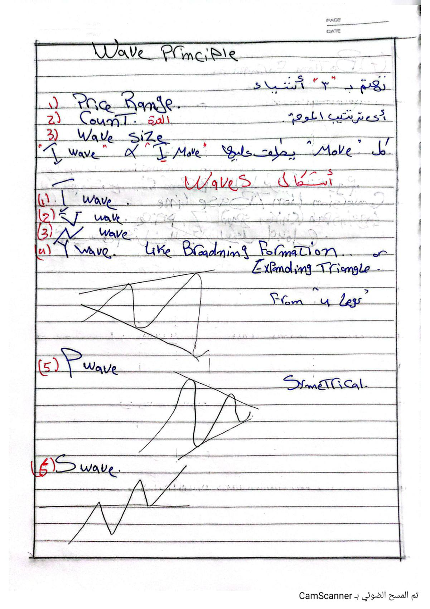
الإجابة: الموجة Y موجة من أربع سيقان متتالية، كل ساق أطول من التي قبلها، فيتسع المدى السعري: قمة أعلى ثم قاع أدنى ثم قمة أعلى ثم قاع أدنى، بين خطين متباعدين. هي نمط انعكاسي يعبّر عن فقدان التوازن وزيادة التقلب. مقابلها الغربي Broadening formation / Expanding triangle / Megaphone (تشابه في الشكل فقط)، ومقابلها في الشموع Engulfing. وهدفها: Y = B + (A − C)، أي فرق آخر قاعين يُضاف إلى آخر قمة.
«الشرح:»
- كيف تتعرف عليها؟ - أربع سيقان بالتناوب (صعود، هبوط، صعود، هبوط، أو العكس). ثلاث سيقان فقط تكون موجة N، لا Y. - كل ساق أطول من سابقتها، فكل قمة أعلى من التي قبلها، وكل قاع أدنى من الذي قبله. - إذا وصلت القمم بخط والقيعان بخط، فإن الخطين يتباعدان على شكل مكبّر الصوت (Megaphone). وهذا عكس الموجة P التي يتقارب خطاها.
- ماذا تعني؟ اتساع المدى معناه أن السوق فقد توازنه: المشترون يدفعون السعر إلى قمة جديدة، ثم يدفعه البائعون إلى قاع جديد، وكل طرف يتجاوز ما فعله الآخر. هذا تردد وتقلب متزايد، لا اتجاه منظم. لذلك هي انعكاسية: بعد صعود تنتهي غالبًا بهبوط، وبعد هبوط تنتهي غالبًا بصعود.
- المقابلات: - الغربي: Broadening formation أو Expanding triangle أو Megaphone. التشابه في الشكل فقط؛ فالموجة Y ليست الـ Broadening top الغربي بشروطه (موضعه وتركيبه وإطاره الزمني والاتجاه الذي قبله). - الشموع: Engulfing، لأن الشمعة الثانية يبتلع مداها الشمعة الأولى، أي اتساع في شمعتين: Bearish engulfing عند القمة، وBullish engulfing عند القاع. - في Elliott: المثلث المتسع (Expanding triangle).
- الهدف
Y = B + (A − C): A قاع، وB القمة التي بعده، وC قاع أدنى من A. المنطق: النموذج يتسع بالمقدار نفسه تقريبًا؛ فكما نزل القاع الجديد C تحت القاع A بمسافة (A − C)، يُتوقع أن تتجاوز القمة التالية القمة B بالمسافة نفسها. وفي الحالة المقلوبة (A قمة، وB قاع، وC قمة أعلى) يُطرح المقدار من B. - مثال 1: A = 100، B = 120، C = 95 ← A − C = 100 − 95 = 5 ←Y = 120 + 5 = 125. - مثال 2: A = 50، B = 70، C = 44 ← A − C = 50 − 44 = 6 ←Y = 70 + 6 = 76.
كيف ترسمها في الامتحان: ارسم خطين يتباعدان من اليسار إلى اليمين، ثم أربع سيقان بينهما تلمس الخطين بالتناوب. اكتب على النقاط A (قاع) وB (قمة) وC (قاع أدنى)، وارسم سهمًا متقطعًا من C إلى ما فوق B، واكتب بجانبه Y = B + (A − C).
«في الامتحان اكتب:» «الموجة Y موجة من أربع سيقان، كل ساق أطول من سابقتها، فيتسع المدى (قمم أعلى وقيعان أدنى) بين خطين متباعدين. هي نمط انعكاسي يعكس فقدان التوازن وزيادة التقلب. تشبه شكلًا الـ Broadening formation / Megaphone، ويقابلها في الشموع الـ Engulfing (Bearish عند القمة وBullish عند القاع). هدفها: فرق آخر قاعين يُضاف إلى آخر قمة، Y = B + (A − C)؛ مثال 50 و70 و44 ← 76.»
تنبيه: صِف الموجة بلغة يابانية («موجة من أربع سيقان، مداها يتسع، اتجاهها…»)، لا بلغة غربية وحدها. واذكر نمط الشموع باسمه (Bullish أو Bearish Engulfing) لا «شمعة Bullish». ولا تخلط: P تضيق (Harami)، وN ثلاث سيقان فقط.
س2 ★★★ ما الفرق بين موجات Elliott وموجات الإيشيموكو؟ (إجابة سطر واحد) أسئلة الثلاث نجوم ص9 الجلسات ص34
الإجابة: Elliott يعدّ سلسلة كاملة من الموجات (5 دافعة + 3 تصحيحية) بقواعد صارمة ودرجات متداخلة، ويتوقع مسارًا طويلًا؛ أما الإيشيموكو فيدرس أشكالًا بسيطة (I وV وN وY وP وS) من حيث مدى السعر وعدد الموجات وحجمها، ويحسب هدف الحركة التالية فقط.
«الشرح:»
- الوحدة: الموجة عند اليابانيين ساق بين نقطتين، والشكل الأكثر شيوعًا ثلاث سيقان (N). أما عند Elliott فالوحدة دورة كاملة من 8 موجات، وكل موجة تنقسم إلى موجات أصغر (Fractal).
- القواعد: Elliott له قواعد لا تُكسر (الموجة 2 لا تتجاوز بداية 1، والموجة 3 ليست الأقصر، والموجة 4 لا تدخل منطقة الموجة 1) وإرشادات (التناوب، والقنوات، والنسب). الإيشيموكو بلا هذه القواعد؛ يكفيه شكل الموجة.
- التوقع: Elliott يرسم سيناريو لمسار طويل (أين نحن في الدورة وما الذي بقي). الإيشيموكو يأخذ آخر ثلاث نقاط (A وB وC) ويحسب هدف خطوة واحدة بعدها (V وN وE وNT)، ثم يعيد الحساب بعد الحركة التالية.
- ما يدرسه: مدى السعر (Price range) + العدد (Count) + حجم الموجة (Wave size)؛ وحجم النموذج يحدد مدى الحركة بعد الكسر.
«في الامتحان اكتب:» «Elliott يعدّ سلسلة كاملة من 5 دافعة و3 تصحيحية بقواعد صارمة ودرجات متداخلة ويتوقع مسارًا طويلًا، أما الإيشيموكو فيدرس أشكالًا بسيطة (I، V، N، Y، P، S) بالمدى والعدد والحجم، ويحسب هدف الحركة التالية فقط.»
تنبيه: المحاضر يحب الأسئلة التي تجمع بين المدرستين، وكان سؤال المستوى الثالث في العام الماضي كذلك، وإجابته سطر واحد؛ فلا تكتب صفحة عن Elliott.
س3 ★★★ اذكر موجات الإيشيموكو الست وصِف كلًا منها. أسئلة الثلاث نجوم ص5 الجزء الحادي عشر ص2
الإجابة: | الموجة | الوصف | المقابل الغربي | في الشموع | |---|---|---|---| | I | ساق واحدة مستقيمة (حادة عادة) | — | — | | V | ساقان: صعود حاد ثم هبوط حاد، أو العكس | — | — | | N | ثلاث سيقان (صعود، هبوط، صعود أو العكس)، الأكثر شيوعًا و«أصل الموجات» | قمم وقيعان أعلى (أو أدنى) | — | | Y | اتساع: أربع سيقان، قمم أعلى وقيعان أدنى، نمط انعكاسي | Broadening / Expanding triangle / Megaphone | Engulfing | | P | تضيّق: قمم أدنى وقيعان أعلى | Symmetrical triangle | Harami | | S | كسر مستوى، ثم اختباره من الجهة الأخرى، ثم الاستمرار (= موجتا N) | Role reversal | — |
«الشرح:» رتّبها في ذهنك بعدد السيقان: ساق واحدة (I)، ثم ساقان (V)، ثم ثلاث (N). بعدها ثلاثة أشكال لها معنى: Y تتسع (تقلب وانعكاس)، وP تضيق (توازن وانتظار)، وS تقلب الدور (المقاومة تصير دعمًا). والموجة N تمتد 3 + 3 + 3، فأقلها ثلاث سيقان والممتدة خمس.
«في الامتحان اكتب:» ارسم الأشكال الستة صغيرة متجاورة، واكتب تحت كل شكل اسمه الياباني وسطرًا واحدًا من الجدول.
تنبيه: استخدم الأسماء اليابانية (I، V، N، Y، P، S)، ولا تصف الموجة بلغة غربية فقط. مفتاح: واحدة واثنتان وثلاث، ثم Y تتسع وP تضيق وS تقلب الدور.
س4 ★★★ اذكر المقابل الغربي والمقابل في الشموع لموجتي Y وP. أسئلة الثلاث نجوم ص5
الإجابة:
- Y ↔ الغربي: Broadening formation / Expanding triangle / Megaphone ↔ الشموع: Engulfing (Bullish عند القاع، وBearish عند القمة).
- P ↔ الغربي: Symmetrical triangle ↔ الشموع: Harami (Bearish عند القمة، وBullish عند القاع).
«الشرح:» المقارنة مبنية على الشكل والسيكولوجية:
- Y اتساع: الشمعة الثانية في الـ Engulfing أكبر مدى من الأولى وتبتلعها، كما تتسع سيقان Y.
- P تضيّق: الشمعة الثانية في الـ Harami صغيرة داخل جسم الأولى، كما تضيق سيقان P داخل المثلث المتماثل.
«في الامتحان اكتب:» «Y ↔ Broadening (Megaphone) ↔ Bullish/Bearish Engulfing؛ P ↔ Symmetrical triangle ↔ Bullish/Bearish Harami.»
تنبيه: اذكر اسم النمط بالضبط (Bullish engulfing، Bearish harami)، لا «شمعة Bullish». وY ليست الـ Broadening top الغربي بشروطه الأربعة؛ التشابه شكلي.
س5 ★★★ صِف موجة N كما يريد الامتحان، ولماذا هي «أصل الموجات»؟ أسئلة الثلاث نجوم ص5
الإجابة: صِفها بلغة يابانية: «موجة N من ثلاث سيقان، اتجاهها صاعد، تبدأ من A وتصل إلى B ثم تصحح إلى C أعلى من A، ومداها من A إلى B كذا». هي «أصل الموجات» لأن الحركة الطبيعية للاتجاه دفع ثم تصحيح ثم دفع، ومنها تُشتق باقي الأشكال، وعليها تُبنى معادلات الأهداف (A وB وC).
«الشرح:»
- كل اتجاه حقيقي يتقدم بثلاث سيقان: يدفع المشترون السعر (A ← B)، ثم يجني بعضهم الأرباح (B ← C)، ثم يدفعونه مرة أخرى. فالموجة N هي «الوحدة» التي يُبنى منها الاتجاه.
- كل معادلات الأهداف (V وN وE وNT) تُقرأ على نقاط موجة N: A البداية، وB القمة (الـ Pivot)، وC القاع الأعلى.
- والموجة S نفسها موجتا N متتاليتان.
- أقلها ثلاث سيقان، والممتدة خمس سيقان (3 + 3 + 3 …).
«في الامتحان اكتب:» «موجة N ثلاث سيقان، اتجاهها صاعد: من A إلى B ثم تصحيح إلى C أعلى من A، مداها من A إلى B؛ وهي أصل الموجات لأن الاتجاه دفع ثم تصحيح ثم دفع، وعليها تُبنى الأهداف.»
تنبيه: لا تكتب «Higher highs and higher lows»؛ هذا وصف غربي، والمحاضر طلب ألا تُخلط المدرستان.
س6 ★★★ اشرح مفهوم موجة S. أسئلة الثلاث نجوم ص6
الإجابة: موجة S هي تبادل الأدوار (Role reversal): يكسر السعر مقاومة، ثم يرتد ويختبرها فتعمل دعمًا، ثم يستمر في الاتجاه نفسه (أو العكس في الهبوط: يكسر دعمًا، ثم يختبره مقاومة، ثم يكمل الهبوط). تركيبها موجتا N متتاليتان، وتظهر في منتصف اتجاه كبير، وتُسمى موجبة أو سالبة بحسب اتجاهها. وهدفها إعادة اختبار المستوى المكسور.
«الشرح:» هي فكرة الـ Polarity التي درستها في المستوى الأول بلغة يابانية: المستوى الذي كان يمنع الصعود (البائعون فيه) يصبح بعد كسره منطقة يدافع عنها المشترون. الحرف S يساعدك على التذكر: S = Switch (المقاومة تتحول إلى دعم).
- N الأولى: صعود يكسر القمة السابقة.
- العودة إلى القمة المكسورة واختبارها من أعلى.
- N الثانية: صعود جديد من مستوى الاختبار.
كيف ترسمها: خط أفقي، ثم سعر يصعد ويعبره، ثم يعود ويلمسه من أعلى، ثم يصعد. اكتب على نقطة اللمس «Resistance → Support».
«في الامتحان اكتب:» «موجة S = Role reversal: كسر مقاومة، ثم ارتداد لاختبارها كدعم، ثم استمرار الصعود (والعكس في الهبوط). تتكون من موجتي N وتظهر في منتصف اتجاه كبير، وهدفها إعادة اختبار المستوى المكسور.»
س7 ★★★ ما الفرق بين الموجة Y والموجة P؟
الإجابة:
| | الموجة Y | الموجة P |
|---|---|---|
| الشكل | اتساع: قمم أعلى وقيعان أدنى | تضيّق: قمم أدنى وقيعان أعلى |
| الخطان | متباعدان (Megaphone) | متقاربان (مثلث) |
| المعنى | فقدان توازن وزيادة تقلب، نمط انعكاسي | توازن وانتظار |
| الغربي | Broadening / Expanding triangle | Symmetrical triangle |
| الشموع | Engulfing | Harami |
| الهدف | فرق آخر قاعين يُضاف إلى آخر قمة: B + (A − C) | فرق آخر قمتين يُضاف إلى آخر قاع: B + (A − C) |
«الشرح:» المعادلة مكتوبة بالحروف نفسها لكن معنى النقاط مختلف: في Y تكون A قاعًا وB قمة وC قاعًا أدنى، فالناتج قمة أعلى من B. وفي P تكون A قمة وB قاعًا وC قمة أدنى، فالناتج قاع أعلى من B (النقطة الرابعة داخل المثلث).
«في الامتحان اكتب:» «Y اتساع (خطان متباعدان) = تقلب وانعكاس ↔ Engulfing؛ P تضيّق (خطان متقاربان) = توازن وانتظار ↔ Harami.»
تكوّن القاع والقمة
س8 ★★★ صِف تسلسل الـ Bottoming-out في الإيشيموكو وارسمه: «الخطوة اللي قبل واللي بعد». أسئلة الثلاث نجوم ص6 أسئلة الثلاث نجوم ص7 خط اليد ص13
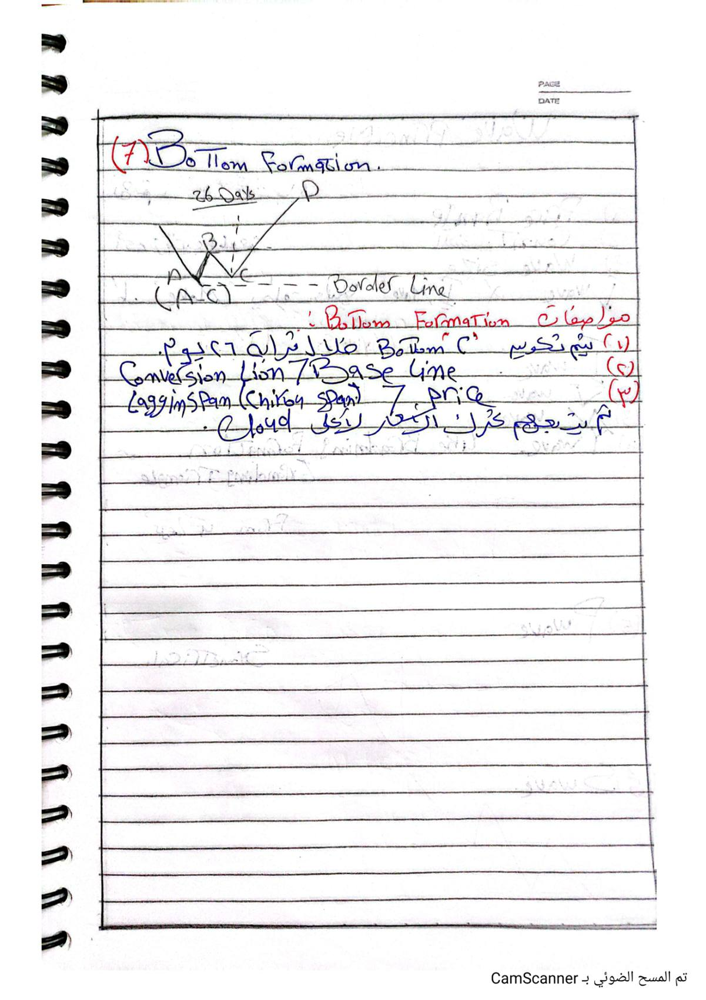
الإجابة: خمس خطوات بالترتيب:
- يهبط السعر إلى القاع A، ثم يرتد إلى B، ثم ينزل إلى C أعلى من A. والخط الأفقي من A اسمه Border line.
- يتكوّن C خلال نحو 26 يومًا من A (± يوم؛ كثيرًا في اليوم 25 أو 27).
- موجة صعود قوية حادة من C.
- بالترتيب: Tenkan يعبر فوق Kijun ← Chikou فوق سعر ما قبل 26 يومًا ← السعر يخترق السحابة لأعلى، وتنقلب السحابة المستقبلية إيجابية (Span A فوق Span B).
- تنقلب السحابة إلى دعم: التصحيح بعد الاختراق تدعمه السحابة وينتهي خلال 9 أيام، ويُستحسن ظهور Breakaway gap (والأفضل فجوات متتالية)، وألا يعود السعر تحت الـ Base line (Kijun).
«الشرح:» لماذا هذا الترتيب؟ لأن خطوط النظام بطيئة بدرجات مختلفة:
- القاع الأعلى C معناه أن البائعين لم يستطيعوا كسر A، والمشترين صاروا يشترون عند سعر أعلى.
- Tenkan (9 فترات) أسرع خط، فيعبر الـ Kijun (26) أولًا عندما يصعد السعر من C.
- Chikou هو إغلاق اليوم مرسومًا قبل 26 يومًا؛ صعوده فوق السعر المقابل يعني أن إغلاق اليوم أعلى من إغلاق ما قبل 26 يومًا، أي Momentum موجب.
- اختراق السحابة هو أبطأ تأكيد، لأن السحابة تحمل زخم الماضي (مزاحة 26).
- الرقمان: 26 هو المدة القصوى لتكوّن C بعد A، و9 عدد الأيام التي يُتوقع أن يستأنف خلالها الصعود بعد التصحيح.
كيف ترسمه في الامتحان: خط أفقي متقطع من A واكتب عليه Border line. ارسم A ثم B ثم C فوق الخط، واكتب تحت المسافة A ← C «≤ 26 يومًا». بعد C ارسم صعودًا حادًا يخترق سحابة مرسومة كشريط، ثم تصحيحًا صغيرًا يلمس أعلى السحابة، واكتب «9 أيام». واكتب بجانب الاختراق الأسهم الثلاثة: Tenkan > Kijun، Chikou > Price، Price > Cloud.
«في الامتحان اكتب:» «A قاع ← B ارتداد ← C أعلى من A (فوق الـ Border line) خلال 26 يومًا ← صعود حاد ← Tenkan يعبر فوق Kijun، ثم Chikou فوق سعر ما قبل 26 يومًا، ثم السعر يخترق السحابة وتنقلب السحابة المستقبلية موجبة ← السحابة تصبح دعمًا والتصحيح ينتهي خلال 9 أيام، مع Breakaway gap، وعدم العودة تحت الـ Base line.»
تنبيه: سمِّه «تكوين قاع» لا مجرد «قيعان أعلى». وخط اليد والمحاضرات تكتب أن C عند مستوى A تقريبًا، لكن الجلسات (الأحدث): C أعلى من A هو الأقوى. مفتاح: C فوق A خلال 26 يومًا، ثم تقاطع فـ Chikou فسحابة.
س9 ★★★ اشرح تكوّن القمة (Top formation) وقارنه بتكوّن القاع. الجلسات ص28
الإجابة: تكوّن القمة هو تسلسل القاع نفسه مقلوبًا، بالأرقام نفسها (26 يومًا لتكوّن C، و9 أيام للاستئناف):
| الخطوة | تكوّن القاع (Bottoming-out) | تكوّن القمة (Top formation) |
|---|---|---|
| 1 | A قاع ← B ارتداد ← C أعلى من A | A قمة ← B تراجع ← C أدنى من A |
| 2 | C خلال 26 يومًا من A | C خلال 26 يومًا من A |
| 3 | Tenkan يعبر Kijun لأعلى | Tenkan يعبر Kijun لأسفل |
| 4 | Chikou فوق سعر ما قبل 26 يومًا | Chikou تحت سعر ما قبل 26 يومًا |
| 5 | السعر يعبر السحابة لأعلى | السعر يكسر السحابة لأسفل |
| 6 | تصحيح تدعمه السحابة، واستئناف الصعود خلال 9 أيام | ارتداد تقاومه السحابة، واستئناف الهبوط خلال 9 أيام |
| 7 | يُستحسن Breakaway gap لأعلى، ولا عودة تحت الـ Base line | يُستحسن Breakaway gap لأسفل، ولا عودة فوق الـ Base line |
| الأقوى | قاع أعلى لا يعبر الـ Border line | قمة أدنى لا تعبر الـ Border line |
«الشرح:» في القمة يعجز المشترون عن تجاوز القمة A، فتأتي القمة C أدنى منها، ثم يبدأ البيع: الخط السريع (Tenkan) يكسر الخط الأبطأ (Kijun)، ثم يصبح إغلاق اليوم أدنى من إغلاق ما قبل 26 يومًا (Chikou تحت السعر = Momentum سالب)، ثم يكسر السعر السحابة. بعدها تصبح السحابة مقاومة لأي ارتداد.
«في الامتحان اكتب:» «تكوّن القمة عكس القاع بالأرقام نفسها: A قمة ← B تراجع ← C أدنى من A خلال 26 يومًا ← Tenkan يعبر تحت Kijun، وChikou تحت سعر ما قبل 26 يومًا، والسعر يكسر السحابة لأسفل ← السحابة تقاوم الارتداد ويستأنف الهبوط خلال 9 أيام، ويُستحسن Breakaway gap لأسفل وألا يعود السعر فوق الـ Base line.»
تنبيه: قال المحاضر إن السؤال قد يأتي في القاع أو القمة؛ فاحفظ الجدول في الاتجاهين. القاعدة: في القاع كل شيء «يعبر لأعلى»، وفي القمة كل شيء «يكسر لأسفل».
س10 ★★★ بأي أشكال يتكون القاع؟ وما الـ Border line؟ أسئلة الثلاث نجوم ص6
الإجابة: الـ Border line هو الخط الأفقي المرسوم من القاع الأول A. وأشكال القاع ثلاثة بترتيب القوة:
- الأقوى: قاع ثانٍ C أعلى من A لا يعبر الـ Border line.
- الكلاسيكي: Double bottom (C عند مستوى A تقريبًا).
- أحيانًا: قاع أدنى (C تحت A قليلًا ثم يعود).
والأشكال الثلاثة نفسها عند القمم (قمة أدنى، Double top، قمة أعلى).
«الشرح:» كلما بقي C أعلى من A دلّ ذلك على أن الطلب صار يدخل عند سعر أعلى قبل أن يصل السعر إلى القاع القديم، فهذا أقوى من قاع مزدوج يحتاج أن يختبر المستوى نفسه. والقاع الأدنى أضعف الأشكال لأنه كسر الـ Border line فعلًا قبل أن يعود (وهو قريب من فكرة «الكسر الكاذب» في س14).
«في الامتحان اكتب:» «الـ Border line خط أفقي من القاع الأول A. أقوى القيعان C أعلى من A لا يعبر الخط، ثم الـ Double bottom، وأحيانًا قاع أدنى؛ والأشكال نفسها عند القمم.»
الأهداف السعرية (Projection)
س11 ★★★ اكتب معادلات الأهداف الأربعة V وN وE وNT (A القاع، B القمة، C القاع الأعلى). أسئلة الثلاث نجوم ص7 الجزء الحادي عشر ص3
الإجابة:
| الهدف | المعادلة | بالكلمات |
|---|---|---|
| V | V = B + (B − C) | عمق التصحيح (B ← C) مضافًا فوق القمة B |
| N | N = C + (B − A) | الساق (A ← B) مضافة من القاع الأعلى C، وهي الحركة المقيسة المعيارية |
| E | E = B + (B − A) | الساق نفسها مضافة من القمة B، هدف ممتد |
| NT | NT = C + (C − A) | القاعدة (A ← C) مضافة من C |
وفي الاتجاه الهابط تُطرح المسافات بدل أن تُضاف.
«الشرح:» الفكرة اليابانية: مدى الموجة السابقة وتركيبها يحددان مدى الحركة التالية مباشرة فقط. والنقطة B هي الـ Base أو الـ Pivot. لاحظ ما يحمله كل هدف:
- E وN يحملان الساق (B − A)، لكن E يبدأ من B وN يبدأ من C.
- V يحمل العمق (B − C).
- NT يحمل القاعدة (C − A).
مثال محسوب: A = 100، B = 120، C = 110:
V = 120 + (120 − 110) = 120 + 10 = 130N = 110 + (120 − 100) = 110 + 20 = 130E = 120 + (120 − 100) = 120 + 20 = 140NT = 110 + (110 − 100) = 110 + 10 = 120
«في الامتحان اكتب:» المعادلات الأربع كما في الجدول، ثم مثالًا بالأرقام، ثم جملة: «وفي الاتجاه الهابط تُطرح المسافات».
تنبيه: مفتاح الحفظ: E وN يحملان الساق، وV يحمل العمق، وNT يحمل القاعدة. واحذر الخلط بين N (من C) وE (من B).
س12 ★★★ أُعطيت أرقامًا: أي الأهداف أعلى؟ (مثال A = 100، B = 120، C = 110) أسئلة الثلاث نجوم ص8 الجلسات ص37
الإجابة: احسب ولا تخمّن: V = 130، N = 130، E = 140، NT = 120؛ إذن E هو الأعلى وNT الأدنى. القاعدة الثابتة الوحيدة: E > N دائمًا، وNT أقل من N دائمًا؛ أما V فيتغير موضعه بحسب العمق.
«الشرح:»
- لماذا E > N دائمًا؟
E − N = [B + (B − A)] − [C + (B − A)] = B − C. وبما أن C تصحيح أدنى من B فإن B − C موجب، فـ E > N دائمًا. - لماذا NT < N دائمًا؟
N − NT = [C + (B − A)] − [C + (C − A)] = B − Cموجب أيضًا. - V مقابل N يتغير:
V − N = (B − C) − (C − A)، أي العمق مقابل القاعدة: إذا كان التصحيح B − C أكبر من القاعدة C − A صار V أعلى من N، وإذا كان أصغر صار V أدنى. لذلك احسب. - ملاحظة حسابية (إجابة مقترحة): ما دام C أعلى من A فإن
E − V = C − Aموجب، وE − NT = 2 (B − C)موجب؛ فالهدف E يخرج الأعلى في الموجة N الصاعدة، وهذا يوافق قول الجلسات «E يغلب الجميع غالبًا».
أمثلة:
| A | B | C | V | N | E | NT | الترتيب |
|---|---|---|---|---|---|---|---|
| 100 | 120 | 110 | 130 | 130 | 140 | 120 | E > V = N > NT |
| 100 | 120 | 115 | 125 | 135 | 140 | 130 | E > N > NT > V |
| 100 | 130 | 118 | 142 | 148 | 160 | 136 | E > N > V > NT |
في المثال الثاني صار V أقل من NT، لأن التصحيح B − C = 5 صغير. لذلك لا يوجد ترتيب مطلق لـ V؛ الثابت أن E > N > NT.
«في الامتحان اكتب:» احسب الأربعة بالأرقام المعطاة سطرًا سطرًا، ثم رتّبها، ثم أضف: «E أعلى من N دائمًا لأن E − N = B − C > 0».
تنبيه: الكتيّب يصف V بأنه «الأقرب والأكثر تحفظًا»، لكن الجلسات (الأحدث) تقول لا ترتيب مطلق؛ والأمثلة تثبت ذلك. فاحسب دائمًا.
س13 ★★★ اذكر أهداف موجات Y وP وS. أسئلة الثلاث نجوم ص8
الإجابة:
- Y (المتسعة): فرق آخر قاعين يُضاف إلى آخر قمة:
Y = B + (A − C)(A قاع، B قمة، C قاع أدنى). - P (المتضيقة): فرق آخر قمتين يُضاف إلى آخر قاع، فيعطي موضع النقطة الرابعة:
P = B + (A − C)(A قمة، B قاع، C قمة أدنى). - S: الهدف هو إعادة اختبار المستوى المكسور.
«الشرح:»
- P بالأرقام (مثال الجلسات): قمتان 20 و18 وقاع 10 ← فرق القمتين 20 − 18 = 2 ←
P = 10 + 2 = 12. أي أن القاع التالي داخل المثلث عند 12، أعلى من القاع 10، فيستمر التضيّق. - مثال آخر لـ P: A = 80 (قمة)، B = 60 (قاع)، C = 74 (قمة أدنى) ←
60 + (80 − 74) = 66. - Y بالأرقام: A = 50، B = 70، C = 44 ←
70 + (50 − 44) = 76. - S: لا معادلة؛ بعد كسر المستوى نتوقع أن يعود السعر إليه ويختبره من الجهة الأخرى قبل أن يكمل.
«في الامتحان اكتب:» «Y: فرق القاعين على القمة؛ P: فرق القمتين على القاع (20 و18 وقاع 10 ← 12)؛ S: إعادة اختبار المستوى المكسور.»
س14 ★★★ دعم عند 10 كُسر كسرًا كاذبًا حتى 8، والمقاومة عند 15. ما الهدف؟ الجلسات ص38
الإجابة: الهدف 17، لأن «الكسر الكاذب يأتي بكسر كاذب» بالمسافة نفسها: 15 + (10 − 8) = 15 + 2 = 17.
«الشرح:»
- السعر كسر الدعم 10 حتى 8 ثم عاد فوقه، فالكسر كاذب ومسافته 10 − 8 = 2.
- البائعون الذين باعوا تحت 10 حوصروا، والسعر عاد إلى النطاق؛ فالهدف الأدنى هو الطرف الآخر من النطاق (المقاومة 15).
- والقاعدة اليابانية: السعر يتجاوز المقاومة بمقدار الكسر الكاذب نفسه، فـ 15 + 2 = 17.
- مثال آخر: دعم 40 كُسر إلى 37، والمقاومة 50 ← المسافة 3 ← الهدف 53. وعند القمم العكس: كسر كاذب فوق قمة يتبعه هبوط تحت الدعم بالمسافة نفسها.
«في الامتحان اكتب:» «الكسر الكاذب يأتي بكسر كاذب: مسافة الكسر 10 − 8 = 2 تُضاف فوق المقاومة 15، فالهدف 17.»
س15 ★★ (CFTe II أكتوبر 2017 س7.3) اشرح كيف تحسب الهدف السفلي لـ NT Projection في الإيشيموكو. إجابات CFTe II 2017 ص7
الإجابة: في الحركة الهابطة نأخذ ثلاث نقاط تأرجح: A القمة الأولى، وB أول قاع، وC قمة الارتداد (أدنى من A). ثم NT = C − (A − C)، أي مسافة A ← C مُسقطة لأسفل من C. والأهداف الأخرى للمقارنة: N = C − (A − B) (الهدف القياسي)، وV = B − (C − B)، وE = B − (A − B). ويجب أن يتفق الهدف السعري مع الإسقاط الزمني.
«الشرح:» هي معادلات الصعود نفسها مقلوبة: كل «+» يصبح «−» لأن الحركة لأسفل. مثال: A = 200 (قمة)، B = 160 (قاع)، C = 175 (قمة أدنى):
NT = 175 − (200 − 175) = 175 − 25 = 150N = 175 − (200 − 160) = 175 − 40 = 135V = 160 − (175 − 160) = 160 − 15 = 145E = 160 − (200 − 160) = 160 − 40 = 120
فأقرب هدف NT (150)، ثم V (145)، ثم N (135)، وأبعدها E (120). وNT هنا أصغر الإسقاطات لأن القاعدة A − C (25) أقل من الساق A − B (40).
«في الامتحان اكتب:» «في الحركة الهابطة: A القمة الأولى، B أول قاع، C قمة الارتداد الأدنى. NT = C − (A − C)، أي مسافة A إلى C تُطرح من C. مثال 200/160/175 ← NT = 150. والأهداف الأخرى: N = C − (A − B)، V = B − (C − B)، E = B − (A − B). ويجب أن يتطابق الهدف السعري مع الإسقاط الزمني.»
الحساب والخطوط (أسئلة الثلاث نجوم)
س16 ★★★ هل الـ Ichimoku هو السحابة (Cloud)؟ أسئلة الثلاث نجوم ص1 الجزء الحادي عشر ص1
الإجابة: لا. الـ Ichimoku Kinko Hyo («a glance at an equilibrium chart») هو النظام كله بخطوطه الخمسة، والسحابة (Kumo) اثنان منها فقط: Span A وSpan B.
«الشرح:» كثيرون يسمّون النظام كله Cloud chart لأن السحابة قلبه، لكن السحابة وحدها لا تعطيك الـ Tenkan ولا الـ Kijun (أهم خط) ولا الـ Chikou (التأكيد). فإذا سُئلت عن الإيشيموكو فاكتب الخطوط الخمسة، وإذا سُئلت عن السحابة فاكتب Span A وB فقط.
«في الامتحان اكتب:» «لا؛ الإيشيموكو نظام من خمسة خطوط، والسحابة اثنان منها فقط (Span A وSpan B).»
س17 ★★★ اكتب الخطوط الخمسة بأسمائها الإنجليزية ومعادلاتها وفتراتها وإزاحاتها. أسئلة الثلاث نجوم ص2 الكتيّب ص105
الإجابة:
| الخط (الياباني / الإنجليزي) | المعادلة | يُرسم |
|---|---|---|
| Tenkan-sen / Conversion (Turning) line | (HH9 + LL9) / 2 | في موضعه |
| Kijun-sen / Base (Standard) line | (HH26 + LL26) / 2 | في موضعه |
| Senkou Span A / Leading Span A | (Tenkan + Kijun) / 2 | +26 للأمام |
| Senkou Span B / Leading Span B | (HH52 + LL52) / 2 | +26 للأمام |
| Chikou Span / Lagging Span | الإغلاق الحالي | −26 للخلف |
«الشرح:»
- المُدخل هو الـ Median (منتصف المدى): أعلى قمة + أدنى قاع في الفترة ÷ 2، بالظلال. ليس متوسط الإغلاقات (كالـ MA)، وليس الـ Typical price
(H + L + C) / 3. أراد Hosoda نقطة توازن لا تنحاز للمشترين ولا للبائعين. أربعة خطوط بالـ Median، والـ Chikou وحده بالإغلاق. - مثال شمعة واحدة: O = 42، H = 50، C = 48، L = 40 ←
(50 + 40) / 2 = 45؛ الفتح والإغلاق لا يدخلان. - مثال نافذة متحركة: خمسة أيام أعلى قمتها 20 وأدنى قاعها 10 ← 15. في اليوم التالي خرج الأقدم فصار المدى 20 و11 ←
(20 + 11) / 2 = 15.5. - الأرقام: 9 = أسبوع ونصف (الأسبوع الياباني 6 أيام)، 26 = شهر تداول، 52 = شهران.
- الإزاحة في الرسم لا في الحساب: Span A وB يُحسبان اليوم ويُرسمان أمام السعر بـ 26 جلسة، والـ Chikou يُرسم خلفه بـ 26.
«في الامتحان اكتب:» الجدول كما هو، ثم: «المدخل Median = (HH + LL) / 2 لا متوسط الإغلاقات، والـ Chikou وحده إغلاق، والإزاحة في الرسم لا في الحساب.»
تنبيه: أكثر خطأ في الحساب: أخذ متوسط الإغلاقات كأنه Moving average. مفتاح: 9 و26 و52، وكل إزاحة 26.
س18 ★★★ الخطان أسودان في رسم الامتحان: كيف تميز الـ Tenkan من الـ Kijun؟ أسئلة الثلاث نجوم ص3
الإجابة: الـ Tenkan (9 فترات) هو الأقرب إلى السعر، والأسرع، ويتحرك بقفزات حادة. الـ Kijun (26 فترة) أبعد عن السعر، وأبطأ، ويبقى أفقيًا (Flat) مدة أطول.
«الشرح:» الخط منتصف أعلى قمة وأدنى قاع في نافذته. نافذة الـ 9 قصيرة، فيتغير طرفاها كثيرًا ويقترب منتصفها من السعر الحالي. نافذة الـ 26 طويلة، فيبقى طرفاها ثابتين مدة أطول، فيبقى الخط مستويًا وبعيدًا عن السعر. ولاحظ أيضًا أن الـ Tenkan يتحرك بدرجات (Steps) لا بنعومة، لأنه يأخذ القيم القصوى فقط.
«في الامتحان اكتب:» «الـ Tenkan هو الأقرب إلى السعر والأسرع حركة بقفزات؛ الـ Kijun أبعد وأكثر استواءً.»
س19 ★★★ «أصعب سؤال»: لماذا يصعد الـ Kijun والسعر يهبط؟ أسئلة الثلاث نجوم ص3
الإجابة: أجب من الحساب وحده: الـ Kijun هو منتصف مدى آخر 26 شمعة (HH26 + LL26) / 2. ما زالت النافذة تحتوي القمم السابقة (HH ثابتة)، وخرج منها قاع قديم عميق، فارتفع LL26 فارتفع المنتصف، مع أن سعر اليوم يهبط.
«الشرح:» مثال بالأرقام (إجابة مقترحة للتوضيح): نافذة الـ 26 فيها أعلى قمة 120 وأدنى قاع 80 ← Kijun = 100. السعر اليوم يهبط من 115 إلى 110، لكن القاع 80 كان قبل 26 جلسة بالضبط فخرج من النافذة، وأدنى قاع بعده 90 ← Kijun = (120 + 90) / 2 = 105. السعر هبط والـ Kijun صعد من 100 إلى 105. وسيعود الـ Kijun للانعطاف حين تتغير النافذة مرة أخرى.
«في الامتحان اكتب:» «لأن الـ Kijun منتصف أعلى قمة وأدنى قاع في آخر 26 فترة، لا متوسط الأسعار؛ فإذا خرج من النافذة قاع قديم منخفض وبقيت القمم، يرتفع المنتصف حتى لو هبط سعر اليوم.»
تنبيه: مفتاح: الـ Kijun يراقب صندوق الـ 26 يومًا، لا سعر اليوم. لا تُجب بكلام عام عن «التأخر».
س20 ★★★ لماذا تكون السحابة رفيعة في الحركة الحادة جدًا؟ أسئلة الثلاث نجوم ص3
الإجابة: لأن Span A منتصف Tenkan وKijun فيرتفع بسرعة مع الحركة الحادة، وإذا امتدت الحركة أبعد من 52 فترة قفز Span B أيضًا (تتغير أعلى قمة في الـ 52)، فيجري الخطان معًا وتبقى المسافة بينهما صغيرة. لا تنتظر منها دعمًا، لكنها علامة حركة حالية قوية جدًا.
«الشرح:»
- عرض السحابة = المسافة بين Span A وSpan B.
- في الحركة العادية: Span A (من 9 و26) يتحرك أسرع، وSpan B (من 52) يحمل تاريخًا أقدم فيتأخر؛ فتتسع السحابة.
- في الحركة الحادة جدًا (80–85°) والممتدة: كل حد أعلى يجدد القمم في كل النوافذ (9 و26 و52) معًا، فيصعد الخطان معًا.
- وتسمك السحابة لاحقًا حين يهدأ السعر (Span B يستوي وSpan A يكمل). والتسمك ليس ضعفًا.
«في الامتحان اكتب:» «Span A يتحرك بسرعة مع Tenkan وKijun، وفي الحركة الحادة الممتدة أبعد من 52 فترة يقفز Span B أيضًا، فيجري الخطان معًا وتبقى السحابة رفيعة؛ فلا دعم منها، لكنها علامة حركة حالية قوية.»
تنبيه: مفتاح: Span A يجري وSpan B يمشي، وفي الحركة الحادة يجريان معًا. والمحاضر يشبّه السؤال بسؤال يحتاج «خيالًا».
س21 ★★★ ثلاثة رسوم (EGX 30، والتجاري الدولي، وEFG Hermes) في المرحلة نفسها: أيها الأضعف؟ أسئلة الثلاث نجوم ص4
الإجابة: افحص الرسوم الثلاثة بالترتيب نفسه:
- اتجاه الـ Kijun: هل حركة السعر توافق اتجاهه؟ (اتجاه الـ Kijun هو اتجاه السوق.)
- موقع السعر من السحابة: لم يصل إليها = الأقوى؛ اختبرها وارتد = أقل قوة؛ داخلها والـ Kijun ينعطف لأسفل = الأضعف.
- السحابة المستقبلية: Span A يهبط وSpan B ثابت = فقد الزخم على 9 و26.
ومثال المحاضر: EGX 30 الأقوى، ثم التجاري الدولي، ثم EFG Hermes الأضعف.
«الشرح:» كل خطوة تقيس شيئًا مختلفًا: الـ Kijun يقيس الاتجاه المتوسط، والسحابة الحالية تقيس دعم الماضي، والسحابة المستقبلية تقيس الزخم الحالي (لأنها محسوبة من حركة اليوم). فالسهم الذي ما زال بعيدًا فوق السحابة لم يحتج إلى دعمها؛ والذي ارتد منها احتاجه ونجح؛ والذي دخلها والـ Kijun يهبط فقد السيطرة.
«في الامتحان اكتب:» «أقارن بثلاث خطوات: اتجاه الـ Kijun، ثم موقع السعر من السحابة، ثم السحابة المستقبلية. الأضعف هو الذي دخل السحابة والـ Kijun ينعطف لأسفل وSpan A في السحابة المستقبلية يهبط.»
استراتيجيات التداول
س22 ★★★ «Give a trading set-up using the Ichimoku SYSTEM» مقابل «any set-up»: ماذا تعطي؟ أسئلة الثلاث نجوم ص4
الإجابة: كلمة «System» تعني النظام الكامل بأدواته الخمس (الـ Combo / COMPO). وإذا كان السؤال مفتوحًا («any» أو «أي») فأعطِ الأسهل. والامتحان يقف عند الـ Combo، فلا شيء بعد النظام الكامل.
«الشرح:» الأسئلة المقارنة يحددها كلمة واحدة في وسطها، فاقرأ السؤال ببطء. والنظام الكامل (الإجابة على «System»): Set-up: Tenkan فوق Kijun؛ Signal: السعر فوق السحابة؛ Confirmation: Chikou فوق السحابة والأسعار؛ Stop: Kijun (انظر س23). أما الأسهل فمثل الاستراتيجية الأولى (س24).
«في الامتحان اكتب:» إذا قرأت «System»: اكتب الـ COMPO كاملًا بأجزائه الأربعة. وإذا قرأت «any»: اكتب الاستراتيجية الأولى (السعر والسحابة والـ Chikou).
س23 ★★★ اكتب نظام الإيشيموكو الكامل (COMPO) لصفقة شراء، والبيع. أسئلة الثلاث نجوم ص4 الجلسات ص37
الإجابة: | الجزء | الشراء | البيع | |---|---|---| | Set-up | Tenkan فوق Kijun | Tenkan تحت Kijun | | Signal | السعر يخترق السحابة لأعلى | السعر يكسر السحابة لأسفل | | Confirmation | Chikou فوق السحابة والأسعار | Chikou تحت السحابة والأسعار | | Stop | الـ Kijun (Base line) | الـ Kijun |
ويُستحسن أن تنقلب السحابة المستقبلية في الاتجاه نفسه.
«الشرح:» كل أداة تضيف شرطًا: التقاطع يعطي الاتجاه القصير، والسحابة تعطي الاتجاه المتوسط، والـ Chikou يؤكد الزخم. لذلك الـ COMPO أبطأ الاستراتيجيات وأقلها إشارات كاذبة، والأفضل في الاتجاهات الطويلة، لكنه يضعف في التذبذب العنيف وقد يتأخر فيه الـ Chikou كثيرًا. وإذا تأخر الـ Chikou فقلل وزنه وخذ التأكيد من أداة أخرى (أو ادخل بنصف المركز).
«في الامتحان اكتب:» «Set-up: Tenkan > Kijun؛ Signal: Price > Cloud؛ Confirmation: Chikou > Cloud and Prices؛ Stop: Kijun؛ والبيع بالعكس، مع انقلاب السحابة المستقبلية في الاتجاه نفسه.»
تنبيه: مفتاح: تقاطع ثم سحابة ثم Chikou، والـ Kijun هو الـ Stop.
س24 ★★★ الاستراتيجية الأولى (السعر والسحابة والـ Chikou): أين الـ Stop؟ أسئلة الثلاث نجوم ص4
الإجابة:
- شراء: Set-up: السعر فوق السحابة. Signal: الـ Chikou يخترق السحابة لأعلى. Stop: الحد السفلي للسحابة (Span B في الصعود).
- بيع: Set-up: السعر تحت السحابة. Signal: الـ Chikou يخترق السحابة لأسفل. Stop: الحد العلوي للسحابة (Span B في الهبوط).
«الشرح:» الوقف هو الطرف البعيد من السحابة، لأن السحابة كلها منطقة دعم (في الصعود)؛ فلا نعتبر الصفقة خاطئة إلا إذا عبر السعر السحابة كلها. وفي الاتجاه الواضح يكون الطرف البعيد هو Span B (الأبطأ). وهذه الاستراتيجية الوحيدة التي وقفها السحابة؛ كل الاستراتيجيات الأخرى وقفها الـ Kijun. ميزتها أنها أطول بقاءً في الصفقة (تلتقط «اللحمة»)، وعيبها أنها متأخرة وقد تعيد جزءًا كبيرًا من الربح قبل الوقف.
«في الامتحان اكتب:» «شراء: السعر فوق السحابة، والإشارة اختراق الـ Chikou للسحابة لأعلى، والوقف الحد السفلي للسحابة (Span B). البيع بالعكس والوقف الحد العلوي.»
تنبيه: فخ امتحاني: لا تخلط بين الحد العلوي والسفلي. مفتاح: الـ Stop هو الطرف البعيد من السحابة.
س25 ★★ (CFTe II أبريل 2024 س5.3) ما أهمية Leading Span 1 وLeading Span 2 في الإيشيموكو، وكيف نستخدمهما؟ إجابات CFTe II 2024 ص6
الإجابة: Span A (Leading Span 1) = (Tenkan + Kijun) / 2، وSpan B (Leading Span 2) = (HH52 + LL52) / 2، وكلاهما يُرسم 26 فترة للأمام، والمنطقة بينهما هي السحابة (Kumo). الاستخدامات:
- الاتجاه: السعر فوق السحابة = صاعد، وتحتها = هابط، وداخلها = تماسك.
- دعم ومقاومة مستقبليان: أقوى حين تكون السحابة سميكة، وأضعف حين تكون رفيعة.
- لون السحابة: Span A فوق B = سحابة صاعدة، وتحته = هابطة؛ والـ Twist (تقاطع A وB) يحذّر من تغير الاتجاه.
- إشارات ووقف: اختراق السحابة إشارة اتجاه، وحدها البعيد يُستخدم وقف خسارة.
«الشرح:» الإزاحة 26 للأمام تجعل السحابة الجزء الوحيد في النظام المرسوم في مكان لم يصل إليه السعر بعد. ولذلك:
- السحابة تحت سعر اليوم حُسبت من حركة ما قبل 26 جلسة (مقارنة اليوم بالماضي).
- السحابة المستقبلية (أمام السعر) محسوبة من الحركة الحالية، فتعطي الـ Sentiment والـ Momentum الحاليين، وكثيرًا ما يتغير لونها قبل أن يكسر السعر السحابة الحالية.
- وSpan B يعمل كمستوى تصحيح 50% لآخر 52 جلسة.
«في الامتحان اكتب:» المعادلتين والإزاحة، ثم الاستخدامات الأربعة مرقمة، ثم جملة: «السحابة المستقبلية تعكس الوضع الحالي، والتي تحت السعر تعكس ما قبل 26 جلسة».
س26 ★★ ما قاعدة الـ Kijun-sen بشأن الارتدادات؟ الكتيّب ص105 الجلسات ص36
الإجابة: «The direction of the Base line is the direction of the market»؛ وأي ارتداد (Rally) لا يصاحبه انعطاف صاعد في الـ Base line يكون قصير العمر، حتى لو عبر الـ Conversion line (Tenkan) فوق الـ Base line.
«الشرح:» الـ Kijun لا يصعد إلا إذا كُسرت أعلى قمة في آخر 26 جلسة. فإذا صعد السعر والـ Kijun ثابت، فأنت ما زلت داخل مدى الـ 26 القديم ولم يتغير شيء حقيقي. وفي الاتجاه الصاعد ثلاثة أنواع لحركة السعر أمام الـ Kijun:
- (A) Minor short-term correction: يختبره ويرتد دون عبوره (متوسط مدته نحو 13 جلسة).
- (B) Major short-term pullback: يعبره ثم يعود فوقه ويكمل.
- (C) Counter-trend (Trend reversal): يعبره ويفشل في العودة.
«في الامتحان اكتب:» «اتجاه الـ Base line هو اتجاه السوق؛ وأي ارتداد لا يصاحبه انعطاف صاعد في الـ Base line قصير العمر، حتى لو عبر الـ Conversion line فوق الـ Base line.»
نقاط امتحانية
- Y: أربع سيقان تتسع ↔ Megaphone ↔ Engulfing، وهدفها
Y = B + (A − C)(فرق القاعين على القمة؛ 50/70/44 ← 76). - P ↔ Symmetrical triangle ↔ Harami، وهدفها فرق القمتين على آخر قاع (20/18/10 ← 12). S = موجتا N = Role reversal، وهدفها إعادة الاختبار.
- Elliott سلسلة كاملة (5 + 3) بقواعد ودرجات؛ الإيشيموكو أشكال بسيطة تحسب هدف الحركة التالية فقط.
- Bottoming: C فوق A (Border line) خلال 26 يومًا ← Tenkan > Kijun ← Chikou ← السحابة؛ استئناف خلال 9 أيام، وGap، ولا عودة تحت الـ Base. القمة عكسه بالأرقام نفسها.
V = B+(B−C)،N = C+(B−A)،E = B+(B−A)،NT = C+(C−A)؛ احسب، والثابت E > N > NT. الهابط:NT = C − (A − C).- الكسر الكاذب يأتي بكسر كاذب: 10 → 8 ومقاومة 15 ← 17.
- 9 / 26 / 52 بالـ Median (HH + LL) / 2، الإزاحة ±26 في الرسم فقط، والـ Chikou وحده إغلاق؛ 42/50/48/40 ← 45.
- الـ Tenkan الأقرب إلى السعر؛ الـ Kijun يصعد والسعر يهبط لأن قاعًا قديمًا خرج من نافذة الـ 26.
- الكامل: Set-up تقاطع، Signal سحابة، Confirmation Chikou، Stop Kijun؛ والأولى Stop = الطرف البعيد للسحابة (Span B).
- «System» = Combo، و«أي» = الأسهل؛ اقرأ كلمة وسط السؤال ببطء.
المدارس والأدوات
النقطة والرقم (Point & Figure)
في هذا الموضوع
الخلاصة: لم يحدد المحاضر أسئلة بعينها في P&F، لكن الامتحانات السابقة سألت عن عيوبه وأبعاده، وتحويل البيانات إليه، والعدّ الأفقي وعرض القاعدة، وقواعد شارت المربع الواحد (1-box). الأسئلة الثلاثة التي يجب أن تتقنها: صيغتا العدّ الرأسي والأفقي (وأثر عرض القاعدة)، وقواعد 1-box (عدّ أفقي فقط وOne-step-back)، والفرق بين P&F والـ Renko.
البناء والمعايير
س1 ★★ (CFTe I التجريبي 2014، س48) Point and figure charts have the following drawback/s relative to bar charts: إجابات CFTe I ص6 ورقة الامتحان ص30
- أ. لا يوضح الدعم والمقاومة بوضوح مثل الـ Bar chart (They do not show support and resistance clearly like bar charts).
- ب. لا يتضمن أحجام التداول (They do not include volume).
- ج. قصير الأجل بطبيعته، وليس سهلًا استخدامه في التحليل طويل المدى.
- د. كل ما سبق عيوب للـ P&F مقارنة بالـ Bar.
الإجابة: (ب) لا يتضمن الحجم.
«الشرح:» شارت P&F يرسم السعر مقابل السعر فقط، فهو يتجاهل ثلاثة أشياء: الزمن والحجم والفجوات (الخصائص 9 و10 و11 في الكتيّب). من بين الخيارات، العيب الحقيقي الوحيد المذكور هو غياب الحجم.
- لماذا (أ) خطأ؟ العكس هو الصحيح: P&F يُظهر الدعم والمقاومة بوضوح أكبر، لأن القمم والقيعان المتكررة تظهر صفوفًا من X وO عند المستوى نفسه، والإشارات (Double top break وغيرها) مبنية عليها.
- لماذا (ج) خطأ؟ P&F يصلح لأي مدى؛ فبتكبير حجم المربع (Box size) أو باستخدام بيانات أسبوعية يصبح طويل الأجل.
- لماذا (د) خطأ؟ لأن (أ) و(ج) ليسا عيبين.
«في الامتحان اكتب:» «(ب)؛ لأن P&F يتجاهل الحجم (والزمن والفجوات)، بينما يُظهر الدعم والمقاومة بوضوح ويصلح لأي مدى.»
س2 ★★ (CFTe II أكتوبر 2017، س3.3) الرسم البياني الـ Point and Figure ليس له مقياس للوقت، ولكن مع ذلك يُعتبر رسمًا ثنائي الأبعاد مماثلًا للرسوم العمودية (Bar) والخطية (Line). اشرح. إجابات CFTe II 2017 ص5
الإجابة: المحور الرأسي هو السعر كأي رسم. أما المحور الأفقي فليس الزمن التقويمي، بل عدد الانعكاسات (الأعمدة): كل عمود جديد يسجل تغيرًا في الاتجاه بالحجم المطلوب، فالبعد الأفقي يقيس نشاط السوق (مقدار التأرجح). لذلك تمثل منطقة التماسك العريضة (أعمدة كثيرة) تجميعًا أو توزيعًا أكبر، ولهذا يستخدم العدّ الأفقي هذا العرض لإسقاط هدف سعري. الزمن مستبعد، لكن البعد الثاني باقٍ.
«الشرح:»
- في الـ Bar chart كل يوم يأخذ عمودًا، سواء تحرك السعر أم لا. في P&F لا يُفتح عمود جديد إلا عندما يرتد السعر بعدد كافٍ من المربعات (3 في الغالب).
- فإذا هدأ السوق أسابيع لا يُرسم شيء، وإذا تذبذب بقوة داخل نطاق تُرسم أعمدة كثيرة متجاورة. أي أن العرض الأفقي يعكس كمية المعركة بين المشترين والبائعين، لا طول الوقت.
- ولذلك يُقال في العدّ الأفقي: «عرض القاعدة هو السبب والحركة هي النتيجة».
«في الامتحان اكتب:» «البعد الرأسي سعر، والبعد الأفقي عدد الانعكاسات (الأعمدة) لا الزمن؛ فهو يقيس نشاط السوق. القاعدة العريضة = تجميع أو توزيع أكبر، وعليها يُبنى العدّ الأفقي للهدف.»
س3 ★★ اذكر معايير شارت P&F الثلاثة، والقاعدة الوحيدة بشأن القيمة التي تقارن بها سعرًا جديدًا. الكتيّب ص105
الإجابة:
- Box Size: قيمة كل X أو O.
- Box Reversal: عدد المربعات اللازمة لفتح عمود جديد (1 أو 2 أو 3 أو 5)، و3 هو الافتراضي.
- Time / Data input: نوع البيانات (Tick أو يومي أو أسبوعي) وطريقتها (Close Only أو High & Low).
والقاعدة: قارن السعر الجديد دائمًا بـآخر مربع مرسوم، لا بآخر سعر.
«الشرح:»
- Box Size: الحركة الأصغر من مربع تُهمل. كلما زاد التذبذب (Volatility) زِد حجم المربع. ويُسمّى الشارت باسم أول معيارين: «حجم المربع × الانعكاس»، مثل 1 × 3.
- Box Reversal: في 3-box لا يُفتح عمود جديد إلا إذا ارتد السعر 3 مربعات عن آخر مربع. و1-box هو الأصل التاريخي.
- Time input: يحدد دقة المُدخلات لا دقة الشارت.
- لماذا آخر مربع مرسوم؟ لأن السعر نفسه يُهمل بمجرد رسمه؛ الشارت لا يتذكر إلا المربعات. مثال: عمود X وصل إلى 44 (مربع = 1). إغلاق جديد 43.6 لا يمد العمود (لم يبلغ 45) ولا يعكسه (لم يبلغ 41)، فيُهمل.
- وفي الرسم املأ كل المربعات البينية.
«في الامتحان اكتب:» «Box size، وBox reversal (3 افتراضيًا)، وTime/Data input؛ وتُقارن الأسعار الجديدة دائمًا بآخر مربع مرسوم لا بآخر سعر.»
س4 ★★ (CFTe II أكتوبر 2017، س2.3) الرسم البياني أسفل هو رسم يومي لمؤشر سوق لبلد في الشرق الأوسط. قم بتحويله إلى رسم Point and Figure باستخدام أسلوب «الإغلاق»، بحجم صندوق 50 ومعيار انعكاس 3، مستخدمًا الرسم الفارغ. (3 درجات) إجابات CFTe II 2017 ص4
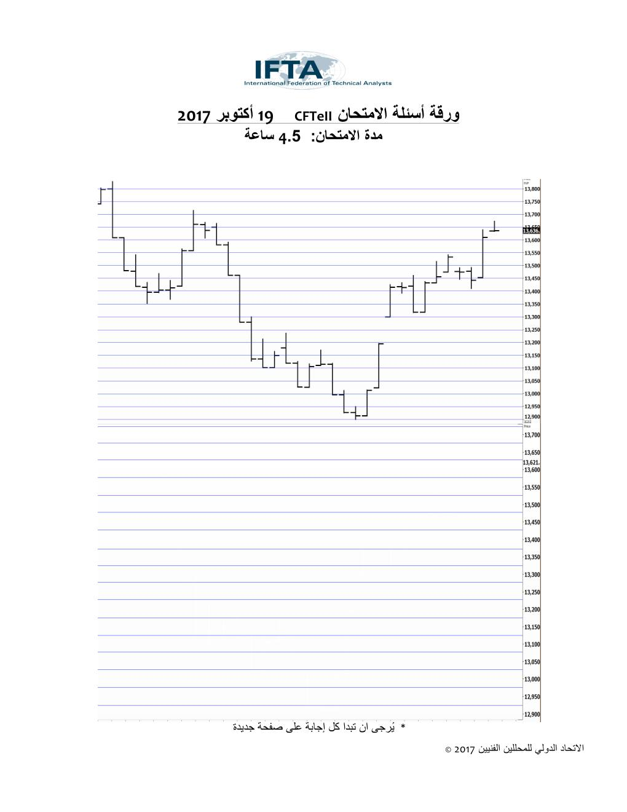
الإجابة: أربعة أعمدة: | العمود | ماذا حدث في الإغلاقات | ما يُرسم | |---|---|---| | 1 (O) | من الافتتاح قرب 13,800 هبطت الإغلاقات إلى 13,610 ثم 13,480 ثم ≈ 13,400 | O من 13,750 نزولًا إلى 13,400 | | 2 (X) | الصعود إلى ≈ 13,565 ثم 13,655 يحقق الانعكاس (13,400 + 150 = 13,550) | X من 13,450 إلى 13,650 | | 3 (O) | الإغلاق عند 13,460 يحقق الانعكاس (13,650 − 150 = 13,500)، ثم الهبوط إلى ≈ 12,910 | O من 13,600 نزولًا إلى 12,950 | | 4 (X) | الإغلاق قرب 13,195 يحقق الانعكاس (12,950 + 150 = 13,100)، ثم الصعود إلى 13,420 ثم 13,610–13,636 | X من 13,000 إلى 13,600 |
الهبوط بعدها إلى 13,315 صندوقان فقط فلا انعكاس. والعمود 4 لم يتجاوز قمة العمود 2 (13,650) بعد: الـ X التالي عند 13,700 سيكون إشارة شراء (Double Top Break).
«الشرح:» خطوات العمل:
- القواعد: الصندوق = 50، والانعكاس = 3 × 50 = 150 نقطة. نأخذ الإغلاق فقط. X جديد يحتاج إغلاقًا عند الصندوق التالي أو أعلى، وO جديد يحتاج إغلاقًا عند الصندوق التالي أو أدنى. والانعكاس يحتاج إغلاقًا يبعد 150 نقطة على الأقل عن آخر صندوق مرسوم.
- العمود 1: الإغلاقات تهبط من قرب 13,800، فنرسم O في كل صندوق يبلغه الإغلاق: 13,750، 13,700، … حتى 13,400 (8 صناديق).
- الانعكاس الأول: آخر صندوق O = 13,400، فالانعكاس يحتاج إغلاقًا عند 13,400 + 150 = 13,550 أو أعلى. تحقق ذلك بالإغلاق ≈ 13,565، ثم 13,655، فنرسم X من 13,450 (صندوق فوق آخر O) إلى 13,650.
- الانعكاس الثاني: آخر X = 13,650 ← يحتاج إغلاقًا عند 13,650 − 150 = 13,500 أو أدنى؛ تحقق بالإغلاق 13,460، ثم استمر الهبوط إلى ≈ 12,910، فنرسم O من 13,600 إلى 12,950 (لأن 12,910 لم يبلغ 12,900).
- الانعكاس الثالث: آخر O = 12,950 ← يحتاج 12,950 + 150 = 13,100؛ تحقق بالإغلاق ≈ 13,195، ثم الصعود حتى 13,610–13,636، فنرسم X من 13,000 إلى 13,600.
- آخر حركة: الهبوط إلى 13,315 يبعد عن 13,600 بأقل من 150 (يحتاج 13,450)، أي صندوقين فقط، فلا يُرسم شيء.
- القراءة: قمة العمود 2 = 13,650، والعمود 4 عند 13,600. إغلاق عند 13,700 يرسم X فوق القمة السابقة = Double Top Break = SBS = شراء.
كيف ترسم في الامتحان: استخدم الشبكة الفارغة: كل خط أفقي = 50. ارسم الأعمدة الأربعة متجاورة، وضع X بالأزرق أو بالقلم وO بوضوح، واكتب فوق العمود الأخير «Buy above 13,650 (at 13,700) — Double Top Break».
«في الامتحان اكتب:» القواعد في سطرين (صندوق 50، انعكاس 150، إغلاق فقط، المقارنة بآخر صندوق)، ثم الجدول، ثم: «الـ X التالي عند 13,700 = Double Top Break = إشارة شراء». القراءة بالعين مقبولة في حدود صندوق واحد.
تنبيه: أخطاء شائعة: (1) قياس الانعكاس من آخر سعر لا من آخر صندوق. (2) رسم الانعكاس بصندوقين. (3) البدء بـ X في العمود الجديد عند مستوى آخر O نفسه؛ العمود الجديد يبدأ بعد آخر صندوق بصندوق واحد.
س5 ★ قارن بين طريقتي Close Only وHigh & Low في بناء الشارت. خط اليد ص2 خط اليد ص3
الإجابة: | | Close Only | High & Low | |---|---|---| | البيانات | الإغلاق وحده | أعلى سعر وأدنى سعر في الجلسة | | الخطوات | هل الإغلاق يمد العمود؟ وإلا: هل يعكسه بـ 3 مربعات؟ | في العمود الصاعد: الـ High يمد أولًا؛ وإلا الـ Low يعكس (وفي الهابط العكس) | | الميزة | بسيطة وواضحة | تُظهر الدعم والمقاومة بوضوح | | العيب | لا ترى الـ High/Low ولا الحركة داخل الجلسة، فلا تظهر المستويات الحقيقية | تؤخر الانعكاس لأن الأولوية لمد العمود؛ وإذا ولّد الـ High مربع X والـ Low مربع O في الجلسة نفسها لا نعرف أيهما حدث أولًا |
«الشرح:» مثال: يوم صعد من 40 إلى 46 وأغلق عند 41؛ Close Only يسجل 41 فقط ولا يرى 46. وفي الرسم أدناه وصل High اليوم الرابع إلى 39.6 وأغلق عند 37.2: Close Only لم يرَ القمة، أما High & Low فسجل 39 ثم انعكاسًا ثم عودة إلى 39، فظهرت مقاومة واضحة عند 39.
«في الامتحان اكتب:» «Close Only بسيطة لكنها لا ترى القمم والقيعان داخل الجلسة؛ High & Low تُظهر الدعم والمقاومة بوضوح لكنها تؤخر الانعكاس لأن الأولوية لمد العمود.»
الإشارات والنماذج
س6 ★ ما الفرق بين الـ SBS والـ Bullish Signal؟ وما ترتيب قوة القمم الثلاثية؟ خط اليد ص5 الكتيّب ص17
الإجابة:
- SBS (Simple Buy Signal): عمود X يتجاوز قمة عمود X السابق بمربع واحد (قمتان ثم اختراق = Double Top Break). مثال: قمتان عند 47 ← شراء عند 48.
- Bullish Signal: SBS مسبوقة بقاع أعلى (Higher Low)، وتحتاج 4 أعمدة على الأقل، وهي أقوى من SBS. مثال: قيعان 42 ثم 44، ثم اختراق 47 ← شراء عند 48.
- ترتيب القوة:
Triple Top with Higher Lows > Triple Top > Double Top (الأضعف). - الحدود الدنيا لعدد الأعمدة: Bullish Signal 4، والمثلث 5، والـ Spread Triple 7.
«الشرح:» القمة السابقة مقاومة؛ تجاوزها بمربع يعني أن المشترين تغلبوا على البائعين عند ذلك المستوى. وفي الـ Bullish Signal شرط إضافي: المشترون صاروا يشترون عند سعر أعلى (القاع الأعلى) قبل الاختراق، فالطلب يتصاعد. والقاعدة العامة: كلما اتسع النموذج وتكرر اختبار المستوى نفسه قويت الإشارة، لأن البائعين عند المستوى استُنزفوا أكثر؛ ولذلك الثلاثية أقوى من المزدوجة، والثلاثية بقيعان صاعدة أقواها (طلب يتصاعد وعرض ثابت).
«في الامتحان اكتب:» «SBS = Double Top Break؛ الـ Bullish Signal = SBS مسبوقة بقاع أعلى، 4 أعمدة على الأقل، وأقوى. الترتيب: Triple top with higher lows > Triple top > Double top.»
س7 ★ ما الـ Catapult؟ خط اليد ص11 الكتيّب ص18
الإجابة: الـ Catapult («باني الثقة» Confidence builder) من أقوى إشارات P&F، ونسبة نجاحه 87.5%: Triple Top Break، ثم ارتداد، ثم Double Top Break فوق قمة الاختراق (والـ Bearish catapult عكسه: كسر قاع ثلاثي، ثم ارتداد، ثم كسر قاع مزدوج).
«الشرح:» خطوة بخطوة (المثال): (1) ثلاث قمم عند 46 ثم اختراق إلى 48 = Triple top break. (2) عمود O يرتد إلى 45 (اختبار للمستوى المكسور). (3) عمود X جديد يتجاوز قمة 48 = Double top break، ويصل إلى 50. المنطق: الاختراق الأول قد يكون كاذبًا، لكن بعد الارتداد والاختراق الثاني يتأكد أن المشترين سيطروا. التكتيك: ادخل جزئيًا عند كسر القمة الثلاثية، وأضف عند الارتداد، والباقي عند كسر المزدوجة. والمتحفظ ينتظر الـ Catapult نفسه.
«في الامتحان اكتب:» «Catapult = Triple top break ثم ارتداد ثم Double top break فوق قمة الاختراق؛ نسبة نجاحه 87.5%؛ ندخل جزئيًا عند الكسر الثلاثي ونضيف عند الارتداد ونكمل عند الكسر المزدوج.»
س8 ★ ما قواعد خطوط الاتجاه بزاوية 45° في P&F؟ خط اليد ص6 الكتيّب ص17
الإجابة:
- الخط موضوعي: 45° = مربع لكل عمود، بلا اجتهاد في اختيار النقاط.
- Bullish Support Line: يُرسم بعد إشارة الشراء، صعودًا من المربع تحت أدنى O.
- Bearish Resistance Line: يُرسم بعد إشارة البيع، هبوطًا من المربع فوق أعلى X.
- ما دام السعر فوق الـ Bullish Support Line فلا نأخذ إشارة البيع، لأن الـ Mode لم يتغير.
- Secondary line: عند الابتعاد الكبير عن الخط الرئيسي، وشرطها SBS ثم SSS ثم SBS.
- Adjust line: في بداية الـ Mode، إذا نزل السعر مربعًا أو مربعين تحت الخط دون كسر الدعم (القاع السابق) نعدّل الخط. أما كسر الدعم ثم الخط = تغيّر الـ Mode.
«الشرح:» في الشارتات العادية يختار كل محلل نقطتين مختلفتين، أما في P&F فالخط يصعد مربعًا مع كل عمود، فيتفق عليه الجميع. والخط الرئيسي يحدد «الوضع»: فوق خط الدعم نحن في وضع شراء، وإشارات البيع مجرد تصحيحات حتى يُكسر الخط. وفي المثال أدناه وقعت SSS عند 49 فوق الخط فأُهملت.
«في الامتحان اكتب:» القواعد الست مرقمة، مع جملة: «لا نأخذ بيعًا فوق الـ Bullish Support Line».
س9 ★★ (CFTe I التجريبي 2014، س50) Which of the following is an asymmetric filter? إجابات CFTe I ص6 ورقة الامتحان ص31
- أ. P&F 2-box reversal charts
- ب. P&F 3-box reversal charts
- ج. P&F 4-box reversal charts
- د. All of the above (كل ما سبق)
الإجابة: (د) كل ما سبق.
«الشرح:» شارت P&F «فلتر»: لا يسجل إلا الحركة التي تستحق. ويكون الفلتر غير متماثل إذا اختلف المطلوب في الاتجاهين:
- للاستمرار (مد العمود في اتجاهه): يكفي مربع واحد.
-
للانعكاس (فتح عمود معاكس): يلزم N مربعات (2 أو 3 أو 4). فكل شارت انعكاسه أكثر من مربع غير متماثل: 2-box (1 مقابل 2)، و3-box (1 مقابل 3)، و4-box (1 مقابل 4). أما 1-box فمتماثل (1 مقابل 1) (استنتاج من التعريف).
-
لماذا ليست (أ) أو (ب) أو (ج) وحدها؟ كل منها صحيح جزئيًا، والخيار الذي يجمعها هو الإجابة الكاملة.
«في الامتحان اكتب:» «(د)؛ لأن كل شارتات الانعكاس متعدد الصناديق تحتاج صندوقًا واحدًا للاستمرار وN صناديق للانعكاس، فهي فلاتر غير متماثلة.»
الأهداف (العدّ)
س10 ★★ (CFTe II أبريل 2024، س7.2) كيف يمكن أن تتأثر المستهدفات السعرية بعرض قاعدة شكل الـ Point and Figure؟ (مع صيغتي العدّ) إجابات CFTe II 2024 ص7 خط اليد ص19
الإجابة: في P&F عرض القاعدة هو السبب والحركة هي النتيجة: كلما اتسعت القاعدة (تجميع أطول وأعمدة أكثر) كبر الهدف السعري، لأن التجميع الطويل يخزّن طاقة أكبر.
- العدّ الأفقي (3-box):
Target = Columns × Box Reversal × Box Size، ويُضاف إلى قاع التكوين. - العدّ الرأسي:
Target = Boxes in signal column × Box Reversal × Box Size، ويُضاف إلى بداية عمود X (ويُطرح من قمة عمود O في الهبوط). ويُؤخذ العدّ الأفقي على الصف الأكثر امتلاءً أو من الجدار إلى الجدار، ويتأكد بالاختراق.
«الشرح:» مثالان محسوبان (مربع = 1، انعكاس = 3):
- رأسي: عمود الإشارة من 41 إلى 44 = 4 مربعات ←
4 × 3 × 1 = 12← الهدف41 + 12 = 53. - أفقي: قاعدة عرضها 5 أعمدة وقاعها 40 ←
5 × 3 × 1 = 15← الهدف40 + 15 = 55. - أثر العرض: لو اتسعت القاعدة نفسها إلى 8 أعمدة لصار الهدف
8 × 3 × 1 = 24←40 + 24 = 64. فالعرض يتناسب طرديًا مع الهدف. - والاثنان يُثبَّتان عند بداية الحركة، لا عند سعر الكسر. وأهداف P&F موضوعية لكنها محتملة وتقريبية.
«في الامتحان اكتب:» «عرض القاعدة هو السبب والحركة هي النتيجة؛ العدّ الأفقي = عدد الأعمدة × الانعكاس × حجم الصندوق مضافًا إلى قاع القاعدة، فكلما اتسعت القاعدة كبر الهدف. مثال: 5 أعمدة × 3 × 1 = 15 فوق 40 ← 55.»
شارت المربع الواحد (1-box)
س11 ★★ (CFTe I التجريبي 2014، س47) Which of the following P&F charts can have X and O in the same column? إجابات CFTe I ص6 ورقة الامتحان ص30
- أ. 1-box reversal charts
- ب. 2-box reversal charts
- ج. 3-box reversal charts
- د. All of the above
الإجابة: (أ) شارت انعكاس الصندوق الواحد (1-box).
«الشرح:» في 1-box يُرسم كل تحرك بمربع كامل في الاتجاهين، والسبب الوحيد لفتح عمود جديد هو تجنّب رسم X فوق O (أو العكس) في الخانة نفسها. فإذا انعكس السعر مربعًا ثم عاد فورًا (One-step-back) تُرسم العلامة في العمود نفسه لأن خانتها فارغة، فيجتمع X وO في عمود واحد.
- لماذا (ب) و(ج) خطأ؟ في 2-box و3-box الانعكاس يحتاج 2 أو 3 مربعات ويفتح دائمًا عمودًا جديدًا، فلا يجتمع الحرفان.
- لماذا (د) خطأ؟ لأن (ب) و(ج) خطأ.
«في الامتحان اكتب:» «(أ)؛ فقط الـ 1-box يجمع X وO في عمود واحد بقاعدة الـ One-step-back.»
س12 ★★ (CFTe I التجريبي 2014، س49) The basis of the 1-box reversal count is: إجابات CFTe I ص6 ورقة الامتحان ص31
- أ. The width of the pattern only (عرض الشكل فقط)
- ب. The height of the pattern only (ارتفاع الشكل فقط)
- ج. The height of the pattern most of the time (الارتفاع في معظم الأوقات)
- د. Both the width and height of the pattern (العرض والارتفاع معًا)
الإجابة: (أ) عرض الشكل فقط.
«الشرح:» العدّ الرأسي يقيس ارتفاع عمود الإشارة، ويحتاج عمودًا «نقيًا» من X. في 1-box قد يحتوي العمود X وO معًا (One-step-back)، فلا معنى لارتفاع العمود؛ لذلك يُستخدم العدّ الأفقي (العرض) فقط. أما 3-box فيتيح الرأسي والأفقي معًا.
- (ب) و(ج) خطأ لأن الارتفاع (العدّ الرأسي) لا يصلح على 1-box.
- (د) خطأ للسبب نفسه؛ «العرض والارتفاع» صفة 3-box.
«في الامتحان اكتب:» «(أ)؛ على 1-box العدّ أفقي فقط لأن العمود قد يحتوي X وO معًا؛ و3-box يتيح الرأسي والأفقي.»
س13 ★★ عرّف الـ One-step-back، وما النتيجة الوحيدة لرسم شارت 1-box خطأً؟ الكتيّب ص105 الكتيّب ص19
الإجابة: الـ One-step-back انعكاس بمربع واحد يتبعه فورًا انعكاس عائد، فيُرسمان في العمود نفسه. والرسم الخاطئ (فتح عمود جديد عند كل انعكاس) يضاعف عرض كل نموذج، فيصبح كل عدّ أفقي مضاعفًا وخاطئًا.
«الشرح:» مثال الكتيّب (مربع 10 × انعكاس 1): الأساس 1100؛ 1105 يُهمل؛ 1110 ← X عند 1100 و1110؛ 1112 و1118 تُهملان؛ 1120 ← X؛ 1136 ← X عند 1130 فقط؛ 1120 ← O في عمود جديد (لأن خانة 1120 في العمود الحالي فيها X)؛ 1139 ← X عند 1130 في العمود نفسه (خانتها فارغة) = One-step-back. وبعد 25 سعرًا لا توجد إلا 13 علامة. والـ One-step-back علامة قوة: العرض يُمتص بسرعة. لماذا يضاعف الخطأ العدّ؟ لأن العدّ الأفقي = عدد الأعمدة × حجم الصندوق؛ فإذا فُتح عمود عند كل انعكاس صار عدد الأعمدة ضعف الحقيقي تقريبًا، فيتضاعف الهدف.
«في الامتحان اكتب:» «One-step-back: انعكاس بمربع ثم عودة فورية، ويُرسمان في العمود نفسه. والرسم الخاطئ يضاعف عرض النماذج فيضاعف كل عدّ أفقي.»
س14 ★★ اذكر الطرق الأربع لقياس العرض في العدّ الأفقي على 1-box، وأي اثنتين لا تُستخدمان إلا بعد الاختراق؟ الكتيّب ص105 الكتيّب ص24
الإجابة: | الطريقة | قبل الكسر؟ | |---|---| | (1) الصف الأكثر امتلاءً (يشمل الخانات الفارغة بينها) | نعم، والأفضل عمومًا | | (2) متوسط عرض الصفوف مقرّبًا لأعلى، والعدّ عند الصف الأوسط | نعم | | (3) الجدران (Walls): من الجدار الأيمن إلى الأيسر شاملًا | لا | | (4) صف الاختراق (أو الـ Catapult) أو الصف الذي تحته | لا |
والصيغة: Upside target = count level + (columns in count row × box size)، وDownside target = count level − (columns × box size).
«الشرح:» كل نموذج تجميع يعطي عدّة صاعدة وأخرى هابطة، والكسر هو الذي يحدد أيهما تُفعَّل.
- مثال (مربع = 10): الصف الأكثر امتلاءً 1130 وعرضه 7 أعمدة ←
7 × 10 = 70← صعودًا1130 + 70 = 1200، وهبوطًا1130 − 70 = 1060. خرج السعر لأعلى فتُفعَّل 1200 وتُلغى 1060. - مثال الكتيّب: صف 1130 بعرض 11 عمودًا ←
11 × 10 = 110← 1240 أو 1020؛ وعند الـ Catapult 12 عمودًا عند 1160 ← 1280، و14 عمودًا عند 1180 ← 1320؛ فمنطقة الهدف 1240–1320. - والطريقتان 3 و4 تحتاجان الاختراق لأن الجدار الثاني وصف الكسر لا يُعرفان إلا بعده.
«في الامتحان اكتب:» الطرق الأربع مرقمة، ثم: «الثالثة والرابعة بعد الاختراق فقط»، ثم الصيغة.
المقارنات
س15 ★★ (CFTe II أبريل 2024، س4.3) اشرح الفارق بين الرسم البياني الرينكو (Renko) والبوينت أند فيجر (Point and Figure). إجابات CFTe II 2024 ص6
الإجابة: كلاهما يتجاهل الزمن ولا يرسم إلا تحركات سعرية بحجم ثابت فيصفّي الضوضاء. والفروق: | | Point & Figure | Renko | |---|---|---| | الوحدة | أعمدة من X وO؛ العمود قد يحوي مربعات كثيرة | طوبة واحدة في كل عمود، تُرسم قطريًا | | الحجم | Box size يحدده المحلل | طوب بحجم ثابت (غالبًا من ATR) | | الانعكاس | N مربعات (عادة 3) | طوبتان | | البيانات | High/Low أو الإغلاق | الإغلاق فقط | | الإشارات | نماذج موضوعية (Double/Triple tops، Catapult…) | الإشارة الوحيدة تغيّر لون الطوب | | الأهداف | العدّ الرأسي والأفقي | لا طريقة عدّ للأهداف |
«الشرح:» الطوبة الجديدة في Renko تحتاج إغلاقًا يبعد طوبة كاملة عن آخر طوبة في الاتجاه نفسه، أو طوبتين في الاتجاه المعاكس. فالـ Renko أبسط ويعطي صورة اتجاه نظيفة، أما P&F فأغنى بالنماذج والأهداف.
«في الامتحان اكتب:» «كلاهما يتجاهل الزمن ويصفي الضوضاء بحجم ثابت. P&F أعمدة X/O بانعكاس 3 مربعات، High/Low أو إغلاق، ونماذج وأهداف بالعدّ. Renko طوبة واحدة قطرية لكل عمود بحجم من ATR، إغلاق فقط، انعكاس طوبتين، والإشارة تغيّر اللون بلا عدّ للأهداف. Renko أبسط، وP&F أغنى.»
س16 ★★ (CFTe II أبريل 2024، س3.3) ما هو نوع الرسم البياني المفضل لديك: Bar أو Candlesticks أو P&F؟ ولماذا؟ إجابات CFTe II 2024 ص5
الإجابة: أي اختيار مبرَّر يأخذ الدرجة. الإجابة النموذجية: الشموع اليابانية رسمًا أساسيًا، مع P&F مكملًا.
«الشرح:»
- الشموع: تعرض OHLC نفسها مثل الـ Bars، لكن الجسم والظلال تُظهر المعركة بين المشترين والبائعين من نظرة واحدة؛ وتعطي إشارات انعكاس مبكرة (Hammer، Engulfing، Stars) لا تبرزها الـ Bars؛ وكل الأدوات الغربية (خطوط الاتجاه، والنماذج، والمؤشرات) تعمل عليها كما هي.
- P&F مكملًا: لتصفية الضوضاء وتحديد أهداف سعرية موضوعية بالعدّ الرأسي والأفقي.
- الميزة المجمّعة: تحذير مبكر من الشموع + أهداف موضوعية من P&F.
«في الامتحان اكتب:» «أفضّل الشموع لأنها تعرض OHLC وتُظهر معركة المشترين والبائعين وتعطي إشارات انعكاس مبكرة وتعمل عليها كل الأدوات الغربية، وأكمّلها بـ P&F لتصفية الضوضاء وأهداف موضوعية بالعدّ.»
تنبيه: الدرجة على التبرير لا على الاختيار؛ اذكر ميزتين على الأقل لما اخترته.
نقاط امتحانية
- P&F بلا زمن ولا حجم ولا فجوات؛ وعيبه أمام الـ Bar: غياب الحجم (س48 = ب). والمحور الأفقي = نشاط السوق (الانعكاسات).
- المعايير: Box Size × Box Reversal (3) × مدخل البيانات؛ قارن بآخر مربع مرسوم.
- تحويل 2017: صندوق 50، انعكاس 150، إغلاق فقط؛ الأعمدة 13,400 / 13,650 / 12,950 / 13,600، والشراء عند 13,700.
Vertical = Boxes × Reversal × Box Sizeمن بداية العمود (4 × 3 × 1 = 12 ← 53)؛Horizontal = Columns × Reversal × Box Sizeمن قاع التكوين (5 × 3 × 1 = 15 ← 55).- عرض القاعدة هو السبب والحركة هي النتيجة.
- 1-box: X وO في عمود واحد (س47 = أ)، والعدّ أفقي فقط (س49 = أ)، والرسم الخاطئ يضاعف العدّ.
- كل شارتات الانعكاس متعدد الصناديق فلاتر غير متماثلة (س50 = د).
- الحدود الدنيا: Bullish Signal 4 أعمدة، المثلث 5، Spread Triple 7؛ Catapult = ثلاثي ثم مزدوج (87.5%).
- Renko: طوبة قطرية، ATR، إغلاق، انعكاس طوبتين، لون، بلا عدّ؛ P&F أغنى.
المدارس والأدوات
شارتات Kagi و Renko
الخلاصة: لم يحدد المحاضر أسئلة بعينها هنا؛ جاء في CFTe II 2024 سؤال الفرق بين Renko وP&F، وفي الكتيّب اختبار ذاتي عن سُمك خط Kagi وقواعد البدء وجلسات التسجيل التسع وقياس طوبة Renko. الأسئلة الثلاثة التي يجب أن تتقنها: الفرق بين Renko وP&F، وما الذي يغيّر سُمك خط Kagi، ومن أين تُقاس طوبة Renko التالية.
قبل الأسئلة — الفكرة المشتركة: Kagi وRenko شارتان يابانيان (Steve Nison، «Beyond Candlesticks») يرسمان السعر وحده على سعر الإغلاق، بلا محور زمني منتظم. لا يُرسم شيء جديد إلا إذا تحرك السعر بمقدار كافٍ، فتختفي الضوضاء ويظهر الاتجاه؛ لذلك هما أداتا فلترة (Filter tools).
Renko
س1 ★★ (CFTe II أبريل 2024 — س4.3) اشرح الفرق بين Renko وPoint and Figure Charts. إجابات CFTe II 2024 ص6
الإجابة: أوجه الشبه: كلاهما يتجاهل الزمن، ولا يرسم إلا تحركات سعرية بحجم ثابت (صندوق أو طوبة)، فيصفّي الضوضاء ويوضح الاتجاه والدعم والمقاومة. أوجه الاختلاف:
| Point & Figure | Renko | |
|---|---|---|
| شكل الرسم | أعمدة من X (صعود) وO (هبوط) | طوب (Bricks) أبيض وأسود بزاوية 45° |
| العمود | يحوي مربعات كثيرة في الاتجاه نفسه | طوبة واحدة في كل عمود، والطوب يُرسم قطريًا |
| السعر المستخدم | High/Low أو الإغلاق | الإغلاق فقط |
| الانعكاس | بعدد من المربعات (عادة 3) | طوبتان (يجب عبور الطوبة الأخيرة ثم طوبة جديدة) |
| حجم الوحدة | Box size | حجم ثابت، غالبًا على أساس ATR |
| الإشارات | نماذج موضوعية: Double/Triple tops، Catapult، Triangles | تغيّر اللون فقط |
| الأهداف السعرية | العدّ الرأسي والأفقي | لا توجد طريقة عدّ |
الخلاصة: Renko أبسط، وP&F أغنى بالنماذج والأهداف.
الشرح بمثال محسوب (إجابة مقترحة): الإغلاقات: 100، 105، 112، 120، 126، 131، 124، 118، 113، 121، 128، 136، 141. الوحدة 5 نقاط في الشارتين.
- P&F (انعكاس 3 مربعات = 15 نقطة): 1. الصعود من 100 إلى 131 ← عمود X من 100 حتى مربع 125–130. 2. الهبوط إلى 113: أعلى مربع 130، والانعكاس يحتاج 3 مربعات ← 115 أو أدنى. 113 تحقق ذلك ← عمود O من 125 إلى 115. 3. الصعود إلى 141: الانعكاس يحتاج 3 مربعات فوق 115 ← 130 أو أعلى. 141 تحقق ذلك ← عمود X من 120 إلى 140. 4. النتيجة: 3 أعمدة فقط، والعمود الثالث تجاوز قمة الأول (130) ← إشارة Double Top Breakout.
- Renko (طوبة 5): 1. من 100 إلى 131: ست طوبات بيضاء (100→130)؛ و131 لا تكمل طوبة جديدة (تحتاج 135). 2. 124: السوداء تحتاج 5 تحت قاع آخر طوبة (125) ← 120 أو أدنى. 124 لا تكفي، فلا يُرسم شيء. 3. 118 ← طوبة سوداء 125→120. 113 ← طوبة سوداء 120→115. 4. 121: البيضاء تحتاج 5 فوق قمة آخر طوبة (120) ← 125. لا تكفي. 128 ← بيضاء 120→125. 136 ← طوبتان 125→135. 141 ← طوبة 135→140. 5. النتيجة: 12 طوبة في 12 عمودًا؛ الإشارة الوحيدة: أول سوداء (بيع) عند 118، وأول بيضاء بعدها (شراء) عند 128.
في الامتحان اكتب: «كلاهما يتجاهل الزمن ويرسم حركات بحجم ثابت فيصفّي الضوضاء. P&F أعمدة X وO، العمود يحوي مربعات كثيرة، يستخدم High/Low أو الإغلاق، والانعكاس بعدد من المربعات (عادة 3)، ويعطي نماذج موضوعية وأهدافًا بالعدّ الرأسي والأفقي. Renko طوبة واحدة لكل عمود قطريًا، إغلاق فقط، والانعكاس يحتاج طوبتين، والإشارة الوحيدة تغيّر اللون، ولا عدّ للأهداف. Renko أبسط، وP&F أغنى».
س2 ★★ على شارت Renko بخمس نقاط، وطوبة تمتد من 130 إلى 135: ما السعر اللازم للطوبة البيضاء التالية؟ وللسوداء؟ الكتيّب ص106
الإجابة: البيضاء التالية تحتاج إغلاقًا عند 140 فأعلى، والسوداء التالية تحتاج إغلاقًا عند 125 فأدنى. وأي إغلاق بينهما (من 126 إلى 139) لا يرسم شيئًا.
الشرح:
- قاعدة القياس: الطوبة البيضاء الجديدة تُقاس من قمة آخر طوبة، والسوداء من قاعها؛ لا من الأساس ولا من آخر إغلاق.
- البيضاء: قمة آخر طوبة 135 + 5 = 140.
- السوداء: قاع آخر طوبة 130 − 5 = 125.
- لذلك الانعكاس أغلى من الاستمرار: الاستمرار يحتاج 5 نقاط من الطرف، والانعكاس يحتاج عبور الطوبة كلها (5) ثم طوبة أخرى (5) = 10 نقاط من القمة.
- حركة أكبر من طوبة وأقل من طوبتين = طوبة واحدة، والباقي يُهمل. مثال: إغلاق عند 148 ← طوبتان فقط (135→140→145)، والنقاط الثلاث الزائدة تُهمل.
مثال Nison (جدول 7.1، 5 نقاط، أساس 135): السوداء تحتاج 130 فأدنى والبيضاء 140 فأعلى. ج2 = 132 ← لا شيء. ج3 = 128 ← طوبة سوداء 135→130 (النقطتان الزائدتان تُهملان). بعدها البيضاء تحتاج 140 فأعلى (5 فوق قمة 135)، والسوداء 125 فأدنى. ج11 = 145 ← طوبتان بيضاوان 135→145.
في الامتحان اكتب: «الطوبة البيضاء تُقاس من قمة آخر طوبة: 135 + 5 = 140 فأعلى. والسوداء من قاعها: 130 − 5 = 125 فأدنى. وبينهما لا يُرسم شيء».
تنبيه: الخطأ الشائع حساب السوداء من القمة (135 − 5 = 130)؛ هذا خطأ، لأن السعر يجب أن يعبر الطوبة الأخيرة كلها أولًا.
س3 ★★ ما طريقتا ضبط حجم طوبة Renko؟ وما فترة الـ ATR الافتراضية؟ الكتيّب ص106
الإجابة:
- نقاط مطلقة (Absolute points): سهلة ومتوقعة، لكن يجب أن تختلف حسب سعر السهم؛ عادةً نحو 1/20 من متوسط السعر في الإطار الزمني.
- ATR: يتكيف مع التذبذب، والافتراضي ATR(14)، فيتجاهل التذبذب الطبيعي للسهم.
الشرح:
- مثال النقاط المطلقة: سهم متوسط سعره 100 ← 100 ÷ 20 = 5 نقاط للطوبة؛ وسهم سعره 40 ← 40 ÷ 20 = 2.
- أثر الحجم: الطوبة الصغيرة = إشارات أبكر وأكثر كذبًا، والطوبة الكبيرة = إشارات أقل وأبطأ.
س4 ★ ما مزايا Renko وعيبه؟ وما إشارته الوحيدة؟ الكتيّب ص42 الكتيّب ص43
الإجابة:
- المزايا: اتجاه أوضح، وتصفية الضوضاء، ودعم ومقاومة أوضح، وتعريف الاتجاهات الطويلة أسهل، ويصلح لتحديد الخروج من الصفقة، ولا فجوات (الحركة المفاجئة تُرسم بعدد من الطوب يساويها).
- العيب: نسبة عالية من الإشارات الخاطئة (Whipsaw) في السوق العرضي، بسبب تغيّر اللون مبكرًا.
- الإشارة الوحيدة: تغيّر اللون: أول طوبة بيضاء بعد السوداء = شراء، وأول سوداء بعد البيضاء = بيع.
الشرح: Renko أسلوب تتبع اتجاه يركب الجزء الأكبر منه، وأساليبه محدودة مقارنة بـ Kagi. مثال الفجوة: سهم عند 135 (آخر طوبة 130–135) فتح بفجوة وأغلق عند 152 ← تُرسم 3 طوبات بيضاء (135→150) متتالية بلا فراغ، والنقطتان الباقيتان تُهملان.
Kagi
س5 ★★ ما الذي يُحدث تغيرًا في سُمك خط Kagi؟ الكتيّب ص106
الإجابة: فقط إغلاق يخترق الكتف (Shoulder) السابق ← يتحول الخط إلى Yang سميك، أو إغلاق يكسر الخصر (Waist) السابق ← يتحول إلى Yin رفيع. لا حجم الحركة ولا عدد الجلسات ولا مجرد الانعكاس.
الشرح:
- الكتف = قمة سابقة في Kagi، والخصر = قاع سابق.
- الانعكاس وحده (بمقدار الانعكاس) يغيّر اتجاه الخط إلى العمود التالي، لكنه لا يغيّر سُمكه.
- يتغير السُّمك عند نقطة الاختراق بالضبط: الجزء تحت الكتف يبقى رفيعًا، والجزء فوقه يصبح سميكًا.
مثال محسوب (انعكاس 4 نقاط):
- من 100 إلى 110: خط Yang (بداية صاعدة). 106 = هبوط 4 ← انعكاس إلى 104، فأصبح 110 كتفًا.
- 108 = صعود 4 من 104 ← انعكاس صاعد إلى 113، فأصبح 104 خصرًا.
- الهبوط من 113 كسر الخصر 104 ← يتحول الخط إلى Yin عند 104 بالضبط (إشارة بيع)، ويكمل إلى 101.
- الصعود من 101 إلى 107 لم يتجاوز الكتف 113 ← يبقى Yin رغم أنه انعكاس صاعد. ثم هبوط إلى 98.
- الصعود من 98 اخترق الكتف 107 ← يتحول إلى Yang عند 107 (إشارة شراء) ويكمل إلى 117.
في الامتحان اكتب: «يتغير سُمك خط Kagi فقط عندما يخترق الإغلاق الكتف السابق (فيصبح Yang سميكًا) أو يكسر الخصر السابق (فيصبح Yin رفيعًا)، لا بحجم الحركة».
س6 ★★ ما قواعد البدء الثلاث لشارت Kagi؟ الكتيّب ص106
الإجابة: مقارنةً بسعر الأساس (أول إغلاق):
- إغلاق أعلى من الأساس بمقدار الانعكاس أو أكثر ← ارسم خط Yang سميكًا صاعدًا.
- إغلاق أدنى من الأساس بمقدار الانعكاس أو أكثر ← ارسم خط Yin رفيعًا هابطًا.
- حركة أقل من مقدار الانعكاس ← لا يُرسم شيء.
الشرح: وبعد البدء، مع كل إغلاق جديد:
- إذا كان في اتجاه الخط ← مُدّ الخط ولو بقرش واحد.
- إذا كان عكسه ← إذا بلغ مقدار الانعكاس أو تجاوزه فاعكس الخط في العمود التالي، وإلا فلا تفعل شيئًا.
مثال (أساس 100، انعكاس 4): إغلاق 105 ← خط Yang من 100 إلى 105. إغلاق 95 ← خط Yin من 100 إلى 95. إغلاقات بين 97 و102 ← لا شيء. ومثال Nison (أساس 135، انعكاس 4): ج2 = 132 (3 نقاط) ← لا شيء، ج3 = 128 (7 نقاط) ← خط هابط.
س7 ★★ ماذا توحي سلسلة من تسع جلسات تسجيل (Nine record sessions)؟ الكتيّب ص106 الكتيّب ص38
الإجابة: أنه حان وقت البحث عن انعكاس؛ الاتجاه سيهدأ أو يتوقف. والأكتاف التسعة الأعلى (أو الخصور التسعة الأدنى) «ليست بالضرورة متتالية».
الشرح: تُعدّ مرات تكوّن كتف أعلى جديد (في الصاعد) أو خصر أدنى جديد (في الهابط)، لا الشموع ولا الأيام. إذا ظهر كتف لم يسجل قمة جديدة فلا يُعدّ، ولا يُلغي العدّ. وهي من «خريطة الطريق» في أساليب Kagi.
تنبيه: المحاضرة وصفتها بأنها «9 مستويات متتالية»، والكتيّب يشدد: ليس بالضرورة متتالية، وهي العبارة التي يبحث عنها المصحح. المحاضرات ص23
س8 ★ كيف يُضبط مقدار الانعكاس (Turnaround amount) في Kagi؟ الكتيّب ص36
الإجابة: مقدار الانعكاس هو أقل حركة عكسية تكفي لعكس الخط في العمود التالي، ويُضبط بثلاث طرق:
| الطريقة | الشرح |
|---|---|
| نقاط مطلقة (مثلًا 3 جنيهات) | بسيطة، لكنها لا تصلح لأسهم بأسعار مختلفة |
| نسبة مئوية | 3% للمدى القصير و5% للطويل (Nison) |
| ATR | يتكيف مع التذبذب والسعر |
والاختيار في النهاية تفضيل شخصي.
مثال: سهم سعره 200 ← 3% = 6 نقاط للمدى القصير، و5% = 10 نقاط للطويل.
تنبيه: المحاضرة: 3–5% للقصير و5–8% للمتوسط؛ الكتيّب (Nison): 3% قصير و5% طويل، والكتيّب هو المرجع للامتحان. المحاضرات ص20
س9 ★ اذكر أساليب التداول السبعة في Kagi وأغراضها. الكتيّب ص38 المحاضرات ص22
الإجابة:
| # | الأسلوب | الغرض | القاعدة |
|---|---|---|---|
| 1 | Buy on Yang, Sell on Yin | الإشارة | تحول الرفيع إلى سميك = شراء، والعكس = بيع |
| 2 | Multi-Level Break | التأكيد | كسر W2 ثم W1 = هبوط قوي متوقع (والعكس مع الأكتاف)؛ ربح أقل لكن احتمال أعلى |
| 3 | طول Yang مقابل Yin | القوة | مقارنة طول الخط الحالي بالسابق لمعرفة من يسيطر |
| 4 | Midpoint (50%) | القوة | توقف التصحيح فوق منتصف الخط الطويل السابق = قوة |
| 5 | Trend Line | خريطة الأرض | يعطي الاتجاه فقط ولا يقيس هدفًا |
| 6 | Tweezers | خريطة الأرض | دعم أو مقاومة عند المستوى نفسه |
| 7 | Nine Record Sessions | خريطة الطريق | تسعة أكتاف أعلى (أو خصور أدنى) ← ابحث عن انعكاس |
للحفظ (الأغراض): إشارة (1)، تأكيد (2)، قوة (3 و4)، خريطة الأرض (5 و6)، خريطة الطريق (7).
س10 ★ اشرح نماذج Kagi الثلاثة. الكتيّب ص37
الإجابة:
- Center Point (Midpoint): منتصف أي ساق Kagi = تصحيح 50% بين الكتف والخصر. التوقف فوقه ثم اختراق الكتف السابق = شراء، وكسره لأسفل = هبوط.
- Three Buddha = الرأس والكتفان (بيع عند كسر مستوى الخصر الأيمن)، وThree Buddha Reverse = الرأس والكتفان المقلوب (شراء عند اختراق الكتف الأيمن). ويكون أكثر هبوطية إذا ارتد الخط من الـ Buddha الأيمن وتوقف تحت منتصف الخط الطويل السابق.
- Double Windows: «النافذة» منطقة خالية بين الأكتاف والخصور (ليست فجوة الشموع). Double Window Bottom = خصران (W1 وW2) فوق كتف (S1)، إشارة صعود. Double Window Top = كتفان (S1 وS2) تحت خصر (W1)، إشارة هبوط.
مثال الـ Midpoint بالأرقام (من الرسم): ساق طويلة منتصفها 55؛ التصحيح بعدها توقف عند 62، أي فوق المنتصف ← علامة قوة؛ ثم تجاوز الخط الكتف السابق 90 ← إشارة شراء جديدة. ولو كسر التصحيح 55 لكان ذلك علامة ضعف.
س11 ★ قارن Kagi بالـ P&F. المحاضرات ص21
الإجابة:
| Kagi | Point & Figure | |
|---|---|---|
| الامتداد في الاتجاه | مع أي حركة ولو بقرش | يحتاج Box size كاملًا |
| الانعكاس | بمقدار محدد | بمقدار محدد (عدد صناديق) |
| الزمن | غير منتظم (Irregular time) | غير منتظم (Irregular time) |
| السعر | الإغلاق فقط | الإغلاق، ويمكن High/Low |
| الرسم | خط واحد متصل يتغير سُمكه | أعمدة X وO |
الشرح بمثال: خط صاعد في Kagi عند 110 والسعر أغلق 111 ← يمتد الخط إلى 111. وفي P&F بصندوق 5، آخر X عند 110 ← 111 لا تكمل صندوقًا (تحتاج 115)، فلا يُرسم شيء.
نقاط امتحانية
- Kagi وRenko: إغلاق فقط، بلا محور زمني، وأداتا فلترة؛ وRenko بلا فجوات.
- سُمك Kagi يتغير فقط عند اختراق الكتف (Yang) أو كسر الخصر (Yin)، والانعكاس وحده لا يغيره.
- قواعد البدء: ≥ الانعكاس صعودًا = Yang، ≥ الانعكاس هبوطًا = Yin، أقل = لا شيء.
- مقدار انعكاس Kagi: 3% قصير و5% طويل (الكتيّب)، أو نقاط، أو ATR.
- تسع جلسات تسجيل «ليست بالضرورة متتالية» ← ابحث عن انعكاس.
- Three Buddha = رأس وكتفان؛ Double Window Bottom = خصران فوق كتف، Top = كتفان تحت خصر.
- Renko: القياس من قمة/قاع آخر طوبة (130–135 ← 140 أو 125)؛ أكثر من طوبة وأقل من طوبتين = طوبة واحدة؛ الحجم 1/20 من السعر أو ATR(14).
- Renko: الإشارة الوحيدة تغيّر اللون، والعيب Whipsaw، ولا عدّ للأهداف (بخلاف P&F).
المدارس والأدوات
القوة النسبية (Relative Strength)
الخلاصة: القوة النسبية تأتي كل عام في موضعين: سؤال مفهوم قصير، والسؤال التحليلي الكبير لإعادة توزيع المحفظة (نحو 15% من الورقة ≈ 27 دقيقة، مشترك بين CETA وCFTe II). الأسئلة الثلاثة التي يجب إتقانها: طريقة الإجابة عن سؤال المحفظة رسمًا رسمًا (وهي مشروحة هنا كاملة على ورقتي 2017 و2024 مع صور الرسوم)، ومعنى Normalized RP = 1.5 (وهل يمكن أن يكون السهم الآن Underperformer؟)، والفخ «الخط الصاعد لا يعني أن السعر صاعد».
لا يُسأل عنه: لا توجد إجابة «مطلقة» في سؤال المحفظة؛ الدرجة على وضوح الحجة واتساقها مع الخط، لا على أرقام بعينها.
سؤال المحفظة التحليلي (يُسأل كل عام)
س1 ★★★ (CFTe II أكتوبر 2017، السؤال 1-ب) مستثمر لديه الأوزان التالية في محفظته: S&P 500 (أسهم) 20%، ذهب 25%، نفط 15%، سندات الخزانة T-Note 40%. بناءً على الرسوم البيانية من 8 إلى 13 ومؤشراتها المرفقة، ما الذي توصي به المستثمر ليفعله؟ يجب أن تشتمل إجابتك على: (1) تحليل موجز عن هذه الأسواق المختلفة (S&P، ذهب، نفط، T-Note)؛ (2) شرح أي أسواق ينبغي أن يكون وزنها أكبر في المحفظة وأيها ينبغي أن يكون وزنها أقل، مع ذكر أسباب تغيير الأوزان. (ملاحظة الورقة: لا توجد إجابة واحدة صحيحة بصورة «مطلقة»، والدرجات على حجتك وأسبابك الواضحة. وملاحظة مهمة: كل المؤشرات محسوبة على منحنيات RS لا على الأسعار.) الجلسات ص3 الجلسات ص5 إجابات CFTe II 2017 ص3
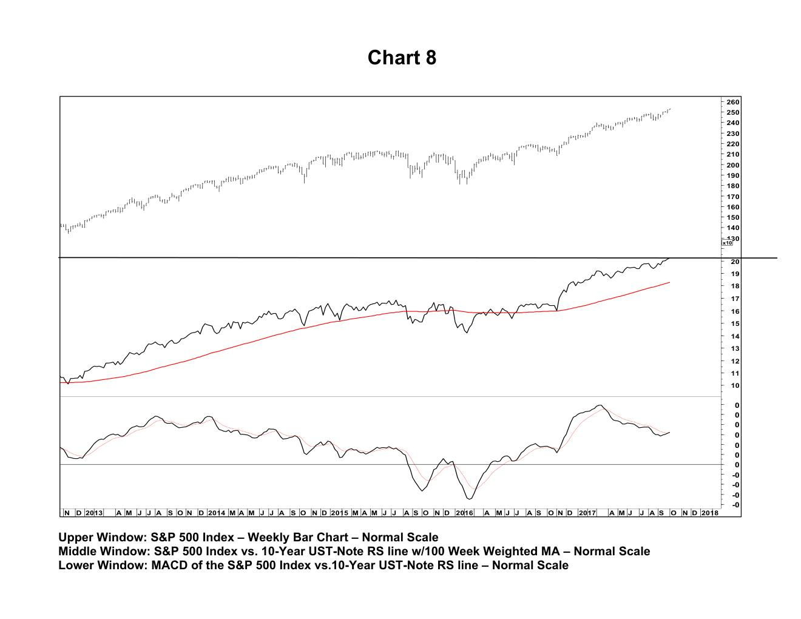
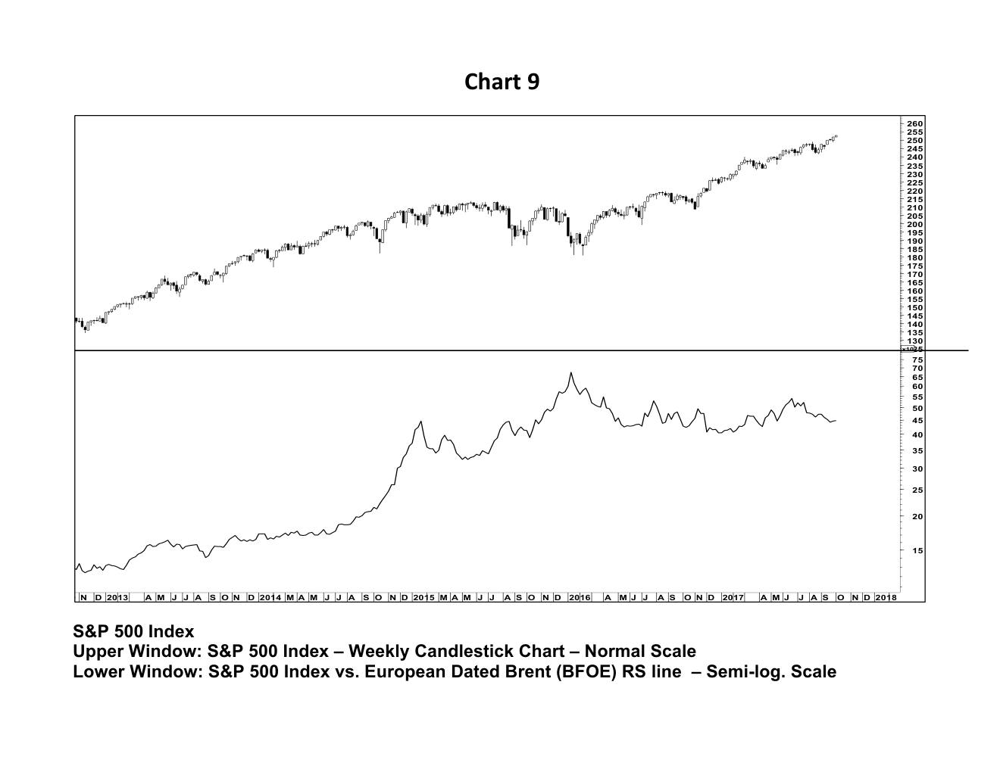
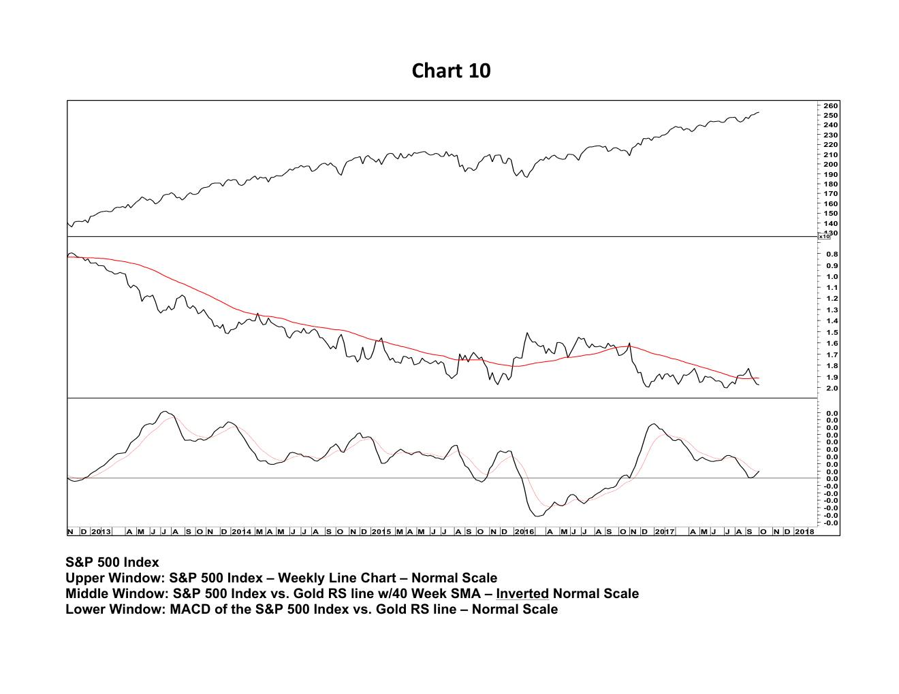
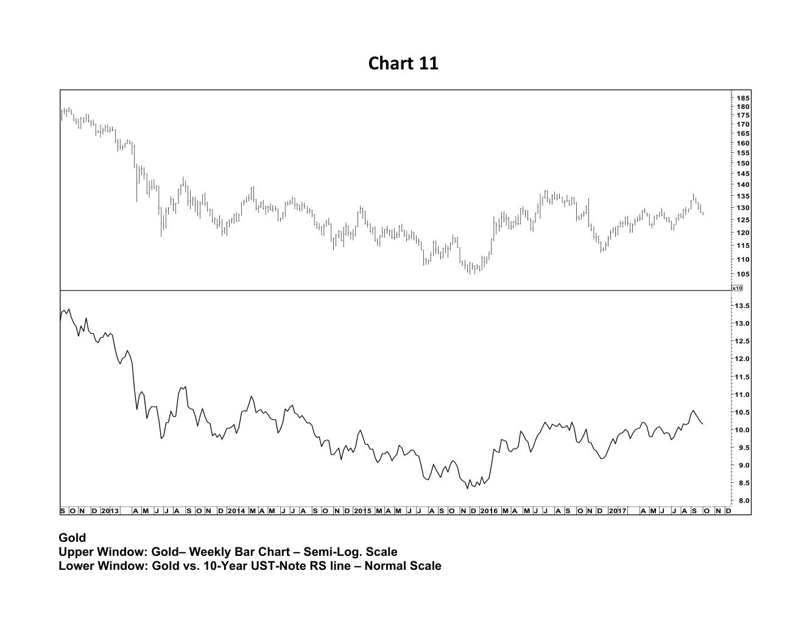
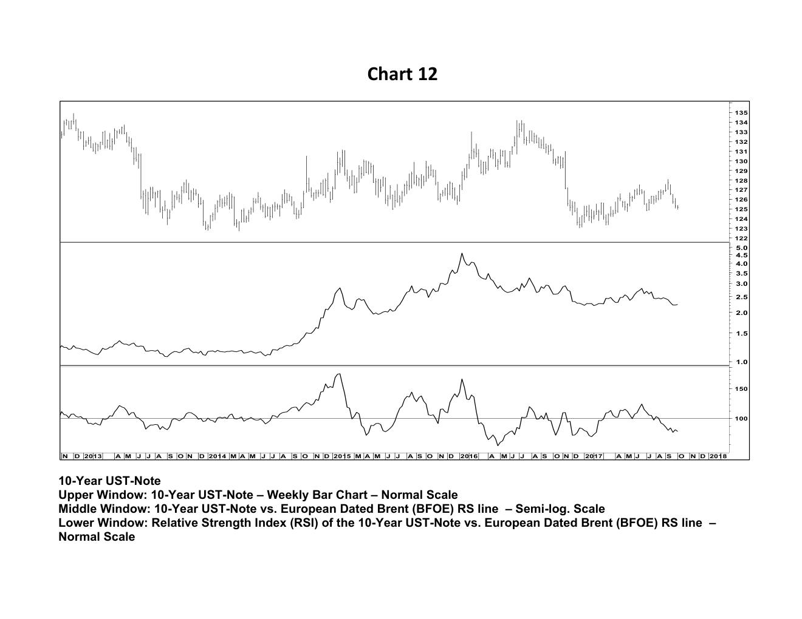
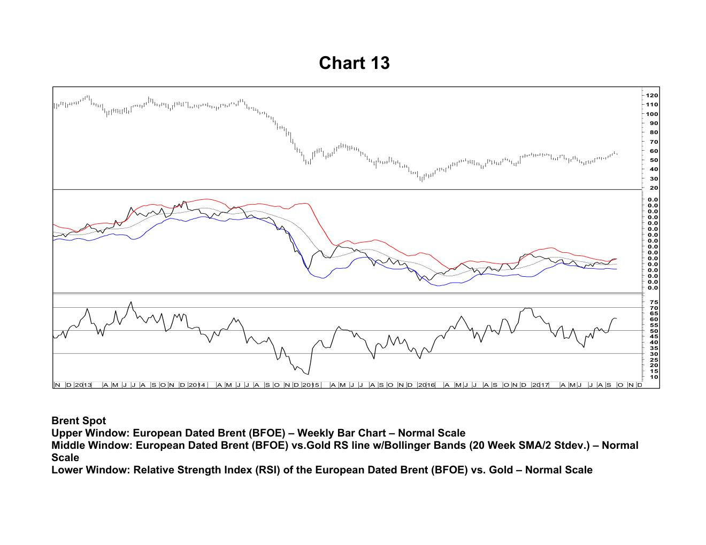
الإجابة:
ما تكتبه في النهاية (الخلاصة المباشرة): الترتيب من الأفضل أداءً إلى الأسوأ Brent ثم S&P 500 ثم Gold ثم T-Note، فنزيد وزن Brent (15% ← 40%) ونزيد S&P قليلًا (20% ← 23%) ونخفض الذهب قليلًا (25% ← 22%) ونخفض الـ T-Note بقوة (40% ← 15%). المجموع 100% ولا يوجد صفر.
الشرح — أولًا: الطريقة العامة (تصلح لأي ورقة):
- اقرأ التعليق تحت كل رسم قبل أي شيء: الإطار الزمني (أسبوعي هنا)، ونوع المقياس (عادي / نصف لوغاريتمي / مقلوب Inverted)، والزوج (من البسط ومن المقام)، وما المؤشر في النافذة السفلى. في 2017 الفخ الوحيد هو الرسم 10 (Inverted).
- نظرة سريعة على الرسوم الستة كلها واكتب بالقلم على هامش كل رسم: Out أو Under أو Same. هذه الهوامش هي التي تجمعها في النهاية.
- امشِ رسمًا رسمًا بترتيب الطباعة: في كل رسم: السعر في النافذة العليا ← خط RS ← كل مؤشر على حدة (لكل مؤشر درجة).
- حلّل سعر كل سوق مرة واحدة فقط: S&P يظهر في الرسوم 8 و9 و10، فحلّل سعره في الرسم 8 فقط، والذهب في الرسم 11، والـ T-Note في الرسم 12، وBrent في الرسم 13. تحليل السعر = الاتجاه السابق + الاتجاه الحالي + المستوى الذي يغيّر رأيك. ولا تكتب «كما ذكرنا في الرسم 8».
- صِف شكل خط RS ثم احكم: «يصنع قيعانًا أعلى وقممًا أعلى / كسر مقاومة / فوق متوسطه ... ⇒ البسط Outperforming». الحكم بلا وصف = نصف درجة الجزئية.
- سطر ملخص لكل رسم ← ترتيب تنازلي للأسواق الأربعة ← أوزان جديدة مجموعها 100% وبلا صفر، ومتسقة مع الأحكام الستة.
ثانيًا: الحل رسمًا رسمًا (ورقة 2017):
الرسم 8 — S&P 500 أمام 10-Year UST-Note (النافذة العليا: S&P أسبوعي بمقياس عادي؛ الوسطى: خط RS مع WMA 100 أسبوع؛ السفلى: MACD لخط RS).
- سعر S&P (مرة واحدة هنا): كان في اتجاه صاعد، ثم دخل نطاقًا عرضيًا عالي التذبذب (Rectangle) خلال 2015–2016 بين نحو 1,810 و2,130، ثم اخترق حده العلوي فعاد الاتجاه الصاعد القوي، وهو عند قمم تاريخية (≈ 2,529). يبقى إيجابيًا ما دام فوق منطقة الدعم الرئيسية 2,400.
- خط RS: يتحرك صاعدًا بقيعان أعلى وقمم أعلى، واخترق في نهاية 2016 إلى قمم جديدة (≈ 20)، وهو فوق متوسطه المرجّح ذي المئة أسبوع الصاعد ⇒ S&P يتفوق على T-Note.
- MACD (على خط RS): ينخفض، وهذا ضعف لا يتأكد إلا بكسر آخر قاع على خط RS (النقطة B)؛ أو يُقرأ بأنه على وشك تقاطع صاعد مع خط إشارته يؤكد استمرار التفوق. (ملف «أفضل الإجابات»: MACD موجب ويتجه لأعلى.)
- الحكم: SPX outperforming T-Note.
الرسم 9 — S&P 500 أمام Brent (خط RS بمقياس نصف لوغاريتمي، بلا مؤشر إضافي).
- لا تحليل سعري هنا (سعر S&P انتهى في الرسم 8).
- خط RS: بلغ قمته في 2016 (≈ 68)، ومنذ ذلك الحين يتحرك عرضيًا بين نحو 41 و55، وفي الجزء الأخير (من يونيو 2017) هبط من نحو 54 إلى 45.
- الحكم: S&P مساوٍ لـ Brent أو أضعف منه (Same to underperforming). القراءات المقبولة: same، same to under، under. أما outperforming فخطأ.
الرسم 10 — S&P 500 أمام الذهب (المقياس مقلوب) (خط RS مع SMA 40 أسبوعًا على مقياس Inverted؛ السفلى MACD لخط RS).
- الفخ: المحور مرقّم من 0.8 في الأعلى إلى 2.0 في الأسفل؛ فالخط الذي يبدو نازلًا من أعلى اليسار إلى أسفل اليمين هو في الحقيقة صاعد (ارتفع من 0.8 إلى 2.0) ويبقى قرب قممه.
- MACD: فوق الصفر، ينخفض داخل المرحلة العرضية الأخيرة (طبيعي أن يهبط الزخم في الـ sideways) ويقترب من خط الإشارة؛ عبوره لأعلى يؤكد الاستمرار.
- الحكم: S&P يتفوق على الذهب (أو أداء متساوٍ في الجزء الأخير). من قرأ الخط هابطًا قلب الإجابة كلها.
الرسم 11 — الذهب أمام 10-Year UST-Note (الذهب أسبوعي بمقياس نصف لوغاريتمي؛ خط RS بمقياس عادي).
- سعر الذهب (مرة واحدة هنا): اتجاه سابق هابط حتى قاع ديسمبر 2015 (≈ 1,050)، ثم تعافٍ عرضي داخل نطاق 1,120–1,370 بقيعان أعلى وقمم متساوية تقريبًا («kind of ascending triangle» يتأكد باختراق الحد العلوي)، ويتراجع الآن من ≈ 1,350. اذكر الدعم والمقاومة المهمين.
- خط RS: قاعدة منذ نهاية 2015 (≈ 8.4)، ثم قيعان أعلى (9.2 ثم 9.7)، ثم كسر القمة السابقة إلى ≈ 10.2 ⇒ اتجاه صاعد «by the book».
- الحكم: الذهب يتفوق على T-Note. (قول «same» هنا خطأ، لأن الخط صنع قاعًا أعلى وقمة جديدة.)
الرسم 12 — 10-Year UST-Note أمام Brent (الـ T-Note أسبوعي؛ خط RS نصف لوغاريتمي؛ مذبذب على خط RS).
- سعر الـ T-Note (مرة واحدة هنا): اتجاه هابط منذ قمة يوليو 2016 (≈ 134)، ثم نطاق عرضي كبير يتماسك قرب 123–128؛ وصل إلى حده السفلي وبدأ يصنع قيعانًا أعلى، فيمكن أن يعود نحو القمة السابقة ما دام فوق ذلك الدعم.
- خط RS: هبط من نحو 4.6 (2016) إلى 2.25 بقمم أدنى، وفي الفترة الأخيرة عرضي/مسطّح.
- المذبذب: التعليق يقول RSI، والأستاذ قرأه CCI لأن المقياس يتجاوز 100؛ صِف ما تراه فعلًا: بقاؤه بين حدّيه يؤكد العرضية، ونزوله تحت +100 (أو تحت خط المنتصف إن كان RSI) علامة ضعف.
- الحكم: T-Note مساوٍ لـ Brent أو أضعف منه (same to underperforming).
الرسم 13 — Brent أمام الذهب (Brent أسبوعي؛ خط RS مع Bollinger Bands 20 أسبوعًا وانحرافين؛ RSI لخط RS).
- سعر Brent (مرة واحدة هنا): اتجاه هابط حتى قاع 2016 قرب 28، ثم اتجاه صاعد بنائي بقيعان أعلى إلى ≈ 58، ويخترق نطاق 2017؛ أمامه مقاومة مهمة كسرها يؤكد التحول، وإيجابي ما دام فوق الدعم.
- خط RS: يصعد من قاعدته بقيعان أعلى، ومعه انضغاط (Squeeze) في Bollinger وضغط على الحد العلوي؛ إن دخل المنطقة بين الحد العلوي والأوسط تأكد التفوق.
- RSI (على خط RS): لا ينزل إلى التشبع البيعي ويبقى في الجزء الأعلى من مداه (≈ 61) فيؤكد خط RS. ولا تدّعِ divergence سلبيًا: القمة الأدنى مقابل قمة أدنى ليست divergence.
- الحكم: Brent يتفوق على الذهب (same to outperforming).
ثالثًا: من الأحكام الستة إلى الترتيب:
| الرسم | الحكم (السطر الملخص) |
|---|---|
| 8 | SPX is outperforming 10Y US T-Note |
| 9 | SPX is underperforming or performing the same as Brent |
| 10 | SPX is outperforming Gold (inverted scale) |
| 11 | Gold is outperforming 10Y US T-Note |
| 12 | 10Y US T-Note is same to underperforming Brent |
| 13 | Brent is same to outperforming Gold |
عدّ الانتصارات لكل سوق: Brent يتفوق على S&P (9) وعلى T-Note (12) وعلى الذهب (13) = 3؛ S&P على T-Note (8) والذهب (10) = 2؛ الذهب على T-Note (11) = 1؛ T-Note = صفر. فالترتيب: Brent > SPX > Gold > T-Note.
رابعًا: الأوزان (الحساب): الترتيب يقلب المحفظة: البترول (أصغر مركز 15%) يصير الأكبر، والـ T-Note (أكبر مركز 40%) يصير الأصغر.
- نموذج المحاضر: Brent 40 + S&P 23 + Gold 22 + T-Note 15 = 100.
- الطريقة السريعة: بدّل الطرفين (40 للبترول و15 للـ T-Note)، والباقي 100 − 55 = 45 يُقسم على الوسط بالترتيب: S&P 25 وGold 20.
في الامتحان اكتب (جملة الختام): «Based on the previous relative performance analysis, we see that Brent is the best performer, then SPX, then Gold, then US T-Note. And thus, our portfolio will be rebalanced as follows: Brent 40%, S&P 500 23%, Gold 22%, US T-Note 15%.»
تنبيه:
- الأول والأخير (Brent والـ T-Note) يتفق عليهما الجميع؛ الوسط (S&P والذهب) موضع اختلاف مقبول، بشرط ألا ترتّب سوقًا فوق سوق حكمتَ بأنه أضعف منه.
- ملف «أفضل الإجابات» يرتّب Brent ≥ S&P > Gold > T-Note لكنه يوزّع S&P 35 · Brent 25 · Gold 20 · T-Note 20. كلاهما مقبول لأن IFTA لا تعتمد إجابة واحدة، ونموذج المحاضر أكثر اتساقًا (الأقوى يأخذ الأكبر).
س2 ★★★ أعطِ إعادة التوزيع النهائية لمحفظة 2017 واكتب جملة الختام. ولماذا تُكتب الأوزان بهذه الطريقة؟ الجلسات ص17 الجلسات ص18 إجابات CFTe II 2017 ص3
الإجابة:
| الأصل | قبل | نموذج المحاضر | بديل «تبديل الطرفين» | ملف «أفضل الإجابات» |
|---|---|---|---|---|
| Brent | 15% | 40% | 40% | 25% |
| S&P 500 | 20% | 23% | 25% | 35% |
| Gold | 25% | 22% | 20% | 20% |
| T-Note | 40% | 15% | 15% | 20% |
| المجموع | 100% | 100% | 100% | 100% |
الشرح:
- من أين جاء كل رقم؟ الترتيب Brent > SPX > Gold > T-Note (من الأحكام الستة في س1). الأوزان يجب أن تكون تنازلية بالترتيب نفسه: 40 > 23 > 22 > 15. والتحقق: 40 + 23 + 22 + 15 = 100.
- لماذا Brent 40 لا 100؟ لأن التوزيع على الأداء النسبي لا يعني ترك الأسواق الأخرى؛ حكمنا على Brent «same to outperforming» في رسمين، فلا مبرر لمركز واحد.
- لماذا لا صفر للـ T-Note؟ قاعدة المحاضر: «لا تكتب صفرًا أبدًا»؛ أعطِ الأسوأ 1% أو 5% على الأقل.
- لماذا تقلّ زيادة S&P؟ S&P يتفوق على اثنين، لكنه مساوٍ أو أضعف من Brent، ومع MACD الهابط على الرسم 8 يكون المبرر لزيادة وزن صغيرة لا كبيرة.
في الامتحان اكتب: «Based on the previous relative performance analysis, we see that Brent is the best performer, then SPX, then Gold, then US T-Note. And thus, our portfolio will be rebalanced as follows:» ثم الجدول (قبل/بعد) وتحته سطر سبب لكل أصل.
تنبيه: المجموع 100% دائمًا، ولا صفر، والترتيب في الأوزان يطابق ترتيب الأداء؛ أي تناقض بين الأوزان والأحكام يخسر درجة في الموضعين.
س3 ★★★ اكتب الصياغة النموذجية الكاملة للرسم 8 (S&P / T-Note): السعر، ثم خط RS، ثم المتوسط، ثم MACD. الجلسات ص7 الجلسات ص8
الإجابة:
- السعر: «S&P500 index is moving in a strong medium term uptrend since the breach of the upper boundary of the high volatility sideways of years 2015–2016, as long as S&P500 is above 2400 major support area.»
- خط RS: «By looking at Chart 8, the RS curve is moving in an uptrend, forming higher lows and higher highs, confirming that the S&P 500 is outperforming the 10-Year T-Note.»
- المتوسط: «This outperformance is confirmed by the RS curve moving above its 100-week weighted moving average.»
- MACD: «Although the MACD of the RS line is declining, this weakness will not be confirmed unless the RS curve breaks its support at point B.» أو: «The MACD is about to cross above its signal line, confirming the continuation of the outperformance.»
الشرح: البناء ثلاث طبقات بالترتيب: السعر (اتجاه سابق: اختراق نطاق 2015–2016؛ اتجاه حالي: صاعد قوي؛ مستوى يغيّر الرأي: 2,400) ← الأداء (وصف الشكل: قيعان أعلى وقمم أعلى، ثم الحكم) ← تعليق مستقل على كل مؤشر (المتوسط ثم MACD). كل طبقة لها درجة، وكل مؤشر له درجة.
تنبيه: شريحة الـ notes («S&P500 in a strong uptrend, no weakness · outperforming · MACD about to provide a bullish crossover») ليست إجابة نموذجية؛ هي رؤوس أقلام. الإجابة هي الجمل الكاملة أعلاه.
س4 ★★★ ما أكثر خطأ يكلّف درجات في سؤال المحفظة؟ وما قواعد التصحيح؟ الجلسات ص23 الجلسات ص24
الإجابة: كتابة «الـ RS Outperforming» وحدها بلا وصف لشكل الخط = خسارة نصف درجة تلك الجزئية.
الشرح:
- لماذا؟ كلمة outperforming خلاصة، والمصحِّح يصحّح القراءة التي أنتجتها: «أنا مش مطلوب مني أحل الامتحان معاك، أنا مطلوب مني أشوف انت شايف إيه. اعتبر إن المصحح ما يعرفش حاجة». وبعض الرسوم ملتبس (عرضي أو صاعد في آخره)، فلا بد أن يعرف المصحح أي جزء قرأت.
- ما يُقبل: القراءات المتجاورة على الرسم الحدّي (مثل الرسم 9): same / same to under / under — كلها مقبولة.
- ما يُرفض: القراءة المتضادة (وصف خط صاعد أو عرضي يصعد بأنه underperforming).
- لك أن تقيّد الخلاصة، لا أن تناقض الخط (مثلًا: «outperforming لكن MACD يضعف، فزيادة وزن محدودة»).
- لا تخترع divergence غير موجود (قمة أدنى مقابل قمة أدنى ليس divergence).
- الأوزان: مجموعها 100% ولا صفر (الأسوأ 1% أو 5%).
- علّق على كل مؤشر على حدة، فلكل مؤشر درجته.
في الامتحان اكتب: «The RS line is forming higher lows and higher highs and has broken above its previous high (point A), thus [X] is outperforming [Y].»
س5 ★★★ هبوط الـ MACD مع صعود خط الـ RS: هل يُسمى Divergence؟ وكيف يؤثر في الوزن؟ الجلسات ص24 الجلسات ص10
الإجابة: نعم، يُقبل تسميته divergence (سلبي)، وهو مبرر لزيادة وزن أقل لا أكبر، ما دامت الخلاصة أن البسط Outperformer.
الشرح:
- الـ divergence السلبي: الخط (هنا خط RS) يصنع قمة أعلى، والمؤشر المحسوب عليه (MACD) يصنع قمة أدنى ⇒ الزخم لا يواكب الحركة، فـ«وارد أن يكون في ضعف في الـ RS في المستقبل».
- لذلك لا تعطي السوق «أكبر ويت قوي»، بل زيادة معتدلة. وهذا justification، والمبررات هي التي تأخذ الدرجات.
- لكنه لا يحوّل الحكم إلى underperforming؛ الخط ما زال صاعدًا.
- متى لا يكون divergence؟ إذا صنع الخط قمة أدنى وصنع المؤشر قمة أدنى أيضًا (الرسم 13 في 2017): الاثنان متفقان، وادعاء divergence هنا خطأ.
في الامتحان اكتب: «The MACD is declining while the RS line is still rising, a negative divergence that suggests the outperformance may slow; therefore we overweight S&P only moderately.»
س6 ★★★ ما الفخ الوحيد في رسوم 2017؟ وما الشيء الذي تتحقق منه قبل قراءة نافذة الـ RS؟ الجلسات ص12 الكتيّب ص105
الإجابة: الرسم 10 (S&P / Gold) مرسوم على مقياس مقلوب (Inverted): الأرقام تكبر إلى أسفل (0.8 أعلى و2.0 أسفل)، فالخط الذي يبدو هابطًا صاعد فعلًا ⇒ S&P يتفوق على الذهب. تحقق دائمًا من المقياس والتعليق قبل القراءة.
الشرح:
- طريقة القراءة: اقرأ الخط كما تراه ثم اعكسه. أو اقرأ الأرقام: من 0.8 إلى 2.0 = ارتفاع.
- ما الذي يقلبه الخطأ؟ لو قرأته هابطًا لحكمت بأن الذهب أقوى من S&P، فيتغير ترتيب الوسط كله (Gold فوق SPX)، وتتناقض مع الرسمين 8 و11.
- أشياء أخرى تتحقق منها في التعليق: هل المقياس نصف لوغاريتمي؟ ما الزوج (من البسط؟)؛ هل المؤشر RSI أم CCI (الرسم 12)؛ وفي 2024: هل الرسم على العائد لا السعر؟
في الامتحان اكتب: «Note that the RS window in Chart 10 is plotted on an inverted scale; the apparently declining line is actually rising, therefore S&P 500 is outperforming Gold.»
س7 ★★ (CFTe II أبريل 2024، السؤال 1-ب) يملك أحد المستثمرين النسب التالية: S&P 500 50%، العوائد (Yields) 50%، الذهب 0%، النفط 0%. بناءً على الرسوم 8 إلى 13 والمؤشرات الملحقة بها، ما توصياتك؟ يجب أن تتضمن: تحليلًا مختصرًا لهذه الأسواق (S&P والذهب والنفط والعوائد)، وتوضيح الأسواق التي يجب زيادة نسبتها والتي يجب تقليلها مع أسباب إعادة التخصيص، وإعادة موازنة النسب بناءً على أدائها. إجابات CFTe II 2024 ص3
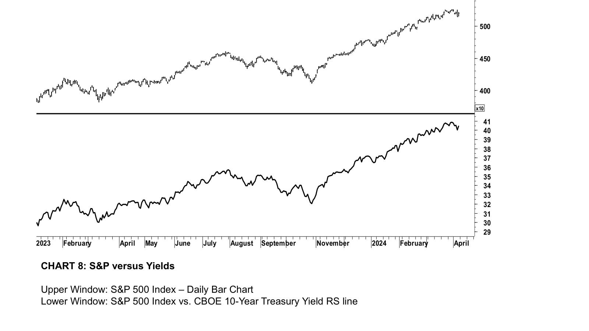
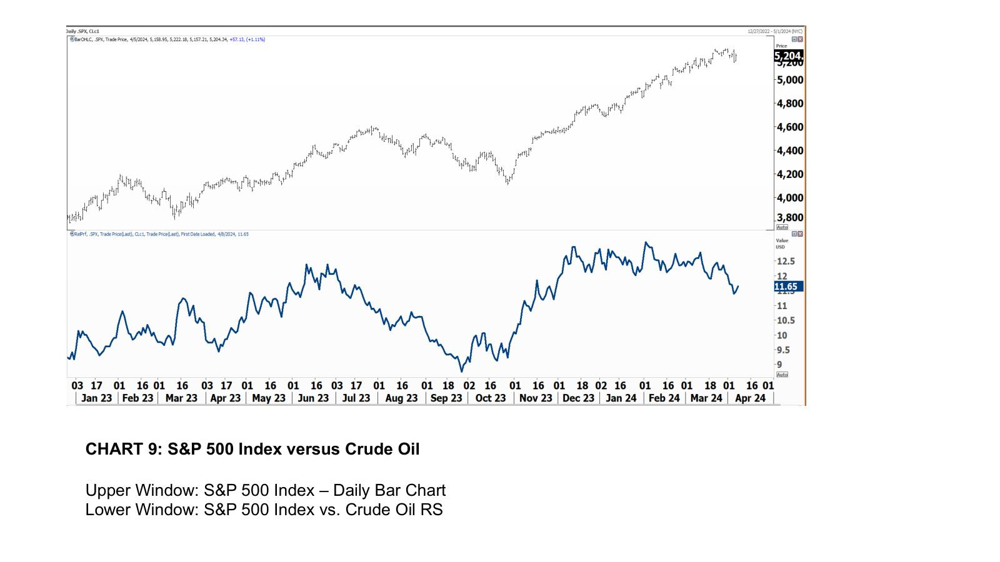
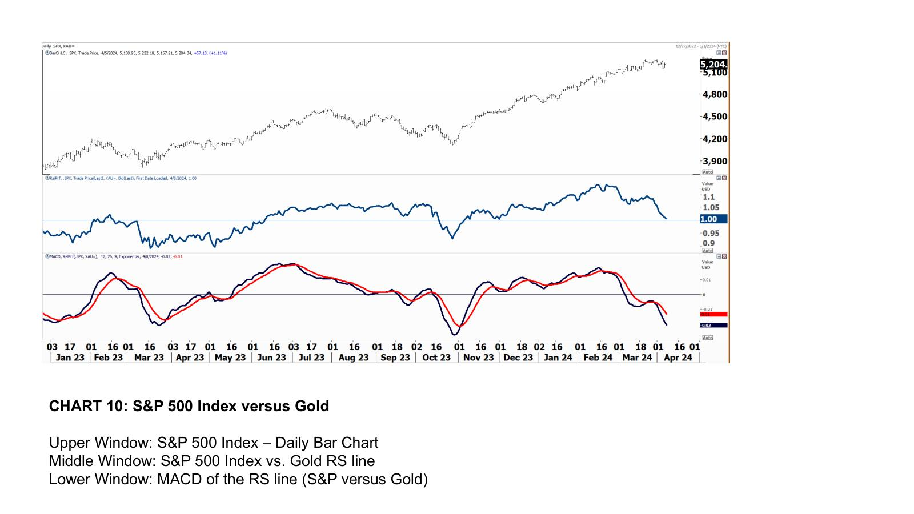
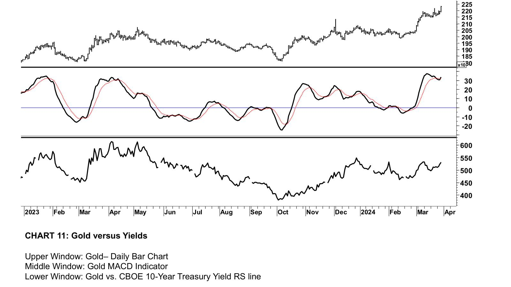
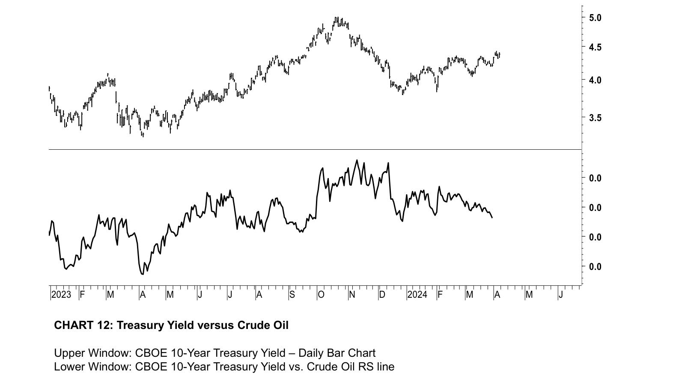
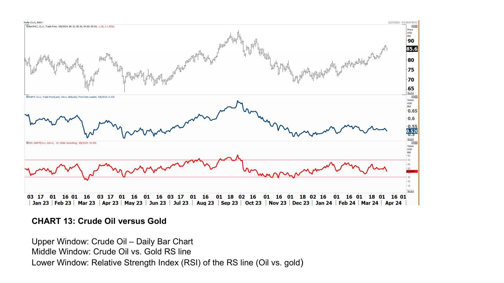
الإجابة:
ما تكتبه في النهاية: الترتيب Gold ≈ Oil > S&P 500 > T-Note، والأوزان الجديدة: S&P 35%، Gold 35%، Oil 20%، T-Note 10%.
الشرح — قبل البدء (فخّان):
- الرسوم 8 و11 و12 مرسومة على عائد السندات لعشر سنوات لا سعر الـ T-Note. ارتفاع العائد = هبوط سعر السند. فخط «S&P ÷ العائد» الصاعد لا يعني مباشرة «S&P أقوى من السند» إلا بعد هذه الترجمة: العائد يرتفع ⇒ السند يخسر.
- النسخة الإنجليزية من السؤال ذكرت S&P 50 · T-Note 50 · Gold 30 · Oil 0 (مجموعها 130%)؛ والعربية 50/50/0/0. أجب على 50/50/0/0 واذكر ذلك في سطر واحد.
الرسم 8 — S&P أمام العائد: سعر S&P (مرة واحدة): اتجاه صاعد قوي عند قمم تاريخية (≈ 5,204)، مع divergences قصيرة الأجل (من الجزء أ). خط RS: اتجاه صاعد منتظم من نحو 30 إلى 41 بقمم جديدة في مارس. الحكم: الأسهم أقوى؛ السندات تخسر مع ارتفاع العائد ⇒ S&P outperforming T-Note.
الرسم 9 — S&P أمام النفط: خط RS صعد إلى 12.8 (ديسمبر–فبراير)، ثم صنع قممًا أدنى والآن 11.65 ⇒ النفط أقوى من S&P منذ فبراير.
الرسم 10 — S&P أمام الذهب: خط RS هبط من 1.08 إلى 1.00، والـ MACD على خط RS تحت الصفر وتحت خط الإشارة ⇒ الذهب أقوى من S&P منذ منتصف فبراير.
الرسم 11 — الذهب أمام العائد: سعر الذهب (مرة واحدة): اختراق من نطاق عرضي استمر عامين إلى قمم تاريخية (~2,250)، والـ MACD موجب — أقوى اتجاه في المجموعة. خط RS: صعد من 390 إلى 530 ⇒ الذهب أقوى من الـ T-Note.
الرسم 12 — العائد أمام النفط: العائد (مرة واحدة): يرتفع مجددًا من 3.8% إلى 4.4% ⇒ سعر الـ T-Note في اتجاه هابط. خط RS: هابط منذ ديسمبر رغم صعود العائد ⇒ النفط أقوى من العائد، وبالتالي من الـ T-Note.
الرسم 13 — النفط أمام الذهب: سعر النفط (مرة واحدة): صعود من 68 إلى 86 منذ ديسمبر بقيعان أعلى. خط RS: أفقي بين 0.50 و0.56 منذ نوفمبر، والـ RSI على خط RS عند 40 ⇒ النفط والذهب متساويان تقريبًا.
الترتيب بعدّ الانتصارات: الذهب يغلب S&P (10) والعائد (11) = 2؛ النفط يغلب S&P (9) والعائد (12) = 2؛ والرسم 13 تعادل (نصف لكل منهما) ⇒ 2.5 لكل منهما. S&P يغلب العائد (8) = 1. الـ T-Note = 0.
الأوزان: S&P 50 ← 35 (الاتجاه سليم ويتفوق على السندات، لكنه أضعف من السلعتين منذ فبراير)؛ Gold 0 ← 35 (اختراق لقمم تاريخية ويغلب اثنين)؛ Oil 0 ← 20 (يغلب اثنين ومساوٍ للذهب)؛ T-Note 50 ← 10 (الأضعف، وارتفاع العائد يضغط على السعر). المجموع 35 + 35 + 20 + 10 = 100.
في الامتحان اكتب: «Note: the charts use the 10-Year Treasury yield; a rising yield means falling T-Note prices. Based on the relative performance analysis, Gold and Oil are the best performers, then S&P 500, then the T-Note. The portfolio will be rebalanced as follows: S&P 500 35%, Gold 35%, Oil 20%, T-Note 10%.»
تنبيه: (إجابة مقترحة) لو أعطيت النفط وزنًا مساويًا للذهب (مثلًا 30/30) فهذا متسق أيضًا مع حكم التعادل في الرسم 13؛ المهم ألا يقل وزن أي منهما عن S&P إلا بمبرر مكتوب (مثل: S&P ما زال في اتجاه صاعد قوي، فلا نخفضه كثيرًا).
س8 ★★ (CFTe II 2024، السؤال 2-1، 5 نقاط) سام محلل يعمل لدى شركة إدارة أصول طلبت منه عميلة تحليل أسهمها الخمسة: Apple 25%، Boeing 25%، Nike 20%، Walt Disney 15%، Caterpillar 15%. بناءً على أداء سوق الأسهم الأمريكي، هل تُبقي العميلة كل استثماراتها في الأسهم؟ وكيف يعيد سام توزيع أوزان الأسهم بناءً على الرسوم الأسبوعية (EMA 20 أسبوعًا وMACD)؟ إجابات CFTe II 2024 ص4
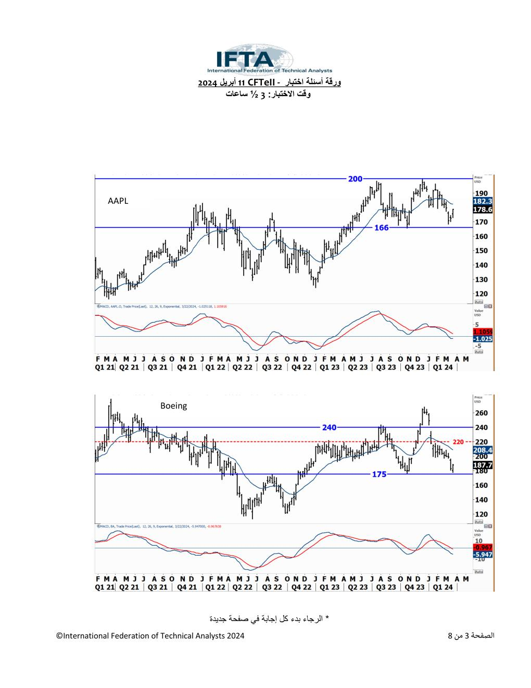
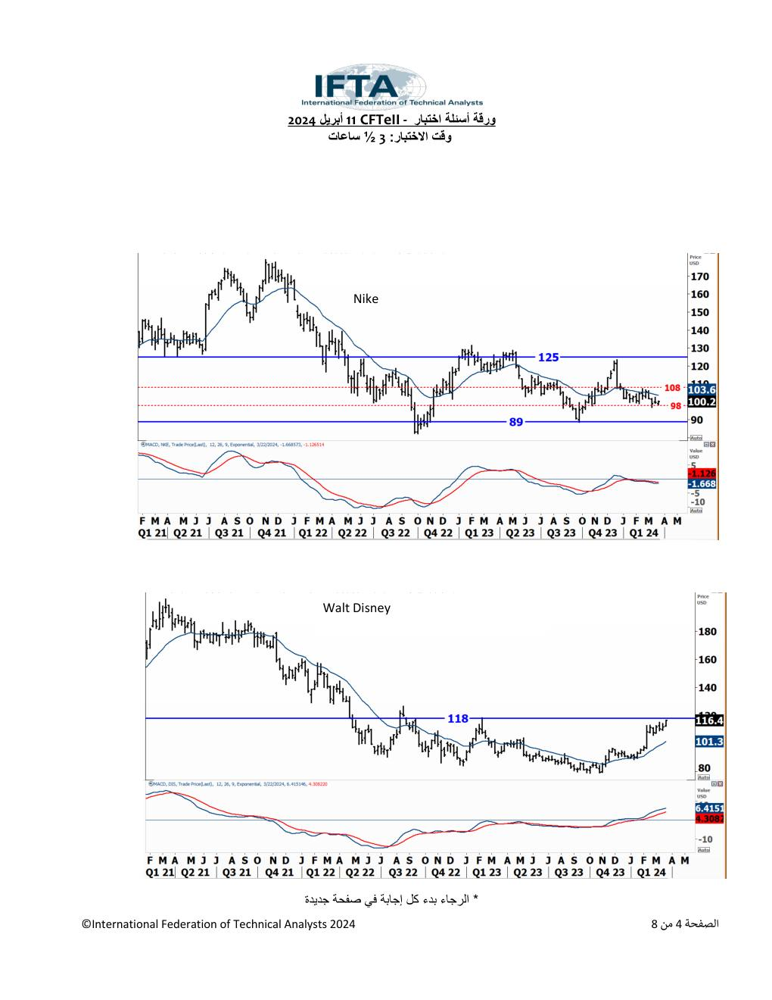
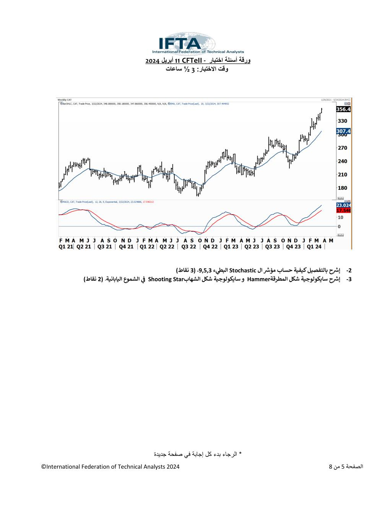
الإجابة:
الجزء الأول (نسبة الأسهم): لا تبقى 100% أسهم. الرسمان 9 و10 من السؤال 1-ب يُظهران أن S&P أضعف من النفط والذهب منذ فبراير (وإن ظل أقوى من السندات) ⇒ خفّض الأسهم إلى نحو 70–80% وانقل الباقي إلى الذهب (وجزءًا إلى النفط) لأنهما قائدا القوة النسبية.
الجزء الثاني (داخل الأسهم):
| السهم | الصورة الأسبوعية | القرار | قبل | بعد |
|---|---|---|---|---|
| Caterpillar | اتجاه صاعد قوي، قمة تاريخية 356، أعلى بكثير من EMA صاعد (307)؛ MACD 23 فوق 17.5 وصاعد | زيادة — القائد | 15% | 30% |
| Walt Disney | قاعدة لعامين بين 80 و118؛ السعر 116 يضغط على مقاومة 118؛ EMA صاعد؛ MACD 6.4 فوق 4.3 وفوق الصفر | زيادة — مرشح للاختراق؛ أضف فوق 118 | 15% | 25% |
| Apple | نطاق 166–200 مع double top عند 200 (يوليو وديسمبر 2023)؛ تحت EMA (182)؛ MACD سالب وتحت الإشارة | تخفيض؛ بيع بإغلاق أسبوعي تحت 166 | 25% | 20% |
| Nike | اتجاه هابط داخل 89–125؛ تحت EMA؛ مقاومة 108، دعم 98 ثم 89؛ MACD سالب | تخفيض | 20% | 15% |
| Boeing | اختراق كاذب فوق 240 إلى 265 ثم انهيار تحت 220 إلى 188؛ MACD −5.9 تحت −1.0 | تخفيض قوي؛ دعم 175 | 25% | 10% |
| المجموع | 100% | 100% |
الشرح: المنطق هو الفئات الخمس نفسها (س16) مطبقة على صورة كل سهم: الصاعد بقوة (CAT) يأخذ أكبر زيادة، والقاعدة التي توشك على الاختراق (DIS) زيادة أقل، والعرضي الضعيف (AAPL) تخفيض بسيط، والهابط (NKE) تخفيض، والمنهار (BA) أقل وزن — بلا صفر. التحقق: 30 + 25 + 20 + 15 + 10 = 100.
في الامتحان اكتب: «Since S&P 500 has been underperforming Gold and Oil since February (Charts 9 and 10), the client should reduce equities to about 70–80% and move the rest to Gold and Oil. Within equities: Caterpillar 30%, Walt Disney 25%, Apple 20%, Nike 15%, Boeing 10%.»
المفهوم والحساب
س9 ★★★ الـ Normalized RP لسهم يقرأ 1.5: ما معناه؟ وهل يمكن أن يكون السهم الآن Underperformer؟ الكتيّب ص46 خط اليد ص1
الإجابة: معناه أن السهم تفوّق على المؤشر بنسبة 50% منذ تاريخ الأساس. ونعم، يمكن أن يكون الآن Underperformer، لأن اتجاه الخط الحالي قراءة مستقلة عن مستواه.
الشرح:
- الـ Normalized يبدأ من 1.000 في تاريخ الأساس، فنقرأ الرقم بطرح 1: 1.50 − 1 = 0.50 = +50%؛ و0.94 − 1 = −0.06 = تأخر 6%؛ و1.05 = +5%.
- الرقم يصف ما حدث منذ الأساس (تراكمي)، أما الآن فيُقرأ من اتجاه الخط: إذا كان الخط عند 1.5 لكنه يهبط من 1.8 مثلًا، فالسهم ما زال متقدمًا تراكميًا لكنه يتأخر حاليًا ⇒ Underperformer.
- وتغيير تاريخ الأساس يغيّر الرقم لا الشكل: الخط نفسه قد يقرأ 1.50 من أساس و0.91 من أساس آخر.
في الامتحان اكتب: «A normalized RP of 1.5 means the stock has outperformed the index by 50% since the base date. Yes, it can currently be an underperformer, because the current direction of the RP line is independent of its level; if the line is now declining, the stock is underperforming.»
تنبيه: في التسجيل قيل مرة إن 1.5 تعني 5%، والصحيح المعتمد في كل المواضع الأخرى 50%.
س10 ★★★ (CFTe I 2014، س57) إذا كان منحنى الأداء النسبي (Relative Strength) بين أداتين صاعدًا، فهذا يعني:
- أ. سعر البسط يصعد وسعر المقام يهبط أو يتحرك عرضيًا
- ب. سعر البسط يصعد وسعر المقام يهبط
- ج. البسط يتفوق في الأداء على المقام
- د. الأداتان في اتجاه صاعد وتقتربان من منطقة التشبع الشرائي إجابات CFTe I ص7
الإجابة: (ج) البسط يتفوق في الأداء على المقام.
الشرح:
- خط RS = البسط ÷ المقام. صعوده يعني فقط أن نسبة البسط إلى المقام تكبر، أي أن البسط «أحسن» من المقام، أيًا كان اتجاه كل منهما.
- (أ) خطأ: هذه حالتان فقط من خمس حالات يصعد فيها الخط؛ فقد يصعد الخط والاثنان هابطان.
- (ب) خطأ: حالة واحدة فقط من الحالات الخمس.
- (د) خطأ: الخط لا يقول شيئًا عن اتجاه الأداتين، ولا عن التشبع (هذه لغة المذبذبات).
في الامتحان اختر: ج.
س11 ★★★ خط RS للذهب أمام البترول صاعد: هل الذهب في Uptrend؟ اذكر الحالات الخمس التي يصعد فيها الخط. خط اليد ص2 الجلسات ص20
الإجابة: ليس بالضرورة؛ عبارة «الخط صاعد لأن الذهب في Uptrend» خطأ. خط RS يقيس الأداء النسبي لا اتجاه السعر. الحالات الخمس: (1) بسط صاعد ومقام هابط؛ (2) بسط صاعد ومقام ثابت؛ (3) الاثنان صاعدان والبسط أسرع؛ (4) بسط ثابت ومقام هابط؛ (5) الاثنان هابطان والمقام يهبط أكثر.
الشرح:
- مثال رقمي للحالة 5: الذهب من 100 إلى 95 (−5%)، والبترول من 100 إلى 80 (−20%). RS في البداية 100/100 = 1.00، وفي النهاية 95/80 = 1.19 ⇒ الخط صعد 19% والذهب نفسه هابط.
- الحالتان 4 و5 دفاعيتان: السهم لا يكسب، لكنه يخسر أقل من السوق — وهذا ما يحدث للأسهم الدفاعية في السوق الهابط.
- لهذا يطلب السؤال تحليل السعر منفصلًا (من النافذة العليا) ثم الأداء (من خط RS): «ممكن الذهب يبقى sideways والـ RS curve بتاعه في اب تراند».
في الامتحان اكتب: «A rising Gold/Oil RS line only means Gold is outperforming Oil; Gold itself may be rising, flat, or even falling less than Oil.»
س12 ★★ اكتب الحسبة بالطريقتين (Simple وNormalized) بمثال. وهل يختلف شكل المنحنى الـ Normalized عن العادي؟ خط اليد ص1 الكتيّب ص46
الإجابة: Simple: RS = Entity 1 / Entity 2 (أرقامه بلا معنى في ذاتها، والمهم الاتجاه). Normalized = (E1 today / E1 base) / (E2 today / E2 base) يبدأ من 1.000 ويُقرأ نسبة مئوية منذ تاريخ الأساس. الشكلان متطابقان، والفرق في أرقام المقياس فقط.
الشرح (أرقام جدول المحاضرة: سهم مقابل مؤشر):
| السهم | المؤشر | Simple | Normalized (الحساب) |
|---|---|---|---|
| 231 | 10,550 | 231 ÷ 10,550 = 0.0219 | (231/231) ÷ (10550/10550) = 1 ÷ 1 = 1.000 |
| 230 | 10,686 | 0.0215 | (230/231 = 0.9957) ÷ (10686/10550 = 1.0129) = 0.983 |
| 243 | 10,977 | 0.0221 | (1.0519) ÷ (1.0405) = 1.011 |
| 186 | 10,241 | 0.0182 | (0.8052) ÷ (0.9707) = 0.829 |
- القراءة: 0.983 = المؤشر كان أفضل بنحو 1.7%؛ 1.011 = السهم متقدم 1.1%؛ 0.829 = السهم متأخر نحو 17% منذ الأساس.
- مثال CIB / CIEB: الأساس 70 و20. اليوم 72 و20.5:
72/70 = 1.03و20.5/20 = 1.02⇒1.03/1.02 ≈ 1.01⇒ تفوق نحو 1% (لا 0.05% كما في خط اليد).
لماذا الشكل واحد؟ لأن Normalized = Simple × (E2 base / E1 base)، أي الخط نفسه مضروبًا في ثابت؛ والضرب في ثابت يغيّر الأرقام على المحور فقط.
في الامتحان اكتب: «Simple RS = Price A / Price B; Normalized RP = (A/A base) / (B/B base), starting at 1.000. Both lines have the same shape; only the scale differs.»
س13 ★★ عن أي سؤال يجيب الـ RS؟ ومتى يكون أنفع؟ وهل هو الـ RSI؟ خط اليد ص1
الإجابة: يجيب عن What to buy (ماذا أشتري؟)، والتحليل الفني المعتاد يجيب عن When to buy (متى أشتري؟). أنفع ما يكون حين يكون أمامك مرشحان كلاهما صاعد ويعطيان إشارة شراء، فيختار الـ RS الأقوى. وليس RSI.
الشرح:
- RSI (Wilder) مذبذب زخم لأداة واحدة، محصور بين 0 و100، يقارن متوسط مكاسبها بمتوسط خسائرها.
- RS مقارنة بين أداتين (قسمة سعر على سعر)، بلا حدود، ويُقرأ باتجاهه.
- تشابه الاسم فخ متكرر: «Relative Strength Index» ليس «Relative Strength».
في الامتحان اكتب: «RS answers "what to buy" by comparing two instruments; RSI is a bounded momentum oscillator of a single instrument.»
س14 ★★ X/Y صاعدة بينما يهبط X وY معًا: ماذا تستنتج؟ الكتيّب ص105
الإجابة: X يتفوق على Y لأن Y يهبط أسرع منه؛ التفوق عبارة نسبية لا اتجاهية، ولا تعني أن X رابح.
الشرح: مثال: X من 50 إلى 45 (−10%)، وY من 20 إلى 16 (−20%). X/Y في البداية 2.50 وفي النهاية 2.81 ⇒ صاعدة. هذه الحالة 5 من الحالات الخمس (دفاعية). في السوق الهابط هذا مفيد: إن اضطررت للبقاء في الأسهم فابقَ في X.
في الامتحان اكتب: «X is outperforming Y because Y is falling faster; relative strength is relative, not directional.»
س15 ★ ماذا تضع على خط الـ RS؟ وكل كم تراجعه؟ خط اليد ص3 المحاضرات ص37
الإجابة: كل ما يوضع على السعر (متوسط أو اثنان، MACD، Bollinger، Ichimoku)، والغرض تحديد اتجاه الخط: متوسط 20 فوق 50 = Outperformer، وتحته = Underperformer. يُراجع أسبوعيًا على الأقل، ويُتصرف على الانعكاس المؤكد لا على يوم واحد.
الشرح:
- متوسط واحد: فوقه الأداء سليم، وتحته غير سليم، والالتفاف حوله أداء متساوٍ.
- الانعكاس المؤكد: قاع أعلى ← قمة أعلى ← عبور المتوسط القصير فوق الطويل ← كسر المقاومة؛ عندها فقط تنقل الوزن.
في الامتحان اكتب: «Any tool used on price can be applied to the RS line to define its trend; review it at least weekly and act only on a confirmed reversal.»
إدارة المحفظة
س16 ★★★ اذكر الفئات الخمس لخط RP أمام المؤشر وإجراء كل منها (سهم وزنه في المؤشر 6%). الكتيّب ص47 خط اليد ص3
الإجابة:
| الفئة | خط RP أمام المؤشر | الإجراء |
|---|---|---|
| 1 | صاعد بالفعل | Overweight (6% ← 7–8%) |
| 2 | ينعكس من هابط إلى صاعد | Overweight أقل من الأولى |
| 3 | عرضي | الوزن نفسه 6% |
| 4 | ينعكس من صاعد إلى هابط | Underweight تدريجيًا (6% ← 4%) |
| 5 | هابط | Underweight أو Avoid |
الشرح:
- لماذا؟ مدير المحفظة يريد التفوق على المؤشر، وإلا لكفاه صندوق سلبي (ETF). فيزيد وزن المتفوقين ويخفض المتأخرين نسبةً إلى وزن كل سهم في المؤشر.
- الفئة 3 تبقى 6% بالضبط: تقليلها يجرّ المحفظة تحت المؤشر بلا مبرر.
- الحساب: المخصوم من الفئتين 4 و5 يذهب إلى 1 و2: سهم الفئة 4 من 6% إلى 4% يحرر 2%، فيذهب إلى سهم الفئة 1 فيصير 8%. المجموع يبقى 100%.
- سهمان في الفئة 1؟ ارسم Cross RS بينهما (أحدهما ÷ الآخر)؛ إن تساويا اقسم الوزن، أو أضف معيارًا (MACD صاعد، السعر فوق متوسط 50).
- مثال حي: CIB أمام EGX 30 صنع Double top على خط RS ⇒ الفئة 4 ⇒ يبدأ تخفيض وزنه.
في الامتحان اكتب: «Rising RP: overweight; turning up: overweight (less); flat: keep index weight; turning down: gradually underweight; falling: underweight or avoid. Weight taken from classes 4–5 goes to classes 1–2.»
تنبيه: خط اليد والمحاضرات يصفان الفئة 2 «عرضي مائل للصعود» والفئة 4 «عرضي مائل للهبوط»، والكتيّب والجلسات (الأحدث) «ينعكس». الأوزان واحدة.
س17 ★★ في الاتجاه الهابط، أي خط RS يصعد: الدفاعية أم الصغيرة والمتوسطة؟ ولماذا؟ الكتيّب ص46 خط اليد ص2
الإجابة: خط الدفاعية ÷ الصغيرة والمتوسطة يصعد في الاتجاه الهابط، ويهبط في الصاعد. نص الشريحة: «During downtrend the RS curve of the defensive stocks relative to the small and mid caps will rise, and will fall during uptrend».
الشرح (من يملك السهم؟):
- الصغيرة والمتوسطة يملكها الأفراد (Retail) الذين يبيعون بعنف عند الهبوط، فتهبط أكثر.
- الدفاعية الثقيلة (البنوك والعقارات الكبيرة) تملكها المؤسسات التي تبيع على دفعات (Tranches) وتقلل الوزن ولا تخرج كليًا، فتصمد.
- فالدفاعية تهبط أقل ⇒ نسبتها إلى الصغيرة تكبر ⇒ الخط يصعد (الحالة 5). وفي الصعود ينعكس الأمر: الصغيرة أسرع.
في الامتحان اكتب: «In a downtrend, the RS line of defensive stocks relative to small and mid caps rises, because institutions sell gradually while retail investors sell aggressively.»
س18 ★★ صِف التوزيع من الأعلى إلى الأسفل (Top-down) بالـ RS.
الإجابة: ثلاث قسمات متتالية: (1) فئات الأصول كلٌّ أمام الآخر (سلع / سندات / أسهم)؛ (2) كل مؤشر قطاعي ÷ المؤشر الرئيسي؛ (3) كل سهم ÷ مؤشر قطاعه ⇒ «أحسن سهم في أحسن قطاع في أحسن سوق».
الشرح:
- الخطوة 1 تحدد أين المال (وإن فازت السلع فقارن الذهب والفضة والبترول ببعضها). سؤال المحفظة في الامتحان هو هذه الخطوة بالضبط.
- الخطوة 2 تحدد القطاع الأقوى داخل سوق الأسهم.
- الخطوة 3 تختار السهم داخل القطاع؛ وإن تساوى سهمان فـ Cross RS بينهما.
في الامتحان اكتب: «Top-down: asset classes against each other, then each sector index against the main index, then each stock against its sector index: the best stock in the best sector in the best market.»
س19 ★★ (CFTe II 2017، س7-1) ما القوة النسبية؟ وما مزاياها على مؤشرات الزخم؟ إجابات CFTe II 2017 ص6
الإجابة: RS = سعر الورقة ÷ سعر المقارن (مؤشر أو قطاع أو أصل آخر)، ويُضبط غالبًا ليبدأ من 1 (أو 100) عند تاريخ أساس. الخط الصاعد = تفوق، والهابط = ضعف، ويمكن تطبيق خطوط الاتجاه والمتوسطات والنماذج والمؤشرات عليه.
الشرح (المزايا على الزخم):
- الزخم (Momentum/ROC/RSI) يقيس معدل تغير الورقة نفسها؛ ففي السوق الهابطة يظهر كل شيء تقريبًا بزخم ضعيف، ولا يساعدك في الاختيار.
- RS يُظهر أي الأوراق أقوى من السوق أيًا كان اتجاهه ⇒ أداة اختيار وتوزيع.
- يستبعد حركة السوق العامة (القسمة تلغي العامل المشترك).
- يمكنه تحديد القادة قبل أن يخترقوا سعريًا: خط RS يصنع قمة جديدة قبل السعر.
في الامتحان اكتب: «RS = security price / benchmark price, usually rebased to 1 or 100. Unlike momentum, which measures a security against its own past, RS shows which securities are stronger than the market regardless of market direction, removes the general market move, and often identifies leaders before their price breakouts.»
س20 ★ هل «اختر القطاع الأعلى عائدًا في العام الماضي» استراتيجية صالحة؟
الإجابة: لا. التفوق الماضي لا يُلزم بالاستمرار، ورقم الـ Normalized يصف ما حدث فقط. استخدم اتجاه خط RS الحالي.
الشرح: قطاع حقق +40% في العام الماضي قد يكون خطه الآن في الفئة 4 (ينعكس لأسفل)؛ شراؤه يعني الدخول وقت بدء تأخره. المعيار هو: هل الخط الآن صاعد أو ينعكس لأعلى (الفئتان 1 و2)؟
في الامتحان اكتب: «Past outperformance does not guarantee future outperformance; allocate based on the current direction of the RS line, not on last year's return.»
نقاط امتحانية
RS = E1 / E2: صاعد = Outperforming، هابط = Underperforming، أفقي = Same؛ الاتجاه لا القيمة، والأداء ليس اتجاه السعر (5 حالات يصعد فيها الخط).- Normalized يبدأ من 1.000: 1.5 = +50%، 0.94 = −6%؛ ونعم قد يكون الآن Underperformer.
- قبل القراءة: التعليق والمقياس؛ Inverted (2017 الرسم 10)؛ وفي 2024 الرسوم 8 و11 و12 على العائد (ارتفاعه = هبوط سعر السند).
- كل المؤشرات في رسوم السؤال محسوبة على منحنيات RS لا الأسعار.
- صِف الشكل ثم احكم وإلا ضاع نصف الدرجة؛ رسمًا رسمًا: سعر (مرة واحدة لكل سوق) ← RS ← كل مؤشر.
- 2017: Brent > SPX > Gold > T-Note ⇒ 40/23/22/15 (أو 40/25/20/15، أو ملف الإجابات 25/35/20/20).
- 2024: Gold ≈ Oil > SPX > T-Note ⇒ S&P 35، Gold 35، Oil 20، T-Note 10؛ والأسهم: CAT 30، DIS 25، AAPL 20، NKE 15، BA 10.
- عدّ الانتصارات في الأحكام الستة يعطي الترتيب؛ والأوزان بالترتيب نفسه، المجموع 100 ولا صفر.
- الفئات الخمس: صاعد/منعكس لأعلى = Overweight، عرضي = الوزن نفسه، منعكس لأسفل/هابط = Underweight أو Avoid؛ المخصوم يذهب للأفضل.
المدارس والأدوات
الدورات الزمنية (Time Cycles)
الخلاصة: قائمة الجلسات لما يُسأل: لماذا نقيس من القيعان (إجابتان)، والمصطلحات (Frequency ≠ Volatility)، وقاعدة الـ Phase difference، والمبادئ السبعة وأيها إرشاد، والتعرف على Harmonicity وSynchronicity في رسم، والفصول وإحصاءات الشهور، ومفاهيم Hurst (23/2/75)، والمتوسط المُوسَّط والـ Price Oscillator المُوسَّط؛ والامتحان «سيكون سهلًا» ومن البريزنتيشن والجلسات فقط. الأسئلة الثلاثة التي يجب أن تتقنها: لماذا من القيعان، والمبادئ السبعة وأيها إرشاد، والفرق بين Harmonicity وSynchronicity على الرسم.
لا يُسأل عنه: التطبيق، والـ Envelopes، و«صيف بصيف»، وقراءة الكتب. الجلسات ص48
الأساسيات والمصطلحات
س1 ★★★ لماذا نعدّ الدورة من القيعان؟ (إجابتان) الجلسات ص49 الجلسات ص8
الإجابة:
- الأصل في الاستثمار الشراء، والمشترون هم من يصنعون القيعان؛ ونحن نريد أن نعرف متى تدخل الأموال.
- القمم تنتقل بتأثير الدورة الأكبر: في الاتجاه الصاعد Right translation، وفي الهابط Left translation؛ فلا يصح القياس بين القمم. أما القيعان فتتفاوت 10–15% فقط.
«الشرح:»
- الدورة الزمنية تجيب عن «متى؟» لا «عند أي سعر؟»، وتُقاس من قاع إلى قاع = دورة كاملة واحدة.
- السبب الأول (السلوكي): السوق في نظرية الدورات ليس مشترين وبائعين، بل مشترون بآجال مختلفة (يومي، قصير، متوسط، طويل). كل فئة تشتري ثم تبيع عند نهاية أجلها. نقطة دخول الأموال هي القاع، فهو الحدث الذي يصنعه قرار الشراء.
- السبب الثاني (الفني): نظريًا تقع القمة في منتصف الدورة، لكن الدورة الأكبر تزيحها: إذا كانت الأكبر صاعدة تتأخر القمة (يمين المنتصف)، وإذا كانت هابطة تتقدم (يسار المنتصف). فالمسافة بين قمتين تتغير مع الاتجاه، والمسافة بين قاعين ثابتة تقريبًا. ويُضاف أن بعض القمم لا تظهر أصلًا، وأن الذي يتغير هو الـ Amplitude لا الـ Phase.
«في الامتحان اكتب:» «نعدّ من القيعان لسببين: (1) الأصل في الاستثمار الشراء، والمشترون يصنعون القيعان ونريد معرفة متى تدخل الأموال. (2) القمم تنتقل بتأثير الدورة الأكبر (Right translation في الصاعد وLeft في الهابط) فلا يصح القياس بينها، بينما القيعان ثابتة تقريبًا.»
س2 ★★★ عرّف Amplitude وPeriod وPhase وPhase difference وFrequency. وهل الـ Frequency هو الـ Volatility؟ الجلسات ص49 الجلسات ص50
الإجابة:
| المصطلح | التعريف | مثال |
|---|---|---|
| Amplitude | حجم الموجة من القاع إلى القمة (مسافة سعرية) | كم صعد السعر بعد القاع |
| Period | الزمن بين قاعين | دورة 20 يومًا |
| Phase | الموضع الزمني للموجة: أين نحن داخل الدورة، ومنه تاريخ القاع القادم | دورة 20 مضى منها 19 واليوم 14 أبريل ← القاع 15 أبريل |
| Phase difference | الفرق الزمني بين قاعي دورتين | دورة 20 تقاع غدًا ودورة 35 تقاع الثلاثاء القادم |
| Frequency | عدد مرات التكرار في زمن معين = 1 ÷ Period | دورة 10 أيام = تردد عالٍ، و30 يومًا = منخفض |
والـ Frequency ليس الـ Volatility: التردد يقول «كم مرة»، والتذبذب يقول «كم الحجم».
«الشرح:»
- حساب الـ Phase: طول الدورة 20 يومًا، ومضى منذ آخر قاع 19 يومًا، فبقي
20 − 19 = 1يوم؛ واليوم 14 أبريل ← القاع المتوقع 14 + 1 = 15 أبريل. وقد يتفق محللان على طول الدورة ويختلفان في الطور فقط. - حساب الـ Frequency: في 60 يومًا تتكرر دورة 10 أيام
60 ÷ 10 = 6مرات (تردد عالٍ)، ودورة 30 يومًا60 ÷ 30 = 2مرتين (تردد منخفض). الفيزيائيون يقيسونه بالهيرتز، «أما في الأسواق فنتكلم بالـ Period»، وتُسمّى الدورة بمدتها. - الفرق بين المحورين: الـ Amplitude على محور السعر، والـ Period والـ Phase والـ Frequency على محور الزمن.
«في الامتحان اكتب:» الجدول، ثم: «الـ Frequency = 1/Period، أي عدد مرات التكرار، وليس الـ Volatility (حجم الحركة)؛ وفي الأسواق نتكلم بالـ Period.»
س3 ★★★ ما قاعدة الـ Phase difference؟ (الدورة الأكبر ستقاع بعد الأصغر، ماذا تتوقع؟) الجلسات ص49
الإجابة: قاع الدورة الأكبر هو الأقوى.
- إذا جاء قاع الأكبر بعد قاع الأصغر ← الهبوط التالي يصنع قاعًا جديدًا غالبًا.
- إذا جاء قاع الأصغر بعد قاع الأكبر ← قاع أعلى ثم قمة جديدة.
«الشرح:» الدورة الأكبر يصنعها مستثمر أطول أجلًا وأقوى تأثيرًا (Proportionality: سعتها أكبر).
- الأكبر بعد الأصغر: قاع الصغيرة جاء أولًا وارتد السعر قليلًا، لكن الدورة الكبرى ما زالت في جانبها الهابط ولم تصنع قاعها بعد؛ فعندما يأتي موعد قاعها يكون الهبوط أعمق من قاع الصغيرة ← قاع جديد.
- الأصغر بعد الأكبر: القاع الكبير القوي حدث بالفعل، والدورة الكبرى الآن في جانبها الصاعد؛ فهبوط الدورة الصغيرة يأتي تصحيحًا فوق القاع الكبير ← قاع أعلى، ثم يستأنف الصعود إلى قمة جديدة.
- الدورة الكبيرة تُستخرج من الرسم الأكبر (أسبوعي/شهري) وتُراعى على رسم التداول.
«في الامتحان اكتب:» «قاع الدورة الأكبر هو الأقوى؛ فإذا كانت الأكبر ستقاع بعد الأصغر فالأرجح قاع جديد، وإذا قاعت الأصغر بعد الأكبر فالأرجح قاع أعلى ثم قمة جديدة.»
س4 ★★ ما شرطا تطبيق تحليل الدورات؟ وما الفرق بين الـ Cycle والـ Rhythm؟ الجلسات ص49
الإجابة: الشرطان: التاريخ (History) والتذبذب (Fluctuation)، أي صعود ونزول وقمم وقيعان؛ إذا غاب أحدهما فلا تطبيق. والـ Cycle (كلمة يونانية) عودة إلى نقطة البداية في أي زمن، أما الـ Rhythm فدورة زمنها ثابت؛ والأسواق تُدرس كـ Rhythmic cycle: زمن ثابت مع تفاوت بسيط مقبول.
«الشرح:»
- بلا تاريخ لا نستطيع قياس المسافة بين قاعين وتكرارها، وبلا تذبذب لا توجد قيعان أصلًا.
- التقسيم الحقيقي للسوق: مشترون بآجال استثمار مختلفة (يومي، قصير 2–3 أسابيع، متوسط نحو 6 أشهر، طويل سنة فأكثر)، وكل فئة تصنع دورة بطول أجلها؛ ولذلك يتكرر زمن الدورة تقريبًا = Rhythm.
- التفاوت المقبول في الزمن 10–15%.
«في الامتحان اكتب:» «الشرطان: History وFluctuation. الـ Cycle عودة إلى نقطة البداية دون زمن ثابت، والـ Rhythm دورة زمنها ثابت، والأسواق Rhythmic cycles بتفاوت 10–15%.»
تنبيه: الكتيّب كتب الشرط الثاني «Volatility»، لكن الجلسات (الأحدث): Fluctuation، والمحاضر يؤكد أنه ليس الـ Volatility.
س5 ★★ (CFTe I التجريبي 2014، س55) Period in cyclical analysis measures the: إجابات CFTe I ص7 ورقة الامتحان ص34
- أ. Length of a wave (مسافة/طول الموجة)
- ب. Height of a wave (ارتفاع الموجة)
- ج. Time-based length of a wave (طول الموجة على أساس الزمن)
- د. Time period of a wave (الفترة الزمنية للموجة)
الإجابة: (أ) حسب المفتاح الرسمي.
«الشرح:» الـ Period هو الزمن من قاع إلى قاع، أي طول الموجة على محور الزمن.
- (ب) خطأ قطعًا: ارتفاع الموجة هو الـ Amplitude لا الـ Period.
- (أ) و(ج) و(د) متقاربة المعنى (كلها تصف الطول الزمني)، وقد نبّه ملف الإجابات إلى أن صياغة السؤال غير دقيقة؛ لكن المعتمد في المفتاح (أ)، فاخترها في الامتحان.
«في الامتحان اكتب:» «(أ)؛ الـ Period طول الموجة من قاع إلى قاع على محور الزمن، أما الارتفاع فهو الـ Amplitude.»
تنبيه: هذا أحد سؤالين نبّه عليهما ملف الإجابات؛ الإجابة الرسمية هي التي تختارها: (أ).
المبادئ السبعة
س6 ★★★ اذكر مبادئ الدورات الزمنية السبعة، وأيها إرشاد وأيها صحيح دائمًا؟ الكتيّب ص105 الجلسات ص50
الإجابة: | # | المبدأ | المعنى | الحكم | |---|---|---|---| | 1 | Summation | الاتجاه = مجموع كل الدورات النشطة (قصيرة + متوسطة + طويلة) | صحيح دائمًا | | 2 | Nominality | متوسط أطوال مجموعة دورات مترابطة تؤثر في كل الأسواق والطبيعة (54، 18، 9، 4.5 سنة…) | إرشاد إلى حد ما | | 3 | Commonality | الدورات نفسها مشتركة بين الأسواق (EGX 30 وDow وNikkei تقاع معًا) | إرشاد | | 4 | Harmonicity | الدورات المتجاورة ترتبط بعامل 2 (40 ← 20 و80) | إرشاد | | 5 | Synchronicity | دورات مختلفة الأطوال تصنع قاعها في الوقت نفسه | إرشاد | | 6 | Proportionality | الدورة الأطول ← Amplitude أكبر | منطقي (ينطبق تقريبًا دائمًا) | | 7 | Variation | كل المبادئ إرشادات لا قواعد؛ وتفاوت زمني 10–15% | — |
إذن كلها إرشادات إلا Summation (صحيح دائمًا)، وProportionality منطقي.
«الشرح:»
- Summation: ما نراه على الشارت هو حاصل جمع الدورات. الدورتان صاعدتان ← صعود قوي؛ الصغيرة هابطة والكبيرة صاعدة ← تصحيح بقاع أعلى؛ الصغيرة صاعدة والكبيرة هابطة ← صعود ضعيف وقمة أدنى؛ الاثنتان هابطتان ← كسر القاع السابق.
- Nominality: قائمة الكورس: سنوات 54 – 18 – 9 – 4.5 – 3 – 1.5 – 1 – 0.75 – 0.5 – 0.25؛ شهور 18 – 12 – 9 – 6 – 3 – 1.5 – 0.75 – 0.375؛ أسابيع 26 – 13 – 6.5 – 3.25 – 1.625. فائدتها: الدورة التي تكتشفها يجب أن تقع تحت دورة اسمية.
- Harmonicity: 4.5 ← 9 ← 18 سنة. والاستثناء أحيانًا عامل 3 (54 = 3 × 18).
- Synchronicity: تأتي عادة مع قيعان V العنيفة، وهي أفضل نقطة شراء.
- Proportionality: دورة 40 أسبوعًا صعدت 25–69%، ودورة 20 أسبوعًا 18–32%.
- Variation ثلاثة معانٍ: (1) المبادئ إرشادات لا قواعد؛ (2) الدورة تتفاوت حول طولها (74 ± 2 أسبوعًا)؛ (3) تختلف بين الأوراق نسبة إلى الدورة الاسمية (74 تندرج تحت 78). والتفاوت 10–15% زمنًا و15–20% سعة.
«في الامتحان اكتب:» السبعة بأسمائها مع سطر لكل منها، ثم: «كلها إرشادات (Variation) إلا الـ Summation فهو صحيح دائمًا، والـ Proportionality منطقي.»
تنبيه: خط اليد والمحاضرات يعدّان ستة مبادئ ويعرّفان Nominality بأنها ترابط الأسواق؛ والمعتمد (الجلسات والكتيّب): سبعة، والترابط اسمه Commonality، والـ Nominality «متوسط الأطوال».
س7 ★★★ فرّق بين Harmonicity وSynchronicity على رسم. الجلسات ص50
الإجابة: Harmonicity = نسبة الأطوال (الصغيرة نصف الكبيرة، بعامل 2). Synchronicity = توقيت القيعان (تقاع معًا في الوقت نفسه). وهما مستقلان: قد يجتمعان، أو يوجد أحدهما بلا الآخر.
«الشرح:» على الرسم افحص سؤالين منفصلين:
- ما نسبة الطولين؟ إذا كانت 2 (20 و40) فهناك Harmonicity.
- هل تقع قيعان الصغيرة على قيعان الكبيرة؟ إذا نعم فهناك Synchronicity. الحالات الثلاث (مثال Murphy):
- Harmonic + Synchronous: دورة 20 نصف دورة 40، وكل قاع للكبيرة يقابله قاع للصغيرة.
- Synchronous فقط: دورة 30 ليست نصف 40، لكنهما تقاعان معًا في البداية وبعد 120 يومًا (المضاعف المشترك).
- Harmonic فقط: النسبة 2، لكن قيعان دورة 20 مزاحة فلا تلتقي بقيعان 40. والتزامن أقوى في قيعان V العنيفة، وهو أفضل نقطة شراء.
كيف ترسم في الامتحان: ارسم موجتين جيبيتين فوق بعضهما على المحور الزمني نفسه، وضع نقطة على كل قاع، وخطًا رأسيًا متقطعًا يصل القيعان المشتركة. اكتب «Period B = ½ Period A» للتناغم، و«Troughs coincide» للتزامن.
«في الامتحان اكتب:» «الـ Harmonicity علاقة بين أطوال الدورات المتجاورة بعامل 2 (20/40/80)، أما الـ Synchronicity فهي تزامن قيعان دورات مختلفة الأطوال في الوقت نفسه. قد يجتمعان أو يوجد أحدهما دون الآخر.»
س8 ★★ (CFTe I التجريبي 2014، س56) In cyclical analysis, the principle of synchronicity indicates that: إجابات CFTe I ص7 ورقة الامتحان ص34
- أ. Neighboring cycles are related. (الدورات المتجاورة مرتبطة)
- ب. All price patterns are formed by the interaction of two or more cycles. (كل النماذج السعرية تتكون من تفاعل دورتين أو أكثر)
- ج. Cycles of different lengths peak at about the same time. (الدورات المختلفة الأطوال تصنع قممها في الوقت نفسه تقريبًا)
- د. Cycles of different lengths bottom out at about the same time. (الدورات المختلفة الأطوال تصنع قيعانها في الوقت نفسه تقريبًا)
الإجابة: (د).
«الشرح:» الـ Synchronicity هي تزامن القيعان، لأن الدورات كلها تُقاس من القيعان.
- (أ) خطأ: ارتباط الدورات المتجاورة (بعامل 2) هو الـ Harmonicity.
- (ب) خطأ: هذا وصف الـ Summation وتفاعل الدورات (أنماط الـ Ripple effect)، لا التزامن.
- (ج) خطأ: القمم تنتقل بالـ Translation فلا يُبنى عليها مبدأ؛ التزامن للقيعان.
«في الامتحان اكتب:» «(د)؛ التزامن يعني أن دورات مختلفة الأطوال تصنع قيعانها معًا، أما الدورات المتجاورة المرتبطة فهي الـ Harmonicity.»
س9 ★★ وجدت دورة 40 يومًا. بالـ Harmonicity عمّ تبحث؟ وما طول المتوسط المتحرك الذي يُظهرها؟ الكتيّب ص105
الإجابة: تبحث عن دورة 20 يومًا تحتها، ودورة 80 يومًا فوقها (عامل 2 في الاتجاهين). ولإظهار دورة الـ 40 استخدم متوسطًا بنصف طولها (20) مُوسَّطًا (مُزاحًا 10 أيام للخلف). أما متوسط 40 فيلغي دورة الـ 40 وكل ما هو أصغر منها.
«الشرح:» المتوسط المتحرك يمهّد كل حركة أقصر من طوله أو مساوية له. متوسط 40 يأخذ دورة كاملة (صعودها وهبوطها) فيلغيها، فلا يبقى إلا الترند والدورات الأطول. متوسط 20 يمهّد الدورات الأصغر (10 مثلًا) ويترك دورة الـ 40 ظاهرة، ويجب توسيطه (Centering) حتى تقع قيعانه على قيعانها.
«في الامتحان اكتب:» «جاراها التناغميان 20 و80؛ ولإظهارها متوسط 20 مُوسَّط 10 أيام للخلف، أما متوسط 40 فيلغيها.»
س10 ★★ سهم يصنع قاعه أحيانًا عند 72 أسبوعًا وأحيانًا عند 76: ما الدورة والتباين والدورة الاسمية التي تُنسب إليها؟ الكتيّب ص105
الإجابة: الدورة 74 أسبوعًا، والتباين ± 2 أسبوع، وتُنسب إلى الدورة الاسمية 78 أسبوعًا (18 شهرًا).
«الشرح:»
- المتوسط:
(72 + 76) ÷ 2 = 74أسبوعًا. - التباين:
76 − 74 = 2و74 − 72 = 2← ± 2. - الدورة الاسمية: أقرب مدة في قائمة الـ Nominality هي 18 شهرًا، و18 شهرًا ≈
18 × 4.33 ≈ 78أسبوعًا. والفرق بين 74 و78 نحو 5% داخل التفاوت المقبول (10–15%). - مثال آخر من الجلسات: EUR/USD شهري بقيعان تفصلها 32، 32، 29، 30، 29 شهرًا ← المتوسط
152 ÷ 5 = 30.4± 2 شهر ← الاسمية 3 سنوات (36 شهرًا).
«في الامتحان اكتب:» «الدورة 74 أسبوعًا ± 2 (Variation)، وتندرج تحت الدورة الاسمية 78 أسبوعًا = 18 شهرًا (Nominality).»
س11 ★★ أي تفاعل بين دورتين يعطي Double top؟ وH&S؟ وBroadening؟ وبعد النمط ما الذي يحدد الاتجاه؟ الجلسات ص50
الإجابة: | الحالة | الشكل | |---|---| | Harmonicity + Synchronicity (الكبيرة ضعف الصغيرة) | Double top / Double bottom | | الكبيرة ÷ 3 + Synchronicity | Head and shoulders | | Harmonicity بلا Synchronicity | Broadening formation |
والاتجاه بعد النمط تحدده الدورة الأعلى درجة (Cycle of higher degree) فقط.
«الشرح:» النماذج السعرية ليست سحرًا؛ هي حاصل جمع دورتين (Summation):
- Double top: دورة 80 مع دورة 40 متزامنة: قاع الصغيرة يقع عند قمة الكبيرة فيقسمها إلى قمتين.
- H&S: دورة 78 مع دورة 26 (الثلث) متزامنة: ثلاث قمم صغيرة على قمة كبيرة، الوسطى أعلاها = رأس وكتفان.
- Broadening: دورة 80 مع دورة 20 غير متزامنة: تتباعد القمم والقيعان.
- بعد النمط: إن كانت الدورة الأعلى درجة صاعدة فشل النمط مهما بدا سلبيًا (Double top داخل دورة كبرى صاعدة يفشل أو بالكاد يبلغ هدفه).
«في الامتحان اكتب:» الجدول، ثم: «والاتجاه بعد النمط تحدده الدورة الأعلى درجة فقط.»
الترجمة وعزل الدورات
س12 ★★ عرّف الـ Right translation والـ Left translation، وأيهما صعودية؟ الكتيّب ص105 الجلسات ص51
الإجابة:
- Right translation: القمة بعد منتصف الدورة؛ وقت أطول في الصعود وأقصر في الهبوط؛ الدورة الأكبر صاعدة ← صعودية (علامة قوة).
- Left translation: القمة قبل منتصف الدورة؛ صعود أقصر وهبوط أطول؛ الدورة الأكبر هابطة ← هبوطية (علامة ضعف).
«الشرح:» نظريًا تقع القمة في منتصف الدورة (اليوم 20 من دورة 40). إذا كانت الدورة الأكبر صاعدة فإنها تدفع السعر لأعلى، فلا يظهر بيع المستثمر الصغير إلا متأخرًا، فتتأخر القمة (اليوم 24 في الرسم). وإذا كانت هابطة فإن المستثمر المتوسط يبيع أثناء صعود القصير، فتأتي القمة مبكرة (اليوم 16). مثال: دورات 50، 50، 53، 51 أسبوعًا؛ الأوليان ترجمة يمنى والأخيرتان يسرى ⇒ انقلب الاتجاه.
«في الامتحان اكتب:» «Right translation: القمة بعد منتصف الدورة لأن الدورة الأكبر صاعدة، وهي صعودية. Left translation: القمة قبل المنتصف لأن الدورة الأكبر هابطة، وهي هبوطية.»
س13 ★★★ أين يُرسم المتوسط المتحرك ليمثل السعر؟ وكيف تُلغي دورة 40 يومًا، وكيف تُظهرها؟ الجلسات ص51
الإجابة: يُرسم في المنتصف، أي مُوسَّطًا (Centered) إلى الخلف بنصف طوله. متوسط 40 يلغي دورة الـ 40، ومتوسط 20 مُوسَّطًا 10 أيام للخلف يُظهرها. ويكون بسيطًا (الترجيح يشوّه الوسط) وبطول فردي (ليقع الوسط على يوم بعينه).
«الشرح:»
- لماذا في المنتصف؟ المتوسط إحصائيًا متوسط للسعر وللزمن معًا. أسعار 10، 11، 10.5، 11.5، 12 ← مجموعها 55 ← متوسطها
55 ÷ 5 = 11، ومكانه الصحيح اليوم الثالث (منتصف الأيام الخمسة) لا اليوم الخامس. إذن الإزاحة = نصف الفترة: MA 10 ← 5 أيام، MA 20 ← 10 أيام. - الطول الفردي:
(5 + 1) ÷ 2 = 3يقع على يوم بعينه؛ ولدورة 41:(41 + 1) ÷ 2 = 21. - القاعدة العامة: المتوسط بطول الدورة يلغيها، وبنصف طولها مُوسَّطًا يُظهرها. ومثال: مع دورتي 24 و12: متوسط 24 يخفيهما، ومتوسط 12 يُظهر الـ 24 وحدها، ومتوسط 6 مُوسَّطًا 3 يُظهرهما.
- معامل المؤشر = نصف الدورة: RSI 14 = نصف الدورة القمرية (≈ 28)، وBollinger 20 = نصف دورة 40.
- هو أداة للرؤية لا للتداول (يجلس على القيعان).
«في الامتحان اكتب:» «المتوسط المتحرك في الأصل يجب أن يُرسم في المنتصف (مُوسَّطًا بنصف طوله)، وعندها يسير مع القيعان والقمم. متوسط 40 يلغي دورة 40، ومتوسط 20 مُوسَّط 10 أيام للخلف يُظهرها؛ ويكون بسيطًا وبطول فردي.»
س14 ★★★ كيف يُبنى الـ Price Oscillator المُوسَّط لعزل دورة 21 (أو N)؟ الجلسات ص51 الجلسات ص39
الإجابة: متوسط بطول الدورة (21) ومتوسط بنصفها (11)، كلاهما بسيط ومُوسَّط، ثم الفرق بينهما (أو نوسّط الـ PO الناتج). النتيجة إلغاء الترند (Detrending) وبقاء الدورة، وقيعان المذبذب تقع على قيعان الدورة.
«الشرح:»
- المتوسط الطويل (21) يلغي دورة الـ 21 ويبقى فيه الترند فقط. المتوسط القصير (11) يحتفظ بدورة الـ 21 والترند. الفرق = (ترند + دورة) − (ترند) = الدورة وحدها.
- أمثلة: دورة 20 ← MA 20 مُزاح 10 وMA 10 مُزاح 5؛ دورة 22 ← 11 و22؛ داو 1929–1971 ← 60 و120 شهرًا.
- لماذا لا نستخدم الـ MACD؟ لأنه فرق متوسطين (12 و26) غير مُوسَّطين، فيتأخر ولا تتطابق قيعانه مع قيعان الدورة.
- (ترتيب الطرح لم تحدده المصادر؛ المعتاد الأقصر − الأطول.)
«في الامتحان اكتب:» «لعزل دورة 21: SMA 21 وSMA 11، كلاهما مُوسَّط، والفرق بينهما هو الـ Price Oscillator المُوسَّط؛ يلغي الترند ويُظهر الدورة وقيعانه على قيعانها.»
س15 ★★ لماذا يُفضَّل الـ Stochastic على الـ MACD في استخراج الدورات؟ الجلسات ص51
الإجابة: الـ Stochastic (المفضل 9، 5، 3) مؤشر موقع السعر داخل نطاقه لا مؤشر زخم، وتنعيمه المزدوج يرشّح السعر، وتقاطعاته تشير إلى قيعان الدورة (والقاع الحقيقي قبل التقاطع بقليل). أما الـ MACD ففرق متوسطين متأخرين (12 و26) غير مُوسَّطين، فلا يتطابق مع القيعان.
«الشرح:» على بيانات أسبوعية أو شهرية، تعطي تقاطعات الـ Stochastic تواريخ انعطاف موضوعية، والمسافة بين تقاطعين صاعدين متتاليين = طول الدورة. مثال سوق مسقط: تقاطعات كل 3–4 سنوات ← دورة 3.5 سنوات (قيعان 1992/2002/2012/2022). ولا نتداول التقاطعات مباشرة لأنها متأخرة؛ هي أداة قياس.
«في الامتحان اكتب:» «الـ Stochastic مؤشر موقع للسعر وتقاطعاته تحدد قيعان الدورة، أما الـ MACD ففرق متوسطين متأخرين غير مُوسَّطين فلا يتطابق مع القيعان؛ والبديل الصحيح للـ MACD هو الـ PO المُوسَّط.»
س16 ★ ما الـ Prediction box؟ وأين تستخرج دورة بالفحص بالعين؟ الجلسات ص50 الجلسات ص51
الإجابة: الـ Prediction box نافذة: عرضها من أقصر تقدير زمني إلى أطوله، وارتفاعها من أدنى تقدير سعري إلى أعلاه (مثال: 28–32 أسبوعًا، و7–10 دولارات). والاستخراج بالعين يكون في المنطقة العرضية عند انعكاس كبير للدورة الأكبر، حيث لا أثر لها فتظهر الدورة الصغيرة وحدها.
«الشرح:»
- طول الموجة وحجمها يتفاوتان (الزمن 10–15%، والسعة 15–20%)، فلا نتوقع تاريخًا واحدًا وسعرًا واحدًا بل صندوقًا. والأفضل وضع الصناديق عند القيعان.
- خطوات الفحص بالعين: (1) حدد قاعين متتاليين واضحين واحسب المدة. (2) اختبر تكرارها على القيعان التالية والسابقة. (3) ابدأ بالشهري والأسبوعي ثم اليومي. (4) اختبر ثلاث مرات لتجنب التحيز: من البداية للأمام، ومن النهاية للخلف، ومن المنتصف في الاتجاهين. (5) إذا لم يتطابق تاريخ قديم: احتفظ بالـ Period وحرّك الـ Phase.
«في الامتحان اكتب:» «الـ Prediction box: العرض من أقصر تقدير زمني لأطوله، والارتفاع من أدنى تقدير سعري لأعلاه. والاستخراج بالعين في المنطقة العرضية عند انعكاس كبير للدورة الأكبر.»
الموسمية وHurst
س17 ★★★ اذكر فصول السوق الأربعة. الجلسات ص51
الإجابة: الشتاء = اتجاه هابط، والربيع = تكوين القاع، والصيف = اتجاه صاعد، والخريف = تكوين القمة. والـ Divergences وضعف الزخم تظهر في الربيع والخريف.
«الشرح:» هذا أول معاني الموسمية الثلاثة (الفصول، وإحصاءات التقويم، والأحداث المرتبطة). كل ترند يمر بالفصول الأربعة: في الربيع يتحسن الـ Breadth وتظهر أنماط القيعان، وفي الخريف تتكوّن أنماط القمم. والدورات تتوقع الفصل قبل أن تؤكده المؤشرات، وهذه ميزتها.
«في الامتحان اكتب:» «الشتاء هبوط، والربيع تكوين قاع، والصيف صعود، والخريف تكوين قمة؛ وتظهر الـ Divergences في الربيع والخريف.»
س18 ★★★ ما «Sell in May» و«فقراير» والـ January Barometer والـ January Effect؟ الجلسات ص51
الإجابة: موسمية تقويمية تُعامل ميلًا لا قاعدة:
- Sell in May and go away: مايو ضعيف عادة في أمريكا.
- «فقراير»: فبراير ضعيف عادة في مصر.
- January Barometer: أداء S&P 500 في يناير مؤشر لبقية السنة.
- January Effect: الأسهم الصغيرة تتفوق على الكبيرة في يناير (أموال جديدة).
«الشرح:» قياس متوسط الأداء التاريخي لكل شهر يعطي Seasonality chart. ومتوسط الشهر ميل يقوى إذا وافق قمة دورتك أو قاعها: تحفّظ في الموسم السيئ، واطمئن في الموسم الجيد ما دام الوقف لم يُكسر. وفي إحصاء EGX 30 (1998–2019) يظهر ضعف فبراير ويونيو وقوة سبتمبر وديسمبر.
«في الامتحان اكتب:» التعريفات الأربعة في أربعة أسطر، ثم: «وكلها ميل إحصائي لا قاعدة.»
س19 ★★★ اذكر مفاهيم Hurst الخمسة. الجلسات ص51
الإجابة:
- أقصى الأرباح من الصفقات الأقصر (مع قيعان ودورات مضبوطة)؛ تراكم الحركات القصيرة يتفوق على Buy & hold.
- حركة السعر: 23% دوري طبيعي + 2% عشوائي + 75% أحداث أساسية يمكن توقعها.
- الدورات تجميعية (Additive): طويلة + متوسطة + قصيرة (= Summation).
- تُرى بوضوح ببناء مظاريف (Envelopes) حول السعر.
- نقطة الشراء المثلى عندما تبلغ عدة دورات قاعها معًا (= Synchronicity).
«الشرح:» J. M. Hurst مهندس أمريكي، أول من استخدم الحاسوب في بحث الدورات (1960–1970)، و«أبو» تحليل الدورات الحديث. في التقسيم الثاني: الـ 2% العشوائي مثل أحداث 11 سبتمبر، والـ 23% الدوري هو الفصول الأربعة؛ والمجموع 23 + 2 + 75 = 100%. ولاحظ أن المفهومين 3 و5 هما المبدآن Summation وSynchronicity.
«في الامتحان اكتب:» المفاهيم الخمسة مرقمة، مع الأرقام 23% / 2% / 75%.
تنبيه: قال المحاضر «قد أسألكم فيها». والـ Envelopes تُذكر هنا كمفهوم فقط؛ تفاصيل بنائها لا تدخل الامتحان.
س20 ★★ (CFTe II أبريل 2024، س6.3) ما مدى مصداقية وتأثير نمط الموسمية السلبية في شهري سبتمبر وأكتوبر؟ إجابات CFTe II 2024 ص7
الإجابة: تاريخيًا سبتمبر أضعف شهر للأسهم الأمريكية (أقل متوسط عائد، ومكاسب في أقل من نصف السنوات). وأكتوبر الأعلى تذبذبًا وشهد الانهيارات الشهيرة (1929، 1987، 2008)، لكنه كثيرًا ما صنع قيعانًا رئيسية («قاتل الأسواق الهابطة») قبل النصف القوي من السنة (نوفمبر–أبريل). المصداقية: ميل إحصائي على عينة صغيرة وكثيرًا ما يفشل.
«الشرح:» كيف تستخدمه (التأثير العملي):
- تحيّز في الخلفية لا إشارة: قلّل المخاطرة، وشدّد الوقف خلال سبتمبر–أكتوبر.
- ابحث عن فرص شراء مع نهاية أكتوبر استعدادًا للنصف القوي.
- لا تستخدمه إشارة منفردة أبدًا؛ يصبح أهم حين يُظهر السعر والـ Breadth ضعفًا بالفعل. وهذا يتفق مع مبدأ المحاضر: متوسط الشهر ميل يقوى إذا وافق قمة دورتك.
«في الامتحان اكتب:» «سبتمبر تاريخيًا أضعف شهر، وأكتوبر الأعلى تذبذبًا (1929، 1987، 2008) لكنه كثيرًا ما صنع قيعانًا قبل النصف القوي نوفمبر–أبريل. مصداقيته محدودة: ميل إحصائي على عينة صغيرة يفشل كثيرًا؛ أستخدمه تحيّزًا في الخلفية (تقليل المخاطرة وتشديد الوقف والبحث عن شراء آخر أكتوبر) لا إشارة منفردة، ويقوى إذا أكده السعر والـ Breadth.»
س21 ★★ (CFTe II أكتوبر 2017، س6.2) قدّم Edgar Lawrence Smith فكرة دورة سوق الأسهم لمدة عشر سنوات في كتابه «Tides and the Affairs of Men» (1939)، والمعروفة بالنمط العشري (Decennial pattern). أي سنة في العقد أثبتت إحصائيًا أنها تحقق أعلى متوسط عائد؟ وماذا تشير خارطة الطريق الاحتمالية لبقية عام 2017 مقترنة بالاتجاهات الموسمية التقليدية؟ إجابات CFTe II 2017 ص7
الإجابة: السنة الخامسة من العقد (المنتهية بـ 5) هي الأقوى إحصائيًا: موجبة في كل عقد تقريبًا (12 من 13 عقدًا = 92.3% في جدول DJIA 1881–2010) وبأعلى عائد تراكمي (2,245.6%). أما السنة السابعة (2017) فضعيفة تاريخيًا خاصة في نصفها الثاني، ومن السنوات المنتهية بـ 7 انهيارات أو تصحيحات حادة في 1907 و1937 و1987 و2007. ومع الموسمية التقليدية: حذر حتى أكتوبر بسبب ضعف سبتمبر–أكتوبر، ثم الفترة القوية من نوفمبر إلى أبريل. وهي خريطة احتمالية لا توقع.
«الشرح:» جدول النمط العشري (DJIA 1881–2010، 13 عقدًا):
| السنة | 1 | 2 | 3 | 4 | 5 | 6 | 7 | 8 | 9 | 10 |
|---|---|---|---|---|---|---|---|---|---|---|
| تراكمي % | −30.8 | 62.3 | 5.9 | 116.3 | 2,245.6 | 96.8 | −47.5 | 349.2 | 206.7 | −62.5 |
| موجبة % | 53.8 | 61.5 | 46.2 | 69.2 | 92.3 | 61.5 | 53.8 | 76.9 | 76.9 | 38.5 |
- حساب 92.3%: 12 عقدًا موجبًا من 13 ←
12 ÷ 13 = 0.923. - السنة السابعة تراكميها سالب (−47.5%)، فهي من السنوات الضعيفة مع الثالثة والعاشرة.
- هذا انحياز موسمي لا نظام تداول؛ وفي 2017 كان السعر والـ Breadth والزخم ما زالت صاعدة، فلا يُبنى عليه وحده.
«في الامتحان اكتب:» «السنة الخامسة هي الأقوى (موجبة في 12 من 13 عقدًا، 92.3%). أما السنة السابعة مثل 2017 فضعيفة تاريخيًا خاصة نصفها الثاني (1907، 1937، 1987، 2007). ومع ضعف سبتمبر–أكتوبر الموسمي: حذر حتى أكتوبر ثم قوة موسمية من نوفمبر إلى أبريل. خريطة احتمالية لا توقع، وتحتاج تأكيد السعر.»
نقاط امتحانية
- الدورة تتوقع الزمن لا السعر، ومن قاع إلى قاع؛ ولماذا من القيعان: الشراء أصل الاستثمار + القمم تنتقل (Right/Left translation).
- Phase مثال 19 من 20 واليوم 14 أبريل ← 15 أبريل؛ Frequency = 1/Period وليس Volatility.
- قاع الأكبر بعد الأصغر ← قاع جديد؛ الأصغر بعد الأكبر ← قاع أعلى وقمة جديدة.
- CFTe I: س55 Period = (أ) حسب المفتاح؛ س56 Synchronicity = (د) القيعان معًا.
- المبادئ السبعة كلها إرشادات إلا Summation (دائمًا) وProportionality (منطقي)؛ التفاوت 10–15%.
- Harmonicity = نسبة الأطوال (×2)، وSynchronicity = القيعان معًا؛ مستقلان.
- 72/76 أسبوعًا ← 74 ± 2 ← الاسمية 78 أسبوعًا (18 شهرًا).
- Double = ×2 + تزامن، H&S = ÷3 + تزامن، Broadening = تناغم بلا تزامن؛ والأعلى درجة يحدد ما بعد النمط.
- المتوسط في المنتصف: طوله يلغي ونصفه يُظهر؛ PO مُوسَّط = N وN/2؛ بسيط وفردي؛ RSI 14 = نصف 28.
- Hurst: 23% دوري / 2% عشوائي / 75% أساسي؛ الفصول الأربعة والـ Divergences في الربيع والخريف.
- سبتمبر الأضعف وأكتوبر الأعلى تذبذبًا؛ السنة الخامسة 92.3%، والسابعة ضعيفة.
الإحصاء والمؤشرات والاقتصاد
الأساليب الإحصائية
الخلاصة: الإحصاء المطلوب هو الاستدلالي فقط: المعاينة والتحيّزات، وفترات الثقة، واختبار الفرضيات، وأسئلة الاختبار الذاتي في الملحق ج هي النموذج الأقرب للامتحان. الأسئلة الثلاثة التي يجب إتقانها: فترة الثقة بـ Z (9.50%–23.70%)، والتحيّزات الأربعة بالاسم والتعريف والمثال، والطريقة الوحيدة لتقليل خطأي النوع الأول والثاني معًا (زيادة حجم العيّنة).
لا يُسأل عنه: الانحدار (Regression) ومعامل الارتباط (Correlation) غير واردين في مادة المستوى الثالث. الكتيّب ص12
المعاينة والتحيّز
س1 ★★ اذكر التحيّزات الأربعة في المعاينة وعرّف كلًّا منها في سطر. الكتيّب ص105 الكتيّب ص7
الإجابة:
- Data-mining bias (تحيّز التنقيب في البيانات): أنماط تُستخرج من كتل كبيرة من البيانات بلا أساس نظري. مثال الكتيّب: «العوائد أعلى حين يكتمل القمر في الأسبوع الأول من يناير».
- Sample-selection bias / Survivorship (تحيّز اختيار العيّنة / البقاء): مفردات من المجتمع فرصتها صفر في دخول العيّنة. مثال: مقارنة 50 سهم growth بـ50 سهم value بأثر يرجع 10 سنوات باستخدام الشركات المقيّدة حاليًا فقط.
- Look-ahead bias (تحيّز النظر إلى الأمام): استخدام معلومة لم تكن متاحة في تاريخ الاختبار. مثال: P/E = سعر أول السنة ÷ الـ EPS المتحقق في نهايتها بدلًا من المتوقع.
- Time-period bias (تحيّز الفترة الزمنية): نتائج تتأثر بأحداث فريدة وقعت خلال فترة جمع البيانات، فلا تتكرر في فترة أخرى.
الشرح:
- التحيّز (Bias) تشويه منهجي يأتي من طريقة بناء العيّنة، فلا يزول مهما كررنا السحب. ولذلك تهتم المادة بتسمية مصادره.
- Data-mining: إذا ربطت متغيرًا واحدًا (العائد) بمئات المتغيرات (القمر، الطقس، الأيام…) فلا بد أن يظهر بعضها «مرتبطًا» بالصدفة وحدها. العلامة: لا توجد نظرية تفسّر العلاقة، ويُبلَّغ عن المرتبط فقط.
- Survivorship: الشركات التي أفلست أو اندمجت أو شُطبت خلال السنوات العشر خرجت من القائمة الحالية، فلا يمكن أن تدخل العيّنة. والنتيجة: الأداء المحسوب أفضل من الحقيقي لأن الخاسرين حُذفوا.
- Look-ahead: في بداية السنة لم يكن الـ EPS الفعلي معلنًا بعد (يُعلن بعد أشهر)، فالاختبار استعمل معلومة من المستقبل، والنتيجة لا يمكن تحقيقها في الواقع.
- Time-period: فترة قصيرة فيها حدث استثنائي (فقاعة، أزمة) تعطي نتيجة لا تنطبق على غيرها؛ والفترة الطويلة جدًا قد تخلط أنظمة مختلفة.
في الامتحان اكتب: الاسم بالإنجليزية + تعريف سطر + مثال سطر لكل تحيّز، بهذا الترتيب: Data-mining، Sample-selection (Survivorship)، Look-ahead، Time-period.
تنبيه: Survivorship = الكيانات خاطئة (الناجون فقط)، وLook-ahead = تواريخ المعلومات خاطئة (معلومة من المستقبل). لا تخلط بينهما.
س2 ★ ما الفرق بين خطأ المعاينة (Sampling error) والتحيّز (Bias)؟
الإجابة: خطأ المعاينة = الفرق بين معلمة المجتمع (μ) وإحصاء العيّنة (x̄)، وهو فرق عشوائي حتمي يتغير من عيّنة إلى أخرى ويصغر بزيادة حجم العيّنة. أما التحيّز فهو تشويه منهجي سببه طريقة بناء العيّنة، ولا يزول بتكرار السحب ولا بتكبير العيّنة.
الشرح:
- المجتمع له أرقام ثابتة لا نعرفها تُسمى معالم (Parameters): N وμ وσ. والعيّنة تعطينا إحصاءات (Statistics): n وx̄ وs.
- لو سحبنا عيّنة ثانية لحصلنا على x̄ مختلف قليلًا؛ هذا الفرق الطبيعي هو خطأ المعاينة، وحجمه النموذجي هو الخطأ المعياري σ/√n.
- أما إذا كانت طريقة السحب نفسها خاطئة (مثلًا: نأخذ الشركات الناجية فقط) فكل العيّنات ستنحرف في الاتجاه نفسه؛ هذا تحيّز.
في الامتحان اكتب: «خطأ المعاينة عشوائي ويصغر بزيادة n؛ التحيّز منهجي ولا يزول بزيادة n.»
س3 ★ ما العيّنة الطبقية (Stratified random)؟ ومثال الكتيّب؟ الكتيّب ص7
الإجابة: تقسيم المجتمع إلى طبقات (strata) متجانسة داخليًا، ثم السحب العشوائي من كل طبقة بنسبة حجمها في المجتمع. مثال الكتيّب: مجتمع 20 مليون، الطبقة أ = 10 مليون والطبقة ب = 2 مليون، والعيّنة 50 مفردة ⇒ الطبقة أ تأخذ 25 والطبقة ب تأخذ 5.
الشرح (الحساب خطوة بخطوة):
- نسبة الطبقة أ = 10 ÷ 20 = 50%، فنصيبها = 50 × 50% = 25.
- نسبة الطبقة ب = 2 ÷ 20 = 10%، فنصيبها = 50 × 10% = 5.
- الباقي 50 − 25 − 5 = 20 مفردة لبقية المجتمع (8 ملايين = 40%، و50 × 40% = 20 ✓).
- الهدف: أن تحافظ العيّنة على نسب المجتمع، فلا تطغى طبقة كبيرة ولا تُهمل الصغيرة.
للمقارنة مع باقي الأساليب (قد يأتي سؤال تمييز):
| الأسلوب | الفكرة |
|---|---|
| Simple random | احتمال متساوٍ لكل مفردة (يحتاج حصر المجتمع كله) |
| Systematic | كل مفردة رقم k |
| Stratified random | طبقات، والسحب من كل طبقة بنسبة حجمها |
| Cluster | مجموعات كل منها صورة مصغّرة للمجتمع، ونختار بعضها (One-stage أو Two-stage) |
| Convenience / Judgmental | غير احتمالية: الأسهل وصولًا / حكم الباحث، فالتحيّز قائم |
في الامتحان اكتب: التعريف + الحساب 50 × 10/20 = 25 و50 × 2/20 = 5.
س4 ★★ لماذا يُقسم تباين العيّنة على n − 1 لا على n؟ الكتيّب ص105
الإجابة: لأن متوسط العيّنة x̄ محسوب من البيانات نفسها، فيكون أقرب إليها من المتوسط الحقيقي μ، فلو قسمنا على n لجاء التباين أصغر من حقيقته منهجيًا. والقسمة على n − 1 (تصحيح درجات الحرية) تعوّض ذلك، فيصبح s² مقدِّرًا غير متحيّز (unbiased estimator) لـ σ².
الشرح:
- المجتمع:
σ² = Σ(x − μ)² / N. العيّنة:s² = Σ(x − x̄)² / (n − 1)، وs = √s². - x̄ هي النقطة التي تجعل مجموع مربعات الانحرافات أصغر ما يمكن، فأي نقطة أخرى (ومنها μ الحقيقية) تعطي مجموعًا أكبر. إذن Σ(x − x̄)² أصغر من Σ(x − μ)²، والقسمة على عدد أصغر (n − 1) ترفع الناتج ليعود إلى حجمه الصحيح.
- درجات الحرية: إذا عرفت x̄ وn − 1 من القيم، فالقيمة الأخيرة محسوبة تلقائيًا؛ أي أن المعلومات «الحرة» n − 1 فقط.
مثال توضيحي للحساب (إجابة مقترحة، ليس من الكتيّب): القيم 2 و4 و6.
- x̄ = (2 + 4 + 6) ÷ 3 = 12 ÷ 3 = 4.
- الانحرافات: 2 − 4 = −2، و4 − 4 = 0، و6 − 4 = +2. المربعات: 4 و0 و4، المجموع = 8.
- القسمة على n: 8 ÷ 3 = 2.67. القسمة على n − 1: 8 ÷ 2 = 4 ⇒ s = √4 = 2.
في الامتحان اكتب: «لأن x̄ مقدَّر من البيانات ذاتها، فالقسمة على n تقلل σ² منهجيًا؛ وتصحيح n − 1 (درجات الحرية) يجعل s² مقدِّرًا غير متحيّز.»
س5 ★ كيف تعرف شكل التوزيع من ترتيب المتوسطات الثلاثة؟
الإجابة:
| الشكل | الترتيب |
|---|---|
| طبيعي / متماثل | mean = median = mode |
| ملتوٍ موجبًا (ذيل جهة القيم الكبيرة) | mode < median < mean |
| ملتوٍ سالبًا (ذيل جهة القيم الصغيرة) | mean < median < mode |
الشرح:
- الـ Mode عند قمة المنحنى (القيمة الأكثر تكرارًا)، فلا يتحرك.
- الـ Mean يتأثر بكل قيمة، فالقيم المتطرفة في الذيل تسحبه نحوها.
- الـ Median (القيمة الوسطى بعد الترتيب) أقل تأثرًا، فيقع بينهما دائمًا.
- لذلك: إذا كان الـ Mean أكبر من الـ Median فالذيل جهة اليمين (موجب)، وإذا كان أصغر فالذيل جهة اليسار (سالب).
في الامتحان اكتب: «الـ Median في الوسط دائمًا، والـ Mean يذهب جهة الذيل.»
فترات الثقة وحجم العيّنة
س6 ★★ عيّنة n = 5 متوسطها 16.6%، وσ المجتمع 8.1% (وs = 8.6%). أعطِ فترة الثقة عند 95%. الكتيّب ص105 الكتيّب ص9
الإجابة: من 9.50% إلى 23.70%، باستخدام Z لأن σ معلومة، والانحراف المعياري للعيّنة s = 8.6% مُلهٍ لا يُستخدم.
الشرح (الحساب كاملًا):
- اختيار التوزيع: σ المجتمع معطاة (8.1%) ⇒ نستخدم Z حتى لو كانت n صغيرة.
- القيمة الحرجة: ثقة 95% ⇒ α = 5% ⇒ α/2 = 2.5% في كل طرف ⇒ Z = 1.96.
- الخطأ المعياري:
σ/√n = 8.1 / √5 = 8.1 / 2.236 = 3.62. - هامش الخطأ (margin of error):
1.96 × 3.62 = 7.10. - الحدّان: الأدنى
16.6 − 7.10 = 9.50%، والأعلى16.6 + 7.10 = 23.70%.
المعادلة العامة: x̄ ± Zα/2 × σ/√n.
في الامتحان اكتب: «σ معلومة ⇒ Z = 1.96. 16.6 ± 1.96 × 8.1/√5 = 16.6 ± 7.10 ⇒ فترة الثقة 95%: من 9.50% إلى 23.70%. أي أننا واثقون بنسبة 95% أن متوسط العائد الحقيقي للمجتمع يقع في هذا المدى.»
تنبيه: الفخ هو s = 8.6%. إذا أُعطيت σ وs معًا فاستخدم σ وZ دائمًا.
س7 ★ المثال نفسه لكن σ مجهولة (التباين 74.54 ⇒ s = 8.63). أعطِ الفترة. الكتيّب ص9
الإجابة: من 5.88% إلى 27.32% باستخدام توزيع t بدرجات حرية 4.
الشرح (الحساب كاملًا):
- σ مجهولة، وn = 5 صغيرة ⇒ نستخدم t وs بدلًا من Z وσ.
s = √74.54 = 8.63.- درجات الحرية
df = n − 1 = 5 − 1 = 4، والقيمة الحرجة من جدول t:t(0.025, 4) = 2.776. - الخطأ المعياري:
s/√n = 8.63 / 2.236 = 3.86. - الهامش:
2.776 × 3.86 = 10.72. - الحدّان:
16.6 − 10.72 = 5.88%و16.6 + 10.72 = 27.32%.
لماذا الفترة أوسع من فترة س6؟ (1) t = 2.776 أكبر من Z = 1.96 لأن توزيع t له ذيول أثقل (هامش أمان لأن s نفسها تقدير غير مؤكد)؛ (2) s = 8.63 أكبر قليلًا من σ = 8.1.
في الامتحان اكتب: «σ مجهولة وn صغيرة ⇒ t بـ df = 4، t = 2.776. 16.6 ± 2.776 × 8.63/√5 = 16.6 ± 10.72 ⇒ من 5.88% إلى 27.32%.»
س8 ★ متى تستخدم Z ومتى t؟ واذكر قيم Z الحرجة.
الإجابة:
- σ معلومة (أو n كبيرة) ⇒ Z.
- σ مجهولة والعيّنة صغيرة والمجتمع طبيعي ⇒ t بدرجات حرية
df = n − 1. - قيم Z لطرفين: 90% ⇒ 1.645، 95% ⇒ 1.96، 99% ⇒ 2.575.
الشرح:
- Z هو عدد الانحرافات المعيارية بين القيمة والمتوسط في التوزيع الطبيعي. والقيم الثلاث هي التي تترك في الوسط 90% أو 95% أو 99% من المساحة، وتوزّع الباقي (α) على الطرفين بالتساوي:
| الثقة (1 − α) | 90% | 95% | 99% |
|---|---|---|---|
| α | 10% | 5% | 1% |
| α/2 في كل طرف | 5% | 2.5% | 0.5% |
| Zα/2 | 1.645 | 1.96 | 2.575 |
- كلما كبرت n اقترب t من Z، ولذلك تُستخدم Z مع العيّنات الكبيرة.
في الامتحان اكتب: الجملتين + الجدول الصغير.
س9 ★ σ = 0.5%، والخطأ المسموح E = 0.2%، وثقة 95%: كم سهمًا تحتاج العيّنة؟
الإجابة: 25 سهمًا.
الشرح (الحساب كاملًا):
- المعادلة:
n = (Z × σ / E)²، وهي مأخوذة من هامش الخطأE = Z × σ/√nبحلّها لـ n. - ثقة 95% ⇒ Z = 1.96.
Z × σ = 1.96 × 0.5 = 0.98.0.98 / E = 0.98 / 0.2 = 4.9.n = 4.9² = 24.01.- يُقرَّب لأعلى دائمًا ⇒ 25.
لماذا لأعلى؟ التحقق: مع n = 24: E = 0.98 / √24 = 0.98 / 4.899 = 0.20004% أكبر قليلًا من 0.2 المسموح، فلا تحقق الشرط. ومع n = 25: E = 0.98 / 5 = 0.196% أقل من 0.2 ✓.
حجم العيّنة يتوقف على ثلاثة أشياء: درجة الثقة (Z)، وهامش الخطأ المقبول (E)، وتباين المجتمع (σ)، وقد يُقدَّر σ بدراسة استطلاعية (pilot study).
في الامتحان اكتب: n = (1.96 × 0.5 / 0.2)² = 4.9² = 24.01 ⇒ 25 سهمًا (يُقرَّب لأعلى).
تنبيه: من يكتب 24 يخسر الدرجة.
اختبار الفرضيات
س10 ★★ ما الخطوة السابعة والأخيرة في اختبار الفرضيات؟ واذكر الخطوات. الكتيّب ص105 الكتيّب ص10
الإجابة: الخطوة السابعة = اتخاذ القرار الاقتصادي (economic decision): لا تتصرف بناءً على قرار إحصائي ما لم يدعمه أساس اقتصادي.
الخطوات السبع:
- صياغة فرضية العدم H₀ والفرضية البديلة Hₐ.
- اختيار إحصاءة الاختبار (test statistic): Z أو t.
- تحديد مستوى المعنوية α.
- قاعدة القرار: القيم الحرجة ومنطقة الرفض.
- جمع البيانات وحساب الإحصاءة.
- القرار الإحصائي: رفض H₀ أو عدم رفضها.
- القرار الاقتصادي.
الشرح: الاختبار مبني على الاحتمال والمعاينة لا على البرهان، فقد تأتي نتيجة «دالة إحصائيًا» بالصدفة (وهذا يربط بتحيّز Data-mining). لذلك يجب أن يكون للنتيجة منطق اقتصادي قبل أن نبني عليها قرار استثمار. والخطوة السابعة لها درجات مخصصة في الامتحان.
في الامتحان اكتب: الخطوات السبع مرقمة، ثم جملة الخطوة السابعة.
س11 ★ ادعاء أن متوسط العائد 15%. عيّنة n = 16، x̄ = 11%، s = 9%، α = 5%: هل ترفض الادعاء؟ الكتيّب ص10
الإجابة: لا نرفض H₀: قيمة t المحسوبة −1.78 أقل (بالقيمة المطلقة) من القيمة الحرجة 2.131، فالفرق بين 11% و15% يمكن أن يكون مجرد خطأ معاينة.
الشرح بالخطوات السبع:
- الفرضيتان: H₀: μ = 15%، Hₐ: μ ≠ 15% ⇒ اختبار طرفين.
- الإحصاءة: σ مجهولة (لدينا s فقط) وn = 16 صغيرة ⇒ t.
- المعنوية: α = 5% ⇒ 2.5% في كل طرف.
- قاعدة القرار:
df = 16 − 1 = 15، والقيمة الحرجةt(0.025, 15) = ±2.131. نرفض H₀ إذا كانت t المحسوبة أكبر من 2.131 أو أصغر من −2.131. - الحساب:
- الخطأ المعياري:
s/√n = 9 / √16 = 9 / 4 = 2.25. -t = (x̄ − μ₀) / (s/√n) = (11 − 15) / 2.25 = −4 / 2.25 = −1.78. - القرار الإحصائي: |−1.78| = 1.78 < 2.131 ⇒ t في منطقة عدم الرفض ⇒ لا نرفض H₀.
- القرار الاقتصادي: لا يوجد دليل كافٍ على أن متوسط العائد يختلف عن 15%، فلا نبني قرارًا على الفرق.
في الامتحان اكتب: «H₀: μ = 15%، Hₐ: μ ≠ 15%؛ df = 15؛ الحرجة ±2.131؛ t = (11 − 15)/(9/√16) = −1.78؛ |−1.78| < 2.131 ⇒ لا نرفض H₀.»
تنبيه: نقول «لا نرفض H₀» ولا نقول «نقبلها»؛ H₀ كالمتهم البريء حتى تثبت إدانته.
س12 ★ أي الفرضيتين تحمل المساواة؟ ومتى تقسم α على 2؟
الإجابة: H₀ تحمل المساواة دائمًا (= أو ≤ أو ≥)، وHₐ لا تحملها أبدًا (≠ أو > أو <). وتُقسم α على 2 فقط في اختبار الطرفين (≠)؛ وفي اختبار الطرف الواحد توضع α كلها في الجهة التي تشير إليها علامة Hₐ.
الشرح:
| H₀ / Hₐ | نوع الاختبار | منطقة الرفض عند α = 5% | Z الحرجة |
|---|---|---|---|
| = / ≠ | طرفان | 2.5% في كل طرف | ±1.96 |
| ≤ / > | طرف واحد أيمن | 5% في الطرف الأعلى | +1.645 |
| ≥ / < | طرف واحد أيسر | 5% في الطرف الأدنى | −1.645 |
لماذا 1.645 في الطرف الواحد؟ لأن 5% كاملة في طرف واحد هي نفسها حالة الثقة 90% في اختبار الطرفين (5% + 5%)، وقيمتها 1.645.
في الامتحان اكتب: «H₀ = المساواة دائمًا؛ α/2 في اختبار الطرفين فقط؛ اتجاه علامة Hₐ يحدد مكان منطقة الرفض.»
س13 ★★ ما الطريقة الوحيدة لتقليل احتمال خطأي النوع الأول والثاني معًا؟ وعرّف الخطأين وقوة الاختبار. الكتيّب ص105
الإجابة: زيادة حجم العيّنة (n). أما تحريك مستوى المعنوية α فيقايض خطأً بآخر فقط.
التعريفات:
| المفهوم | المعنى | الاحتمال |
|---|---|---|
| Type I error | رفض H₀ وهي صحيحة | α (مستوى المعنوية، عادةً 5%) |
| Type II error | عدم رفض H₀ وهي خاطئة | β |
| Power of a test | رفض H₀ الخاطئة رفضًا صحيحًا | 1 − β |
الشرح:
- حد الرفض يقع بين منحنى H₀ ومنحنى Hₐ. إذا حرّكناه لنقلل α (Type I) زاد β (Type II)، والعكس؛ هذه مقايضة.
- زيادة n تصغّر الخطأ المعياري σ/√n، فيضيق المنحنيان معًا ويقل تداخلهما، فيصغر الخطآن في الوقت نفسه.
- الأرقام في الرسم (محسوبة): مع n صغيرة α = β = 10.6%؛ تحريك الحد ينزل α إلى 2.9% لكن يرفع β إلى 27.4%؛ ومضاعفة n أربع مرات مع الحد نفسه تنزل الخطأين معًا إلى 0.6%.
في الامتحان اكتب: «Type I = رفض H₀ الصحيحة (α)؛ Type II = عدم رفض H₀ الخاطئة (β)؛ Power = 1 − β. والطريقة الوحيدة لتقليلهما معًا هي زيادة حجم العيّنة.»
تنبيه: Power = 1 − β غير درجة الثقة = 1 − α.
من CFTe I
س14 ★★ يتشابه مؤشر CCI وBollinger Bands في أنهما (CFTe I التجريبي، س36): إجابات CFTe I ص5
- أ. يستخدمان المتوسط المتحرك في حسابهما، فكلاهما مؤشر متأخر.
- ب. يستخدمان مفاهيم إحصائية في حسابهما.
- ج. يُستخدمان بالطريقة نفسها.
- د. لكل منهما حد علوي وسفلي ثابت ومحدود.
الإجابة: (ب) يستخدمان مفاهيم إحصائية في حسابهما.
الشرح:
- (ب) صحيحة: الـ CCI يقيس بُعد السعر النموذجي عن متوسطه مقسومًا على الانحراف المتوسط (mean deviation)، والـ Bollinger Bands = متوسط 20 ± 2 انحراف معياري (standard deviation). وكلاهما من مقاييس التشتت الإحصائية.
- (أ) خاطئة: نعم يستخدمان المتوسط، لكن الاستنتاج خطأ؛ ملف الإجابات ينص على أن الـ CCI ليس متأخرًا، بل يُظهر الـ divergences ويسبق الأسعار في حالات كثيرة فهو قائد.
- (ج) خاطئة: الـ CCI مذبذب في نافذة منفصلة (تشبع، divergence، عبور الصفر)، والـ Bollinger نطاقات على السعر نفسه (التذبذب، الانضغاط، ملامسة النطاق).
- (د) خاطئة: لا أحد منهما محدود بحد ثابت: الـ CCI يتجاوز ±100 بلا سقف، ونطاقات Bollinger تتسع وتضيق مع التذبذب.
في الامتحان اختر: (ب).
نقاط امتحانية
- σ معطاة ⇒ Z؛ s فقط مع n صغيرة ⇒ t بـ df = n − 1؛ إذا أُعطيت σ وs معًا فـ s مُلهٍ.
- Z: 1.645 / 1.96 / 2.575 لثقة 90 / 95 / 99%؛ وفي الطرف الواحد عند 5% ⇒ 1.645.
- فترة Z:
16.6 ± 1.96 × 8.1/√5 = 16.6 ± 7.10⇒ 9.50%–23.70%؛ وفترة t:16.6 ± 2.776 × 8.63/√5 = 16.6 ± 10.72⇒ 5.88%–27.32%. - حجم العيّنة
n = (Zσ/E)² = (1.96 × 0.5/0.2)² = 24.01⇒ 25 (يُقرَّب لأعلى). - H₀ تحمل المساواة؛ α/2 في اختبار الطرفين فقط؛ والخطوة السابعة القرار الاقتصادي.
- مثال t:
(11 − 15)/(9/√16) = −4/2.25 = −1.78، و|−1.78| < 2.131 ⇒ لا تُرفض H₀. - تقليل Type I وType II معًا ⇒ زيادة n فقط؛ Power = 1 − β ≠ Confidence = 1 − α.
- التحيّزات الأربعة: Data-mining، Survivorship، Look-ahead، Time-period (اسم + تعريف + مثال).
- الطبقية:
50 × 10/20 = 25و50 × 2/20 = 5. - n − 1 لأن x̄ من البيانات ذاتها ⇒ s² غير متحيّز.
الإحصاء والمؤشرات والاقتصاد
معادلات مؤشرات المستوى الثاني
الخلاصة: المؤشرات الكلاسيكية تتكرر في كل ورقة: 12 سؤال اختيار في CFTe I (س29–40، منها سؤالان على رسم: س33 وس39)، وحسابها وقراءتها في السؤال 2 والأسئلة الاختيارية في CFTe II (2017 و2024). الأسئلة الثلاثة التي يجب إتقانها: حساب MACD وStochastic (خاصة 9,5,3) وRSI بالأرقام، ونطاقات RSI في الاتجاهات واستراتيجية الاتجاه الصاعد القوي، وتأخر ADX في الانعكاس المفاجئ.
الحساب (CFTe II)
س1 ★★ (CFTe II 2017، السؤال 2-1، 4 درجات) ثلاثة من أكثر مؤشرات التحليل الفني شهرة هي MACD والـ Stochastic والـ RSI. اشرح بالتفصيل طريقة حساب هذه المؤشرات. إجابات 2017 ص4 المعادلات ص2
الإجابة:
- MACD =
EMA12 − EMA26لأسعار الإغلاق؛EMA today = Price × k + EMA yesterday × (1 − k)، وk = 2/(n + 1)؛ Signal = EMA9 لخط MACD؛Histogram = MACD − Signal. - Stochastic:
%K = (C − LLn) / (HHn − LLn) × 100على n فترة (مثلًا 14)؛ النسخة البطيئة تنعّم %K بمتوسط بسيط لـ 3 فترات، و%D= متوسط بسيط لـ 3 فترات من %K. - RSI (Wilder، 14): متوسط المكاسب ومتوسط الخسائر على 14 فترة، ثم التنعيم
(السابق × 13 + الحالي) / 14؛RS = متوسط المكاسب / متوسط الخسائر؛RSI = 100 − 100/(1 + RS).
الشرح (بأرقام):
MACD:
kلـ EMA12 = 2 ÷ 13 = 0.154، ولـ EMA26 = 2 ÷ 27 = 0.074، ولـ EMA9 = 2 ÷ 10 = 0.2. لذلك EMA12 أسرع (وزن سعر اليوم فيه ضعف وزنه في EMA26).- مثال EMA12: سعر اليوم 110، وEMA أمس 100 ⇒
110 × 0.154 + 100 × 0.846 = 16.9 + 84.6 = 101.5. - لو كان EMA12 = 101.5 وEMA26 = 99.0 ⇒ MACD = 2.5؛ ولو كان خط الإشارة 2.0 ⇒ Histogram = 2.5 − 2.0 = +0.5 (MACD فوق الإشارة).
Stochastic:
- أعلى قمة في 14 يومًا = 90، وأدنى قاع = 40، والإغلاق 77.5 ⇒
%K = (77.5 − 40) / (90 − 40) × 100 = 37.5 / 50 × 100 = 75. أي أن الإغلاق عند 75% من مدى الفترة.
RSI:
- متوسط المكاسب 1.2 ومتوسط الخسائر 0.8 ⇒
RS = 1.2 / 0.8 = 1.5⇒RSI = 100 − 100/2.5 = 100 − 40 = 60. - اليوم التالي ربح 2 ولا خسارة ⇒ متوسط المكاسب الجديد =
(1.2 × 13 + 2) / 14 = 17.6 / 14 = 1.257، ومتوسط الخسائر =(0.8 × 13 + 0) / 14 = 0.743⇒ RS = 1.692 ⇒ RSI = 100 − 100/2.692 = 62.9. - المنطق: إذا تساوت المكاسب والخسائر فـ RS = 1 وRSI = 50؛ وإذا لم توجد خسائر يقترب RSI من 100.
في الامتحان اكتب: المعادلات الثلاث كما في «الإجابة»، وتحت كل واحدة سطر يشرح ما يُرسم (MACD وSignal وHistogram؛ %K و%D؛ RSI بين 0 و100 ومستويا 70/30).
تنبيه: EMA لا SMA في MACD؛ وتنعيم Wilder ليس متوسطًا بسيطًا؛ وبسط Stochastic هو C − LL فقط (خط اليد كتبه خطأ).
س2 ★★ (CFTe II 2024، السؤال 2-2، 3 نقاط) اشرح بالتفصيل كيفية حساب مؤشر Stochastic البطيء (9,5,3). إجابات 2024 ص5
الإجابة:
- 9 = فترة %K الخام:
Raw %K = (Close − LL₉) / (HH₉ − LL₉) × 100. - 5 = الإبطاء (Slowing):
Slow %K = SMA5 of Raw %K— وهو الخط المرسوم باسم %K. - 3 =
%D = SMA3 of Slow %K— خط الإشارة. - القراءة: فوق 80 تشبع شرائي، وتحت 20 تشبع بيعي؛ الإشارات من تقاطع %K و%D (خاصة في المناطق المتطرفة) ومن الـ divergences.
الشرح (بأرقام):
- لو كانت قيم Raw %K لآخر 5 أيام: 70، 80، 90، 85، 75 ⇒
Slow %K = (70 + 80 + 90 + 85 + 75) / 5 = 400 / 5 = 80. - ولو كانت Slow %K لآخر 3 أيام: 72، 78، 80 ⇒
%D = 230 / 3 = 76.7. %K (80) فوق %D (76.7) ⇒ الزخم القصير صاعد. - لماذا الإبطاء؟ الـ %K الخام سريع ومتقلب؛ متوسط الخمس يزيل معظم الضوضاء، ثم %D يعطي خطًا أبطأ تُقرأ تقاطعاته.
في الامتحان اكتب: «Step 1: raw %K over 9 periods = (C − LL9)/(HH9 − LL9) × 100. Step 2: slow %K = 5-period SMA of raw %K (the plotted %K). Step 3: %D = 3-period SMA of slow %K (signal line). Above 80 overbought, below 20 oversold; signals from %K/%D crossovers and divergences.»
تنبيه: الرقم الأوسط (5) ليس فترة %D؛ هو الإبطاء. والخلط بينهما هو الخطأ الأشهر.
س3 ★★ (CFTe II 2024، س6-2) اشرح كيفية حساب MACD، واشرح بالتفصيل الاستخدامات الرئيسية لهذا المؤشر، ثم اشرح الاستراتيجية المفضلة لديك لاستخدامه. إجابات 2024 ص7
الإجابة:
- الحساب: MACD =
EMA12 − EMA26؛ Signal =EMA9 of MACD؛ Histogram =MACD − Signal(والحساب بالأرقام في س1). - الاستخدامات: (1) تقاطع خط الإشارة: MACD فوقه = شراء، وتحته = بيع؛ (2) تقاطع الصفر: فوقه = EMA12 فوق EMA26 = الاتجاه صاعد؛ (3) الـ divergences بين MACD أو الـ Histogram والسعر = ضعف الاتجاه قبل انعكاسه؛ (4) الـ Histogram مؤشر قائد لتقاطعات MACD (Elder)؛ (5) تحديد الاتجاه.
- الاستراتيجية: تداول تقاطعات خط الإشارة في اتجاه الترند الأطول فقط (مثلًا MACD الأسبوعي فوق الصفر ⇒ آخذ تقاطعات الشراء اليومية فقط)، مع تأكيد بـ divergence إيجابي على الـ Histogram، والوقف تحت آخر قاع.
الشرح: عندما يتسارع الصعود يبتعد EMA12 عن EMA26 فيكبر MACD، وعندما يتباطأ يقتربان فيصغر — فهو زخم مُنعَّم. والـ Histogram يقيس الفرق بين MACD وإشارته، أي «تسارع الزخم»، فيلتفت قبل تقاطع MACD نفسه. والفلتر بالترند الأطول يمنع تقاطعات كثيرة خاسرة ضد الاتجاه.
في الامتحان اكتب: الحساب في ثلاثة أسطر، ثم الاستخدامات الخمسة مرقمة في جمل، ثم: «My preferred tactic is to trade signal-line crossovers only in the direction of the longer-term trend (weekly MACD above zero), confirmed by a positive divergence on the histogram, with a stop below the last swing low.»
س4 ★★ (CFTe II 2024، س4-2) مؤشر تدفق الأموال (Money Flow Index) هو مؤشر زخم يرتبط بالـ RSI: اشرح كيفية حسابه واستخداماته. إجابات 2024 ص6
الإجابة: MFI هو RSI مرجّح بالحجم:
TP = (H + L + C) / 3.Raw money flow = TP × Volume.- على 14 فترة: التدفق الموجب = مجموع Raw MF لأيام صعود TP، والسالب = مجموعه لأيام هبوطه؛
Money ratio = الموجب / السالب. MFI = 100 − 100 / (1 + Money ratio). - الاستخدامات: تشبع شرائي فوق 80 وبيعي تحت 20 (90/10 في الاتجاهات القوية)؛ الـ divergences (أقوى من RSI لأن الحجم داخل الحساب)؛ الـ failure swings؛ تأكيد الاختراق بارتفاع التدفق.
الشرح (بأرقام): يوم قمته 52 وقاعه 48 وإغلاقه 51 ⇒ TP = 151/3 = 50.33؛ الحجم 10,000 ⇒ Raw MF = 503,300. لو كان مجموع التدفق الموجب في 14 يومًا 600,000 والسالب 400,000 ⇒ Money ratio = 1.5 ⇒ MFI = 100 − 100/2.5 = 60. يوم الصعود بحجم ضخم يُحسب أكثر من يوم صعود هادئ، وهذا هو الفرق الوحيد عن RSI.
في الامتحان اكتب: الخطوات الأربع بالمعادلات، ثم: «MFI is used for overbought/oversold readings (80/20, or 90/10 in strong trends), divergences (more reliable than RSI because volume is included), failure swings, and confirming breakouts.»
س5 ★★ (CFTe II 2024، س6-1) مؤشر RSI لا يتحرك دائمًا بين 0 و100: اشرح كيف يتحرك المؤشر خلال الاتجاهات المختلفة، واشرح استراتيجية لاستخدامه خلال اتجاه صاعد قوي. إجابات 2024 ص7
الإجابة:
- الاتجاه الصاعد: يتحرك تقريبًا بين 40 و80؛ التصحيحات تقف عند 40–50، والقراءات فوق 70 طبيعية لا إشارة بيع.
- الاتجاه الهابط: بين 20 و60 تقريبًا؛ الارتدادات تفشل عند 55–60.
- انتقال النطاق (مثلًا كسر 40 لأسفل وفشل عند 60) هو نفسه إشارة تغيّر الاتجاه.
- الاستراتيجية في الصاعد القوي: اشترِ عندما يرتد RSI إلى منطقة 40–50 ويبدأ في الصعود، مع ثبات السعر فوق خط اتجاه صاعد أو متوسط متحرك؛ الوقف تحت آخر قاع؛ ولا تبع لمجرد أن RSI فوق 70.
الشرح: RSI محدود رياضيًا بين 0 و100، لكن في الاتجاه الصاعد تكون المكاسب أكبر من الخسائر باستمرار، فلا ينخفض RS كثيرًا: عند RSI = 40 يكون RS = 40/60 = 0.67، أي أن متوسط الخسائر أكبر من المكاسب بنحو 50% — وهذا نادر في صعود قوي، ولهذا يقف التصحيح عند 40–50.
في الامتحان اكتب: «In uptrends RSI tends to oscillate between 40 and 80, with pullbacks holding at 40–50; in downtrends between 20 and 60, with rallies failing at 55–60. A shift of range signals a trend change. In a strong uptrend, I buy when RSI pulls back to 40–50 and turns up while price holds above its trendline or moving average, with a stop below the last swing low.»
س6 ★★ (CFTe II 2024، س7-3) في حالة الانعكاسات المفاجئة للاتجاه، لا يقرأ مؤشر ADX الاتجاه الجديد بدقة في بدايته: اشرح سبب هذه المشكلة ولماذا تحدث. إجابات 2024 ص7
الإجابة: ADX = متوسط DX، وDX مبني من +DI و−DI المُنعَّمين ⇒ ADX مُنعَّم مرتين ومتأخر، ويقيس القوة لا الاتجاه. في الانعكاس المفاجئ تتقاطع خطوط DI أولًا، بينما يحمل ADX قوة الاتجاه القديم: إما يستمر في الصعود (فتبدو الحركة الجديدة استمرارًا للقوة)، أو يهبط أولًا ثم يصعد لاحقًا؛ ولا يقرأ الاتجاه الجديد إلا بعد عدة فترات. الحل: التقط الانعكاس بتقاطع DI وحركة السعر، واستخدم ADX للتأكيد فقط.
الشرح:
DX = |(+DI) − (−DI)| / ((+DI) + (−DI)) × 100— القيمة المطلقة تجعل DX لا يفرّق بين صعود وهبوط. مثال: +DI = 30 و−DI = 10 ⇒ DX = 20/40 × 100 = 50؛ ولو انعكس الوضع (+DI = 10 و−DI = 30) ⇒ DX = 50 أيضًا!- إذن عند الانعكاس الحاد: قبله DX مرتفع (اتجاه صاعد قوي)، وأثناء تقاطع الخطين DX ينخفض قرب الصفر، ثم يعود مرتفعًا في الهبوط الجديد؛ وADX (متوسط 14 لهذه القيم) يتأخر عن كل ذلك.
في الامتحان اكتب: «ADX is a smoothed average of DX, which is itself built from smoothed DI lines, so it is double-smoothed and lagging. It also measures trend strength, not direction (DX uses the absolute difference of the DIs). In a sharp reversal the DI lines cross first while ADX still carries the strength of the old trend. Use DI crossovers and price to catch the reversal and ADX only to confirm it later.»
س7 ★★ (CFTe II 2017، س3-1) اشرح أسلوبًا متطورًا طويل الأجل للمتاجرة، باستخدام حركة السعر مع مؤشر MACD والمؤشرين +DI و−DI من نظام DMI؛ يجب أن تتضمن استراتيجيتك الإشارات التي ستُعطي إشارة شراء، وكيف سنقوم بالخروج من مركزك. إجابات 2017 ص5
الإجابة: (على الرسم الشهري أو الأسبوعي)
- الشراء عند اتفاق ثلاثة شروط: (1) السعر يخترق مقاومة رئيسية أو خط اتجاه هابط ويغلق فوق متوسطه طويل الأجل؛ (2) MACD يتقاطع فوق خط الإشارة، ويُفضَّل من تحت الصفر ثم يعبر الصفر؛ (3) +DI يتقاطع فوق −DI مع صعود ADX فوق ≈ 20 (السوق في اتجاه).
- إدارة الدخول: نصف المركز عند تحقق أول شرطين، والنصف الآخر عند تأكيد الثالث؛ الوقف المبدئي تحت آخر قاع رئيسي.
- الخروج: عندما ينقلب اثنان من الثلاثة: MACD تحت خط الإشارة (والصفر)، أو −DI فوق +DI، أو إغلاق تحت المتوسط طويل الأجل أو خط الاتجاه الصاعد. وارفع الوقف تحت كل قاع أعلى (Trailing).
الشرح: كل أداة تجيب عن سؤال مختلف: السعر (هل تغيّر الاتجاه؟)، MACD (هل الزخم معه؟)، DMI (هل يوجد اتجاه وما جهته؟). اشتراط اتفاقها يقلل الإشارات الكاذبة، والدخول على دفعتين يقلل المخاطرة قبل التأكيد الكامل، وشرط «اثنين من ثلاثة» للخروج يمنع الخروج على إشارة واحدة عابرة.
في الامتحان اكتب: فقرة الشراء بالشروط الثلاثة، ثم فقرة إدارة الدخول والوقف، ثم فقرة الخروج — جملًا كاملة.
س8 ★ اكتب سلسلة حساب DMI/ADX كاملة. المعادلات ص4
الإجابة:
+DM = High today − High yesterdayإذا كان الامتداد العلوي هو الأكبر، و−DM = Low yesterday − Low todayإذا كان السفلي الأكبر. Inside day ⇒ DM = 0؛ Outside day ⇒ الأكبر فقط.- TR = الأكبر من
H − Lو|H − C prev|و|L − C prev|. +DI = +DM(14) / TR(14) × 100،−DI = −DM(14) / TR(14) × 100(مجاميع مُنعَّمة).DX = |(+DI) − (−DI)| / ((+DI) + (−DI)) × 100.ADX = MA14 of DX(كلها بين 0 و100).
الشرح (بأرقام):
- لماذا TR؟ لأن المدى العادي يتجاهل الفجوات؛ فالحركة الحقيقية بعد فجوة تبدأ من إغلاق الأمس.
- مثال DI: مجموع +DM المنعّم 42 ومجموع TR المنعّم 140 ⇒ +DI = 42/140 × 100 = 30.
في الامتحان اكتب: الخطوات الخمس مرقمة بالمعادلات، مع جملة: «+DI shows direction, ADX shows strength only.»
س9 ★ اكتب معادلات CCI وWilliams %R وMomentum وROC وBollinger مع مثال. المعادلات ص3 المعادلات ص5 المعادلات ص6
الإجابة:
- CCI:
CCI = (TP − MA of TP) / (0.015 × Mean deviation)،TP = (H + L + C)/3،Mean deviation = Σ|TP − MA| / n. مثال: TP = 105، MA = 100، MD = 2 ⇒5 / 0.03 = 166.7(فوق +100 = قوة غير عادية). - Williams %R:
%R = (HH − C) / (HH − LL) × (−100)من 0 إلى −100 ومنتصفه −50. مثال: HH 90، LL 40، C 77.5 ⇒12.5/50 × (−100) = −25. ولاحظ:%R = %K − 100(75 − 100 = −25). - Momentum:
Close − Close n ago(منتصفه 0). مثال: 110 − 100 = +10. - ROC:
Close / Close n ago × 100(منتصفه 100). مثال: 110/100 × 100 = 110. - Bollinger:
MA20 ± 2 SD، وSD بالقسمة على n. مثال: MA = 100 وSD = 2.5 ⇒ العلوي 105 والسفلي 95.
الشرح:
- الثابت 0.015 في CCI يجعل نحو 70–80% من القراءات بين −100 و+100، فما خرج عنهما حركة غير عادية.
- CCI وBollinger كلاهما إحصائي (الانحراف المتوسط والانحراف المعياري).
في الامتحان اكتب: المعادلة وخط المنتصف والحدود لكل مؤشر.
تنبيه: ROC بصيغة الكشكول منتصفه 100 لا صفر؛ وبعض الكتب تستخدم (C − C n ago)/C n ago × 100 ومنتصفها 0.
اختيار من متعدد (CFTe I 2014)
س10 ★★ (س29) أي المذبذبات التالية يمكن اعتباره مؤشر زخم مُنعَّمًا (smooth momentum indicator)؟
- أ. ROC
- ب. MACD
- ج. نظام Parabolic SAR
- د. Williams %R المقلوب إجابات CFTe I ص4
الإجابة: (ب) MACD.
الشرح:
- MACD = الفرق بين متوسطين ⇒ هو زخم (لأنه فرق) ومُنعَّم (لأنه بين متوسطات لا أسعار خام).
- (أ) خطأ: ROC زخم خام (نسبة بين سعرين مفردين).
- (ج) خطأ: SAR نظام وقف وانعكاس تابع للاتجاه، لا علاقة له بالزخم.
- (د) خطأ: %R سريع جدًا وغير مُنعَّم.
س11 ★★ (س30) القيمة الحقيقية لمؤشر MACD Histogram مقارنة بالـ MACD نفسه تظهر عندما يقوم الـ Histogram بـ:
- أ. العبور فوق مستوى الصفر وتحته
- ب. التحرك في منطقته الموجبة أو منطقته السالبة
- ج. إظهار divergences إيجابية وسلبية
- د. كل ما سبق صحيح إجابات CFTe I ص4
الإجابة: (ج) إظهار divergences.
الشرح:
- المفتاح كلمة «القيمة الحقيقية ... مقارنة بالـ MACD نفسه»: أي ما يعطيه الـ Histogram ولا يعطيه MACD.
- (أ) خطأ: عبور الـ Histogram للصفر = تقاطع MACD مع خط إشارته، وهذا ظاهر على MACD أصلًا.
- (ب) خطأ: هو المعلومة نفسها (MACD فوق الإشارة أو تحتها)، أي نفس (أ).
- (د) خطأ: لأن (أ) و(ب) ليستا «قيمة إضافية».
- divergences الـ Histogram (تقلص أعمدته والسعر يصنع قمة أعلى) لا تُرى بسهولة على MACD نفسه.
س12 ★★ (س31) يُنصح بالبيع عندما ينخفض مؤشر Stochastic تحت 80 (بعد دخوله منطقة التشبع الشرائي) خلال الاتجاهات التالية:
- أ. الاتجاهات العرضية والهابطة
- ب. الاتجاهات العرضية والصاعدة
- ج. الاتجاهات الصاعدة والهابطة
- د. الاتجاهات الصاعدة فقط إجابات CFTe I ص4
الإجابة: (أ) العرضية والهابطة.
الشرح: في الاتجاه الصاعد يغلق السعر قرب قمة مداه يومًا بعد يوم، فيبقى Stochastic طويلًا بين 50 و100 أو داخل التشبع، وكل نزول عابر تحت 80 يعطي بيعًا خاسرًا. لذلك كل خيار فيه «الصاعدة» (ب، ج، د) خطأ. في العرضي والهابط لا يبقى طويلًا في التشبع، فالنزول تحت 80 إشارة صالحة.
س13 ★★ (س32) أي السيناريوهات التالية يُظهر أن ADX في حالة تشبع بيعي (oversold)؟
- أ. ADX تحت +DI و−DI (عند مستوى منخفض) و+DI فوق −DI
- ب. ADX تحت +DI و−DI (عند مستوى منخفض) و+DI تحت −DI
- ج. ADX فوق +DI و−DI (عند مستوى مرتفع) و+DI فوق −DI
- د. ADX فوق +DI و−DI (عند مستوى مرتفع) و+DI تحت −DI إجابات CFTe I ص4
الإجابة: (د).
الشرح:
- التشبع (شرائي أو بيعي) يظهر دائمًا عندما يكون ADX مرتفعًا فوق الخطين: الاتجاه ممتد جدًا.
- الاتجاه يحدده DI: +DI تحت −DI = السوق هابط ⇒ هبوط ممتد = تشبع بيعي.
- (ج) خطأ: هذا تشبع شرائي (صعود ممتد).
- (أ) و(ب) خطأ: ADX منخفض تحت الخطين = لا اتجاه أصلًا، فلا تشبع.
س14 ★★ (س33) الرسم أعلاه رسم أسبوعي لمؤشر S&P 500 مع Slow Stochastic (9,5,3) وCCI. أي العبارات التالية صحيحة؟
- أ. أفضل تكتيك هو البيع عند وصول المذبذبين إلى التشبع الشرائي والشراء عند وصولهما إلى التشبع البيعي
- ب. حركة المذبذبين تُظهر أن S&P يمر باتجاه عرضي
- ج. الـ Stochastic مقياس أفضل للمؤشر من الـ CCI
- د. المذبذبان يُظهران أن S&P 500 يمر باتجاه صاعد إجابات CFTe I ص4
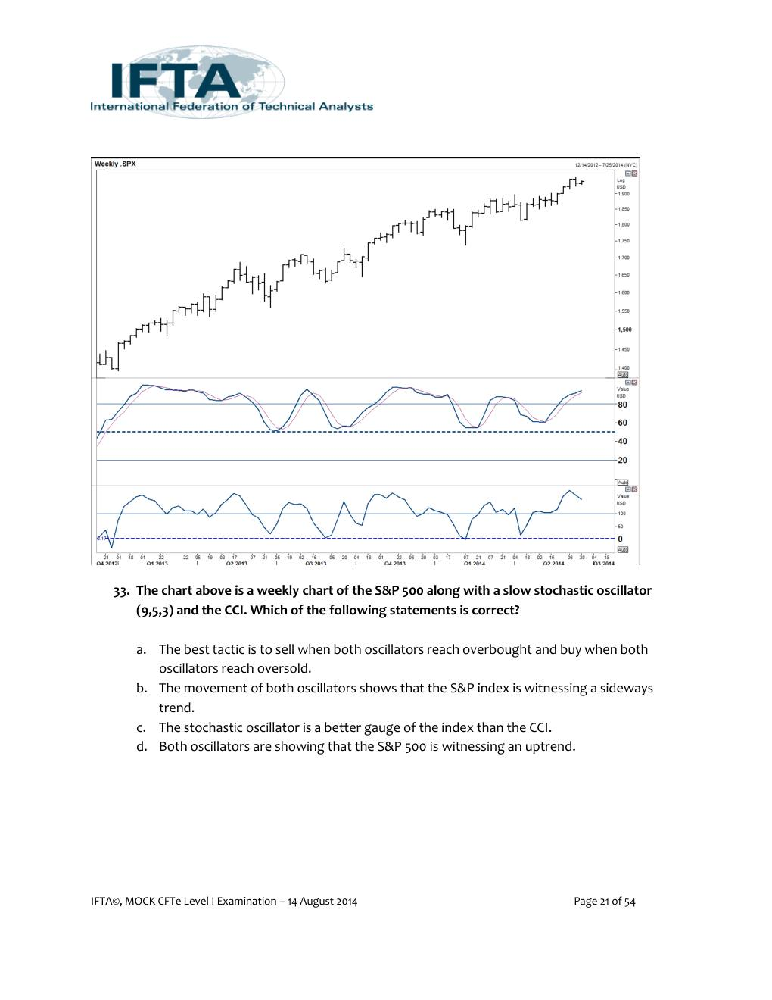
الإجابة: (د) المذبذبان يُظهران أن S&P 500 في اتجاه صاعد.
الشرح:
- على الرسم: الـ Slow Stochastic يتذبذب بين نحو 50 و100 ولا يصل إلى 20 أبدًا، والـ CCI بين 0 و+150 تقريبًا ولا ينزل تحت −100. أي أن المذبذبين يتحركان في النصف العلوي من نطاقهما ⇒ يؤكدان الاتجاه الصاعد (السعر نفسه من ≈ 1,400 إلى ≈ 1,950 بقمم وقيعان أعلى).
- (أ) خطأ: البيع عند التشبع الشرائي في اتجاه صاعد قوي خاسر، والتشبع البيعي لم يحدث أصلًا.
- (ب) خطأ: لو كان عرضيًا لتأرجح المذبذبان بين الطرفين (20 و80، −100 و+100).
- (ج) خطأ: لا يوجد ما يجعل أحدهما أفضل؛ كلاهما يعطي الرسالة نفسها.
في الامتحان اختر: د. القاعدة: بقاء المذبذب في النصف العلوي = تأكيد اتجاه صاعد، لا إشارة بيع.
س15 ★★ (س34) نظام SAR لـ Wilder هو:
- أ. نظام تداول يبقيك دائمًا في السوق، إما مشتريًا أو بائعًا
- ب. نظام تابع للاتجاه يساعدك على دخول السوق فقط عند وجود فرصة جيدة
- ج. مذبذب قائد يُستخدم أساسًا لتحديد التشبع الشرائي والبيعي
- د. تكتيك تداول لحظي يحدد أساسًا مستويات دعم ومقاومة قوية إجابات CFTe I ص4
الإجابة: (أ).
الشرح: SAR = Stop And Reverse: عند ضرب نقطة الوقف يُغلق المركز ويُفتح المركز العكسي فورًا، فأنت دائمًا في السوق. (ب) خطأ: لا ينتظر «فرصة جيدة»، بل في السوق دائمًا. (ج) خطأ: ليس مذبذبًا. (د) خطأ: ليس تكتيكًا لحظيًا ولا أداة دعم ومقاومة ثابتة؛ نقاطه تتحرك مع الوقت.
س16 ★★ (س35) في أي المواقف التالية تكون إشارة البيع أقوى وأهم؟
- أ. failure swing سلبي في RSI بينما الأسعار تصنع قممًا أعلى
- ب. failure swing سلبي في RSI بينما الأسعار تصنع قممًا أدنى
- ج. failure swing سلبي في RSI مع divergence سلبي بين RSI والأسعار
- د. كلها بالأهمية نفسها إجابات CFTe I ص5
الإجابة: (ب).
الشرح:
- الـ failure swing السلبي: RSI يصعد فوق 70، ثم يتراجع، ثم يفشل في تجاوز قمته في الصعود التالي، ثم يكسر قاعه الأخير.
- القمة السعرية الأدنى أول علامة ضعف حقيقية في السعر نفسه؛ اجتماعها مع الـ failure swing = المؤشر والسعر متفقان على الضعف ⇒ الأقوى.
- (أ) أضعف: السعر ما زال يصنع قممًا أعلى.
- (ج) هو نفسه (أ): الـ divergence السلبي = قمة سعرية أعلى مع قمة RSI أدنى، أي الحالة (أ) بلفظ آخر.
- (د) خطأ للسبب نفسه.
س17 ★★ (س37) مؤشر الاتجاه الموجب (+DI) يُحسب كما يلي:
- أ. قمة اليوم − قمة الأمس
- ب. قاع اليوم − قاع الأمس
- ج. قمة اليوم − إغلاق الأمس أثناء الصعود
- د. لا شيء مما سبق إجابات CFTe I ص5
الإجابة: (د) لا شيء مما سبق.
الشرح:
- (أ) هي تعريف +DM (Directional Movement) لا +DI؛ وهذا هو الفخ.
+DI = (+DM المُنعَّم ÷ True Range المُنعَّم) × 100.- (ب) ليست حتى −DM (−DM = قاع الأمس − قاع اليوم).
- (ج) جزء من حساب TR لا DI.
س18 ★★ (س38) إذا كنت تحمل مركز شراء في EUR/USD وعبر مؤشر الـ Momentum تحت خط الصفر واستمر في الهبوط، فأفضل قرار هو:
- أ. إلغاء وقف الخسارة
- ب. تعديل وقف الخسارة إلى مستوى أدنى
- ج. إغلاق المركز
- د. مضاعفة المركز إجابات CFTe I ص5
الإجابة: (ج) إغلاق المركز.
الشرح: Momentum تحت الصفر = السعر الآن أدنى مما كان قبل n يومًا، واستمراره في الهبوط = الزخم الهابط يتسارع ⇒ سقط مبرر الشراء. (أ) و(ب) خطأ: لا يُلغى الوقف ولا يُوسَّع أبدًا (قاعدة إدارة المخاطر). (د) خطأ: مضاعفة مركز خاسر ضد الزخم = متوسط خاسر.
س19 ★★ (س39) الرسم أعلاه رسم يومي لـ EUR/USD مع متوسط متحرك 20 يومًا. بناءً على اتجاه (انحياز) المتوسط المتحرك الحالي، ينبغي على المتاجر أن يكون الآن:
- أ. بائعًا (Short) مع وقف خسارة فوق المتوسط المتحرك
- ب. مشتريًا مع وقف خسارة تحت الدعم الثانوي
- ج. منتظرًا خارج السوق ومستعدًا للشراء بقوة إذا حدث اختراق فوق المتوسط المتحرك
- د. المتوسط المتحرك ليس أداة مفيدة في هذه الحالة إجابات CFTe I ص5
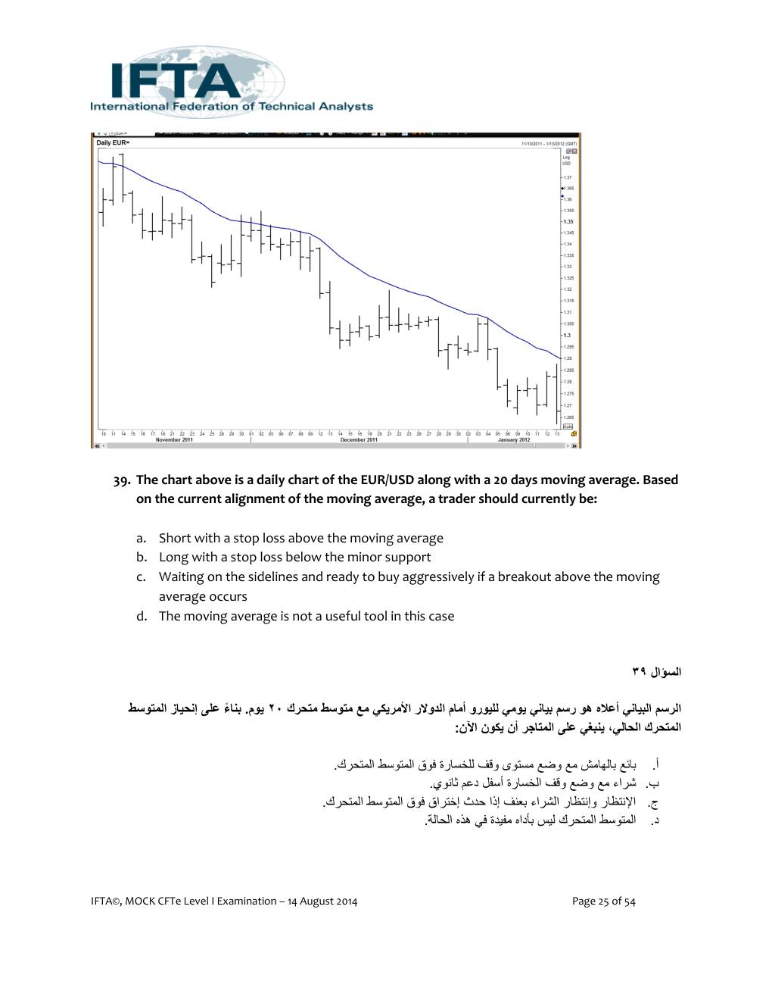
الإجابة: (أ) بائعًا ووقف الخسارة فوق المتوسط.
الشرح:
- على الرسم: المتوسط 20 يومًا مائل لأسفل من نحو 1.37 (نوفمبر 2011) إلى نحو 1.29 (يناير 2012)، والسعر تحته معظم الوقت، والارتدادات توقفت عنده ⇒ اتجاه هابط واضح والمتوسط يعمل مقاومة متحركة.
- لذلك المركز الصحيح بيع، والوقف المنطقي فوق المتوسط (اختراقه وإغلاق فوقه يُبطل الاتجاه الهابط).
- (ب) خطأ: الشراء ضد اتجاه المتوسط الهابط.
- (ج) خطأ: السؤال يسأل عن الوضع «الآن» بناءً على انحياز المتوسط، وهو هابط؛ الانتظار يضيّع الاتجاه، و«الشراء بقوة» عند أول اختراق مخاطرة.
- (د) خطأ: المتوسط مفيد جدًا هنا لأن السوق في اتجاه واضح (المتوسطات تفشل في الأسواق العرضية لا الاتجاهية).
في الامتحان اختر: أ.
س20 ★★ (س40) الفرق بين المذبذبات والمؤشرات التابعة للاتجاه هو:
- أ. المذبذبات تتحرك في اتجاهات، بينما المؤشرات التابعة للاتجاه تتحرك داخل نطاق معين
- ب. المذبذبات محدودة دائمًا بمستويات ثابتة، بينما التابعة للاتجاه غير محدودة دائمًا
- ج. المذبذبات أدق وأكثر ربحية من التابعة للاتجاه
- د. لا شيء من العبارات السابقة دقيق إجابات CFTe I ص5
الإجابة: (د) لا عبارة دقيقة.
الشرح:
- (أ) خطأ: معكوسة؛ المذبذبات هي التي تتذبذب في نطاق.
- (ب) خطأ: المذبذبات ليست كلها محدودة: Momentum وMACD مذبذبان بلا حدود.
- (ج) خطأ: لا توجد أداة «أدق وأربح» مطلقًا؛ المذبذبات تنجح في العرضي والتابعة للاتجاه في الاتجاهي.
(وسؤال CCI وBollinger «مفاهيم إحصائية» (س36) في صفحة الإحصاء.)
نقاط امتحانية
- MACD =
EMA12 − EMA26، Signal = EMA9،Histogram = MACD − Signal،k = 2/(n + 1)(0.154 / 0.074 / 0.2)؛ قيمة الـ Histogram في الـ divergences. - Stochastic:
(C − LL)/(HH − LL) × 100؛ (9,5,3): 9 الخام، 5 الإبطاء، 3 = %D؛ البيع تحت 80 يصلح للعرضي والهابط فقط. - RSI =
100 − 100/(1 + RS)، Wilder 14(×13 + الحالي)/14؛ نطاقات 40–80 صاعد و20–60 هابط؛ RS = 1.5 ⇒ RSI = 60. - +DM ≠ +DI؛ DX بالقيمة المطلقة فلا يعرف الاتجاه؛ ADX تشبع بيعي = مرتفع فوق الخطين مع +DI تحت −DI؛ ADX مُنعَّم مرتين ومتأخر.
- MFI = RSI بالحجم:
TP × Volume، 80/20 (90/10)، divergences أقوى من RSI. - مذبذبان في النصف العلوي (س33) = اتجاه صاعد؛ سعر تحت متوسط هابط (س39) = بيع والوقف فوق المتوسط.
- المذبذبات ليست كلها محدودة؛ ROC بصيغة الكشكول منتصفه 100، و%R من 0 إلى −100 (= %K − 100).
- SAR يبقيك دائمًا في السوق؛ Momentum يكسر الصفر وأنت مشترٍ ⇒ أغلق.
الإحصاء والمؤشرات والاقتصاد
الاقتصاد والتحليل بين الأسواق
في هذا الموضوع
الخلاصة: الامتحان محدد بـثمانية موضوعات فقط من كتيّب د. أحمد حافظ (الدخل القومي، التضخم، السياسة المالية، الدورة الاقتصادية، سعر الصرف، ميزان المدفوعات، السياسة النقدية، الموازنة العامة)، والتعريفات تُكتب بصياغة الكتيّب حرفيًا، وبنك الأسئلة (55 سؤالًا: مقالي واختيار وصح/خطأ) هو النموذج. الأسئلة الثلاثة التي يجب إتقانها: جدول أدوات السياستين النقدية والمالية في الكساد والتضخم، ومسائل الدخل القومي (العوائد والإنفاق)، وسعر الصرف المباشر = 1 ÷ المتبادل.
لا يُسأل عنه: ما سوى الموضوعات الثمانية. موضوعات الاقتصاد ص1
التعريفات (المقالي)
س1 ★★★ عرّف الدخل القومي، واذكر طرق قياسه وأهمية قياسه. موضوعات الاقتصاد ص2 موضوعات الاقتصاد ص7
الإجابة:
- التعريف (حرفيًا): الدخل القومي هو قيمة السلع والخدمات التي يتم إنتاجها خلال فترة زمنية تُقدَّر بسنة، مُقوَّمًا بالأسعار الجارية.
- طرق القياس الثلاث: (1) الناتج القومي، (2) عوائد عناصر الإنتاج، (3) الإنفاق القومي.
- أهمية القياس: (1) قياس الرفاهية الاقتصادية، (2) معرفة القدرة على دفع الضرائب، (3) قياس القدرة على تحمّل القروض العامة، (4) الحكم على نجاح السياسة الاقتصادية، (5) وضع إطار السياسة المالية.
الشرح:
- لماذا ثلاث طرق لرقم واحد؟ كل ما يُنتج (الطريقة 1) يُباع لأحد (الطريقة 3: إنفاق)، وثمنه يذهب في النهاية دخلًا لأصحاب عناصر الإنتاج (الطريقة 2: عوائد). فالثلاث صور مختلفة للرقم نفسه.
- طريقة الناتج: الكميات المنتجة في الفترة الجارية فقط × أسعارها، ثم الجمع. مثال المذكرة:
100×10 + 200×5 + 500×4 = 1,000 + 1,000 + 2,000 = 4,000 جنيه. وصعوباتها: (أ) إنتاج لا يدخل الحساب: الاستهلاك الذاتي للمزارع، والخدمات الشخصية (أعمال ربات البيوت)، والخدمات العامة بلا مقابل (الدفاع والأمن والتعليم والقضاء)؛ (ب) الازدواج الحسابي، ويُعالج بأخذ قيمة السلع النهائية فقط.
حساب الازدواج: 200 + 500 + 700 + 800 = 2,200 (خطأ)، والصحيح 800 فقط = 200 + 300 + 200 + 100 (القيم المضافة في كل مرحلة).
- طريقة العوائد:
إيجار (الأرض) + أجور (العمل) + فائدة (رأس المال) + أرباح (التنظيم: ربح أو خسارة). - طريقة الإنفاق:
استهلاكي خاص + استثماري خاص + إنفاق حكومي + (صادرات − واردات). - بالأسعار الجارية لا الثابتة: هذا سؤال صح/خطأ متكرر.
في الامتحان اكتب: التعريف حرفيًا، ثم الطرق الثلاث مرقمة، ثم الأهمية الخمس مرقمة.
س2 ★★★ عرّف التضخم واذكر خصائصه ونوعيه (بدون رسم). موضوعات الاقتصاد ص2 موضوعات الاقتصاد ص7
الإجابة:
- التعريف: التضخم هو الحالة التي يرتفع فيها المستوى العام للأسعار ارتفاعًا مستمرًا وملموسًا لكل السلع، أي أن الطلب الكلي أكبر من العرض الكلي.
- الخصائص: شامل (لكل السلع لا لسلعة واحدة)، ومستمر (لا ارتفاع لمرة واحدة).
- النوعان: 1. من جانب الطلب (Demand-pull): زيادة مستمرة في الطلب الكلي بأكثر من المعروض عند التوظيف الكامل (كما في الحرب وعند نهايتها)، فترتفع الأسعار مع ثبات الكمية. عوامله: زيادة الدخل، وزيادة التفضيل لسلعة، وزيادة الإنفاق الحكومي والمدفوعات التحويلية. 2. من جانب العرض / التكاليف (Cost-push): ارتفاع التكاليف (الأجور، والخامات المستوردة، والبترول) أو نقص المعروض مع ثبات الطلب. أسبابه: زيادة الأجور بما لا يتناسب مع الكفاءة، والوصول للتشغيل الكامل، وعدم كفاية الجهاز الإنتاجي، وزيادة الأرباح المحتجزة، وزيادة تكلفة الواردات، ونقص عناصر الإنتاج.
الشرح:
- لماذا «عند التوظيف الكامل»؟ لأن الاقتصاد لا يملك موارد عاطلة يزيد بها الإنتاج، فالطلب الزائد لا يجد إلا الأسعار ليرفعها: «نقود كثيرة تطارد سلعًا قليلة».
- تضخم التكاليف يرفع السعر ويخفض الكمية معًا، ومع تباطؤ النمو يُسمى stagflation.
- يضيف الكتيّب الإنجليزي نوعين: الهيكلي (اختناقات تمنع العرض من الاستجابة) والمستورد (ارتفاع أسعار الواردات أو انخفاض العملة).
في الامتحان اكتب: التعريف + «شامل ومستمر» + النوعين بأسبابهما، بدون رسم كما يطلب السؤال، ثم أضف الهيكلي والمستورد إضافةً.
س3 ★★★ عرّف السياسة المالية واذكر أهدافها، وقارن بين أدواتها التلقائية والمقصودة. موضوعات الاقتصاد ص3 موضوعات الاقتصاد ص7
الإجابة:
- التعريف: السياسة المالية هي استخدام الحكومة للضرائب والإنفاق العام والموازنة العامة للدولة من أجل تحقيق الاستقرار الاقتصادي، وهدفها الأساسي محاربة التضخم والكساد.
- الأهداف: (1) التوظيف الكامل، (2) المحافظة على قيمة النقود واستقرار الأسعار، (3) إعادة توزيع الدخل والثروة، (4) المحافظة على مستوى الدخول وزيادتها، (5) النمو الاقتصادي.
- المقارنة:
| الأدوات التلقائية (الذاتية) — Automatic stabilizers | الأدوات المقصودة — Discretionary | |
|---|---|---|
| كيف تعمل | دون تدخل الحكومة وبلا تشريع جديد | تدخل مباشر بقرار أو قانون في النفقات والضرائب |
| أمثلة | الضرائب التصاعدية، والمدفوعات التحويلية (إعانة البطالة)، وسياسات الدعم (خاصة الزراعة) | برامج الأشغال العامة، ومشروعات التوظيف العامة، وتغيير معدلات الضرائب |
الشرح:
- لماذا الضريبة التصاعدية «تلقائية»؟ في الرواج ترتفع الدخول فتدخل شرائح أعلى، فترتفع الضرائب وحدها وتهدّئ الطلب؛ وفي الركود يحدث العكس. وكذلك إعانات البطالة تزيد وحدها حين تزيد البطالة. ولذلك المدفوعات التحويلية تلقائية لا مقصودة (سؤال صح/خطأ).
- العوامل المحددة للسياسة المالية (م10): مستوى الوعي الضريبي، وكفاءة الجهاز الضريبي، وتقدم المؤسسات العامة وكفاءتها، ووجود سوق مالي منظم. ونسبة الاحتياطي ليست منها لأنها أداة نقدية.
- المثبّتات التلقائية سريعة لكنها تقابل نحو 10% فقط من حركة الناتج (الكتيّب الإنجليزي).
في الامتحان اكتب: التعريف حرفيًا + الأهداف الخمسة + جدول المقارنة.
س4 ★★★ عرّف الدورة الاقتصادية واشرح خصائص مراحلها الأربع. موضوعات الاقتصاد ص3 موضوعات الاقتصاد ص4
الإجابة: التعريف: التقلبات المتكررة في النشاط الاقتصادي (الناتج والدخل والتوظف والأسعار) بين الارتفاع والانخفاض، في أربع مراحل متعاقبة: الكساد ← الانتعاش ← الرواج ← التدهور.
| المرحلة | الخصائص |
|---|---|
| الكساد (القاع) — أدنى المراحل | تدهور النشاط وطاقة عاطلة، وبطالة وانخفاض الأجور النقدية، وهبوط الخامات الزراعية أكثر من الصناعية، ودخل نقدي أقل، وفائدة وأسعار منخفضة، وتشاؤم، وارتفاع الأجور الحقيقية |
| الانتعاش (التوسع) | انخفاض التكاليف (أجور، فائدة، خامات) ووفرة العمالة الماهرة يشجعان الاستثمار ← توظف ودخل واستهلاك وأسعار وأرباح أعلى، وتوسع الإقراض، وتفاؤل حتى التشغيل الكامل |
| الرواج (القمة) — أعلى المراحل | توظف كامل وأدنى بطالة، وأعلى إنتاج، وانخفاض الأجور الحقيقية، ورواج البورصة، وأرباح مرتفعة وتفاؤل ومضاربة — وهنا تُبذر بذور التراجع |
| التدهور (الانكماش) | ارتفاع الأجور والفائدة والخامات أسرع من الأسعار ← الاستثمار غير مجدٍ ← هبوط الأرباح والاستثمار وظهور البطالة، وهبوط البورصة والهروب إلى السيولة، ثم العودة إلى الكساد |
الشرح: لماذا ترتفع الأجور الحقيقية في الكساد؟ الأجر الحقيقي = الأجر النقدي ÷ مستوى الأسعار. مثال توضيحي (إجابة مقترحة): إذا انخفض الأجر النقدي 5% وانخفضت الأسعار 10%، فالأجر الحقيقي = 0.95 ÷ 0.90 = 1.056 أي ارتفع نحو 5.6%. وفي الرواج العكس: الأسعار ترتفع أسرع من الأجور فينخفض الأجر الحقيقي.
في الامتحان اكتب: التعريف + المراحل الأربع بالترتيب + رسم الدورة بأسماء المراحل (الكساد في القاع، الرواج في القمة).
س5 ★★★ عرّف سعر الصرف واذكر أنواعه. موضوعات الاقتصاد ص4
الإجابة:
- التعريف: سعر الصرف هو قيمة العملة المحلية مقدرة بالعملة الأجنبية، أو قيمة العملة الأجنبية مقدرة بالعملة المحلية.
- الأنواع:
1. المباشر والمتبادل: المباشر = القيمة الدولارية لوحدة العملة المحلية (الجنيه = 0.16 $)، والمتبادل = عدد الجنيهات التي يشتريها الدولار (6.25)، و
المباشر = 1 / المتبادل. 2. الثابت: جامد لا يتأثر بالأحداث الدولية (قاعدة الذهب، وقواعد صندوق النقد، والرقابة على الصرف). 3. المتغير (المرن): يتأثر بالعوامل الاقتصادية والسياسية والاجتماعية. 4. الحاضر (Spot): تسليم فوري. 5. الآجل (Forward): سعر يُتفق عليه اليوم للتسليم في المستقبل (للتحوّط). 6. أنواع التعويم الخمسة: الزاحف (Crawling peg)، ومن خلال اتفاق إقليمي (كاليورو)، والمُدار، والنظيف (حر بلا تدخل)، وغير النظيف (تتدخل السلطات بائعة أو مشترية مع إعلان التعويم الحر).
تنبيه: الكتيّب الإنجليزي يعرّف «التسعير المباشر» بالعكس (سعر الوحدة الأجنبية بالعملة المحلية)، لكن مذكرة الامتحان وأسئلة بنكها تستخدم التعريف أعلاه، فاتبع المذكرة.
في الامتحان اكتب: التعريف حرفيًا + الأنواع مرقمة، مع جملة «المباشر = 1 ÷ المتبادل».
س6 ★★★ عرّف ميزان المدفوعات وارسم شكله، ومتى يكون في توازن أو فائض أو عجز. موضوعات الاقتصاد ص4 موضوعات الاقتصاد ص5
الإجابة:
- التعريف: ميزان المدفوعات سجل بكافة المعاملات الاقتصادية الخارجية بين المقيمين في دولة معينة والمقيمين في الخارج خلال فترة زمنية معينة — عادة سنة.
- الشكل:
| # | الإيرادات (+) | # | المدفوعات (−) |
|---|---|---|---|
| 1 | صادرات منظورة (سلع) | 5 | واردات منظورة (سلع) |
| 2 | صادرات غير منظورة (خدمات) | 6 | واردات غير منظورة (خدمات) |
| 3 | تحويلات من جانب واحد (تبرعات) | 7 | تحويلات من جانب واحد (منح وإعانات) |
| 4 | رأسمالية: قروض من الخارج، وفوائد محصّلة، وبيع أصول | 8 | رأسمالية: قروض للخارج، وفوائد مسددة، وشراء أصول |
| 9 | إجمالي الإيرادات | 10 | إجمالي المدفوعات |
- التعليق على البنود: (1)+(5) = الميزان التجاري، و(2)+(6) = ميزان الخدمات، و(3)+(7) = التحويلات من جانب واحد، و(4)+(8) = حساب العمليات الرأسمالية. و
ميزان المدفوعات = الجاري + الرأسمالي. - الحالات: 9 = 10 توازن (المفضَّل)؛ 9 > 10 فائض (يرفع الاحتياطي)؛ 9 < 10 عجز.
- التقويم: الصادرات F.O.B (على ظهر المركب في ميناء التصدير، دون نقل وتأمين وشحن)، والواردات C.I.F (في ميناء الاستيراد، شاملة النقل والتأمين والشحن).
الشرح: المقيم من تربطه صلات قوية بالإقليم ويخضع لقوانينه، وليس شرطًا أن يكون مواطنًا؛ فالسائح والدبلوماسي والقوات الأجنبية غير مقيمين.
في الامتحان ارسم: جدولًا بعمودين (الإيرادات + / المدفوعات −) والبنود من 1 إلى 10 بأرقامها، ثم اكتب أسطر التعليق الثلاثة تحته.
س7 ★★ ارسم شكل ميزان المعاملات الرأسمالية بتفصيل بنوده (بنك الأسئلة م16). موضوعات الاقتصاد ص5
الإجابة:
| المتحصلات (+) | المدفوعات (−) |
|---|---|
| أولًا — متحصلات تزيد مديونية البلد: (1) شراء الأجانب أسهمًا وسندات وطنية (2) تملّكهم عقارات وطنية (3) حساباتهم في البنوك الوطنية (4) إقراض الحكومات الأجنبية للحكومة الوطنية | ثالثًا — مدفوعات تزيد دائنية البلد: (1) شراء الوطنيين أسهمًا وسندات أجنبية (2) تملّكهم عقارات أجنبية (3) حساباتهم في بنوك أجنبية (4) إقراض الحكومة الوطنية لحكومات أجنبية |
| ثانيًا — متحصلات تنقص دائنية البلد: (5) بيع الوطنيين أسهمهم وسنداتهم بالخارج (6) بيعهم عقاراتهم بالخارج (7) تصفية حساباتهم في البنوك الأجنبية (8) وفاء الحكومات الأجنبية بديونها للحكومة الوطنية | رابعًا — مدفوعات تنقص مديونية البلد: (5) بيع الأجانب أسهمًا وسندات وطنية (6) بيعهم عقاراتهم في البلد (7) تصفية حساباتهم في البنوك الوطنية (8) وفاء الحكومة الوطنية بديونها للحكومات الأجنبية |
الشرح: القاعدة الذهبية: ما يُدخل نقدًا أجنبيًا إلى البلد = متحصلات. والأجنبي حين يشتري سهمًا هنا يدفع نقدًا للبلد، لكن البلد صار «مدينًا» له بقيمة السهم ⇒ يزيد مديونية البلد. والوطني حين يبيع أصله في الخارج يُدخل نقدًا ويقل ما يملكه في الخارج ⇒ ينقص دائنية البلد. والقسمان الثالث والرابع عكسهما.
تنبيه: المذكرة كتبت في البند (4) «اقتراض الحكومات الأجنبية للحكومة الوطنية»، والمقصود إقراض الحكومات الأجنبية للحكومة الوطنية.
في الامتحان ارسم: عمودين بأربعة عناوين (أولًا إلى رابعًا) وأربعة بنود تحت كل عنوان.
س8 ★★★ عرّف السياسة النقدية مبيّنًا أهدافها وأدواتها. موضوعات الاقتصاد ص5 موضوعات الاقتصاد ص8
الإجابة:
- التعريف: السياسة النقدية هي مجموعة من الأدوات التي يتحكم فيها البنك المركزي في النشاط الاقتصادي من خلال بعض المتغيرات النقدية، مثل كمية المعروض النقدي وسعر الفائدة.
- الأهداف: (1) استقرار الأسعار وخفض التضخم، (2) العمالة الكاملة، (3) النمو الاقتصادي، (4) توازن ميزان المدفوعات.
- الأدوات الكمية الثلاث: (1) سعر إعادة الخصم (الفائدة)، (2) نسبة الاحتياطي النقدي (القانوني)، (3) عمليات السوق المفتوحة (بيع وشراء السندات وأذون الخزانة). والكيفية: هوامش الضمان، وسقوف الائتمان، والإقناع الأدبي.
الشرح:
- عمليات السوق المفتوحة هي الأكثر استخدامًا لأنها الأدق والأقوى وقابلة للعكس بسرعة (الكتيّب الإنجليزي)، أما نسبة الاحتياطي فنادرًا ما تتغير.
- كيف تصل السياسة إلى الاقتصاد: زيادة عرض النقود ⇒ تنخفض الفائدة ⇒ يزيد الاستثمار والاستهلاك ⇒ ينتقل الطلب الكلي يمينًا ⇒ يرتفع الناتج والأسعار.
- لماذا يوسّع خفض الاحتياطي الائتمان؟ (توضيح عام من كتب الاقتصاد) البنك يحتفظ بنسبة من كل وديعة ويُقرض الباقي، والقرض يعود وديعة في بنك آخر. مع وديعة 100: احتياطي 10% ⇒ مجموع الودائع يقترب من
100 ÷ 0.10 = 1,000؛ واحتياطي 20% ⇒100 ÷ 0.20 = 500فقط.
في الامتحان اكتب: التعريف حرفيًا + الأهداف الأربعة + الأدوات الثلاث مع جملة «السوق المفتوحة الأكثر استخدامًا».
س9 ★★★ ارسم جدولًا لاستخدام أدوات السياستين النقدية والمالية في الكساد والتضخم واشرحه. موضوعات الاقتصاد ص6 موضوعات الاقتصاد ص8
الإجابة:
| السياسة | الأداة | الكساد (توسعية) | التضخم (انكماشية) |
|---|---|---|---|
| نقدية | سعر الفائدة / إعادة الخصم | خفض (−) | رفع (+) |
| نقدية | نسبة الاحتياطي القانوني | خفض (−) | رفع (+) |
| نقدية | عمليات السوق المفتوحة | شراء | بيع |
| مالية | الإنفاق العام | زيادة (+) | خفض (−) |
| مالية | الضرائب | خفض (−) | زيادة (+) |
الشرح (يُكتب تحت الجدول): الكساد = نقص في الطلب الكلي ⇒ سياسة توسعية تزيد النقود والإنفاق؛ والتضخم = فائض في الطلب الكلي ⇒ سياسة انكماشية تسحب النقود والإنفاق.
آلية كل أداة:
- خفض الفائدة: الاقتراض أرخص ⇒ ائتمان واستثمار أكثر (ورفعها العكس).
- خفض الاحتياطي: يحرر أموالًا لدى البنوك للإقراض (ورفعه يحبسها).
- شراء السندات: البنك المركزي يدفع ثمنها نقودًا فتزيد السيولة (والبيع يسحبها).
- زيادة الإنفاق: أشغال عامة ووظائف (والخفض: تقليل الدعم والإعانات).
- خفض الضرائب: دخل أكبر في يد الأفراد فيزيد الاستهلاك (والزيادة تمتص القوة الشرائية).
للحفظ: في الكساد الإنفاق (+) وحده والباقي (−) والسوق المفتوحة شراء؛ وفي التضخم تنقلب كل الإشارات. والإنفاق والضرائب متعاكسان دائمًا.
في الامتحان ارسم: الجدول بخمسة صفوف وعمودي الكساد والتضخم، ثم سطري الشرح.
س10 ★★★ عرّف الموازنة العامة واذكر شروطها ومصادر تمويل عجزها. موضوعات الاقتصاد ص6 موضوعات الاقتصاد ص7
الإجابة:
- التعريف: الموازنة العامة عرض لتقدير النفقات العامة والإيرادات العامة، بهدف الوصول إلى ما إذا كانت الإيرادات العامة تفي بالنفقات العامة المخطط لها، أو كان هناك عجز يحتاج إلى تمويل.
- الشروط: (1) السنوية (عام مالي)، (2) الشمولية (كل أنشطة الحكومة)، (3) عدم التخصيص (لا تُربط إيرادات معينة بمصروفات محددة).
- مصادر تمويل العجز بالترتيب: 1. السحب من الأرصدة النقدية للحكومة. 2. استبعاد بعض النفقات (مرفوض عادةً لالتزام الحكومة ببرامج وخطط). 3. زيادة الضرائب. 4. التمويل بالعجز ببيع سندات حكومية: (أ) للجمهور والمؤسسات غير المصرفية، (ب) للبنوك التجارية (بحذر: تعيد خصمها لدى المركزي فيتضاعف الائتمان)، (ج) للبنك المركزي (الإصدار الجديد) — الأشد تضخمًا، (د) من الخارج (الحل الأخير: نقد أجنبي مع أعباء خدمة الدين).
الشرح: لماذا البنك المركزي الأشد تضخمًا؟ الاقتراض من الجمهور ينقل نقودًا موجودة من يد إلى يد، أما الاقتراض من المركزي فيخلق نقودًا جديدة بلا غطاء ولا يقابلها إنتاج، فترتفع الأسعار مباشرة.
في الامتحان اكتب: التعريف + الشروط الثلاثة + المصادر بالترتيب مع جملة «الإصدار الجديد الأشد تضخمًا».
المسائل الحسابية
س11 ★★ الإيجار 15,000، والأجور 60,000، والفائدة 25,000، والأرباح 20,000 جنيه: احسب الدخل القومي واذكر الطريقة. موضوعات الاقتصاد ص7
الإجابة: الدخل القومي = 120,000 جنيه بطريقة عوائد عناصر الإنتاج.
الشرح (الحساب كاملًا):
- لكل عنصر إنتاج عائد: الأرض ⇒ إيجار، والعمل ⇒ أجور، ورأس المال ⇒ فائدة، والتنظيم ⇒ ربح أو خسارة.
15,000 + 60,000 = 75,000.75,000 + 25,000 = 100,000.100,000 + 20,000 = 120,000 جنيه.
ومثال الكتيّب بالطريقة نفسها: 22,000 + 35,000 + 20,000 + 14,000 = 91,000.
في الامتحان اكتب: «طريقة عوائد عناصر الإنتاج: الدخل القومي = الإيجار + الأجور + الفائدة + الأرباح = 15,000 + 60,000 + 25,000 + 20,000 = 120,000 جنيه.»
س12 ★★ استهلاك خاص 400، واستثمار خاص 120، وحكومي 180، وصادرات 90، وواردات 140 (مليون): احسب الدخل القومي. موضوعات الاقتصاد ص7 موضوعات الاقتصاد ص8
الإجابة: الدخل القومي = 650 مليون بطريقة الإنفاق القومي.
الشرح (الحساب كاملًا):
- المعادلة:
استهلاكي خاص + استثماري خاص + حكومي + (صادرات − واردات). - صافي التعامل مع الخارج:
90 − 140 = −50(سالب لأن الواردات أكبر؛ الواردات إنفاق على إنتاج أجنبي فتُطرح). 400 + 120 + 180 = 700.700 + (−50) = 650 مليون.
سؤال الاختيار المرافق (خ3): استهلاك خاص 500، واستثمار خاص 150، وإنفاق حكومي 200، وصادرات 100، وواردات 130 (مليون جنيه)؛ الدخل القومي =
- أ. 1080
- ب. 920
- ج. 950
- د. 820
الإجابة: (د) 820. الحساب: 500 + 150 + 200 = 850، و100 − 130 = −30، و850 − 30 = 820.
- (أ) 1080 خطأ: =
850 + 100 + 130، أي جمع الواردات بدل طرحها. - (ج) 950 خطأ: =
850 + 100، أي إهمال الواردات. - (ب) 920 خطأ: لا تنتج عن الطريقة الصحيحة (مُلهٍ).
في الامتحان اكتب: «طريقة الإنفاق القومي: 400 + 120 + 180 + (90 − 140) = 650 مليون.»
س13 ★★ الدولار = 6.25 جنيه: احسب سعر الصرف المباشر للجنيه واذكر نوع كل سعر. موضوعات الاقتصاد ص7 موضوعات الاقتصاد ص8
الإجابة: 6.25 جنيه للدولار هو السعر المتبادل، والسعر المباشر للجنيه = 1 ÷ 6.25 = 0.16 دولار.
الشرح (الحساب كاملًا):
- المتبادل = عدد الجنيهات مقابل دولار واحد = 6.25.
- المباشر = القيمة الدولارية لجنيه واحد =
1 ÷ 6.25. 1 ÷ 6.25 = 0.16(لأن6.25 × 0.16 = 1.00✓).
سؤال الاختيار المرافق (خ12): إذا كان الدولار = 8 جنيهات، فسعر الصرف المباشر للجنيه:
- أ. 8 دولارات
- ب. 0.125 دولار
- ج. 0.8 دولار
- د. 1.25 دولار
الإجابة: (ب) 0.125 دولار. الحساب: 1 ÷ 8 = 0.125 (والتحقق: 8 × 0.125 = 1 ✓).
- (أ) 8 خطأ: هذا السعر المتبادل نفسه وبوحدة خاطئة.
- (ج) 0.8 خطأ: = 8 ÷ 10، خطأ في الفاصلة.
- (د) 1.25 خطأ: = 10 ÷ 8، قسمة خاطئة.
في الامتحان اكتب: «السعر المتبادل = 6.25 جنيه/دولار؛ السعر المباشر = 1 ÷ 6.25 = 0.16 دولار/جنيه.»
س14 ★★ الـ nominal GDP = 14,958.3 والـ deflator = 110: كم الـ real GDP؟ واكتب متطابقة الـ GDP. الكتيّب ص105 الكتيّب ص71
الإجابة: Real GDP = 14,958.3 ÷ 1.10 = 13,598.5؛ والمتطابقة GDP = C + I + G + (X − M)، والاستهلاك (C) هو الأكبر (نحو ثلثي الـ GDP).
الشرح (الحساب كاملًا):
Real GDP = Nominal GDP ÷ (Deflator ÷ 100).110 ÷ 100 = 1.10.14,958.3 ÷ 1.10 = 13,598.45 ≈ 13,598.5مليار.- المعنى: الاسمي يرتفع لسببين (كميات أكثر أو أسعار أعلى)، والحقيقي ينزع أثر الأسعار. والـ deflator = 110 يعني أن الأسعار أعلى 10% من سنة الأساس (2005 = 100). ومثال 1960 بالطريقة نفسها:
543.3 ÷ 0.19 = 2,859.5مليار. - المتطابقة بأرقام أمريكا 2014 (تريليون $):
11.9 + 2.9 + 3.2 + (2.3 − 2.9) = 18.0 − 0.6 = 17.4، والاستهلاك11.9 ÷ 17.4 = 68.4%.
تنبيه: الـ Investment في الـ GDP = سلع رأسمالية جديدة + تغيّر المخزون، وليس شراء الأسهم والسندات؛ والمدفوعات التحويلية مستبعدة لأنها تحويل دخل بلا سلعة جديدة.
س15 ★ كيف يُحسب السعر الآجل (Forward)؟
الإجابة: معادلة المذكرة: السعر الآجل = السعر الحاضر × (1 + فائدة المصدر) / (1 + فائدة المستورد)؛ وهو سعر يُتفق عليه اليوم للتسليم في المستقبل، ويُستخدم للتحوّط من تقلب الصرف.
الشرح: الفكرة أن الفرق بين الفائدتين على العملتين ينعكس في السعر الآجل، فلا يربح أحد بلا مخاطرة من الاقتراض بعملة والإيداع بأخرى.
مثال توضيحي (إجابة مقترحة، بالصيغة المعيارية للسعر بالجنيه للدولار): السعر الحاضر 6.25 جنيه/دولار، وفائدة الجنيه 10% وفائدة الدولار 5% لسنة:
(1 + 0.10) ÷ (1 + 0.05) = 1.10 ÷ 1.05 = 1.0476.6.25 × 1.0476 = 6.55 جنيه/دولار.- المعنى: العملة ذات الفائدة الأعلى (الجنيه) تُباع آجلًا بخصم، فيلزم جنيهات أكثر للدولار بعد سنة.
صح أو خطأ واختيار (من البنك)
س16 ★★ صحّح العبارات: (أ) يُقوَّم الدخل القومي بالأسعار الثابتة (ب) أعمال ربات البيوت تدخل في الدخل القومي (ج) في الرواج ترتفع الأجور الحقيقية (د) تُقيَّم الصادرات C.I.F. موضوعات الاقتصاد ص9
الإجابة: العبارات الأربع خطأ، والتصحيح:
- (أ) خطأ — يُقوَّم بالأسعار الجارية (من نص التعريف).
- (ب) خطأ — خدمات شخصية لا تدخل في الحساب (من صعوبات طريقة الناتج).
- (ج) خطأ — الأجور الحقيقية تنخفض في الرواج (الأسعار ترتفع أسرع من الأجور) وترتفع في الكساد.
- (د) خطأ — الصادرات تُقيَّم F.O.B (قبل النقل والتأمين والشحن)، والواردات C.I.F.
تنبيه: في سؤال الصح والخطأ يجب كتابة التصحيح، لا كلمة «خطأ» وحدها.
س17 ★★ صحّح: (أ) التضخم يزيد الادخار (ب) يؤدي إلى فائض في ميزان المدفوعات (ج) لعلاجه ماليًا تزيد الحكومة الإنفاق (د) رفع نسبة الاحتياطي يعالج الكساد (هـ) في الكساد يرفع المركزي الفائدة. موضوعات الاقتصاد ص9
الإجابة: كلها خطأ:
- (أ) خطأ — ينخفض الادخار ويزيد الاستهلاك، لأن الناس يشترون الآن قبل أن ترتفع الأسعار.
- (ب) خطأ — يؤدي إلى عجز: الصادرات تصبح أغلى فتقل، والواردات أرخص نسبيًا فتزيد.
- (ج) خطأ — تخفض الإنفاق العام (سياسة انكماشية).
- (د) خطأ — رفع الاحتياطي يقلل الائتمان فيعالج التضخم.
- (هـ) خطأ — يخفضها ليصبح الاقتراض أرخص فيزيد الائتمان والاستثمار.
وآثار التضخم الأخرى للمراجعة: يعيد توزيع الدخل لصالح رجال الأعمال، ويخفض الاستثمار وقيمة العملة، ويزيد الإنتاج فقط إذا وُجدت بطالة، ويوجّه الموارد نحو المضاربة، ويدفع رأس المال للهروب؛ واجتماعيًا: عدم عدالة التوزيع والفساد والتفكير في الهجرة.
س18 ★★ أسئلة الاختيار من البنك (التضخم والأدوات والدورة). موضوعات الاقتصاد ص8
(خ4) المستفيد من التضخم بحسب الكتيّب:
- أ. أصحاب الدخول المحدودة
- ب. الموظفون
- ج. رجال الأعمال
- د. أصحاب الأصول النقدية
الإجابة: (ج) رجال الأعمال. الأسعار التي يبيعون بها ترتفع أسرع من تكاليفهم الثابتة. أما (أ) و(ب) فدخولهم ثابتة فتنخفض قوتها الشرائية، و(د) الأصول النقدية تفقد قيمتها.
(خ5) التضخم الناتج عن ارتفاع أسعار البترول والأجور هو تضخم:
- أ. من جانب الطلب
- ب. من جانب التكاليف (العرض)
- ج. ناتج عن زيادة الدخل
- د. ناتج عن زيادة التفضيل لسلعة
الإجابة: (ب) من جانب التكاليف. البترول والأجور تكاليف إنتاج. أما (أ) و(ج) و(د) فكلها عوامل طلب.
(خ6) من الأدوات التلقائية للسياسة المالية:
- أ. برامج الأشغال العامة
- ب. مشروعات التوظيف العامة
- ج. الضرائب التصاعدية
- د. تغيير معدلات الضرائب
الإجابة: (ج) الضرائب التصاعدية (تعمل وحدها). و(أ) و(ب) و(د) أدوات مقصودة تحتاج قرارًا.
(خ8) في حالة الكساد تقوم الحكومة بـ:
- أ. زيادة الإنفاق العام وزيادة الضرائب
- ب. زيادة الإنفاق العام وخفض الضرائب
- ج. خفض الإنفاق العام وخفض الضرائب
- د. خفض الإنفاق العام وزيادة الضرائب
الإجابة: (ب) — سياسة مالية توسعية: الإنفاق (+) والضرائب (−). و(أ) و(ج) متناقضتان (أداة توسعية مع أخرى انكماشية)، و(د) علاج التضخم.
(خ9) أي مجموعة إجراءات تعالج التضخم؟
- أ. خفض سعر الفائدة وشراء أوراق مالية
- ب. رفع نسبة الاحتياطي وبيع أوراق مالية
- ج. خفض نسبة الاحتياطي وزيادة الإنفاق العام
- د. خفض الضرائب ورفع سعر الفائدة
الإجابة: (ب) — كلاهما يقلل الائتمان والنقود. و(أ) و(ج) توسعيتان (علاج كساد)، و(د) نصفها خطأ لأن خفض الضرائب توسعي.
(خ10) أعلى مراحل الدورة الاقتصادية: أ. الكساد ب. الانتعاش ج. الرواج د. الانكماش — الإجابة: (ج) الرواج (القمة).
(خ11) في مرحلة الكساد، الأجور الحقيقية: أ. ترتفع ب. تنخفض ج. تبقى ثابتة د. تساوي الأجور النقدية — الإجابة: (أ) ترتفع، لأن الأسعار تنخفض بنسبة أكبر من انخفاض الأجور النقدية.
(خ17) لعلاج الكساد يقوم البنك المركزي في السوق المفتوحة بـ: أ. بيع الأوراق المالية ب. شراء الأوراق المالية ج. رفع سعر الخصم د. رفع نسبة الاحتياطي — الإجابة: (ب) شراء الأوراق المالية (يضخ نقودًا). و(أ) و(ج) و(د) كلها انكماشية.
س19 ★★ شراء الأجانب أسهمًا وسندات وطنية يُسجَّل أين؟ وبيعهم عقاراتهم في البلد؟ موضوعات الاقتصاد ص9 موضوعات الاقتصاد ص5
الإجابة: الأول متحصلات تزيد مديونية البلد (أولًا)؛ والثاني مدفوعات تنقص مديونية البلد (رابعًا) لا متحصلات.
الشرح:
- الأجنبي يشتري سهمًا وطنيًا ⇒ يدخل نقد أجنبي إلى البلد ⇒ متحصلات؛ والبلد صار مدينًا له بقيمة السهم ⇒ تزيد المديونية.
- الأجنبي يبيع عقاره في البلد ⇒ البلد يدفع له الثمن فيخرج نقد ⇒ مدفوعات؛ وزال حق الأجنبي على البلد ⇒ تنقص المديونية.
- القاعدة: ما يزيد مديونية البلد أو ينقص دائنيته = متحصلات (+)، وما يزيد دائنيته أو ينقص مديونيته = مدفوعات (−).
سؤال الاختيار (خ16): شراء الأجانب لأسهم وسندات وطنية يُسجَّل: أ. متحصلات تزيد مديونية البلد ب. مدفوعات تزيد دائنيته ج. متحصلات تنقص دائنيته د. مدفوعات تنقص مديونيته — الإجابة: (أ).
سؤال الاختيار (خ15): البندان (2) و(6) في ميزان المدفوعات يمثلان: أ. الميزان التجاري ب. ميزان الخدمات ج. التحويلات من جانب واحد د. حساب العمليات الرأسمالية — الإجابة: (ب) ميزان الخدمات (الصادرات والواردات غير المنظورة). و(1)+(5) تجاري، و(3)+(7) تحويلات، و(4)+(8) رأسمالي.
س20 ★★ اذكر أنواع اختلال ميزان المدفوعات الأربعة، وأيها الأسوأ؟ الكتيّب ص105 الكتيّب ص87
الإجابة:
| النوع | الوصف |
|---|---|
| الطارئ (العارض) | حدث مفاجئ (فيضان، حرب): هبوط الإنتاج وزيادة الإنفاق والواردات |
| الموسمي | في فترة من السنة؛ دول النشاط الموسمي الواحد (زراعة، سياحة) |
| الدوري | مع تقلبات الدورة الاقتصادية |
| الهيكلي — الأسوأ | خلل جوهري: استهلاك > إنتاج، وواردات > صادرات، واستثمار > ادخار |
الشرح: الهيكلي هو الأسوأ لأنه ناتج عن خلل في بنية الاقتصاد نفسه لا عن حدث مؤقت، فهو صعب العلاج ويستغرق فترة طويلة لإصلاحه؛ أما الثلاثة الأخرى فتزول بزوال سببها.
س21 ★★ ارتفاع سعر الفائدة في دولة يزيد الطلب على عملتها؟ ومن أين ينشأ عرض النقد الأجنبي؟ موضوعات الاقتصاد ص9 موضوعات الاقتصاد ص4
الإجابة: صح — المستثمرون يريدون العائد الأعلى فيشترون عملة الدولة ليودعوا فيها. وعرض النقد الأجنبي ينشأ من الجانب الدائن (المتحصلات).
الشرح:
| الطلب على النقد الأجنبي | عرض النقد الأجنبي | |
|---|---|---|
| المصدر | الجانب المدين: الواردات، ومدفوعات رأس المال، والتحويلات للخارج، واستثمار المقيمين بالخارج | الجانب الدائن: الصادرات، وإيرادات رأس المال، وتحويلات العاملين، والسياحة، والاستثمار الأجنبي |
| يزيد بسبب | ضعف هيكل الاقتصاد، وزيادة الدخل الحقيقي، وعوامل سلوكية، وارتفاع الفائدة في البلد الآخر، والتوقعات، وعوامل سياسية ونفسية | زيادة أذواق الأجانب ودخولهم، وانخفاض أسعار السلع الوطنية، وارتفاع الأسعار العالمية |
سؤال الاختيار (خ14): ينشأ عرض النقد الأجنبي من: أ. الجانب المدين لميزان المدفوعات ب. الجانب الدائن ج. الموازنة العامة د. الاحتياطي النقدي — الإجابة: (ب).
سؤال الاختيار (خ13): تدخّل السلطات النقدية بائعة أو مشترية للتأثير على قيمة عملتها: أ. التعويم النظيف ب. التعويم غير النظيف ج. التعويم الزاحف د. التعويم من خلال اتفاق إقليمي — الإجابة: (ب) غير النظيف. والنظيف بلا تدخل أصلًا، والزاحف تعديل بخطوات صغيرة منتظمة، والإقليمي اتفاق بين دول.
سؤال الاختيار (خ18): أكثر مصادر تمويل العجز تأثيرًا في التضخم: أ. الجمهور ب. البنوك التجارية ج. البنك المركزي (الإصدار الجديد) د. الخارج — الإجابة: (ج) (نقود جديدة بلا غطاء). و(خ19): عدم ربط إيرادات معينة بمصروفات محددة شرط: أ. السنوية ب. الشمولية ج. عدم التخصيص د. التوازن — الإجابة: (ج).
الاقتصاد والأسواق (Intermarket)
س22 ★ اذكر مراحل Pring الست وترتيب الأسواق الثلاثة. المحاضرات ص45 المحاضرات ص46
الإجابة: الترتيب: Bonds ↑ ⇒ Stocks ↑ ⇒ Commodities ↑ ⇒ Bonds ↓ ⇒ Stocks ↓ ⇒ Commodities ↓.
| المرحلة | ما يحدث | Bonds | Stocks | Commodities |
|---|---|---|---|---|
| I (قبل قاع الدورة) | تباطؤ يخفض الطلب على الاقتراض فتنخفض الفائدة؛ المركزي توسعي | ↑ | ↓ | ↓ |
| II (قبل القاع) | استباق التعافي بشراء الأسهم | ↑ | ↑ | ↓ |
| III (بعد القاع) | طلب على المعادن والنفط — الثلاثة صاعدة | ↑ | ↑ | ↑ |
| IV (قبل القمة) | طلب قوي على التمويل ⇒ الفائدة ترتفع | ↓ | ↑ | ↑ |
| V (قبل القمة) | الأسهم تقمّ، وتوقع أرباح أقل | ↓ | ↓ | ↑ |
| VI (بعد القمة) | تراجع الطلب على النفط والمعادن — الثلاثة هابطة | ↓ | ↓ | ↓ |
الشرح:
- السندات أولًا: سعر السند عكس الفائدة، والفائدة تنخفض أول ما يضعف الاقتصاد.
- الأسهم ثانيًا: تستبق التعافي قبل ظهوره في الأرقام بنحو 6–9 أشهر.
- السلع الصناعية أخيرًا: تحتاج عودة الطلب الحقيقي على المعادن والنفط بعد القاع.
- وعند القمة يتكرر الترتيب نفسه هبوطًا. والأسهم صاعدة في المراحل II وIII وIV، وهابطة في I وV وVI.
في الامتحان اكتب: سطر الترتيب + الجدول + سبب ترتيب السندات أولًا.
س23 ★ ما القطاعات التي تقود في كل مرحلة (Sector Rotation)؟ وما إنذارات القمة؟ المحاضرات ص46
الإجابة:
| القطاع | المراحل | السبب |
|---|---|---|
| Consumer Staples | VI، I | طلب ثابت؛ ملاذ عند أول تباطؤ |
| Utilities | I، II | تستفيد من انخفاض الفائدة |
| Financials | II، III | فائدة منخفضة ⇒ تمويل أرخص وهوامش أوسع |
| Consumer Cyclicals / Technology | III، IV | الإسكان والسيارات والإنفاق الرأسمالي |
| Transportation | IV | نقل السلع؛ ضعفه إشارة مبكرة لضعف الاقتصاد |
| Industrials / Basic Materials | IV، V | توسع العمليات والمعدات والخامات |
| Energy | V، VI | النفط يقفز قبيل الركود ثم ينهار الطلب |
- الفكرة: دفاعيات عند القاع والقمة المتأخرة، ودوريات في المنتصف، والطاقة متأخرة.
- إنذارات القمة: ذروة Dow Jones Utility، وارتفاع الفائدة قصيرة الأجل، وذروة أسواق الائتمان، وضعف النقل.
تنبيه: جدول المحاضرة يضع الطاقة في المرحلة IV أيضًا، وملفات Intermarket تضعها في V وVI؛ والفكرة واحدة (الطاقة متأخرة).
نقاط امتحانية
- الموضوعات الثمانية فقط، والتعريفات حرفيًا بصياغة الكتيّب.
- الكساد: الإنفاق (+) وحده، والفائدة والاحتياطي والضرائب (−)، والسوق المفتوحة شراء؛ التضخم: تنقلب كلها.
- الدخل القومي بالأسعار الجارية: العوائد
15,000 + 60,000 + 25,000 + 20,000 = 120,000؛ الإنفاق400 + 120 + 180 + (90 − 140) = 650و500 + 150 + 200 + (100 − 130) = 820؛ الازدواج ⇒ السلع النهائية فقط (800 لا 2,200). - المباشر = 1 ÷ المتبادل:
1 ÷ 6.25 = 0.16، و1 ÷ 8 = 0.125. - Real GDP =
14,958.3 ÷ 1.10 = 13,598.5؛ وGDP = C + I + G + (X − M)، والاستهلاك ≈ الثلثين. - الأجور الحقيقية ترتفع في الكساد وتنخفض في الرواج؛ الرواج أعلى المراحل.
- F.O.B للصادرات وC.I.F للواردات؛ (2)+(6) خدمات؛ 9 > 10 فائض؛ الهيكلي الأسوأ.
- المعاملات الرأسمالية: ما يزيد المديونية أو ينقص الدائنية = متحصلات؛ بيع الأجانب عقاراتهم هنا = مدفوعات (رابعًا).
- الموازنة: السنوية والشمولية وعدم التخصيص؛ تمويل العجز من المركزي (الإصدار الجديد) الأشد تضخمًا.
- المدفوعات التحويلية والضرائب التصاعدية تلقائية؛ والسوق المفتوحة الأداة النقدية الأكثر استخدامًا.
- Pring: سندات ← أسهم ← سلع؛ III الثلاثة صاعدة وVI الثلاثة هابطة.
الإحصاء والمؤشرات والاقتصاد
اتساع السوق والـ Sentiment
الخلاصة: الجزء الخامس من كتيّب المستوى الثاني (اتساع السوق Breadth والـ Sentiment ووقف الخسارة) يحدد بنفسه ما يُمتحن في صفحة «التركيز الامتحاني»: المعادلات الثماني، وجدول أسماء المبتكرين وسنواتهم («الأسماء يُسأل عنها»)، و«نقاط تحمل درجات»، وأكثر المصطلحات التباسًا؛ وظهر الموضوع في CFTe I (س58–60) وفي CFTe II 2017 و2024. الأسئلة الثلاثة التي يجب إتقانها: الـ Breadth لا يُطبَّق على سهم منفرد، والـ TRIN يتحرك عكس السعر ومزالقه وكيف يعالجها الـ Thrust Oscillator، وقراءة مؤشرات الـ Sentiment بمنطق الرأي المعاكس.
مؤشرات الـ Breadth
س1 ★★★ لماذا لا تُطبَّق مؤشرات الـ Breadth على سهم منفرد؟ وما الفرق بينها وبين مؤشرات الحجم؟ المستوى 2 ص29 المستوى 2 ص32 المستوى 2 ص33
الإجابة: لأن مؤشرات الـ Breadth تستخدم بيانات على مستوى السوق كله (عدد الأسهم الصاعدة والهابطة، والقمم والقيعان الجديدة، وحجم الصعود وحجم الهبوط)، لا سعر سهم منفرد. فهي تقيس عدد الأسهم المشاركة في الحركة، وهذا لا معنى له لسهم واحد. أما مؤشرات الحجم (مثل OBV) فتستخدم حجم الورقة المالية نفسها.
الشرح:
- المؤشر العام مرجّح بالقيمة السوقية، فقد يصعد لأن خمسة أسهم كبيرة صعدت بينما تهبط معظم مكوناته.
- الـ Breadth يكشف هذه القوة أو الضعف الكامن تحت حركة المؤشر؛ ولذلك يسمّيه الكتيّب «بصمة السوق».
- السهم المنفرد ليس له «أسهم مكوّنة» تصعد أو تهبط، فلا يمكن حساب Breadth له.
| مؤشرات الـ Breadth | مؤشرات الحجم | |
|---|---|---|
| البيانات | البنية الداخلية للسوق كله (عدد الصاعدة/الهابطة، حجم الصعود/الهبوط عبر السوق) | حجم الورقة المالية نفسها |
| تُطبَّق على | المؤشرات والسوق العام فقط | أي ورقة: سهم أو مؤشر |
| أمثلة | A/D Line، McClellan، TRIN، New High–Low | OBV، Accumulation/Distribution، MFI |
في الامتحان اكتب: «الـ Breadth لا يُطبَّق على سهم منفرد لأنه يستخدم بيانات السوق كله، فيكشف القوة أو الضعف الكامن تحت حركة المؤشر المرجّح بالقيمة؛ ومؤشرات الحجم تستخدم حجم الورقة نفسها.» واذكر هذه الجملة صراحةً كلما ورد الـ Breadth (نقطة تحمل درجات).
س2 ★★★ اكتب معادلات مؤشرات الـ Breadth الثمانية. المستوى 2 ص32 المستوى 2 ص29 المستوى 2 ص30
الإجابة:
A/D Line(today) = (Advancing − Declining issues) + A/D Line(yesterday)(مجموع تراكمي)McClellan Oscillator = 19-day EMA − 39-day EMA of (Advances − Declines)Summation Index = cumulative (running) total of the McClellan OscillatorTRIN = (Advancing issues / Declining issues) ÷ (Advancing volume / Declining volume)Market Thrust(today) = [(AI × AV) − (DI × DV)] / 1,000,000 + Market Thrust(yesterday)Thrust Oscillator = [(AI × AV) − (DI × DV)] / [(AI × AV) + (DI × DV)]محدود بين +100 و−100New High–Low = stocks making new 52-week highs − stocks making new 52-week lows% above MA = stocks trading above the chosen MA / total stocks in the index
(AI = عدد الأسهم الصاعدة، DI = الهابطة، AV = حجم الصعود، DV = حجم الهبوط.)
الشرح: خطوات الـ McClellan كما في الكتيّب: (1) الفرق اليومي بين الصاعدة والهابطة، (2) EMA لـ 19 يومًا لهذا الفرق، (3) EMA لـ 39 يومًا، (4) الطرح. وUpside/Downside Volume Oscillator = حجم الصعود − حجم الهبوط، يُنعَّم بمتوسط 10 أو 20 يومًا.
مثال حسابي توضيحي (إجابة مقترحة، أرقام افتراضية): AI = 1,500 سهم، DI = 1,000، AV = 600 مليون، DV = 900 مليون.
- TRIN:
(1,500 ÷ 1,000) ÷ (600 ÷ 900) = 1.5 ÷ 0.667 = 2.25⇒ أكبر من 1 ⇒ قراءة هبوطية (حجم الهبوط مسيطر). - Thrust Oscillator:
AI × AV = 1,500 × 600 = 900,000، وDI × DV = 1,000 × 900 = 900,000⇒(900,000 − 900,000) ÷ (900,000 + 900,000) = 0 ÷ 1,800,000 = 0⇒ محايد. - Market Thrust اليوم:
(900,000 − 900,000) ÷ 1,000,000 = 0يُضاف إلى قيمة أمس. - لاحظ: اليوم نفسه أعطى TRIN «هبوطيًا قويًا» وThrust «محايدًا»؛ لأن الـ TRIN يخلط الأسهم الصاعدة (1,500) مع حجم الهبوط في طرفي النسبة (انظر س4).
في الامتحان اكتب: المعادلات الثماني بالإنجليزية كما هي، سطرًا لكل مؤشر.
س3 ★★★ انسب المؤشرات إلى مبتكريها وسنواتها. المستوى 2 ص32
الإجابة:
| المؤشر | المبتكر | السنة |
|---|---|---|
| A/D Line | — (نقطة الأساس الكلاسيكية) | — |
| McClellan Oscillator & Summation Index | Sherman وMarian McClellan | 1969 |
| Arms Index (TRIN) | Richard Arms | 1967 |
| Market Thrust / Thrust Oscillator | Tushar Chande | ديسمبر 1993 |
| On-Balance Volume | Joseph Granville | — |
| Accumulation/Distribution | Marc Chaikin | — |
| Money Flow Index | Gene Quong وAvrum Soudack | — |
| Directional Movement / ADX / RSI | Welles Wilder | — |
الشرح: الكتيّب يكتب فوق الجدول «الأسماء يُسأل عنها». طريقة للحفظ: الترتيب الزمني Arms (1967) ثم McClellan (1969) ثم Chande (1993)؛ والـ Thrust Oscillator «جاء متأخرًا ليصلح الـ TRIN».
في الامتحان اكتب: الجدول بالأعمدة الثلاثة.
س4 ★★★ كيف يُقرأ الـ TRIN؟ وما مزالقه؟ وكيف يعالجها الـ Thrust Oscillator؟ المستوى 2 ص30 المستوى 2 ص32 المستوى 2 ص33
الإجابة:
- القراءة: الـ TRIN يتحرك عكس السعر: الـ TRIN الصاعد هبوطي (حجم الهبوط هو المسيطر)، والـ TRIN الهابط صعودي (حجم الصعود هو المسيطر). يُقرأ الـ TRIN الخام للتشبع الشرائي/البيعي، ويُستخدم متوسطه المتحرك للـ divergence ولمستويات تشبع أنعم.
- المزلقان: (1) عدم التماثل: جانبه الصعودي محدود باتجاه الصفر، لكن جانبه الهبوطي غير محدود (قد يمتد بلا نهاية)؛ (2) خلط المدخلات: يضع الأسهم الصاعدة مع حجم الهبوط في أحد طرفي النسبة، فلا يحدد بوضوح الأيام الصاعدة أو الهابطة شديدة القوة.
- العلاج — Thrust Oscillator (Tushar Chande): (1) محدود من الجانبين بين +100 و−100، و(2) يُبقي الأسهم الصاعدة مع حجم الصعود (والهابطة مع حجم الهبوط) في الحد نفسه
AI × AVوDI × DV، فيعطي قراءات أنظف ومعيارية للأيام الصاعدة القوية مقابل الهابطة القوية. أي أنه يعالج العيبين معًا.
الشرح (لماذا يتحرك الـ TRIN عكس السعر؟): في يوم صعود قوي يكون حجم الصعود كبيرًا جدًا، فمقام النسبة (AV/DV) يكبر أكثر من البسط (AI/DI)، فتنزل القيمة تحت 1. وفي يوم هبوط قوي يحدث العكس فتقفز القيمة فوق 1، وقد تبلغ أرقامًا كبيرة جدًا لأن DV في المقام الداخلي يمكن أن يصغر جدًا. وانظر المثال الحسابي في س2: TRIN = 2.25 «هبوطي» بينما Thrust = 0.
التمييز في سطر (من «أكثر المصطلحات التباسًا»): نفس المدخلات الخام، والجودة معاكسة: الـ TRIN مقلوب وغير محدود، والـ Thrust Oscillator محدود عند ±100 ومقرون بشكل صحيح.
في الامتحان اكتب: القراءة العكسية + المزلقين + العلاج في ثلاث فقرات قصيرة، ثم سطر التمييز.
س5 ★★★ ما الفرق بين McClellan Oscillator والـ Summation Index؟ وما أفق كل مؤشر؟ المستوى 2 ص29 المستوى 2 ص33
الإجابة:
| المؤشر | ما هو | الأفق | الاستخدامات |
|---|---|---|---|
| A/D Line | مجموع تراكمي للصاعدة − الهابطة | طويل الأجل (أبسط مقاييس الـ Breadth وأشهرها) | عبور الصفر، والـ divergence مقابل المؤشر، وتحليل الاتجاه (دعم ومقاومة وخطوط اتجاه) |
| McClellan Oscillator | EMA19 − EMA39 لفرق الصاعدة والهابطة = القراءة اليومية |
قصير/متوسط الأجل | عبور الصفر، وتطرفات التشبع، والـ divergence |
| Summation Index | المجموع التراكمي الجاري لقيم الـ McClellan Oscillator اليومية | متوسط/طويل؛ أنعم ويُظهر الاتجاه الكامن الحقيقي | عبور الصفر، وتحليل الاتجاه العام، والـ divergence |
الشرح: العلاقة بين الـ Oscillator والـ Summation مثل العلاقة بين «التغير اليومي» و«الرصيد»: كل يوم نضيف قراءة الـ Oscillator إلى المجموع، فيصبح الـ Summation النسخة التراكمية الأنعم من الـ McClellan. ولهذا جواب CFTe I س60 هو McClellan Oscillator (انظر س11).
في الامتحان اكتب: «الـ Oscillator هو القراءة اليومية (EMA19 − EMA39)، والـ Summation هو مجموعها الجاري؛ الـ A/D طويل الأجل، والـ McClellan قصير/متوسط، والـ Summation النسخة التراكمية الأنعم.»
س6 ★★★ ما الإشارات الثلاث التي تُقرأ بها معظم مؤشرات الـ Breadth؟ المستوى 2 ص32
الإجابة: (1) عبور الصفر (أو مستوى 50%)، (2) الـ divergence مقابل المؤشر، (3) التشبع الشرائي/البيعي.
الشرح:
- عبور الصفر: المؤشر فوق الصفر = غلبة الصاعدة (أو حجم الصعود)، وتحته = غلبة الهابطة؛ وفي «نسبة الأسهم فوق MA» يُستخدم مستوى 50% بدل الصفر.
- الـ divergence: المؤشر يصنع قمة جديدة والـ Breadth لا يؤكدها (أو العكس عند القيعان) ⇒ إنذار (انظر س13).
- التشبع: القراءات المتطرفة جدًا (مثل قرب 0% أو 100% في نسبة الأسهم فوق MA) تعني أن الحركة قد امتدت أكثر من اللازم.
في الامتحان اكتب: الإشارات الثلاث ثم «أضف ما يخص الأداة تحديدًا» كما ينصح الكتيّب (مثلًا تحليل خطوط الاتجاه على خط A/D).
س7 ★ ما مؤشر New High – New Low؟ ومتى يُنذر؟ المستوى 2 ص30
الإجابة: يُعرف أيضًا بـ Net New 52-Week Highs: عدد الأسهم التي تصنع قمة 52 أسبوعًا جديدة − عدد التي تصنع قاع 52 أسبوعًا جديدًا. وهو مقياس Breadth استباقي للإنذار المبكر.
الشرح:
- الاتجاه الصاعد السليم ينبغي أن يواصل إنتاج قمم جديدة أكثر من القيعان الجديدة.
- إذا واصل المؤشر الصعود بينما يتناقص صافي القمم الجديدة، فالصعود يحمله عدد أقل من الأسهم ⇒ divergence جاد مقابل متوسط المؤشر = إنذار مبكر باحتمال تغيّر الاتجاه.
- الاستخدامات: عبور الصفر، والـ divergence، وتطرفات التشبع.
مثال توضيحي (إجابة مقترحة): يوم فيه 180 قمة جديدة و40 قاعًا جديدًا ⇒ 180 − 40 = +140 صعودي؛ وإذا صنع المؤشر قمة أعلى بعد شهر والصافي 90 − 60 = +30 فقط، فهذا تناقص يُنذر.
س8 ★ كيف تُقرأ نسبة الأسهم فوق متوسط متحرك؟ المستوى 2 ص30
الإجابة: % above MA = الأسهم فوق المتوسط ÷ إجمالي أسهم المؤشر. متوسط 50 يومًا يناسب الإطار قصير/متوسط الأجل، و150 و200 يوم للمتوسط/الطويل. يتذبذب الخط بين 0% و100% حول منتصف 50%: القراءات قرب 0% تشبع بيعي في سوق هابطة (ابحث عن ارتدادات)، والقراءات قرب 100% تشبع شرائي.
الشرح والحساب (مثال توضيحي، إجابة مقترحة): مؤشر من 500 سهم، منها 410 فوق متوسط 200 يوم ⇒ 410 ÷ 500 = 82% ⇒ قريب من التشبع الشرائي. ومنها 60 فقط ⇒ 60 ÷ 500 = 12% ⇒ قريب من التشبع البيعي. والاستخدامات: عبور 50%، والـ divergence، والتشبع.
س9 ★ عرّف Upside/Downside Volume Oscillator. المستوى 2 ص29
الإجابة: خطوات الكتيّب: (1) الحجم اليومي للأسهم الصاعدة = حجم الصعود؛ (2) الحجم اليومي للأسهم الهابطة = حجم الهبوط؛ (3) الفرق = حجم الصعود − حجم الهبوط؛ (4) يُنعَّم بمتوسط متحرك لعشرة أو عشرين يومًا، أو يُتداول على تقاطع تنعيمين مختلفين. الاستخدامات: عبور الصفر، والتشبع الشرائي/البيعي، والـ divergence.
مثال توضيحي (إجابة مقترحة): حجم الصعود 700 مليون وحجم الهبوط 450 مليون ⇒ 700 − 450 = +250 مليون لهذا اليوم، ثم يؤخذ متوسط 10 أيام لهذه الفروق.
س10 ★★ أي مما يلي صحيح عن مؤشرات اتساع السوق (Market breadth)؟ (CFTe I التجريبي، س59) إجابات CFTe I ص7
- أ. من الممكن استخدامها مع الأسهم المنفردة.
- ب. تُستخدم فقط مع مؤشرات الأسواق العامة.
- ج. معظمها مؤشرات متأخرة تتبع الاتجاه.
- د. تُستخدم مع مؤشرات السوق العامة معظم الوقت، لكن يمكن استخدامها مع الأسهم في بعض الحالات.
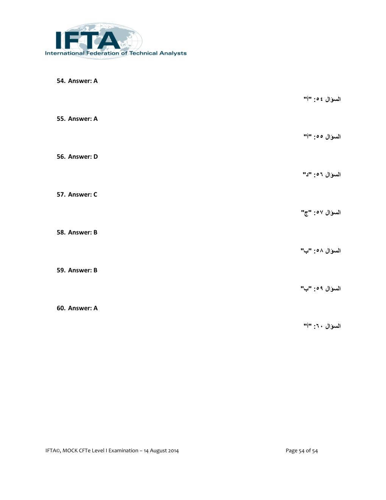
الإجابة: (ب) تُستخدم فقط مع مؤشرات الأسواق العامة.
الشرح:
- (ب) صحيحة: الـ Breadth يقيس مشاركة عدد كبير من الأسهم في الحركة، فلا يُحسب إلا لسوق أو مؤشر له مكونات (س1).
- (أ) خاطئة: السهم المنفرد لا «أسهم صاعدة وهابطة» داخله.
- (د) خاطئة: فخ «في بعض الحالات»؛ لا توجد حالة يُطبَّق فيها على سهم منفرد.
- (ج) خاطئة: كثير منها استباقي (New High–Low مقياس استباقي، والـ divergence في خط A/D يسبق القمم الكبرى)، فليست «معظمها متأخرة».
في الامتحان اختر: (ب).
س11 ★★ مؤشر التجميع (Summation index) مشتق من المؤشر التالي (CFTe I التجريبي، س60): إجابات CFTe I ص7
- أ. McClellan Oscillator
- ب. MACD
- ج. Arms Index
- د. A-D line
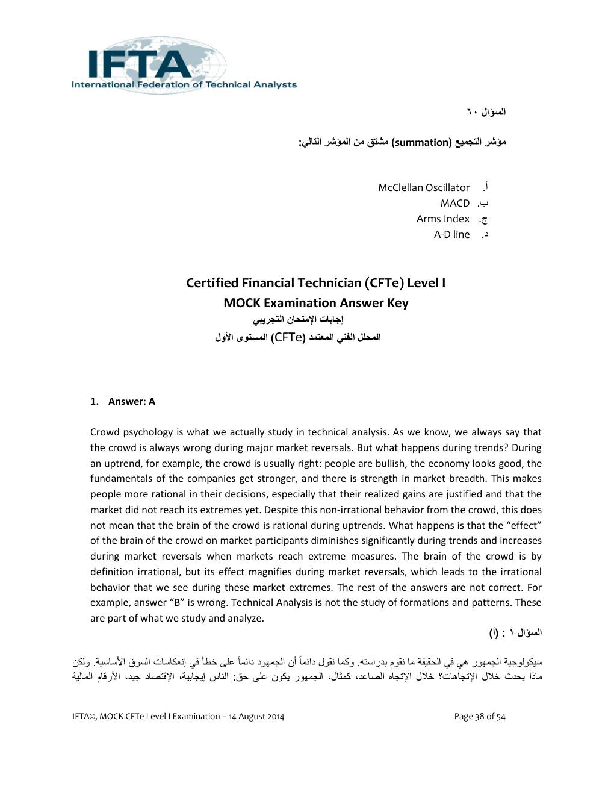
الإجابة: (أ) McClellan Oscillator.
الشرح:
- (أ) صحيحة: الـ Summation Index = المجموع التراكمي الجاري لقيم الـ McClellan Oscillator اليومية (س5).
- (ب) خاطئة: الـ MACD مؤشر زخم سعري (EMA12 − EMA26 للسعر)، لا علاقة له ببيانات الـ Breadth، وإن تشابهت فكرة «الفرق بين متوسطين».
- (ج) خاطئة: الـ Arms Index هو الـ TRIN، نسبة لا يُبنى منها الـ Summation.
- (د) خاطئة: فخ قوي: خط A/D هو أيضًا مجموع تراكمي، لكنه مجموع لـ (الصاعدة − الهابطة) مباشرة، لا لقيم الـ McClellan.
في الامتحان اختر: (أ).
س12 ★★ صف ثلاثة مقاييس للاتساع (Breadth) وكيف تُستخدم ومدى نجاحها. (CFTe II 2017، س6-1) إجابات 2017 ص6
الإجابة (من ملف الإجابات النموذجية):
- خط الصعود والهبوط (Advance/Decline line): المجموع التراكمي للصاعدة ناقص الهابطة. الاستخدام: الـ divergence بينه وبين المؤشر عند القمم، وقد سبق قممًا كبرى (1999–2000، و2007).
- New highs − New lows: اتساع القمم الجديدة يؤكد الصعود، وتناقصها عند مستويات أعلى للمؤشر تحذير؛ مفيد عند القمم والقيعان.
- نسبة الأسهم فوق متوسط 200 يوم: فوق نحو 70–80% تشبع لكنه صحي، وتحت نحو 20% قيعان استسلام.
مدى النجاح: سجل جيد في التحذير قبل القمم الكبرى لأن المشاركة تضيق أولًا، لكنها أقل دقة في التوقيت وقد تبقى متباينة لأشهر، فتحتاج تأكيدًا من السعر.
في الامتحان اكتب: ثلاثة مقاييس، لكل منها (التعريف ← الاستخدام)، ثم فقرة «مدى النجاح» في سطرين.
س13 ★★ اشرح مفهوم الـ divergence حين تتحرك مؤشرات الـ Breadth عكس مؤشر السوق؛ وكيف تشبه إشارة البيع بالـ Breadth إشارة البيع في نظرية داو؟ (CFTe II 2024 س5-2؛ و2017 س4-2) إجابات 2024 ص6 إجابات 2017 ص5
الإجابة:
- Divergence سلبي: المؤشر يصنع قمة جديدة ولا تؤكدها الـ Breadth (خط A/D، أو New highs − New lows، أو نسبة الأسهم فوق 200 يوم) ⇒ الصعود يحمله عدد أقل من الأسهم (الكبيرة غالبًا) بينما معظم الأسهم بدأت تهبط؛ وهذا يسبق القمم الكبرى عادة.
- Divergence إيجابي: المؤشر يصنع قاعًا جديدًا ولا تصنعه الـ Breadth ⇒ ضغط البيع يضيق والقاع يتكوّن.
- التشابه مع داو: كلتاهما إشارة عدم تأكيد (Non-confirmation). في داو: يصنع أحد المتوسطين (الصناعي أو النقل) قمة جديدة لا يؤكدها الآخر، ثم يكسر الاثنان قيعانهما السابقة. في الـ Breadth: يصنع المؤشر قمة جديدة لا يؤكدها خط A/D. في الحالتين يحمل الصعودَ جزءٌ يضيق من السوق؛ الـ divergence هو التحذير، وكسر القيعان السابقة هو التأكيد.
الشرح: الـ divergences تحذيرات قد تستمر طويلًا، فلا تبع على الـ divergence وحده؛ تصرّف عليه مع تأكيد من السعر (كسر قاع أو خط اتجاه).
في الامتحان ارسم: لوحتين، المؤشر في الأعلى بقمتين (الثانية أعلى) وخط A/D في الأسفل بقمتين (الثانية أدنى)، وخطين مائلين متعاكسين بين القمم، واكتب «عدم تأكيد = تحذير» و«كسر القاع = تأكيد».
س14 ★★ مؤشرا Breadth متضاربان: نسبة الأسهم التي تصنع قمة 4 أسابيع جديدة ضعيفة جدًا، لكن نسبة أكبر من الأسهم ما زالت فوق متوسط 200 يوم. صف حالة السوق ومرحلة الدورة واقترح استراتيجية. (CFTe II 2017، س5-3) إجابات 2017 ص6
الإجابة (من ملف الإجابات النموذجية):
- حالة السوق: الاتجاه طويل الأجل ما زال صاعدًا لمعظم الأسهم (فوق متوسط 200 يوم)، لكن الزخم قصير الأجل تلاشى (قمم 4 أسابيع قليلة) ⇒ تماسك أو تصحيح داخل سوق صاعدة ناضجة، لا سوق هابطة جديدة.
- مرحلة الدورة: مرحلة متأخرة من الصعود.
- الاستراتيجية: احتفظ بالمراكز الأساسية، ولا تطارد الصعود، وشدّد الوقف، واشترِ التصحيحات عند الدعوم في أقوى الأسهم؛ زِد التعرض حين تتسع القمم الجديدة مجددًا، وخفّض إذا بدأت نسبة الأسهم فوق متوسط 200 يوم في الهبوط أيضًا.
الشرح: المقياسان بأفقين مختلفين: قمم 4 أسابيع = قصير الأجل، ومتوسط 200 يوم = طويل الأجل. فالتضارب يعني أن الأفق القصير ضعف بينما الطويل سليم. القاعدة: اقرأ كل مقياس بأفقه، ثم احكم على المرحلة.
الـ Sentiment والرأي المعاكس
س15 ★★★ لماذا تُقرأ تطرفات الـ Sentiment عكسيًا (مبدأ الرأي المعاكس Contrary opinion)؟ المستوى 2 ص31 المستوى 2 ص32
الإجابة: لأنه حين يكون الجميع تقريبًا صعوديين بالفعل (أو هبوطيين)، لا يتبقى إلا القليل من قوة الشراء (أو البيع) الجديدة لمد الحركة؛ فالتطرف في أي من الاتجاهين يرجّح الانعكاس لا الاستمرار.
الشرح:
- المتفائل اشترى بالفعل؛ فإذا كان 90% من المتعاملين متفائلين فقد اشترى معظمهم، ولم يبقَ مشترون جدد يرفعون السعر.
- وبالعكس: إذا كان الجميع متشائمين فقد باع معظمهم، فلم يبقَ بائعون، وأي شراء صغير يرفع السعر.
- لذلك تُعامل القراءات المتطرفة كإشارات معاكسة، أما القراءات الوسطى فلا تعطي إشارة.
تنبيه: الـ Sentiment المتطرف حالة لا توقيت؛ قد يبقى متطرفًا مدة، فلا تتصرف إلا بتأكيد من السعر.
في الامتحان اكتب: الجملة المحورية «لا يتبقى إلا القليل من قوة الشراء الجديدة ⇒ التطرف يرجّح الانعكاس لا الاستمرار».
س16 ★★★ اقرأ مؤشرات الـ Sentiment: Bullish Consensus، وShort Interest Ratio، ونسبة نقدية الصناديق، والـ Margin debt، والـ Put/Call. المستوى 2 ص31 المستوى 2 ص32
الإجابة:
| المؤشر | المعادلة / القياس | القراءة |
|---|---|---|
| Bullish Consensus (Market Vane) | عيّنة أسبوعية من النشرات والتقارير السوقية بحسب درجة تفاؤلها | فوق 80% تفاؤل متطرف، وتحت 20% تشاؤم متطرف (إنذار معاكس) |
| Short Interest Ratio (حيث يُسمح بالبيع على المكشوف) | average daily short interest / average daily volume for the month |
1.8 فأكثر صعودي (قوة شرائية كامنة: تغطية مستقبلية للمراكز المكشوفة)، وتحت 1 هبوطي (Pring) |
| نسبة النقدية إلى الأصول في الصناديق | النقدية ÷ إجمالي قيمة المحفظة | منخفضة = الصناديق مستثمرة بالكامل ⇒ هبوطي؛ مرتفعة = ذخيرة للشراء ⇒ احتمال صعودي |
| Margin debt | أموال مقترضة من شركات الوساطة لزيادة القوة الشرائية | المرتفع جدًا إشارة خطر (هبوطي): ضغط بيع كامن وتسييل إجباري وطلبات تغطية هامش إذا انعطف السوق |
| Put/Call Ratio | put volume / call volume |
المرتفعة جدًا تشاؤم متطرف ⇒ صعودي؛ المنخفضة جدًا تفاؤل متطرف ⇒ هبوطي |
الشرح والحساب (أمثلة توضيحية، إجابة مقترحة):
- Short Interest Ratio: متوسط المراكز المكشوفة اليومي 9 ملايين سهم، ومتوسط الحجم اليومي 4 ملايين ⇒
9 ÷ 4 = 2.25⇒ فوق 1.8 ⇒ صعودي: البائعون على المكشوف سيضطرون لشراء ما يعادل 2.25 يوم تداول لتغطية مراكزهم. ولو كانت المراكز 3 ملايين ⇒3 ÷ 4 = 0.75⇒ تحت 1 ⇒ هبوطي (طلب تغطية قليل). - Put/Call: 1.2 مليون عقد put و0.8 مليون call ⇒
1.2 ÷ 0.8 = 1.5⇒ خوف مرتفع ⇒ قراءة صعودية بالمنطق المعاكس. - الـ put يعطي حق البيع بسعر محدد ويُشترى عند توقع الهبوط، والـ call حق الشراء ويُشترى عند توقع الصعود.
في الامتحان اكتب: الجدول بأعمدته الثلاثة؛ وتذكّر الأرقام: 80% / 20%، و1.8 / 1.
س17 ★★★ النقدية المرتفعة لدى الصناديق مقابل الـ Margin debt المرتفع: ما الفرق وكلاهما عن القوة الشرائية؟ المستوى 2 ص33
الإجابة: النقدية ذخيرة لم تُنفق بعد ⇒ صعودي؛ والـ Margin debt أُنفق بالفعل وهو بيع كامن ⇒ هبوطي.
الشرح:
- النقدية لدى الصناديق قوة شرائية مستقبلية: حين تُستثمر ترفع الأسعار.
- الـ Margin debt قوة شرائية استُخدمت بالفعل (بأموال مقترضة)، فلم تعد تضيف طلبًا جديدًا، بل إذا هبط السوق تأتي طلبات تغطية الهامش فيُجبر المقترضون على البيع.
- كلاهما «عن القوة الشرائية»، لكن أحدهما قبل الإنفاق والآخر بعده، ولذلك قراءتاهما متعاكستان.
في الامتحان اكتب: «النقدية ذخيرة (صعودي)، والـ margin debt أُنفق بالفعل وهو بيع كامن (هبوطي).»
س18 ★★ عرّف الـ Market sentiment واذكر ثلاثة مقاييس له. (CFTe II 2017، س2-2، 3 نقاط) إجابات 2017 ص4
الإجابة: الـ Market sentiment هو الحالة النفسية السائدة (تفاؤل أو تشاؤم) لدى المتعاملين، نقيسها لاكتشاف تطرف الجماهير، وتُستخدم عكسيًا: حين يكون الجميع تقريبًا متفائلين يكون المشترون قد دخلوا بالفعل.
ثلاثة مقاييس:
- Put/Call ratio: المرتفع = خوف وقاع محتمل، والمنخفض = اطمئنان زائد وقمة محتملة.
- الاستطلاعات (AAII وInvestors Intelligence): النسب المتطرفة للمتفائلين تحذّر من قمم، وللمتشائمين تحدد قيعانًا.
- VIX: القفزات الحادة تصاحب قيعان الذعر، والقراءات المنخفضة جدًا = اطمئنان زائد.
ومقاييس أخرى مقبولة: تقرير الـ COT، والـ Margin debt، ومستويات السيولة لدى الصناديق، والـ Bullish Consensus، والـ Short Interest Ratio.
الشرح: السؤال بـ 3 نقاط ⇒ نقطة للتعريف مع «يُستخدم عكسيًا»، ونقطتان للمقاييس مع طريقة قراءة كل منها.
س19 ★★ ما مؤشرا Sentiment اللذان يفيدان في التعرف على القمم الكبرى؟ (CFTe II 2024، س3-2) إجابات 2024 ص5
الإجابة:
- Put/Call ratio: القراءة المنخفضة جدًا تعني شراء calls أكثر بكثير من puts = تفاؤل متطرف؛ تُقرأ عكسيًا، فالقراءات الأقل بكثير من المعتاد تحذّر من قمة.
- استطلاعات Investors Intelligence وAAII: حين تبلغ نسبة المتفائلين مستويات متطرفة (مثلًا فوق 55–60% في Investors Intelligence، أو فارق bull–bear واسع جدًا في AAII) يكون كل من يريد الشراء قد اشترى.
مقبول أيضًا: VIX منخفض جدًا، أو مستوى قياسي للـ margin debt، أو انخفاض السيولة لدى الصناديق.
الشرح: الـ Sentiment المتطرف حالة لا توقيت، فلا تتصرف إلا حين يؤكد السعر (كسر خط اتجاه أو divergence).
س20 ★★ الرسم يوضح حركة سعر مؤشر FTSE 100 مع مؤشر الرأي الصاعد (Bullish opinion). آخر ملاحظة لكلا المؤشرين تقترح (CFTe I التجريبي، س58): إجابات CFTe I ص7
- أ. قراءة محايدة للمستثمرين مقارنةً بالسوق.
- ب. مؤشر الرأي الصاعد تحوّل من منطقة التشبع البيعي (oversold) مع احتمال تعافٍ إضافي.
- ج. الاتجاه الهابط لم ينتهِ، لكن لدينا الآن إشارة شراء مهمة في حركة السعر والمؤشر معًا.
- د. مؤشرات المشاعر مثل هذه قليلة القيمة في التحليل الفني وهي أقرب للتحليل الأساسي.
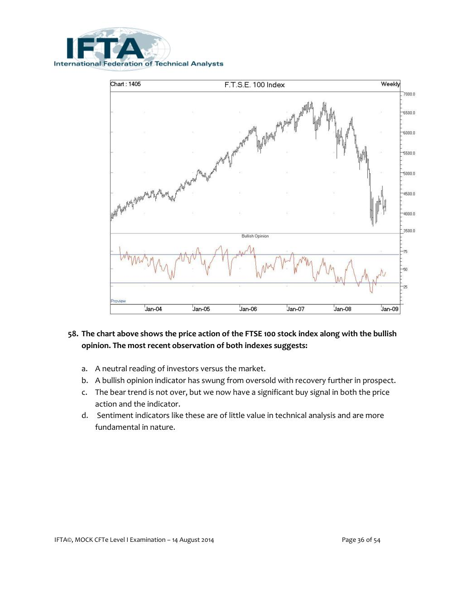
الإجابة: (ب) مؤشر الرأي الصاعد تحوّل من التشبع البيعي مع احتمال تعافٍ إضافي.
الشرح (قراءة الرسم خطوة بخطوة):
- السعر (اللوحة العليا): FTSE 100 صعد من نحو 4,000 (2003) إلى نحو 6,700 (2007)، ثم هبط بحدة في 2008 حتى قاع نحو 3,800 أواخر 2008، ثم ارتد إلى نحو 4,300–4,600 مع بداية 2009.
- مؤشر Bullish Opinion (اللوحة السفلى): يتذبذب بين خطين أفقيين (علوي نحو 70 وسفلي نحو 30). مع انهيار 2008 نزل تحت الخط السفلي (أدنى قراءة نحو 20) = تشاؤم متطرف = تشبع بيعي.
- آخر ملاحظة: المؤشر ارتفع من تحت الخط السفلي عائدًا نحو المنتصف (نحو 45–50)، بالتزامن مع ارتداد السعر من القاع.
- بمنطق الرأي المعاكس: التشاؤم المتطرف يعني أن البائعين باعوا بالفعل، والخروج منه = إعداد شراء عكسي، والتعافي قد يستمر ⇒ (ب).
لماذا الباقي خطأ؟
- (أ) خاطئة: المهم ليس الرقم الأخير وحده بل الحركة: المؤشر خرج للتو من منطقة تشاؤم متطرف، فهذه ليست قراءة «محايدة» بلا دلالة.
- (ج) خاطئة: تبالغ؛ لا توجد «إشارة شراء مهمة» في السعر: السعر ما زال تحت قممه السابقة في اتجاه هابط (قمم أدنى)، والارتداد لم يكسر بنية الهبوط. الإشارة في الـ Sentiment فقط.
- (د) خاطئة: مؤشرات الـ Sentiment أداة فنية معترف بها (مبدأ الرأي المعاكس)، وليست تحليلًا أساسيًا.
في الامتحان اختر: (ب).
س21 ★ ما تقرير Commitment of Traders (COT)؟ وكيف يُستخدم؟ (CFTe II 2017، س5-2) إجابات 2017 ص6
الإجابة:
- ما هو: تقرير أسبوعي تصدره هيئة CFTC (بيانات الثلاثاء تُنشر الجمعة)، يقسم العقود المفتوحة (open interest) في العقود الآجلة إلى ثلاث فئات: 1. Commercials: المتحوطون (المنتجون والمستخدمون الفعليون للسلعة). 2. Non-commercials: كبار المضاربين والصناديق. 3. Non-reportables: صغار المتداولين.
- الاستخدام: (1) الـ Commercials هم الطرف الأعلم، فتُتابع مراكزهم الصافية المتطرفة؛ (2) المضاربون يتبعون الاتجاه ويزدحمون عند نقاط الانعكاس، فتُقرأ مراكزهم المتطرفة عكسيًا؛ (3) يُتابع تغيّر الـ open interest لتأكيد الاتجاهات.
الشرح: الـ COT من أدوات الـ Sentiment لأنه يكشف تموضع كل فئة؛ والتطرف في مراكز المضاربين يعني أن معظمهم دخل بالفعل في الاتجاه نفسه، فيتكرر منطق الرأي المعاكس.
وقف الخسارة
س22 ★★★ اذكر أنواع وقف الخسارة الأربعة، وأيها يثبّت الربح أثناء الاتجاه؟ المستوى 2 ص31 المستوى 2 ص32
الإجابة:
| نوع الوقف | أين يوضع وماذا يفعل |
|---|---|
| Stop loss | يوضع تحت سعر الدخول (وفوقه للبيع على المكشوف)، ولا يُفعَّل إلا إذا تحركت الصفقة عكس الاتجاه المتوقع |
| Breakeven stop | يُنقل إلى سعر الدخول بعد أن تتحرك الصفقة في الاتجاه المواتي، لإلغاء مخاطر الهبوط على المركز |
| Trailing stop loss | يتحرك مع الصفقة في الاتجاه المواتي؛ من أفضل الأساليب لتثبيت الربح مع البقاء في اتجاه رابح |
| Profit (target) stop | مستوى خروج ثابت يُحدد بعد الدخول، ويُفعَّل بمجرد بلوغ السعر هدف الربح المحدد مسبقًا |
جواب الشق الثاني: الـ Trailing stop loss.
الشرح (مثال رقمي توضيحي، إجابة مقترحة، بأرقام الرسم):
- شراء عند 100، والوقف الأول عند 94 ⇒ أقصى خسارة
100 − 94 = 6نقاط. - السعر يصل 110 ⇒ ننقل الوقف إلى 100 (Breakeven) ⇒ أقصى خسارة الآن
100 − 100 = 0. - السعر يواصل إلى 122 ⇒ الـ Trailing stop صعد إلى 116 ⇒ ربح مضمون
116 − 100 = 16نقطة حتى لو انعكس السعر. - هدف الربح الثابت عند 132: إذا بلغه السعر نخرج بربح
132 − 100 = 32. - الـ Trailing يصعد مع السعر ولا ينزل أبدًا؛ ولهذا يثبّت الربح ويُبقيك في الاتجاه الرابح.
في الامتحان اكتب: الأنواع الأربعة بسطر لكل منها، ثم «الـ Trailing stop يثبّت الربح أثناء الاتجاه».
نقاط امتحانية
- الـ Breadth لا يُطبَّق على سهم منفرد (بيانات السوق كله)؛ مؤشرات الحجم تستخدم حجم الورقة نفسها. (CFTe I س59 = ب)
- McClellan = EMA19 − EMA39 لـ (Adv − Dec)؛ Summation = مجموعه التراكمي (CFTe I س60 = أ)؛ A/D طويل الأجل.
- المبتكرون: McClellan 1969، Arms (TRIN) 1967، Chande (Thrust) ديسمبر 1993، Granville (OBV)، Chaikin (A/D)، Quong وSoudack (MFI)، Wilder (ADX/RSI).
- الـ TRIN يتحرك عكس السعر (صاعده هبوطي)، غير محدود في جانبه الهبوطي ويخلط المدخلات؛ الـ Thrust Oscillator محدود ±100 ويعالج العيبين. مثال: TRIN =
(1,500/1,000) ÷ (600/900) = 2.25بينما Thrust = 0. - الإشارات الثلاث: عبور الصفر (أو 50%)، الـ divergence مقابل المؤشر، التشبع.
- Divergence = عدم تأكيد (تحذير)، وكسر القيعان = التأكيد؛ مثل إشارة داو.
- Bullish Consensus: فوق 80% وتحت 20% إنذار معاكس؛ Short Interest Ratio: 1.8 فأكثر صعودي، تحت 1 هبوطي.
- نقدية الصناديق المرتفعة صعودية (ذخيرة)، والـ Margin debt المرتفع هبوطي (أُنفق)؛ Put/Call المرتفع صعودي.
- FTSE 100 + Bullish opinion (CFTe I س58 = ب): خرج من التشبع البيعي مع احتمال تعافٍ.
- الوقف الأربعة: Stop loss، Breakeven، Trailing (يثبّت الربح)، Profit target.
الامتحان
شكل الامتحان وطريقة الإجابة
في هذا الموضوع
الخلاصة: هذه صفحة «كيف تُجيب»: شكل كل ورقة وزمنها، ونصائح المحاضرين في طريقة الإجابة، وسؤال التقرير كاملًا (نص السؤال + صور الرسوم 1–7 + تقرير نموذجي مكتوب إطارًا إطارًا لورقتي 2017 و2024). أهم ثلاثة أمور: (1) الدرجة على الإشارة الموصوفة بالرقم والمستوى لا على الحكم المجرد؛ (2) في المقارنات كلمة واحدة في وسط السؤال تحدد الإجابة، والأسماء تُكتب بأسمائها اليابانية والدقيقة؛ (3) في التقرير Bias واحد لكل مستثمر مع دخول ووقف وإعادة دخول كمستويات، وبلا Bullet points.
لا يُسأل عنه: في CETA الأسئلة من البريزنتيشن والجلسات المسجلة فقط، لا من الأحاديث الجانبية المتقدمة. أسئلة الثلاث نجوم ص9 جلسات الدورات ص48
شكل الأوراق
س1 ★★ ما شكل ورقة CETA المستوى الثالث وزمنها؟ وكيف توزّع وقتك؟ جلسة RS ص1 جلسات الدورات ص48
الإجابة: 3 ساعات؛ أسئلة إجابة قصيرة (Short answers) ومقال قصير، ومقالية واختيار من متعدد؛ وسؤال تقرير (Level 3: طويل ومتوسط وقصير، Level 2: طويل وقصير)؛ وسؤال القوة النسبية التحليلي ≈ 15% من الدرجة.
الشرح:
- قاعدة الوقت: كل سؤال يأخذ من الوقت نسبة درجته نفسها. سؤال الـ RS = 15% ⇒ 0.15 × 180 دقيقة = 27 دقيقة (لا 35 دقيقة كما استغرق شرحه في الجلسة).
- المواد: الإحصاء، P&F، Ichimoku، Kagi، Renko، القوة النسبية، Fibonacci، الدورات الزمنية، الاقتصاد (8 موضوعات)، وإليوت.
- النوع: «إجابة قصيرة ومقال قصير» — اكتب المطلوب بدقة ولا تفتح موضوعات جانبية.
س2 ★★ ما شكل CFTe II وتوزيع درجاته؟ إجابات 2017 ص1 إجابات 2024 ص1
الإجابة: مقالية؛ 3.5 ساعة (4.5 للنسخة العربية في 2017، والأسئلة نفسها)؛ النجاح 65 من 100.
| السؤال | المحتوى | الدرجة |
|---|---|---|
| 1 (أ + ب) | أ: تقرير S&P 500 متعدد الأطر من الرسوم 1–7؛ ب: إعادة توزيع المحفظة بالـ RS من الرسوم 8–13 | 40 |
| 2 | إجباري، ثلاثة فروع (2017: 4 + 3 + 3؛ 2024: 5 + 3 + 2) | 10 |
| 3–7 | فرعان من كل سؤال × 5 درجات | 50 |
الشرح: الحساب: 40 + 10 + (5 أسئلة × 2 فرع × 5) = 40 + 10 + 50 = 100. وفي 3.5 ساعة = 210 دقيقة: السؤال 1 ≈ 0.40 × 210 = 84 دقيقة، والسؤال 2 ≈ 21 دقيقة، وكل فرع من 3–7 ≈ 10.5 دقيقة. ابدأ كل إجابة في صفحة جديدة.
س3 ★★ ما شكل CFTe I؟ وما التنبيهان في مفتاح الامتحان التجريبي؟ إجابات CFTe I ص1
الإجابة: اختيار من متعدد بأربعة بدائل؛ 120 سؤالًا في الامتحان الحقيقي (التجريبي 60 بالنسب نفسها). أكبر الحصص: المؤشرات والمذبذبات (12 من 60)، ثم النماذج السعرية (9).
الشرح:
- س42: اختر B، مع أن نص الخيار فيه خطأ مطبعي؛ التعريف الصحيح للـ Black Marubozu: الافتتاح = القمة والإغلاق = القاع (شمعة سوداء بلا ظلال).
- س55: اختر A.
- بعض الأسئلة على رسم (س9، س10، س19، س21، س33، س39، س45–46، س58): انظر إلى الرسم قبل البدائل، واسأل: ما الاتجاه؟ وأين المؤشر من نطاقه؟
طريقة الإجابة (نصائح المحاضرين)
س4 ★★★ كيف تقرأ سؤال المقارنة؟ وبأي أسماء تكتب الموجات والنماذج؟ أسئلة الثلاث نجوم ص9
الإجابة:
- في أسئلة المقارنة كلمة واحدة في وسط السؤال تحدد الإجابة؛ اقرأه ببطء.
- اذكر موجات الإيشيموكو بأسمائها اليابانية (I وV وN وY وP وS)، لا بالوصف الغربي (Higher highs…)، وأنماط الشموع بأسمائها الدقيقة.
- يحب الأسئلة التي تجمع بين موجات Elliott وموجات Ichimoku، وإجابتها سطر واحد.
- توقّع إجابة قصيرة ومقالًا قصيرًا، والأسئلة من المادة فقط.
الشرح (أمثلة على «الكلمة الواحدة»):
- CFTe I س30: «القيمة الحقيقية للـ Histogram مقارنة بالـ MACD نفسه» ⇒ الإجابة الـ divergences، لا عبور الصفر (الظاهر على MACD أصلًا).
- «في الاتجاه الصاعد» مقابل «في الاتجاه العرضي» تقلب إشارة Stochastic تحت 80 من صالحة إلى خاسرة.
- «Impulse» مقابل «Diagonal» تقلب قاعدة دخول الموجة 4 في منطقة الموجة 1 (ممنوع في الـ Impulse).
- مثال سطر الجمع بين المدرستين (إجابة مقترحة): «Elliott wave 3 corresponds to the Ichimoku N wave extension; a completed 1-2-3 is an N wave.»
في الامتحان اكتب: المصطلح الدقيق أولًا (Kijun-sen، N wave، Evening Star)، ثم الشرح في جملة.
س5 ★★★ ما القاعدة الذهبية في وصف أي رسم أو مؤشر؟ الجلسات ص23 الجلسات ص24
الإجابة: صِف الشكل ثم احكم: لا تكتب «Outperforming» أو «الـ RSI كويس» وحدها؛ اذكر ما تراه (قاع أعلى وقمة أعلى، كسر مقاومة عند رقم، تقاطع، divergence فعلي) ثم الخلاصة. «اعتبر أن المصحِّح لا يعرف شيئًا».
الشرح:
- الخلاصة وحدها = نصف درجة الجزئية في سؤال الـ RS.
- في التقرير: المؤشر المذكور كحكم («الـ RSI كويس») لا يأخذ شيئًا؛ والإشارة الموصوفة («الـ RSI الشهري عند 79 في منطقة التشبع، عند المستوى الذي سبق تماسك 2014») تأخذ الدرجة.
- ادعاء إشارة غير موجودة (divergence غير موجود) = خصم 3، وإغفال إشارة معاكسة واضحة = خصم 3.
في الامتحان اكتب (نموذج): «The monthly MACD (131) is above its signal line but below its 2014–2015 peak (≈ 150) while price is much higher, a long-term negative divergence.» — الرقم + المستوى + الإشارة + المعنى.
س6 ★★★ ما خطوات سؤال إعادة توزيع المحفظة بالقوة النسبية باختصار؟ جلسة RS ص5 جلسة RS ص7
الإجابة: المؤشرات على منحنيات RS لا الأسعار ← اقرأ تعليق كل رسم (المقياس، Inverted؟، العائد أم السعر؟) ← نظرة سريعة وكتابة Out/Under بالقلم ← رسمًا رسمًا: سعر (مرة واحدة لكل سوق) ← RS ← كل مؤشر ← سطر ملخص لكل رسم ← ترتيب متسق ← أوزان مجموعها 100% بلا صفر.
الشرح:
- الترتيب يُستخرج بعدّ «الانتصارات» في الأحكام الستة: 2017 ⇒ Brent (3) > SPX (2) > Gold (1) > T-Note (0) ⇒ 40/23/22/15. و2024 ⇒ Gold ≈ Oil > SPX > T-Note ⇒ 35/35/20/10 (S&P/Gold/Oil/T-Note).
- الحل الكامل رسمًا رسمًا مع صور الرسوم 8–13 للورقتين في صفحة القوة النسبية.
سؤال التقرير (ESTA وCFTe II 1-أ)
س7 ★★ ما المطلوب في سؤال التقرير؟ وبأي ترتيب يُكتب كل إطار؟ إجابات 2017 ص1
الإجابة: نص ESTA: «Please analyze this index from a long-term and short-term point of view. Your answer should include major and minor trends, major and minor support and resistance levels, any important formations, and any signals that show potential strength or weakness on the chart. Your answer should also include the trading tactic that should be used by a long-term investor, and a short-term investor, as well as the recommended money management technique.» (Level 3 يضيف الـ medium term.)
لكل إطار أربع فقرات بالترتيب:
- الاتجاه السابق — سمِّ الرسم أولًا («بالنظر إلى الرسم السنوي…»)، ومن أين جاء السوق، وما النموذج أو الكسر الذي غيّر الاتجاه.
- الاتجاه الحالي من السعر وحده — الاتجاه، والمستويات بالأرقام (Major للطويل، Minor للقصير، والتاريخية)، والنماذج مربوطة بتاريخ أو مستوى أو حرف.
- المؤشرات واحدًا واحدًا — الإشارة الفعلية، هل تؤكد أم تعارض، وأي إشارة معاكسة.
- Conclusion — صاعد أم هابط، مع المستوى الذي يبقيها («طالما فوق…»).
ثم التوصية: Bias واحد لكل مستثمر + Entry وStop وRe-entry + إدارة المال + السيناريو البديل. القصير = 3 أسابيع إلى 3 شهور.
الشرح:
السبب في الترتيب: المصحح يصحح بجدول (س9)؛ كل بند في الجدول يقابل فقرة؛ فإن كتبت بالترتيب نفسه وجد المصحح كل درجة في موضعها.
س8 ★★★ (CFTe II أكتوبر 2017، السؤال 1-أ) الرسومات البيانية من 1 إلى 7 هي رسوم بيانية لمؤشر S&P 500 لإطارات زمنية مختلفة. حلّل هذه الرسومات من منظور على المدى الطويل والمتوسط والقصير، مبينًا: الاتجاهات السائدة في الإطارات الزمنية المختلفة، ومستويات الدعم والمقاومة، وعلامات الضعف والقوة، بالإضافة إلى المؤشرات والمتوسطات المتحركة الموجودة على الرسوم؛ وتوقعاتك وتوصياتك للاتجاه المستقبلي شاملًا وجهات النظر القصيرة والمتوسطة والطويلة مدعومة بتحليل فني مقبول؛ وما توصياتك لكل من العملاء على المدى الطويل والقصير مع شرح تكتيك المتاجرة وأسلوب إدارة المال لمن هم داخل السوق وأولئك الذين هم خارج السوق تمامًا. (ملاحظة: الأشياء التي تضيفها على الرسم البياني تشكّل جزءًا هامًا من تحليلك.) إجابات 2017 ص1 إجابات 2017 ص2
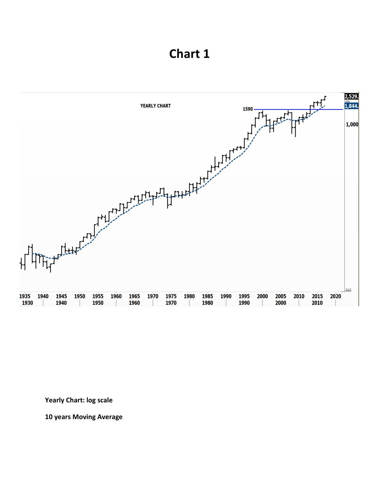
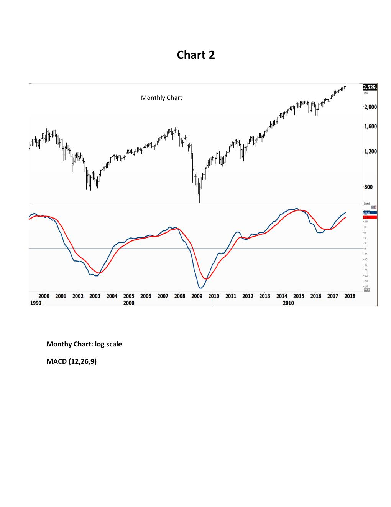
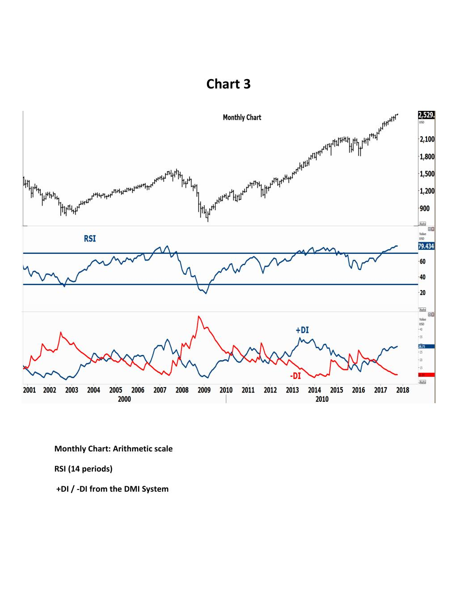
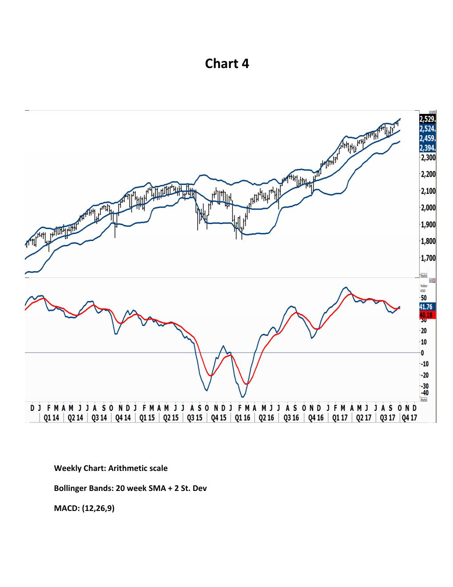
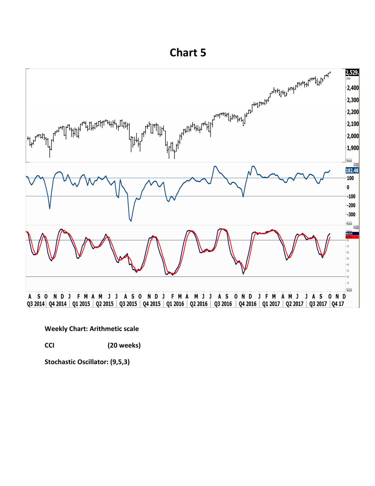
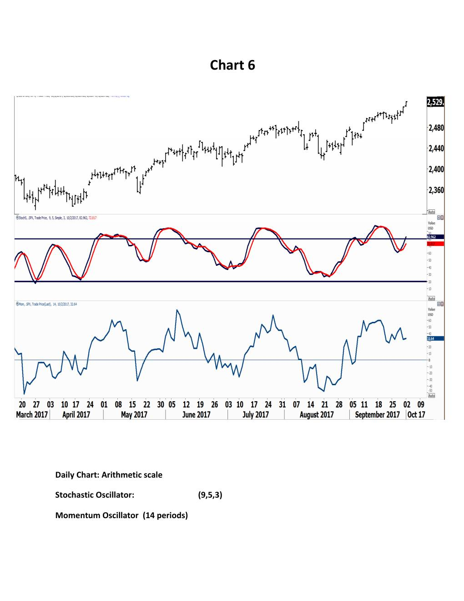
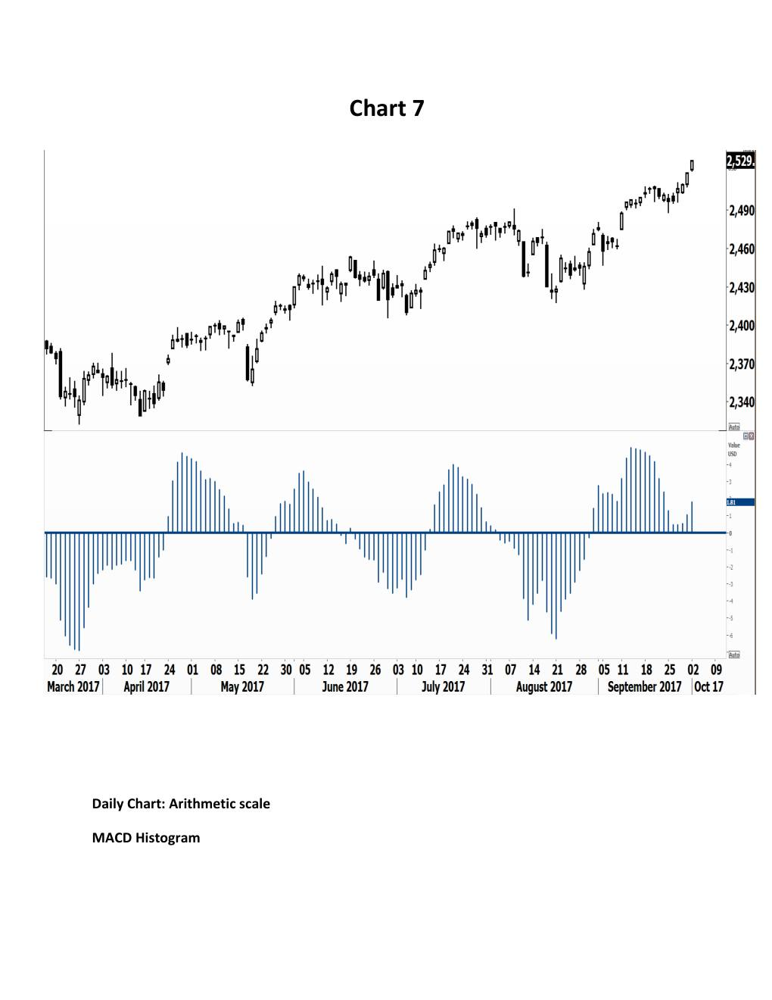
الإجابة (تقرير نموذجي، بالترتيب الذي يُكتب به؛ في الامتحان يُكتب فقرات متصلة بلا عناوين):
أولًا — ما ترسمه على الرسوم (له درجات):
| الرسم | ما تضيفه |
|---|---|
| 1 | خط يصل قمتي 2000 و2007 عند 1,590 (double top)، وسهم عند اختراق 2013، والهدف المقيس ≈ 2,410 |
| 2 | مستطيل حول نطاق 1,810–2,130 (2015–2016)، وخط يصل قمم MACD الشهري (2014–2015 مقابل الآن) لإظهار الـ divergence |
| 3 | دائرة على RSI عند 79، وإشارة إلى اتساع الفجوة بين +DI و−DI |
| 4 | تظليل حركة السعر على الحد العلوي لـ Bollinger، وتحديد 2,459 و2,394، ودائرة على تقاطع MACD |
| 6–7 | خط اتجاه يصل القيعان 2,322 ← 2,352 ← 2,405 ← 2,417 ← 2,488، وسهم عند اختراق 2,510، وخط يصل قمم الـ Momentum لإظهار الـ divergence |
ثانيًا — المدى الطويل (الرسوم 1–3):
- الاتجاه السابق: بالنظر إلى الرسم السنوي (لوغاريتمي، متوسط 10 سنوات) نجد أن S&P 500 بقي من 2000 إلى 2013 محبوسًا تحت 1,590 (قمتا 2000 و2007 = double top)، وكان قاع 2009 قرب 670.
- الاتجاه الحالي: اختراق 1,590 في 2013 أنهى سوقًا عرضية دامت 13 عامًا وأعاد الـ secular bull market. ارتفاع القاعدة ≈ 1,590 − 770 = 820 ⇒ الهدف 1,590 + 820 ≈ 2,410، وقد تجاوزه. السعر 2,529 أعلى بكثير من متوسط 10 سنوات الصاعد (1,844).
- المؤشرات: الرسم الشهري: بعد تماسك 2015–2016 بين 1,810 و2,130 بدأ اختراق نهاية 2016 موجة جديدة؛ الـ MACD الشهري (131) فوق خط الإشارة وصاعد (إيجابي)، لكنه أقل من قمته في 2014–2015 (≈ 150) والسعر أعلى بكثير ⇒ divergence سلبي طويل الأجل. الرسم 3: RSI الشهري 79 في منطقة التشبع الشرائي (المستوى الذي سبق تماسك 2014 و2015)، و+DI (28.8) أعلى بكثير من −DI (≈ 9) فيؤكد الاتجاه الصاعد.
- Conclusion: الرؤية طويلة الأجل صاعدة لكنها ممتدة، طالما فوق الدعوم الرئيسية 2,130 (قمم 2015 التي تحولت دعمًا) ثم 1,810 (قاع 2016).
ثالثًا — المدى المتوسط (الرسمان 4–5):
- السعر وBollinger: منذ اختراق نوفمبر 2016 يتحرك بين الحد الأوسط والعلوي ويلمس العلوي الآن (العلوي 2,524، الأوسط 2,459، السفلي 2,394) — نمط اتجاه صاعد قوي.
- MACD الأسبوعي: عاد للتو فوق خط الإشارة (41.8 مقابل 40.2) = إشارة شراء متجددة بعد تماسك الصيف، لكن قمته أقل من قمة مارس 2017 (≈ 58) ⇒ divergence سلبي متوسط المدى.
- CCI (20) وStochastic (9,5,3): CCI عند 182 (قوة فوق +100)، والـ Stochastic %K 91 فوق %D 81 في التشبع الشرائي؛ كلاهما يؤكد الزخم الصاعد رغم الامتداد.
- Conclusion: صاعدة، طالما فوق 2,459 (SMA 20 أسبوعًا) ثم 2,417 (قاع أغسطس) ثم 2,394 (الحد السفلي).
رابعًا — المدى القصير (الرسمان 6–7):
- السعر: سلسلة قيعان صاعدة 2,322 (أبريل)، 2,352 (مايو)، 2,405 (يوليو)، 2,417 (أغسطس)، 2,488 (نهاية سبتمبر)، واخترق للتو إلى قمة جديدة 2,529 فوق قمم سبتمبر عند 2,510.
- المؤشرات: Stochastic اليومي (9,5,3) أعطى تقاطع شراء (83 مقابل 73)؛ Momentum (14) موجب (33) لكنه أقل بكثير من قمة سبتمبر (≈ 60) ⇒ divergence سلبي قصير؛ MACD Histogram عاد موجبًا (+1.8) فيؤكد الموجة الجديدة، وإن كانت أعمدته أقصر من سبتمبر.
- Conclusion: صاعدة لكن الزخم يضعف، والدعوم القصيرة 2,490 و2,417.
خامسًا — التوصيات:
| العميل | داخل السوق | خارج السوق |
|---|---|---|
| طويل الأجل | احتفظ. الوقف: إغلاق شهري تحت 2,394، والأوسع تحت 2,130. الـ divergences تدعو لرفع الوقف لا للبيع | اشترِ على التصحيحات: النصف عند 2,490–2,460 والنصف قرب 2,420، والوقف تحت 2,390 |
| قصير الأجل | احتفظ بمركز الاختراق، وارفع الوقف إلى 2,485 (تحت قاع 2,488)، واجنِ أرباحًا جزئية فوق 2,560 | اشترِ عند العودة إلى 2,490–2,510 (إعادة اختبار الاختراق) والوقف 2,480، والهدف 2,560–2,600؛ لا تطارد الامتداد في التشبع |
- إدارة المال: خاطر بـ 1–2% من رأس المال في الصفقة؛
حجم المركز = المبلغ المعرّض للخطر ÷ (الدخول − الوقف). مثال: محفظة 100,000 ومخاطرة 1% = 1,000؛ دخول 2,500 ووقف 2,480 ⇒ 1,000 ÷ 20 = 50 وحدة (عقد/سهم مؤشر). ادخل على دفعات عند التصحيحات، وارفع الوقف تحت كل قاع أعلى. - السيناريو البديل: إغلاق يومي تحت 2,488 يجعل الاختراق فاشلًا، وعندها تشير divergences الـ MACD الشهري والأسبوعي والـ Momentum اليومي إلى تصحيح نحو 2,417–2,394.
الشرح (لماذا هذا الشكل يأخذ الدرجة): كل فقرة تقابل بندًا في جدول التصحيح (س9): الاتجاه السابق (4)، الحالي بالأرقام (9)، النماذج مربوطة (4)، المؤشرات واحدًا واحدًا مع الإشارات المعاكسة — هنا الـ divergences (6)، Conclusion بمستوى (2)؛ والتوصية: Bias واحد لكل مستثمر (صاعد للاثنين)، ودخول ووقف وإعادة دخول كأرقام، وإدارة مال مسماة، وسيناريو بديل بمستوى. لاحظ أن الـ divergences السلبية ذُكرت ولم تُغفل (إغفالها خصم 3)، لكنها لم تقلب الـ Bias لأن السعر ما زال يصنع قممًا أعلى.
في الامتحان اكتب (أول فقرتين نموذجًا): «Looking at the yearly chart (Chart 1), the S&P 500 was trapped below the 1,590 double top of 2000 and 2007 for thirteen years, with the 2009 low near 670. The breakout above 1,590 in 2013 (point A) ended this sideways market and resumed the secular bull market; the measured target of about 2,410 has already been exceeded, and the index at 2,529 is well above its rising ten-year average at 1,844. ...»
تنبيه: لا Bullet points ولا عناوين في ورقة الامتحان؛ لغة واحدة؛ كل رقم مكتوب. والأرقام هنا من ملف «أفضل الإجابات» (قراءة بالعين؛ القراءة في حدود قريبة مقبولة).
س9 ★★ (CFTe II أبريل 2024، السؤال 1-أ) نفس السؤال على رسوم S&P 500 من 1 إلى 7 (سنوي لوغاريتمي مع EMA 10 سنوات؛ شهري لوغاريتمي مع EMA 20 شهرًا وMACD؛ شهري مع RSI و±DI؛ أسبوعي مع Bollinger وMACD؛ أسبوعي مع CCI وStochastic؛ يومي مع Stochastic وMomentum؛ يومي مع MACD Histogram): حلّل من منظور طويل ومتوسط وقصير الأجل، وأعطِ توصياتك وتكتيك المتاجرة وإدارة المال لمن هم داخل السوق وخارجه. إجابات 2024 ص1 إجابات 2024 ص2
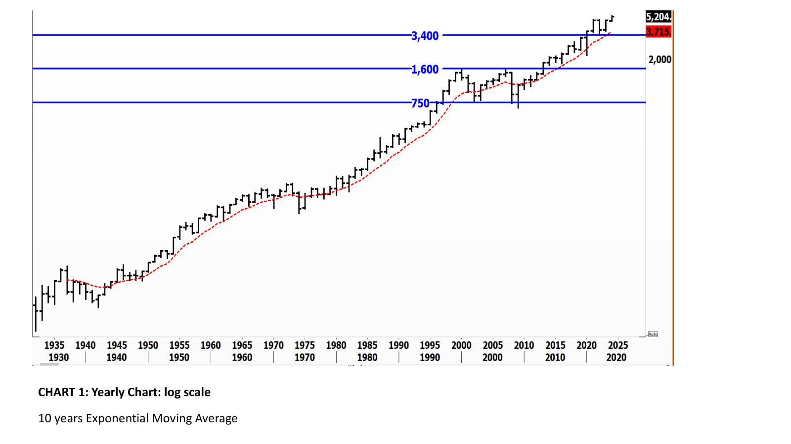
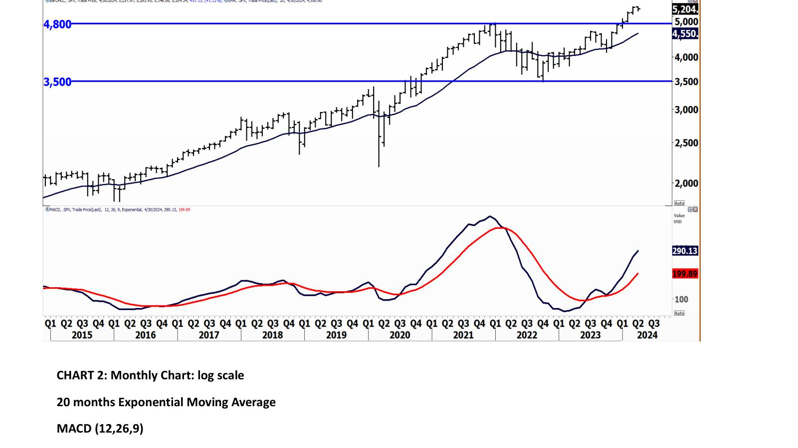
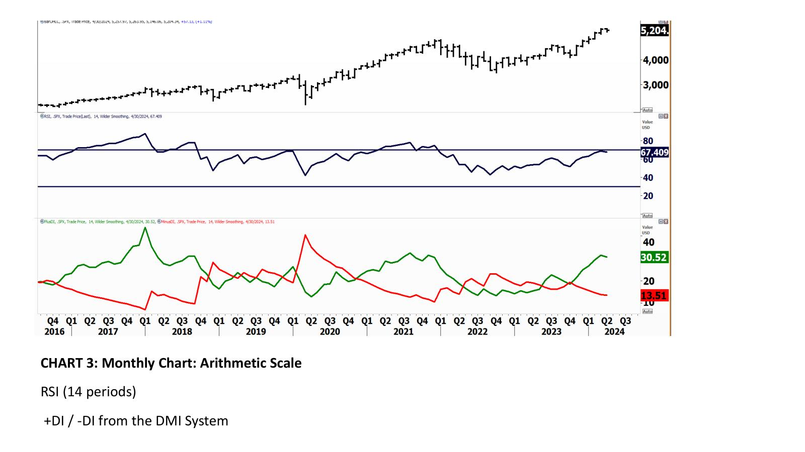
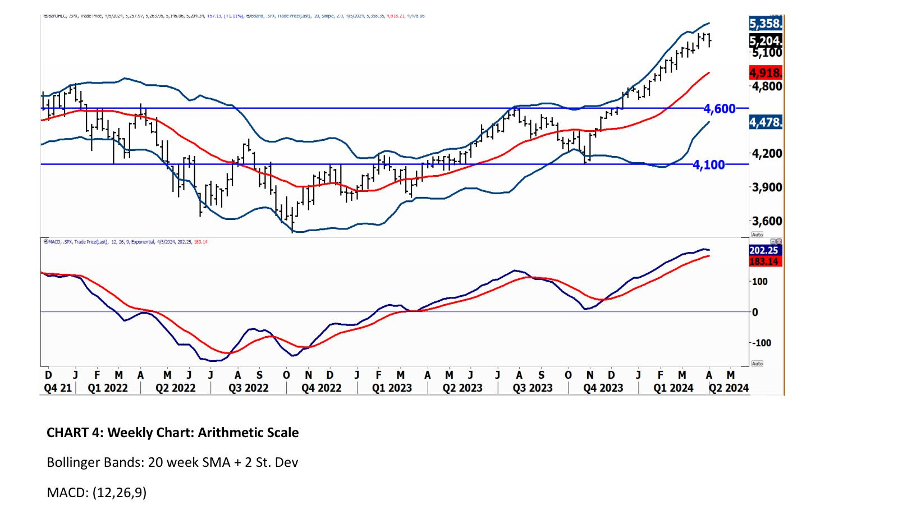
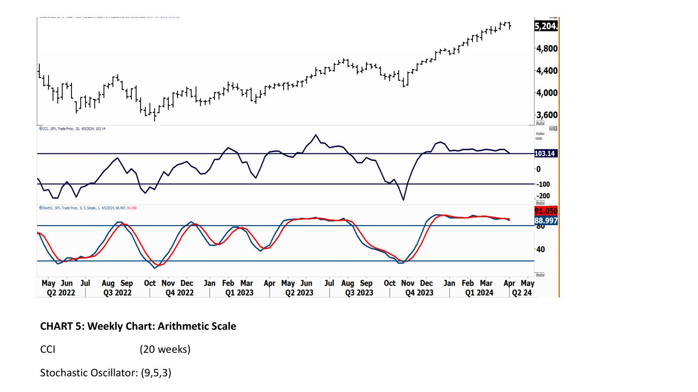
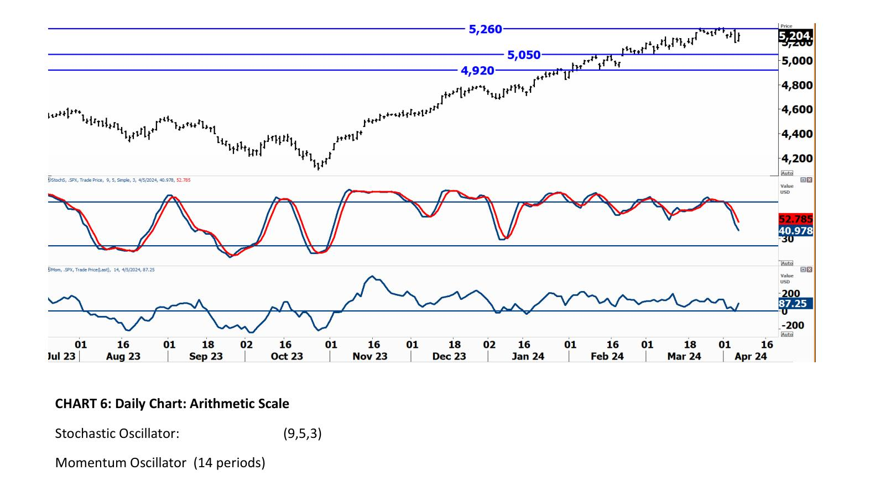
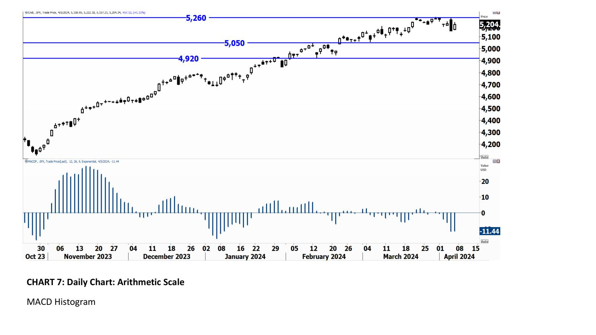
الإجابة (تقرير نموذجي مختصر بالترتيب):
- الطويل: السنوي: secular uptrend منذ الأربعينيات؛ النطاق العرضي 2000–2013 بين 750 و1,600 (double top لم يكتمل لأن 750 صمد)؛ اختراق 1,600 في 2013 حقق هدفه (1,600 + 850 ≈ 2,450)؛ ثم اخترق 3,400 في 2020 وصار الدعم الرئيسي. السعر 5,204 فوق EMA 10 سنوات (3,715). الشهري: صحّح من 4,800 (يناير 2022) إلى 3,500 (أكتوبر 2022) ثم قاعدة لعامين، واخترق 4,800 في يناير 2024 ⇒ الهدف 4,800 + (4,800 − 3,500) = 6,100؛ فوق EMA 20 شهرًا (4,550)؛ MACD 290 فوق الإشارة 200 وفوق الصفر. RSI الشهري 67 داخل النطاق الصاعد 40–80، و+DI 30.5 مقابل −DI 13.5 والفجوة تتسع. Conclusion: صاعدة، الدعوم 4,800 (polarity) ثم 4,550 ثم 3,500.
- المتوسط: احترم 4,100 (أكتوبر 2023) واخترق 4,600 في ديسمبر؛ يمشي على الحد العلوي لـ Bollinger (5,358) وSMA 20 أسبوعًا (4,918) يصعد تحته؛ MACD 202 فوق الإشارة 183 لكنه يتسطّح وينحني. CCI فوق +100 لكنه ينزلق (103)؛ Stochastic فوق 80 منذ أربعة أشهر و%K 89 نزل تحت %D 91 — أول تحذير. Conclusion: صاعدة لكنها ممتدة؛ التصحيح نحو ≈ 4,920 صحي، ولا يتضرر الاتجاه إلا بإغلاق أسبوعي تحت 4,600.
- القصير: قمة تاريخية 5,260؛ شمعة سوداء طويلة يوم 4 أبريل؛ تعافٍ إلى 5,204؛ الدعوم 5,050 و4,920. Stochastic اليومي تقاطع لأسفل من فوق 80 إلى 41 مقابل 53 = بيع قصير؛ Momentum موجب (87) لكن قممه هابطة منذ نوفمبر (≈ 250 ← 200 ← 150) = divergence سلبي؛ Histogram سالب (−11.4). Conclusion: تماسك أو تصحيح نحو 5,050 وربما 4,920 قبل استئناف الصعود.
- التوصيات: طويل الأجل داخل السوق: احتفظ، الوقف إغلاق شهري تحت 4,550 (والأوسع تحت 4,100)، الهدف 6,100؛ خارج السوق: نصف عند 5,050–4,920 ونصف عند إغلاق فوق 5,260. قصير الأجل داخل السوق: اجنِ ربحًا جزئيًا قرب 5,260، وارفع الوقف إلى 5,040، وأعد الشراء بإغلاق يومي فوق 5,260 (الهدف 5,358 ثم 5,500)؛ خارج السوق: لا تطارد؛ اشترِ عند 5,050 مع شمعة انعكاس صاعدة أو إشارة شراء Stochastic والوقف 4,900، أو اشترِ اختراق 5,260 والوقف 5,140.
- إدارة المال: 1–2% مخاطرة؛
حجم المركز = المخاطرة ÷ (الدخول − الوقف)؛ الدخول على دفعات ما دامت المؤشرات القصيرة سلبية. - السيناريو البديل: إغلاق يومي تحت 4,920 يمد التصحيح نحو 4,800–4,600، مع الاحتفاظ بالمراكز الطويلة ما دام الإغلاق الشهري فوق 4,550.
الشرح: لاحظ أن القصير يخالف الطويل هنا (تصحيح قصير داخل اتجاه طويل صاعد)، وهذا مسموح ما دام لكل مستثمر Bias واحد واضح. وما يُرسم على الرسوم: مستطيل 750–1,600، ومستطيل القاعدة 3,500–4,800 وسهم الاختراق والهدف 6,100، وتظليل نطاق RSI 40–80، وخط الاتجاه الأسبوعي من قاع أكتوبر 2023، والمستويات 5,260 و5,050 و4,920، وخط divergence الـ Momentum، ودائرة على شمعة 4 أبريل.
س10 ★★ كيف تُوزَّع درجات التقرير (النظام التدريبي)؟
الإجابة:
| القسم | الدرجة |
|---|---|
| الطويل: سابق 4 · حالي ومستويات 9 · نماذج 4 · مؤشرات 6 · Conclusion 2 | 25 |
| المتوسط (L3 فقط): سابق 2 · حالي ومستويات ونماذج 6 · مؤشرات 5 · Conclusion 2 | 15 |
| القصير (مستويات Minor): بالتوزيع نفسه | 15 |
| التوصية: Tactic لكل مستثمر 15 · Bias واحد 4 · Money management 4 · Stop وRe-entry كمستويات 4 · السيناريو البديل 3 | 30 |
| العرض: النظام 5 · التأشير على الرسوم 5 · المقال واللغة 5 | 15 |
| المجموع | 100 |
الشرح: أكبر كتلتين: التوصية (30) ثم الطويل (25) ⇒ لا تنفق وقتك كله في الوصف وتترك التوصية مختصرة. وفي Level 2 يُحذف قسم المتوسط (15) ومستثمر المتوسط في التوصية (5) ⇒ 100 − 15 − 5 = 80، وتُعلن الدرجة كنسبة مئوية من 80. (نظام تدريبي، ليس توزيع ESTA الرسمي.)
س11 ★★ ما الأخطاء التي تُخصم عليها الدرجات في التقرير؟
الإجابة:
| الخطأ | الخصم |
|---|---|
| إجابة ذات وجهين («اشترِ لو اخترق وبِع لو كسر») خارج نطاق عرضي حقيقي | Bias = صفر + خصم 3 |
| ادعاء إشارة غير موجودة (Divergence أو Failure swing) | خصم 3 عن كل حالة |
| إغفال إشارة معاكسة واضحة | خصم 3 |
| المؤشر كحكم («الـ RSI كويس») | لا يأخذ شيئًا |
| Bullet points | درجة المقال واللغة صفر |
| مستويات بلا أرقام | تضيع درجاتها |
الشرح: الإجابة ذات الوجهين لا تلتزم برأي، فالمصحح يعتبرها «لا رأي». الاستثناء الوحيد: السوق في range عرضي حقيقي، فيصح «اشترِ قرب الدعم X وبِع قرب المقاومة Y». ولا ينزل أي قسم تحت الصفر.
س12 ★★ ما مكونات التوصية وإدارة المال؟ إجابات 2017 ص2 إجابات 2024 ص2
الإجابة: Bias واحد لكل مستثمر (القصير قد يخالف الطويل، وهذا مسموح)، ولكل منهم Entry وStop loss وRe-entry كمستويات، لمن هو داخل السوق ومن هو خارجه. إدارة المال: خاطر بـ 1–2% من رأس المال، حجم المركز = المبلغ المعرّض للخطر ÷ (الدخول − الوقف)، الدخول على دفعات والإضافة بعد التأكيد، جني ربح جزئي، رفع الوقف تحت كل قاع أعلى. ثم السيناريو البديل: ما يبطل الرؤية وعند أي مستوى وماذا تفعل بعده.
الشرح (مثال حساب): رأس مال 200,000 ومخاطرة 1.5% = 3,000. دخول عند 5,050 ووقف 4,900 ⇒ المسافة 150 ⇒ الحجم = 3,000 ÷ 150 = 20 وحدة. لو دخلت نصفين، فالنصف الأول 10 وحدات والثاني 10 عند التأكيد، والوقف نفسه.
في الامتحان اكتب: «For the long-term investor who is already in the market, we recommend holding with a stop on a monthly close below 4,550; for those outside, buy half at 5,050–4,920 and half on a close above 5,260 ... Risk no more than 1–2% of capital per trade; position size = amount at risk ÷ (entry − stop).»
س13 ★ ما قواعد الكتابة الشكلية في التقرير؟
الإجابة: جمل كاملة بلا Bullet points وبلا عناوين؛ الطويل قبل القصير؛ السعر قبل أي مؤشر؛ أنهِ كل رسم حتى خلاصته؛ لغة واحدة؛ أشِر في النص إلى علامات A/B/C على الرسوم (ما تضيفه على الرسوم جزء من الدرجة: الخطوط، النماذج، الهدف المقيس، الـ divergence الموصول).
الشرح: هذه القواعد تقابل درجات «العرض» الثلاث (15): النظام (5) والتأشير على الرسوم (5) والمقال واللغة (5). Bullet point واحد يصفّر درجة المقال واللغة.
أكثر المفاهيم اختبارًا
س14 ★★ ما المفاهيم الأكثر تكرارًا في الامتحانات السابقة؟
الإجابة: (1) القوة النسبية وإعادة توزيع المحافظ (كل ورقة)؛ (2) حساب المؤشرات الكلاسيكية: MACD، Stochastic (9,5,3)، RSI، DMI/ADX، CCI، Bollinger، MFI؛ (3) تحليل الاتجاه متعدد الأطر مع التوصية؛ (4) Point & Figure (البناء، 1-box، العدّ)؛ (5) Breadth وSentiment (Put/Call، VIX، COT، الاستطلاعات)؛ (6) الشموع وسيكولوجيتها؛ (7) النماذج والفجوات؛ (8) داو وإليوت؛ (9) Ichimoku (أهداف V/N/E/NT والـ Spans)؛ (10) الدورات والموسمية.
الشرح: البندان 1 و3 وحدهما = السؤال 1 (40 درجة) في CFTe II، والبند 2 = السؤال 2 الإجباري غالبًا (2017: MACD/Stochastic/RSI؛ 2024: Stochastic 9,5,3). فإتقان هذه الثلاثة يضمن نحو نصف الورقة.
س15 ★★ ما الذي يُسأل في كل مادة من CETA حسب المحاضرين؟ جلسات إيشيموكو ص34 جلسات الدورات ص48
الإجابة:
- Ichimoku: الحسابات (9/26/52، ±26)، Tenkan مقابل Kijun، الموجات ومقابلاتها، الأهداف وأيها الأعلى، مقارنة موجات Elliott بموجات Ichimoku؛ لا يُسأل: حجم الموجة، الأرقام الأساسية، Time parity («الامتحان وقف لحد الكومبو»).
- الدورات: لماذا العدّ من القيعان، المصطلحات، المبادئ السبعة، Harmonicity/Synchronicity، مفاهيم Hurst؛ لا يُسأل: التطبيق، الـ Envelopes.
- القوة النسبية: السؤال التحليلي + سؤال Concept (RP = 1.5).
- الاقتصاد: الموضوعات الثمانية فقط بصياغة كتيّب د. أحمد حافظ.
- Elliott: قائمة الدكتور (13 بندًا).
الشرح: هذه حدود معلنة من المحاضرين؛ ما خارجها لا يستحق وقت المراجعة الأخير. والتفاصيل وأسئلتها كاملة في صفحة كل مادة.
نقاط امتحانية
- CETA: 3 ساعات؛ إجابة قصيرة ومقال قصير؛ الـ RS ≈ 15% ≈ 27 دقيقة.
- CFTe II: 65/100؛ س1 = 40، س2 = 10 إجباري، س3–7 فرعان × 5 = 50؛ 3.5 ساعة (السؤال 1 ≈ 84 دقيقة).
- اقرأ الكلمة المفتاحية في سؤال المقارنة؛ الأسماء اليابانية والدقيقة.
- صِف ثم احكم؛ المؤشر كحكم = صفر، والخلاصة بلا وصف = نصف الدرجة.
- التقرير لكل إطار: سابق ← حالي بالأرقام ← مؤشرات واحدًا واحدًا (مع الإشارات المعاكسة) ← Conclusion بمستوى؛ ثم التوصية.
- Bias واحد لكل مستثمر (القصير قد يخالف الطويل)، Entry وStop وRe-entry كمستويات، إدارة مال بحجم المركز، سيناريو بديل.
- لا Bullet points، لا اختلاق إشارة، لا إغفال إشارة معاكسة؛ ارسم على الرسوم وأشِر إلى A/B/C.